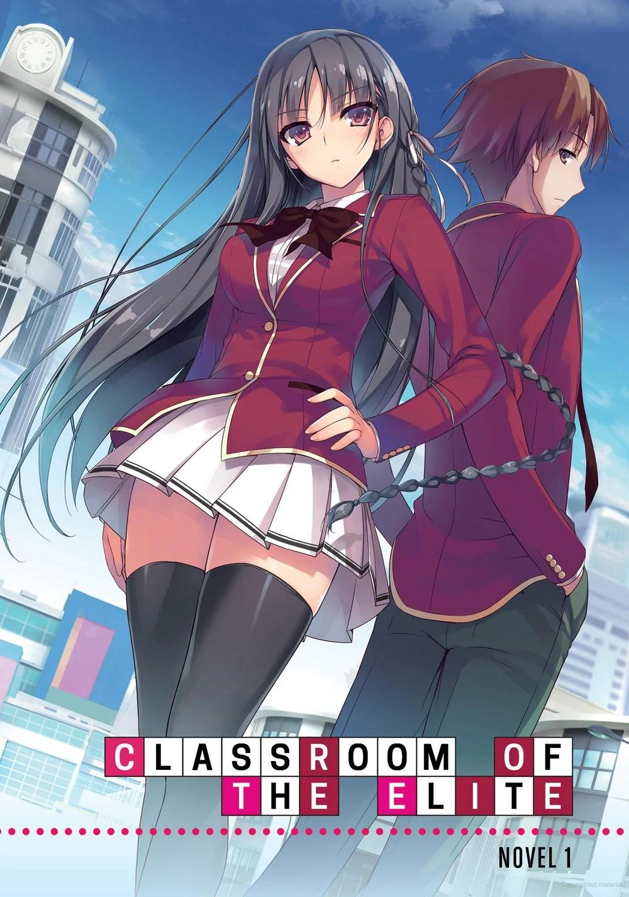
TRADUCCIÓN INGLÉS-ESPAÑOL
GLADHEIM
EDICIÓN DE ILUSTRACIONES
DANIEL ALEJANDRO
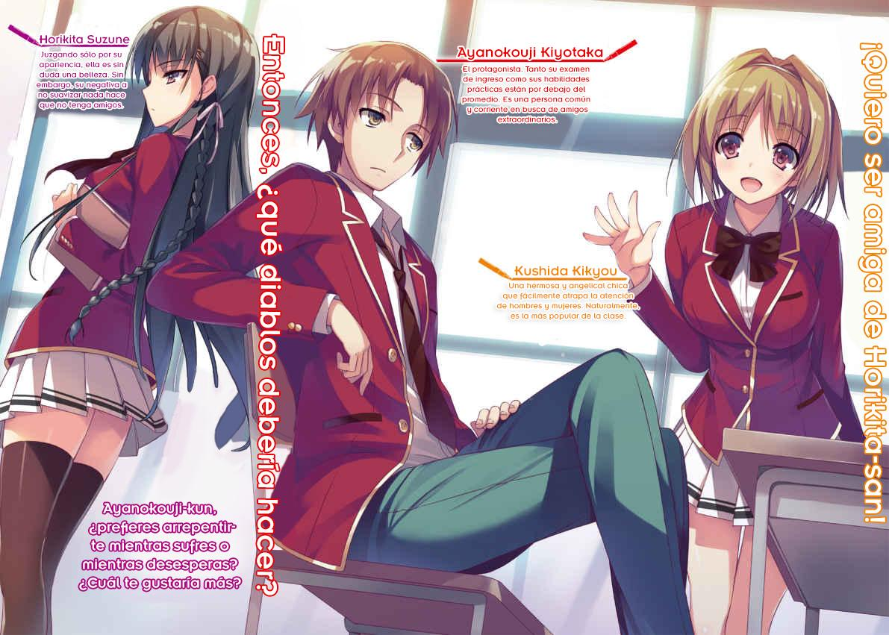
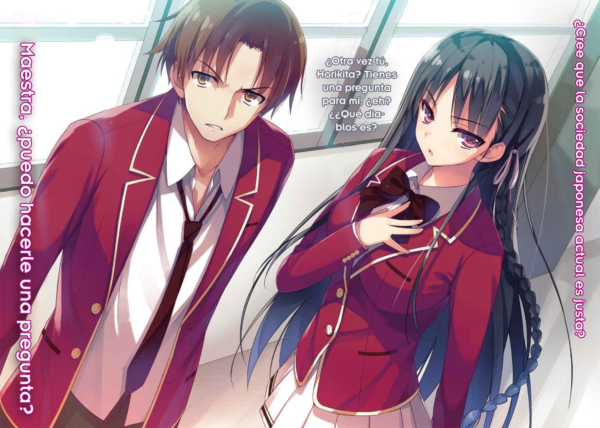
GLADHEIM
TRANSLATIONS
Youkoso Jitsuryoku Shijou Shugi no Kyoushitsu e Volumen 1
La estructura de la sociedad japonesa
Es un poco repentino, pero escuchen seriamente la pregunta que voy a hacer y piensen cuidadosamente en la respuesta.
Pregunta: ¿La gente es igual o no?
En estos días, a toda la sociedad le encanta hablar de igualdad. La gente está pidiendo que los hombres y las mujeres sean tratados por igual y gritando para que la sociedad se deshaga de la desigualdad. Piden tasas elevadas de empleo para las mujeres, automóviles de uso personal para todos, e incluso llegan a criticar el orden de registro de los nombres. Inclusive la gente aboga por la igualdad para las personas con discapacidades y ahora se anima al público a dejar de usar el término "personas con discapacidad". A los niños se les enseña que todos son iguales.
Me pregunto si eso es realmente cierto.
Los hombres y las mujeres tienen diferentes roles si tienen diferentes habilidades. Las personas con discapacidad siguen estando discapacitadas, independientemente del término con que las llamen. Nada de esto tiene significado si nadie le presta atención.
En otras palabras, la respuesta es no.
Las personas son seres desiguales; no hay personas verdaderamente "iguales".
Un gran hombre dijo una vez que Dios no hizo a nadie por encima o por debajo del otro. Pero eso no significa que todos sean iguales. ¿Sabes que el pasaje no termina ahí? El resto es así. Todo el mundo es igual al nacer, pero luego pregunté, ¿por qué hay diferencias en los puestos de trabajo y el status de las personas?
Eso fue escrito en la segunda mitad del pasaje. ¿Hay una diferencia porque uno se esforzó en el mundo académico o porque uno no se esforzó lo suficiente?
Aquí se crea una diferencia. Esos son los famosos "estudios de becas". Estas enseñanzas no han cambiado en absoluto, ni siquiera en el moderno 2015. Sin embargo, la situación es más compleja y se está volviendo más seria.
De todos modos, las personas son seres capaces de pensar. No creo que sea correcto decir que la gente debe vivir sólo usando sus instintos porque las cosas no son justas.
En otras palabras, la palabra igualdad está llena de mentiras y falsedades, pero la desigualdad también es inaceptable. Estaba tratando de encontrar una nueva respuesta al eterno problema que enfrentan los seres humanos.
Hey, tú, el que está sosteniendo este libro y leyéndolo.
¿Alguna vez has pensado en el futuro?
¿Alguna vez has imaginado lo que significa ir a la preparatoria para ir a la universidad?
¿Nunca has sentido que era vago el día en que de alguna manera conseguirías un trabajo?
Me sentía así.
Cuando terminé la educación obligatoria y entré a la preparatoria, no noté nada.
Sólo sentí alegría al ser liberado de mi “deber”.
No me di cuenta de que, en ese momento, mi vida y mi futuro estaban siendo impactados progresivamente.
Ni siquiera entendí lo que significaba estudiar japonés y matemáticas en la escuela.
BIENVENIDO A MI ESCUELA DE ENSUEÑO
— Ayanokouji-kun, ¿estás bien?
Llegó. Llegó de nuevo. La temida situación.
Cuando estaba fingiendo dormir, esa persona vino.
Fue la aparición del diablo, lo que me obligó a despertar (estaba tomando una siesta) a la realidad.
En mi cerebro, la undécima sinfonía de Shostakovich estaba tocando. La canción describía perfectamente mi predicamento actual: el sentimiento de total desesperanza cuando la gente es perseguida por los demonios y cuando el fin del mundo se aproxima rápidamente.
Incluso con los ojos cerrados me di cuenta.
Podía sentir la alarmante presencia del diablo justo a mi lado mientras esperaba a que su esclavo se despertara...
Ahora, como un esclavo ¿cómo puedo escapar de esta situación?
Para evitar el peligro, use la computadora en mi cerebro para obtener la respuesta instantáneamente.
Conclusión... Pretende no haber escuchado nada. Lo nombro la estrategia de "sueño fingido". Mi situación será resuelta con esta estrategia.
Si la persona que hablaba era una chica amable, ella lo pasará por alto después de decir: "Bueno, no se puede evitar. Te perdonaré porque es mi culpa ☆”.
Incluso un patrón como “te besaré si no despiertas, Chuu ~~” también está bien.
— Si no te despiertas en 3 segundos, enfrentarás castigos.
— ¿Qué diablos quieres decir con “castigos”?
En menos de un segundo la estrategia de "sueño fingido" fue frustrada y sucumbí ante la amenaza.
Sin embargo, me negué a levantar la cabeza y seguí resistiendo.
— Mira, como esperaba. Estabas despierto.
— Ya sé que eres aterradora si te enfado.
— Eso es bueno. Entonces, ¿tienes tiempo?
— ¿Y si digo que no?
— Bueno... no puedo forzarte, pero estaré malhumorada si no lo tienes—. Luego continuó—. Y si estoy malhumorada, seré un obstáculo importante para la vida escolar normal de Ayanokouji-kun. Hmm, por ejemplo, innumerables chinchetas en tu silla, rociar agua en tu cabeza cada vez que entres al baño y a veces apuñalarte con la punta del compás. Ese tipo de comportamiento, sí.
— ¡Eso es simplemente hostigamiento! Además, ese último parece extrañamente real, ¡como si recordara haber sido apuñalado!
Me desperté a regañadientes y me senté.
Una chica de cabello largo y negro, ojos afilados y hermosos me miraba desde un lado.
Su nombre es Horikita Suzune. Clase 1-D de preparatoria, mi compañera de clase.
— No tengas tanto miedo. Fue sólo una broma. No te echaré agua desde arriba cuando estés en el baño.
— ¡Las chinchetas y la punta del compás son más importantes! ¡Mira esto, esto!
¡Todavía puedes ver dónde me apuñalaron! ¿Cómo vas a asumir la responsabilidad si se convierte en una cicatriz de por vida?
Levanté la manga del brazo derecho y le mostré el antebrazo a Horikita.
— ¿Dónde está la evidencia?
— ¿Huh?
— ¿Dónde está la evidencia? ¿Estás diciendo que soy la culpable sin ninguna prueba?
Por supuesto, no hay evidencia. A pesar de que la única persona lo suficientemente cerca como para apuñalarme era Horikita, y aunque estaba sosteniendo el compás en su mano, definitivamente es difícil decirlo.
Sin embargo, tenía algo importante que confirmar.
— ¿Realmente tengo que ayudar? Lo pensé otra vez, pero después de todo-
— Hey, Ayanokouji-kun. Lamentando tu decisión mientras estás desesperado, o mientras estás sufriendo... ¿Cuál te gusta más? Debido a que me sacaste de mis compromisos, deberías ser responsable. ¿Está bien?
Horikita ofrecía sólo dos opciones ridículas y extremas. Al parecer, no permitirá llegar a un arreglo. Fue un error hacer un contrato con el diablo. Decidí rendirme y obedecer.
— Entonces, ¿qué se supone que debo hacer?
-pregunté temblando de miedo.
No me sorprenderé cuando escuche lo que me pide.
No sé cómo salieron así las cosas, pero recuerdo cuando empezó todo esto.
Conocí a esta chica exactamente hace dos meses.
¿Fue el día de la ceremonia de entrada?
1
Abril.
La ceremonia de entrada.
Iba a la escuela en autobús, que se sacudía cada vez que pasaba sobre una zona llena de baches en la carretera.
Mientras observaba el cambio de paisaje de un área a otra, los pasajeros del autobús aumentaron gradualmente.
La mayoría de los pasajeros llevaban uniformes escolares.
El frustrado y solitario asalariado que subió al autobús recordó el momento en que accidentalmente toqueteó a alguien la última vez que se subió a un autobús lleno de gente.
Una anciana se encontraba precariamente de pie frente a mí con sus pies inestables, se veía como si pudiera caer en cualquier momento.
Cometí un error al tomar el autobús.
A pesar de que fui capaz de asegurar un buen asiento, el frío viento soplaba hacia mí y el autobús entero estaba abarrotado.
Esa pobre anciana tendrá que esperar hasta que el autobús llegue a su destino.
El cielo sin nubes y el tiempo despejado es refrescante. Creo que podría quedarme dormido.
Mi paz y tranquilidad fueron interrumpidas repentinamente.
— ¿No crees que deberías ceder tu asiento?
Por un momento, abrí los ojos que estaban a punto de cerrarse.
Eh, por casualidad, ¿me estabas regañando?
Eso fue lo que pensé al principio, pero aparentemente la persona que estaba delante de mí estaba siendo advertida.
Un joven, bien vestido, de pelo rubio estaba sentado en el asiento prioritario. Quiero decir un estudiante de preparatoria. La anciana estaba de pie junto a él. Una oficinista estaba al lado de la anciana.
— Tú, ¿no ves que la anciana tiene problemas?
La oficinista parecía querer que cediera el asiento prioritario a la anciana.
En el silencioso autobús, su voz se hizo más fuerte y atrajo la atención de otras personas.
— Esa es una pregunta muy loca, señora.
El chico podría haber estado enojado, ignorante, o quizás brutalmente honesto, pero sonrió y cruzó las piernas.
— ¿Por qué debo dar este asiento a una anciana? No hay absolutamente ninguna razón para que se lo dé.
— ¿No es natural entregar el asiento prioritario a los ancianos?
— No entiendo. Los asientos prioritarios son sólo asientos prioritarios, y no hay ninguna obligación legal para que me mueva. Si me muevo o no, debería ser decidido por mí, que actualmente estoy en este asiento. ¿Me darías tu asiento porque soy un hombre joven? Hahaha, esa es una manera estúpida de pensar.
Es una manera de hablar que uno no esperaría de un estudiante de preparatoria. Su pelo está teñido de rubio, y hay algunos rasgos inesperados para un estudiante de preparatoria.
— Soy un joven sano. Ciertamente, no siento que ponerse de pie sea un inconveniente para mí. Sin embargo, es obvio que levantado consumirá más fuerza física que sentado. No quiero hacer una cosa tan inútil. O tal vez, ¿me estás diciendo que sea más animado y enérgico?
— ¿Qué clase de actitud es ésa hacia sus superiores?
— ¿Superior? Es obvio que tanto tú como la anciana han vivido más tiempo que yo.
No hay duda al respecto. Sin embargo, ese "arriba" se refiere a la altura.
Además, tengo un problema con usted. Incluso si hay una diferencia de edad,
¿no es una actitud terriblemente grosera e impertinente? (NTI: Superior en japonés es literalmente “persona por encima”, está diciendo que el “arriba” en la palabra superior se refiere a la altura, no socialmente "por encima".)
— ¿Eres estudiante de preparatoria? ¡Honestamente, escucha lo que dicen los adultos!
— Está bien, está bien.
La oficinista estaba exaltada, pero la anciana no quería empeorar la situación. Trató de calmarla con gestos de las manos, pero la oficinista continuó insultando al estudiante de preparatoria y parecía que estaba a punto de enfurecerse.
— Al parecer, la anciana escucha mejor que tú. Oh, querida, supongo que la sociedad japonesa no es completamente inútil todavía. Disfruta el resto de tu vida con toda tu alma.
Después de mostrar una sonrisa inútilmente refrescante, puso unos auriculares en sus oídos y comenzó a escuchar música fuerte. La oficinista que habló estaba apretando los dientes con enojo.
La actitud de importancia del estudiante la molestaba mientras trataba de discutir con él.
Personalmente, no me involucré porque estaba de acuerdo, al menos en parte, con el chico.
Una vez resuelto el problema moral, desaparece la obligación de renunciar a un asiento.
— Lo siento.
La oficinista trató de contener sus lágrimas mientras se disculpaba con la anciana.
Un pequeño incidente ocurrió en el autobús. Me sentí aliviado de no estar involucrado en la situación. No me importa cosas como dar mi asiento a los ancianos u obstinadamente negarme a moverme de él.
El alboroto terminó con el muchacho ganando con su gran ego. Al menos, todo el mundo pensaba que había terminado.
— Um... también creo que la señora tiene razón.
Una inesperada mano solidaria se extendió. La dueña de la voz parecía estar junto a la oficinista y le dijo su opinión valientemente al muchacho. Llevaba el mismo uniforme escolar que yo.
— Esta vez es una chica bonita, al parecer tengo suerte con las mujeres hoy.
— Abuela, parece que ha estado cálido por un tiempo. ¿No vas a ceder tu asiento?
Puede que no sea de tu incumbencia, pero creo que contribuirá a la sociedad.
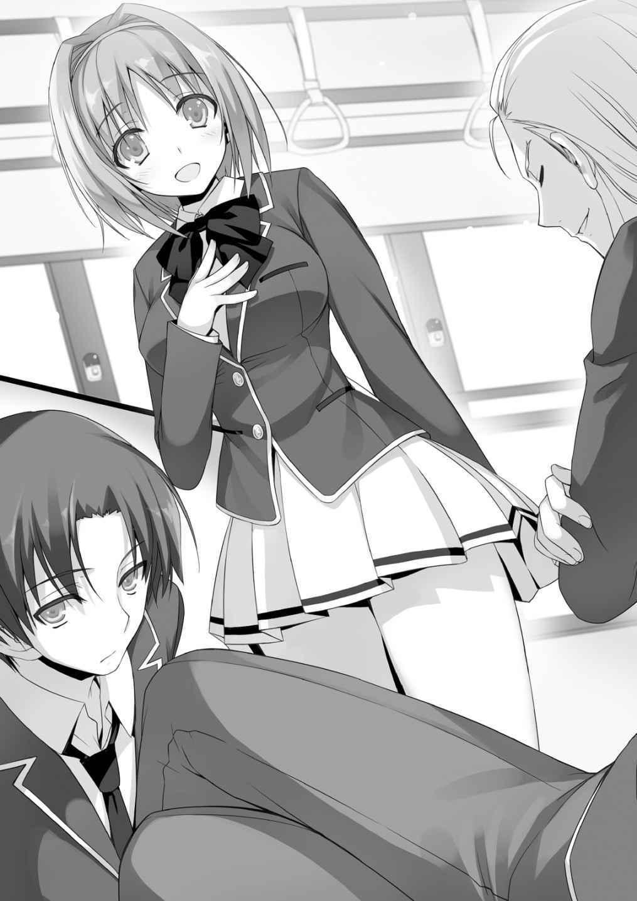
Con un "pachin", el muchacho chasqueó los dedos.
— ¿Contribución social? Ya veo, es una manera interesante de decirlo. Dar asientos a los ancianos puede ser una forma de contribuir a la sociedad.
Desafortunadamente, no estoy interesado en contribuir a la sociedad. Sólo pienso en mi propia satisfacción. Ah, y también, en este autobús lleno de gente, me estás pidiendo, que estoy en el asiento prioritario, ceder mi asiento, pero ¿no se lo puedes pedir a las otras personas que se quedan en silencio y dejarme en paz? Si alguien realmente se preocupa por los ancianos, creo que “el asiento prioritario esto, el asiento prioritario aquello” sería una preocupación trivial.
Las intenciones de la chica no llegaron al muchacho, y la actitud descarada del chico no cambió. Tanto la oficinista como la anciana no podían decir nada y se quedaron allí con una sonrisa amarga.
Pero la muchacha que se plantó ante chico no se desmoronó.
— Todo el mundo. Por favor, escúchenme por lo menos un poco. ¿Puede alguien dar su asiento a la anciana? Por favor, cualquiera.
Cuánta compasión, coraje y determinación en esas pocas palabras. Es raro ver esas genuinas intenciones.
Con su comentario, la chica pudo haber parecido una molestia. Pero ella apeló seriamente a los pasajeros sin temor.
Yo no estaba en un asiento prioritario, pero estaba sentado cerca de la anciana.
Al levantar la mano y decir “aquí tiene”, la situación se resolvería.
Los ancianos también se calmarían.
Sin embargo, como todos los demás en el autobús, no me moví. Nadie sintió que era necesario moverse. La actitud y el comportamiento del muchacho se habían apoderado de algunos de los pasajeros y se convencieron de que tenía razón.
Por supuesto, los ancianos son contribuyentes y sin duda un importante apoyo de Japón.
Pero nosotros, los jóvenes, somos los importantes recursos humanos que sostendrán a Japón de ahora en adelante.
Además, debido a que la población en general está envejeciendo gradualmente, nuestro valor también está aumentando.
Así que si se comparan los jóvenes y los ancianos, es obvio que uno es más importante ahora. Bueno, este es también un argumento perfecto, ¿no?
De alguna manera, comencé a preguntarme qué harían las otras personas. Mirando alrededor, la gente fingía no haber notado nada o tenía una mirada vacilante.
Pero... la chica que estaba sentada a mi lado era completamente diferente.
Entre la confusión, ella tenía una mirada completamente inexpresiva.
Cuando la miré involuntariamente por su rareza, nuestros ojos se encontraron por un momento. Podría decir que compartimos los mismos pensamientos. Ninguno de los dos pensó en dar su asiento a la anciana.
— ¡Ah, aquí tiene!
Momentos después de la solicitud de la chica, una mujer se puso de pie. Cedió su asiento, incapaz de soportar la culpa.
— ¡Gracias!
Cuando la chica bajó la cabeza con una gran sonrisa, empujó a través de la multitud y llevó a la anciana al asiento.
Ella le dio las gracias a la chica una y otra vez, luego se sentó.
Mientras miraba a la anciana y a la muchacha, crucé los brazos y cerré los ojos.
El autobús pronto llegó al destino y se detuvo en la escuela.
Cuando bajé del autobús, había una puerta de piedra natural que me esperaba.
Todos los chicos y chicas de uniforme bajaron del autobús y pasaron por la puerta.
Preparatoria Koudo Ikusei.
Una escuela creada por el gobierno japonés que tiene como objetivo educar a los jóvenes para ser el pilar del futuro.
Es un lugar al que asistiré a partir de hoy.
Alto, respira profundamente.
¡OK, vamos!
— Espera un segundo.
Cuando trataba de dar mi primer paso de valentía, me detuve al instante cuando alguien intentó hablar conmigo.
Me detuvo la chica que se sentaba a mi lado en el autobús.
— Me miraste hace un rato. ¿Por qué?— Dijo con una mirada firme.
— Lo siento. Estaba un poco interesado. Cualquiera que sea la razón, no tenías ninguna intención de dar tu asiento a la anciana, ¿verdad?
— Sí, sí, no quería dar mi asiento. ¿Qué está mal con eso?
— No, es sólo que pensaba lo mismo. Tampoco tenía ninguna intención de dar mi asiento. No me gusta meterme en problemas; no me gusta preocuparme por esas cosas.
— ¿Meterme en problemas? No me compares contigo. No di mi asiento porque no sentí ningún significado en dar el asiento a una anciana.
— ¿No es peor que no meterse en problemas?
— No lo sé. Sólo estoy actuando de acuerdo a mis propias creencias. Es diferente de las personas que evitan cosas problemáticas como tú. No quiero pasar tiempo con gente como tú.
— Me siento igual.
Sólo quería dar mi opinión, pero no estaba realmente de humor para replicar.
Ambos suspiramos deliberadamente y comenzamos a caminar en la misma dirección.
2
No me gusta la ceremonia de entrada. Muchos de los de primer año piensan de la misma manera.
El director y los estudiantes se están agradeciendo mutuamente de modo irritante, es mucho tiempo de pie, y es un dolor en el trasero porque hay demasiadas cosas problemáticas.
Pero eso no es todo lo que quiero decir.
La ceremonia de ingreso a la primaria, secundaria y preparatoria marca el comienzo de una prueba importante para los estudiantes.
Los primeros días después de la ceremonia de entrada, los estudiantes deben hacer amigos para disfrutar el resto de su vida escolar.
Si alguien falla en esta tarea, es un hecho que le esperan tres miserables años.
Siguiendo mi principio de evitar problemas, creo que sería mejor hacer algunos amigos y establecer relaciones humanas decentes.
El día anterior, traté de practicar hacer amigos porque soy inexperto.
El primer escenario era explotar en el salón de clases y luego hablar emocionadamente.
El segundo escenario era pasar secretamente una nota con mi dirección de correo electrónico en ella. Después convertirse en amigos.
En mi caso, tuve que practicar porque este es un entorno completamente diferente al que había estado acostumbrado durante toda mi vida. Estoy completamente solo.
Entré en el feroz campo de batalla yo solo.
Con vistas al aula, caminé hacia el asiento con mi placa de identificación.
Un asiento en la parte de atrás del salón y cerca de la ventana. En general un buen lugar.
El aula estaba solo medio llena.
Los estudiantes estaban mirando sus materiales escolares o estaban hablando con amigos y conocidos.
Ahora, ¿qué debo hacer? ¿Conocer gente durante este rato libre? Sentado unos lugares frente a mí, un chico rechoncho parecía solo (mi imaginación egoísta).
Emitía un aura de que gritaba, “¡Qué alguien hable conmigo y sea mi amigo!” (Otra vez, mi imaginación egoísta)
Sin embargo... si de repente caminas hacia alguien y hablas con ellos probablemente se sientan incómodos.
Entonces, ¿esperas el momento adecuado? No, para entonces, probablemente estaría rodeado de enemigos y hay una gran posibilidad de que me quede sin amigos.
Como pensaba, debería hablar...
Espera, espera, no te precipites.
Si descuidadamente salto y hablo con el estudiante desconocido, podría ser vencido por otra persona.
Esto es inútil, una espiral negativa...
Al final, no podía hablar con nadie y de la forma en que iban las cosas, pronto me quedaría solo.
¿Está todavía solo? ¿Oigo risas? Debo estar escuchando cosas.
Me pregunto qué son los amigos. ¿De dónde demonios vienen los amigos? ¿Se convierten en amigos después de comer juntos? ¿O te conviertes en amigo después de ir al baño juntos?
Cuanto más lo pienso, menos no lo entiendo. ¿Es algo profundo? Debería pensar más en ello.
Tratar de hacer nuevos amigos es realmente molesto y agotador. En primer lugar,
¿debo tratar de hacer amigos así? Además, ¿no se forman las amistades naturalmente con el tiempo? Mi mente está en completo desorden como un caótico festival de verano.
Mientras mi mente sigue nebulosa y confusa, el aula se llena rápidamente mientras otros estudiantes entran al salón de clases.
Oh, bueno, no tengo más remedio que intentarlo.
Después de una larga lucha interna, empecé a levantarme de mi asiento. Sin embargo…
Cuando me levanté, me di cuenta de que el chico rechoncho con gafas estaba hablando con otro compañero de clase.
Con una sonrisa amarga, me di cuenta de que no había ninguna amistad que hacer aquí.
Bien por ti, gafas-kun.
Hiciste tu primer amigo-
— ¡Tú, el de antes!
Sintiéndome perplejo, estaba haciendo un serio examen de conciencia.
Involuntariamente solté un profundo suspiro desde lo profundo de mis pulmones. Mi vida de preparatoria parece bastante sombría.
Me di cuenta de que el aula estaba casi llena y entonces escuché a alguien bajando su mochila en el asiento a mi lado.
— Es un suspiro profundo, aunque el semestre escolar aún no ha comenzado.
Tengo ganas de suspirar después de encontrarte de nuevo.
La persona que se sentó a mi lado era la chica con la que discutí después de bajar del autobús.
— Así que estábamos en la misma clase, ¿eh?
Después de todo, sólo hay 4 clases de primer año. No es como si fuera probabilísticamente imposible que nos pusieran en la misma clase.
— Soy Ayanokouji Kiyotaka. Encantado de conocerte.
— ¿Una repentina presentación?
— Incluso si la llamas repentina, es la segunda vez que hablamos. ¿No está bien presentarse?
De todos modos, antes no tenía manera de presentarme con nadie. Incluso a esta chica impertinente. Aunque, para familiarizarme con la clase, quería aprender al menos el nombre de mi vecina.
— ¿Te importa si rechazo tu saludo?
— Creo que sería incómodo si no conociéramos nuestros nombres, aun cuando nos sentamos uno al lado del otro.
— Creo que estaría perfectamente bien.
Después de mirarme, puso su mochila en el pupitre. Parece que ni siquiera me dirá su nombre.
La chica no mostró interés en el resto de la clase, y se sentó como una modelo.
— ¿Tu amiga está en otra clase? ¿O vienes sola a esta preparatoria?
— Eres curioso, ¿no es así? No deberías hablar conmigo, ya que de todos modos no me encontrarás interesante.
— Si te estoy molestando, solo dime que me calle.
Pensé que la conversación había terminado, pero después de un repentino cambio opinión, suspiró y me miró.
— Me llamo Horikita Suzune.
No esperaba recibir una respuesta, pero ella... no, Horikita, se presentó.
Por primera vez vi su rostro.
... Wow, ella es linda.
Quiero decir, es una belleza.
A pesar de estar en el mismo grado, probablemente podría pasar como estudiante de segundo o tercer año.
Parecía una mujer madura.
— Déjame empezar diciéndote un poco sobre mí. No tengo aficiones particulares, pero tengo interés en todo. No tengo demasiados amigos, pero creo que sería bueno tener algunos amigos. Bueno, ese es el tipo de persona que soy.
— Suena como una respuesta de alguien que evita situaciones problemáticas. No creo que alguna vez me guste alguien que piense así.
— Siento que toda mi existencia ha sido negada en un segundo.
— Ruego que no me sucedan más desgracias.
— Lo comprendo, pero no creo que eso se haga realidad.
Señalé la puerta del aula. El que estaba parado allí era ───
— ¡El equipo en esta clase parece estar en orden! ¡El salón de clases se parece a lo que dicen los rumores!
Era el chico que discutía con la chica en el autobús.
— Ya veo. Ciertamente es mala suerte.
Parece que no sólo nosotros, sino ese chico problema también está en la clase D.
Sin notarnos para nada, se sentó en el asiento marcado con “Koenji”. Me pregunto si sabe lo que significa el término “amistad”. Intentemos observarlo un poco.
Entonces Koenji subió las piernas al pupitre, sacó un cortauñas y comenzó a hacer mantenimiento en sus uñas. Actuó como si fuera el único allí e ignoró todo su entorno.
Sus comentarios en el autobús parecen haber surgido de sus verdaderos pensamientos.
En menos de diez segundos, más de la mitad de la clase se alejó de Koenji. Incluso aquí, su actitud importante penetró en el aula.
Mirando a mi lado, me di cuenta de que Horikita estaba mirando hacia su escritorio, estaba leyendo un libro.
Oops, me olvidé que hablar y contestar era uno de los fundamentos para mantener una conversación.
Una de mis posibilidades de ser amigo de Horikita fue aplastada.
Mirando el título del libro, vi que estaba leyendo “Crimen y castigo”.
Eso es interesante. Si hay alguna razón para matar a una persona o no, aboga por matar. Tal vez las aficiones de Horikita son similares a las de los del libro.
De todos modos, ya que las presentaciones terminaron, parece que no interactuaremos muy a menudo.
Después de unos minutos, sonó la primera campana.
Casi al mismo tiempo, una mujer que llevaba un traje entró en el aula.
A primera vista, parece una profesora que encuentra la estricta disciplina en el aula importante. Ella tiene unos 30 años. Su pelo largo estaba atado en una cola de caballo.
— Ahem, buenos días estudiantes. Mi nombre Chabashira Sae y estoy a cargo de la clase D este año. Enseño historia japonesa. Esta escuela no cambia las clases cada año, por lo que en los próximos tres años, espero conocerlos a todos. Saludos. Aunque la ceremonia de entrada será en el gimnasio en una hora, voy a distribuir la lista de reglas especiales y la guía de matrícula.
Desde el frente, pasaron los folletos.
En esta escuela, hay reglas especiales que la hacen diferente de cualquier otra preparatoria. Se requiere que todos los estudiantes vivan en el campus y se les prohíbe contactar con alguien ajeno a la escuela.
Incluso contactar a la familia cercana es imposible sin el permiso de la escuela.
También se prohíbe abandonar los terrenos escolares.
Sin embargo, también hay muchas otras instalaciones para que los estudiantes no sufran por estar encerrados. Hay karaokes, salas de teatro, cafés e incluso boutiques-se puede decir que es un pequeño pueblo. En medio de la gran ciudad, el inmenso campus abarcaba más de 600.000 metros cuadrados. (NT: 60 hectáreas) Sin embargo, hay una característica especial más en esta escuela. La introducción del sistema S.
— Ahora voy a entregar las tarjetas de identificación de estudiante. Con esta tarjeta, pueden comprar cualquier cosa en cualquiera de las tiendas e instalaciones del campus. Funciona como una tarjeta de crédito. Sin embargo, tengan cuidado de cuántos puntos utilizan. No hay nada que no puedas comprar en la escuela. Si hay algo en la escuela, se puede comprar.
Este sistema de puntos asociado con la tarjeta de estudiante esencialmente reemplazó al dinero.
De esta manera, cada estudiante comenzaba con la misma cantidad de dinero y se vería obligado a revisar sus hábitos de consumo. En cualquier caso, todos los puntos se proporcionan por la escuela sin cargo alguno.
— Las tarjetas de estudiante se usan deslizándolas en las máquinas. El uso de las máquinas es realmente fácil, por lo que no tendrán ningún problema con ellas.
Los puntos se abonarán automáticamente el primer día del mes. Todo el mundo debería tener ya 100.000 puntos en su tarjeta. Además, 1 punto vale 1 yen.
Cualquier otra explicación es innecesaria.
Por un momento, el aula se hizo ruidosa.
En otras palabras, por ser admitido en esta escuela, recibimos una asignación mensual de 100,000 yenes por parte de la escuela. Como se esperaba de una escuela creada por el gobierno japonés.
100.000 yenes es una cantidad considerable de dinero dado a los estudiantes como asignación mensual.
— ¿Se sorprendieron por la cantidad de puntos que les dieron? Esta escuela mide las habilidades de los estudiantes. Todos aquí, que aprobaron el examen de admisión, han demostrado cierto nivel de mérito y valor. La cantidad de dinero es un reflejo de sus habilidades. Úsenlo sin contenerse. Sin embargo, después de la graduación, todos los puntos serán retirados. Puesto que es imposible cambiar estos puntos por efectivo, no tiene sentido ahorrarlos. La forma en que se utilizan depende de ustedes. Utilícenlos en cosas que les gustan o necesitan.
Si creen que no va a usar algunos de sus puntos, los pueden transferir a otra persona. Sin embargo, el acoso a otras personas por puntos está prohibido. La escuela es muy estricta en materia de intimidación.
Chabashira-sensei miró alrededor del salón.
— Parece que nadie tiene preguntas. Pues bien, por favor, lleven una buena vida estudiantil.
Muchos de los compañeros de clase no pueden ocultar su sorpresa por la cantidad de subvención.
— No es una escuela tan estricta como pensé que sería.
Pensé que estaba hablando conmigo mismo, pero Horikita estaba mirando en mi dirección y pensó que estaba hablando con ella.
— Ciertamente parece una escuela laxa.
Aunque nos obligan a vivir en dormitorios, nos prohíben salir del campus y nos prohíben entrar en contacto con cualquier persona en el exterior, nos dan muchos puntos gratis para usarlos libremente en el campus.
Se podría decir que los estudiantes son puestos en el paraíso con un trato preferencial.
Y el mayor mérito de la preparatoria Koudo Ikusei es su tasa de empleo del 100%.
Bajo la guía del gobierno, la escuela trabaja para un mejor futuro con todos sus recursos. De hecho, muchos de los alumnos de esta escuela ampliamente publicitada son personas famosas. Por lo general, no importa cuán famosa y buena es una escuela, su área de especialización es reducida. Una escuela puede especializarse en deportes o especializarse en música. O tal vez se especializa en temas relacionados con las computadoras. Pero esta escuela cumple en cualquier área que alguien desee estudiar. Esta es una escuela que tiene esta clase de sistema y valor.
Es por eso que pensé que el ambiente de clase sería más competitivo y sanguinario, pero la mayoría de mis compañeros de clase parecían estudiantes comunes que podías encontrar en cualquier otro lugar.
No, tal vez por eso todo el mundo es tan normal. Ya estábamos reconocidos como estudiantes que pasaron el examen de ingreso. ¿Podemos graduarnos pacíficamente y sin incidentes? Me pregunto si siquiera es posible.
— Este tratamiento tan preferencial da un poco de miedo.
Al escuchar a Horikita decir eso también me sentí de la misma manera.
Creo que sería mejor permanecer ignorante de los detalles de esta escuela.
Debido a que son capaces de cumplir cualquier deseo, creo que habría algunos riesgos asociados con la escuela.
— Oye, oye~, ¿no quieres ir a ver esas tiendas? ¡Vamos de compras!
— Umm. Con tanto dinero, podemos comprar cualquier cosa. Es genial que haya entrado a esta escuela~.
Después de que la maestra salió del salón, los estudiantes, que recibieron una gran cantidad de dinero, estaban inquietos.
— Todos, ¿pueden escucharme un momento?
Un estudiante que tenía el aire de un hombre joven levantó la mano y habló.
Su pelo no está teñido y parecía un estudiante de honor. Tampoco parecía delincuente.
— A partir de hoy, estaremos en la misma clase por los próximos tres años. Por lo tanto, sería genial si todos pudiéramos presentarnos y hacernos amigos.
Todavía tenemos tiempo hasta la ceremonia de entrada, ¿qué les parece?
Oh... dijo algo asombroso. La mayoría de los estudiantes no encontraba palabras que decir.
— ¡Estoy de acuerdo! Después de todo, no sabemos nuestros nombres, mucho menos nada acerca de nosotros.
Después de que la primera persona estuvo de acuerdo, los anteriormente dudosos estudiantes expresaron su apoyo.
— Mi nombre es Hirata Yousuke. Ya que en la secundaria a menudo me llamaban por mi nombre de pila, Yousuke, siéntanse libres de usarlo. Aunque me gustan todos los deportes, me gusta el fútbol en particular y también planeo jugar fútbol en esta escuela. Quedo a su cuidado.
El joven que propuso que la clase se presentara de manera tranquila e impecable hizo su presentación.
Realmente tienes un montón de agallas. E incluso hablaste de fútbol. Después de hablar de fútbol con esa expresión refrescante, tu popularidad se multiplicó por 2, no, 4.
Mira, mira, todas las chicas cerca de Hirata tienen corazones en sus ojos.
Así, Hirata se convirtió en la figura central de la clase, y probablemente atraerá la atención de todos hasta que nos graduemos.
Y probablemente saldrá con la chica más linda de la clase. Posiblemente sea así como las cosas terminarán.
— Bueno, si eso fue satisfactorio... entonces, ¿podemos comenzar las presentaciones desde el principio?
Siendo tranquilo hasta el final, Hirata pidió confirmación.
Aunque la chica estaba perpleja y nerviosa, pronto se decidió y se puso de pie.
En otras palabras, estaba aturdida por las palabras de Hirata.
— M-mi nombre Inogashira K-ko-
Mientras trataba de presentarse sus palabras no salían su boca.
Ya sea que su mente se quedó en blanco o no podía ordenar sus pensamientos completamente, era incapaz de hablar claramente. Cuando ya no salían las palabras, su rostro palideció de vergüenza. Es raro ver a alguien ponerse tan nervioso.
— Haz lo mejor que puedas.
— Está bien si no te apresuras~.
Esas amables palabras vinieron de un compañero de clase. Pero tuvieron el efecto contrario y las palabras dentro de su garganta desaparecieron. El silencio continuó durante 5 segundos, luego 10 segundos. La presión era palpable.
Pequeñas risitas provenían de algunas de las chicas del aula. Estaba paralizada de miedo. Una de las chicas habló.
— Hacerlo lentamente está bien, no te apresures.
Aunque eran palabras similares "Haz tu mejor esfuerzo" y "Está bien si no te apresuras", el significado que tenían era completamente diferente.
Para la muchacha nerviosa, las palabras de los chicos parecían un poco fuertes.
Por otro lado, las palabras de la chica le decían que fuera a su propio ritmo, y se sentía más tranquilizador.
Después de recuperar un poco de su compostura, inhaló y exhaló para calmarse.
Luego, después de un rato...
— Mi nombre es, Inogashira... Kokoro. Mi hobby es coser y soy buena tejiendo.
Estaré a su cuidado.
Desde la primera palabra dijo todo sin detenerse.
Con una expresión aliviada, encantada y ligeramente avergonzada, Inogashira se sentó.
Gracias a la ayuda, la presentación de Inogashira terminó sin ningún problema.
Siguieron otras presentaciones.
— Soy Yamauchi Haruki. En la primaria, jugaba al tenis de mesa a nivel nacional, luego fui el as del club de béisbol en la secundaria. Tenía el uniforme número 4.
Pero como recientemente me lesioné durante Inter High, estoy actualmente en rehabilitación. Encantado de conocerlos.
No creo que el número 4 tenga algún significado...
Y el Inter High es un torneo deportivo para las preparatorias... No puedes competir como estudiante de secundaria.
¿O estaba tratando de hacer una broma? Tenía la impresión de que era un tipo de persona frívolo y de boca suelta.
— Entonces soy la siguiente, ¿verdad?
La chica alegre que se puso de pie después fue la que le dijo a Inogashira que se presentara a su propio ritmo.
Y la chica que ayudó a la anciana en el autobús esta mañana.
— Mi nombre es Kushida Kikyou, y como ninguno de mis amigos de la secundaria vino a esta escuela ¡quiero conocerlos a todos y que seamos amigos!
La mayoría de los estudiantes terminaron sus presentaciones después de unas pocas palabras, pero Kushida siguió hablando.
— En primer lugar, quiero ser amiga de todos aquí. ¡Después de que todos hayan terminado sus presentaciones, por favor intercambien información de contacto conmigo!
Sus palabras no eran sólo palabras. Podía decir inmediatamente que ella era el tipo de chica que abre su corazón inmediatamente.
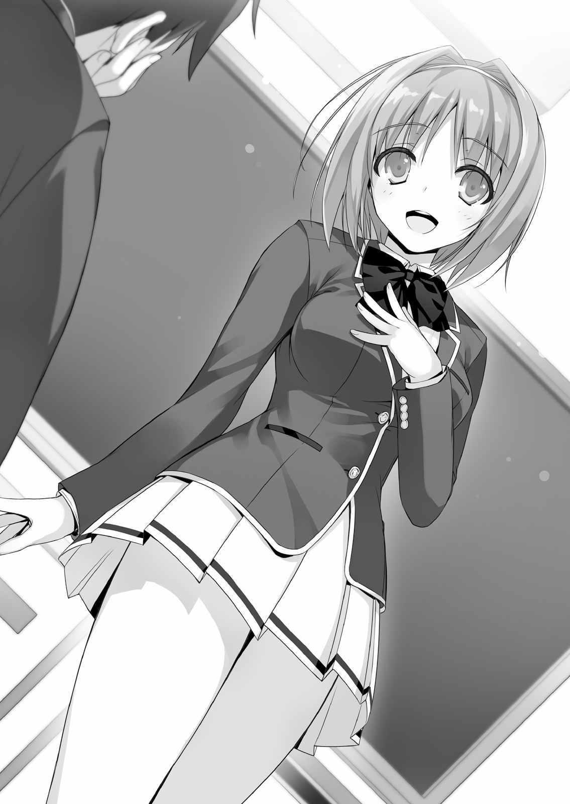
Sus palabras a Inogashira no eran sólo un estímulo que parecía apropiado para la situación, sino sus verdaderos sentimientos.
Además, parecía el tipo de persona que se llevaría bien con todo el mundo.
— Entonces, durante las vacaciones o después de la escuela, quiero hacer recuerdos con mucha gente, así que por favor invítenme a muchos eventos. He estado hablando por un tiempo, así que voy a terminar mi presentación aquí.
Definitivamente se llevará bien con todos los chicos y chicas de la clase.
Por supuesto, no es como si estuviera criticando la presentación de otras personas.
Me siento un poco inquieto por alguna razón.
Lo que debo decir en mi presentación... ¿debo tratar de decir una broma?
¿O debo sacar risas creando alta tensión durante mi discurso?
No, me pregunto. La tensión alta probablemente arruinaría el estado de ánimo. Para empezar, no soy ese tipo de personaje.
Mientras estaba perdido en mis propias preocupaciones, las presentaciones continuaron.
— Entonces, el siguiente es-
Cuando Hirata miró al siguiente estudiante, éste le lanzó una mirada penetrante.
Con el pelo rojo brillante, el muchacho parecía un delincuente y habló de una manera que encajó con su aspecto.
— ¿Ustedes son idiotas? No quiero presentarme, solo déjenme en paz.
Pelirrojo miraba a Hirata. La tensión colgaba en el aire.
— No puedo forzarte a presentarte. Pero, no creo que sea algo malo para llevarte bien con tus compañeros de clase. Si piensas que estoy siendo desagradable, me disculpo.
Después de mirar a Hirata inclinando la cabeza hacia pelirrojo, algunas de las chicas miraron fijamente a pelirrojo.
— ¿No está bien hacer una simple presentación?
— ¡Sí, sí!
Como era de esperar del chico apuesto del fútbol. Parece haber atraído rápidamente la atención de las chicas.
Sin embargo, comenzando con pelirrojo, la mitad de los otros chicos se movían con celos hacia Hirata.
— No. No quiero pretender que somos buenos amigos.
Pelirrojo se levantó de su asiento. Al mismo tiempo, varios estudiantes salieron del salón. Probablemente no tenían intención de conocer a sus compañeros de clase.
Horikita también se levantó de su asiento.
Miró mi dirección, pero cuando se dio cuenta de que no estaba moviéndome, comenzó a salir del salón. Hirata parecía un poco solitario al ver que el grupo salía del aula.
— No son malas personas. También soy culpable porque les pedí que se mantuvieran fuera por mi propio egoísmo.
— Hirata-kun no hizo nada malo. Dejemos a esas personas en paz.
A pesar de que algunas personas se fueron después de no querer hacer sus presentaciones, los estudiantes restantes continuaron.
— Soy Ike Kanji. Las cosas que me gustan son las chicas y las cosas que odio son chicos apuestos. Estoy buscando una novia en cualquier momento, ¡gusto en conocerlos! ¡Por supuesto, es mejor sean lindas o hermosas!
Es difícil decir si dijo eso como una broma o si son sus verdaderos pensamientos, pero se ganó la ira de las chicas.
— Guau, genial~. Ike-kun, eres tan asombroso—. dijo una de las chicas con una voz completamente sin emociones.
Por supuesto, era obvio que era 1000% mentira.
— ¿En serio, en serio? Wow, pensé que no estaba mal, pero... jeje.
Al parecer Ike pensó que era cierto y se avergonzó un poco.
De repente, todas las chicas se rieron.
— Wow, chicas, es lindo. ¡Está reclutando novias!
No, te están molestando.
Ike agitó la mano alegremente mientras se burlaban. Aunque no parece que sea mala persona.
Entonces, el siguiente era el chico que peleó en el autobús, Koenji.
Después de revisar sus flequillos con un espejo de mano, usó un peine para arreglar su cabello.
— Um, puedes presentarte.
— Fu~. De acuerdo.
Mientras sonreía como un joven noble, mostró vislumbres de su insolente conducta.
Pensé que se pondría de pie, pero Koenji mantuvo los pies sobre el pupitre y comenzó su presentación de esa manera.
— Mi nombre es Koenji Rokusuke. Como único heredero del conglomerado Koenji, seré el hombre responsable de la sociedad japonesa en un futuro próximo.
Encantado de conocerlas, damas.
No era una presentación para toda la clase, solo para las mujeres.
Algunas chicas miraron a Koenji con ojos brillantes después de escuchar que era rico, mientras que los demás lo miraban como si estuviera loco. Es natural.
— De ahora en adelante, castigaré implacablemente cualquier cosa que me haga sentir incómodo. Sean cuidadosos con eso.
— Eh... Koenji-kun. ¿Qué quieres decir con “cualquier cosa que me haga sentir incómodo”?
Sintiéndose perturbado ante sus palabras, le preguntó Hirata.
— Exactamente como dije. Pero si diera un ejemplo. Odio las cosas poco atractivas.
Si viera algo feo, haría lo que dije.
Se peinó el pelo hacia arriba.
— Oh, gracias. Me aseguraré de tener cuidado.
Pelirrojo, Horikita, Koenji. Entonces Yamauchi e Ike. Al parecer, todos los estudiantes raros se reunieron en esta clase. Durante este corto periodo de tiempo, pude ver una visión de la variedad de estudiantes en mi clase.
También tengo una extraña particularidad… no, no hay nada especial sobre mí.
Quería convertirme en un ave libre, pero volé de la jaula solo.
Sin pensarlo mucho, quería experimentar la libertad.
Si miras al exterior, puedes ver la gracia de las aves... lo cual no puedes ver en este momento.
De todos modos yo soy ese tipo de hombre.
— Um... la siguiente persona... por favor preséntese.
— ¿Eh?
Mi turno llegó mientras estaba perdido en mis delirios. Muchos de los estudiantes esperaban mi presentación. Oigan, oigan, no me miren con tanta expectación (mi imaginación).
Oh, bueno, apostaré todo en esta presentación.
¡Bien! Levántate y empieza.
— Bueno... Um, mi nombre es Ayanokouji Kiyotaka. El, er... no hay nada particular sobre mí, voy a hacer todo lo posible por llevarme bien con todo el mundo, uh, un placer conocerlos.
Después de terminar presentación, rápidamente me senté de nuevo.
Fu... ¿Todo el mundo lo vio? Mi presentación.
…¡Ha fallado!
Enterré la cara en mis manos.
Estaba demasiado perdido en mis pensamientos, por lo que no tenía palabras adecuadas de antemano.
Fue una presentación aburrida y sosa que nadie recordará más tarde.
— Encantado de conocerte Ayanokouji-kun. También quiero llevarme bien con todos, así que hagamos nuestro mejor esfuerzo—. Dijo Hirata con una sonrisa refrescante.
Todos aplaudieron. Siento cómo todos aplaudieron después de ver mi error.
Al mismo tiempo, me sentí extrañamente herido por su compasión.
Sin embargo, seguía siendo feliz.
3
A pesar de que esta escuela es difícil, la ceremonia de entrada es la misma aquí que en cualquier otra.
Después de un discurso de agradecimiento de algún rector u otro director, la ceremonia terminó.
Y entonces ya era mediodía. Después que nos explicaron todos los edificios e instalaciones en el campus, el grupo se separó.
De los estudiantes 70 u 80% se dirigieron a los dormitorios. El resto formaron pequeños grupos y caminaron hacia los cafés y las salas de karaoke. La multitud entera pronto desapareció.
En mi camino a los dormitorios, decidí ir a la tienda de conveniencia, que estaba de paso. Por supuesto que estaba solo. No conocía a nadie.
— Qué desagradable coincidencia.
Cuando entré a la tienda, inmediatamente me encontré con Horikita.
— No seas tan hostil. Mejor dicho, ¿también tienes cosas que comprar?
— Sí, sólo un poco. He venido a comprar algunas cosas de primera necesidad.
Horikita habló mientras examinaba el champú que tomó de la estantería.
La vida del dormitorio comienza hoy, necesitas mucho más que “un poco”. Además, las chicas necesitan varios productos.
Puso rápidamente el champú y otras necesidades diarias en su cesta. Pensé que iría por artículos de buena calidad, pero sólo escogió lo más barato disponible.
— Pensé que las chicas prestaban más atención a qué tipo de champú que utilizan.
— Eso depende del tipo de persona, ¿no? El tipo de persona que no sabe dónde debería gastar su dinero.
Me envió una fría mirada que decía: “¿Podrías no mirar las cosas de otras personas sin permiso?”
— Además, no esperaba que te quedaras en el aula para presentarte. No pareces el tipo de persona que está en ese grupo de compañeros.
— Estoy tratando de estar en ese grupo silenciosamente precisamente porque trato de evitar problemas. ¿Por qué no participaste en las presentaciones? Es sólo un breve saludo. Podrías llevarte bien con los demás y tener la oportunidad de hacer amigos.
También, muchos de los estudiantes intercambiaron direcciones de contacto.
Si Horikita hubiera participado, probablemente habría sido popular en la clase. Que desperdicio.
— Hay muchas razones que podría darte, pero ¿debo dar una explicación sencilla?
Incluso si me presentase, no está garantizado que me llevaría bien con todo el mundo. Más bien, probablemente habría creado problemas. Si no me presento, ninguno de estos problemas ocurría. ¿Verdad?
— Pero todavía hay una alta probabilidad de que te lleves bien con todos.
— ¿De dónde sacaste esa probabilidad? Digo eso, pero discutiremos sin cesar si tratamos de debatir sobre esto, así que digamos que la probabilidad es alta.
Entonces, ¿te llevas con alguien?
— Uug
Me miró mientras hablaba.
Ya veo. Sorprendentemente, tiene razón.
En realidad, no pude intercambiar contactos con nadie.
No podía utilizarse como prueba de que había una alta probabilidad de llevarse bien si se presentaba. Desvié la mirada ante las palabras de Horikita.
— En otras palabras, no tienes pruebas de que las presentaciones faciliten hacer amigos—. Horikita continuó—. Para empezar, nunca quise hacer amigos. Por lo tanto, no hay necesidad de que me presente y no hay necesidad de escuchar la presentación de nadie más. ¿Estás convencido ahora?
Ella me rechazó la primera vez que intenté presentarme...
En primer lugar, podría haber sido un milagro que me diera su nombre.
Cuando le pregunté si no debería haberme presentado, ella negó con la cabeza.
Las personas tienen diferentes formas de pensar; es imposible negarlo.
Horikita es más aislada, no, distante, de lo que yo pensaba.
Ni siquiera nos miramos mientras deambulamos en la tienda de conveniencia.
A pesar de que su personalidad es un poco pesada, no se sentía incómodo caminar juntos.
— Wow. Incluso tienen todos los diferentes tipos de fideos instantáneos, esta escuela es realmente conveniente~.
Frente a la sección de comida instantánea, dos chicos estaban siendo ruidosos.
Después de arrojar un montón de fideos instantáneos en su cesta, los dos fueron a la caja registradora. También tenían un montón de aperitivos y bebidas que llenaban toda la cesta. Puesto que hay muchos puntos que pueden quedar, es natural que traten de gastarlos de alguna manera.
— Fideos instantáneos... así que tenían esa clase de sección también, huh.
Saber este tipo de cosas era uno de mis objetivos al venir a la tienda de conveniencia.
— ¿Así que a los chicos realmente les gusta este tipo de cosas? No creo que sea realmente bueno para el cuerpo.
— Eh, estaba considerando si debería comprarlo.
Cogí un tazón de fideos instantáneos y miré el precio.
Decía que eran 156 yenes, pero no estaba seguro si eso era barato o caro para un tazón fideos instantáneos.
A pesar de que la escuela lo llama “puntos”, los precios están escritos en yenes.
— Oye, ¿qué piensas de estos precios? ¿Parecen baratos o caros?
— Hmm... realmente no puedo decirlo, pero ¿encontraste algo con un precio extraño?
— No, eso no es lo que quise decir. Sólo quería preguntar.
Los precios de las mercancías en la tienda parecían estar bien.
Además, realmente parece que 1 punto es igual a 1 yen.
Dado que el subsidio promedio de un estudiante de escuela preparatoria es de unos 5.000 yenes, nuestro subsidio mensual es 20 veces mayor.
Sintiendo mi comportamiento sospechoso, Horikita me miró extrañamente.
Tomé el tazón de fideos más cercano para deshacerme de sus sospechas.
— Wow, esto es realmente grande. ¡Es un tazón G!
Parece que significa “gigatazón”, pero por alguna razón me hace sentir lleno sólo de mirarlo.
En una nota no relacionada, los pechos de Horikita no son pequeños, pero tampoco son grandes. Son del tamaño perfecto.
— Ayanokouji-kun. ¿Acabas de pensar algo inapropiado?
— No, claro que no.
— Aunque estuviste actuando extraño.
Con sólo un vistazo, fue capaz de decir que estaba pensando cosas extrañas. Ella es aguda.
— Estaba pensando en lo que debería comprar. ¿Cuál se ve mejor?
— Si es sólo eso, entonces está bien. Debes dejar de comprar esos alimentos poco saludables. La escuela tiene mucho mejores opciones de comida, así que no lo hagas un hábito.
Como ella dijo, no hay necesidad de atenerse a la comida instantánea.
Sin embargo, tenía un impulso irreprimible por comprar unos cuantos más, así que tomé un tazón de fideos instantáneo de tamaño regular (decía FOO Yakisoba) y lo puse en mi cesta.
Horikita apartó su atención de la sección de comida y empezó a mirar la sección de artículos de primera necesidad de la tienda.
Ahora podría finalmente marcar puntos con Horikita diciendo algunas bromas ingeniosas.
— Wow, ¡esta navaja tiene cinco hojas! Parece que afeitaría súper limpio. (NT: el traductor al inglés no está seguro de la broma aquí, probablemente un juego de palabras que no entiende) ¿Qué demonios, qué me afeitaría con eso?
Sostuve la hoja de afeitar, sintiéndome orgulloso de mi broma, pero la reacción fue diferente de lo que esperaba. Pensé que ella sonreiría, pero me miraba como si fuera repugnante.
— Sabes, no hay nada que afeitar en mi barbilla o incluso debajo de mis axilas.
Eso lastimó mi corazón. Supongo que mi broma no funciona con las chicas.
— Tengo envidia de tu coraje al decirle eso a alguien que has conocido por casualidad.
— También has estado diciendo mierda a alguien que apenas conociste.
— ¿De Verdad? Sólo estaba diciendo los hechos. A diferencia de ti.
Ella devolvió mis palabras con calma y me calló. De acuerdo, estaba diciendo cosas estúpidas. La tranquila Horikita, sin embargo, no mostró señales de decir cosas vulgares.
Horikita eligió una vez más el limpiador facial más barato. Creo que las chicas deben prestar más atención a sí mismas.
— Creo que este se ve mejor, ¿no?
Agarré un limpiador facial que era un poco más caro y parecía más cremoso.
— No necesariamente.
Me rechazaron.
— No, pero...
— Ya dije que no lo necesitaba, ¿verdad?
— Sí
Devolví gentilmente el limpiador a la estantería mientras me miraba.
Pensé que podía hacer conversación sin enojarla, pero fracasé.
— No eres muy bueno socializando. Apestas pensando en cosas de las que hablar.
— Incluso viniendo de ti... supongo que es bastante cierto.
— Por supuesto. Tengo un buen ojo para la gente. Normalmente, no quisiera oírte hablar dos veces, pero haré el doloroso esfuerzo de escucharte.
Por alguna razón intenté hacerme su amigo, pero mis expectativas estaban completamente fuera de lugar.
Con eso, nuestra conversación se detuvo. Cuando dos chicas entraron en la tienda y empezaron a comprar, me di cuenta de algo nuevo.
Horikita es muy linda.
— Oye. ¿Para qué sirven?
Mientras buscaba cosas de las que hablar, vi algo inusual.
En la esquina de la tienda de conveniencia, vi porciones individuales de comida y suministros.
A primera vista, parecían lo mismo que todo lo demás, pero con una gran diferencia.
— ¿Gratis?
Horikita también se sentía interesada, cogió uno de los artículos.
Las necesidades diarias tales como cepillos de dientes y vendas se pusieron en un recipiente etiquetado “gratis”. El recipiente también tenía escrito en él las palabras, "3
artículos por mes", y era obvio que éstos eran diferentes de los otros artículos.
— Me pregunto si esto es una ayuda de emergencia para aquellos que han agotado todos sus puntos. ¡Qué escuela tan indulgente!
Sin embargo, me pregunto si sólo son minuciosos con este tipo de servicios.
— ¡Hey, espera un poco! ¡Lo estoy buscando ahora!
Interrumpiendo la pacífica música de fondo una fuerte una voz sonó en el centro de la tienda.
— ¡Date prisa! ¡Todo el mundo está esperando!
— ¿¡Oh, en serio!? ¡Diles que se quejen directamente conmigo!
Parecía que había problemas. Dos chicos se miraban entre sí cuando comenzaron a reñir. El que tenía el rostro descontento era el muy familiar pelirrojo. Estaba apretando los fideos instantáneos con una de sus manos.
— ¿Qué está pasando aquí?
— ¿Oh? ¿Quién eres tú?
Quería hablar amistosamente, pero el pelirrojo me confundió con otro enemigo y me lanzó una mirada.
— Soy Ayanokouji de la misma clase. Hablé porque pensé que había problemas aquí.
Después de explicarlo, el pelirrojo bajó la voz al entender la situación.
— Oh... te recuerdo. Olvidé mi tarjeta de estudiante. Se me olvidó que esa cosa es prácticamente dinero de ahora en adelante.
Después de ver sus manos vacías, comenzó a dirigirse hacia los dormitorios.
Probablemente la olvidó allí.
Para ser honesto, todavía no me acostumbraba a que las tarjetas fueran necesarias para cada pago.
— Si está bien contigo, puedo pagarlo ahora. Sería problemático volver a buscarla, no me importa si usas mis puntos.
— Es verdad. Es molesto. Qué bueno que estés aquí, gracias.
La distancia al dormitorio no es la gran cosa. Pero para el momento en que hubiera vuelto, la fila probablemente será mucho más larga ya que sería la hora del almuerzo.
— Soy Sudou. Te debo una.
— Encantado de conocerte, Sudou.
Tomé los fideos instantáneos de Sudou, entonces caminé hacia el dispensador de agua caliente. Horikita se sorprendió al ver ese corto intercambio.
— Eres un pelele incluso desde el primer encuentro. ¿Vas a ser su siervo obediente?
¿O es así como estás tratando de hacer amigos?
— En lugar de hacer amigos, sólo estaba tratando de ayudar. Nada más.
— Tampoco pareces asustado por su apariencia.
— ¿Asustado? ¿Por qué debería estar asustado? ¿Porque parece un delincuente?
— Alguien normal probablemente se mantendría alejado de ese tipo de persona.
— No, ni siquiera parece una mala persona. Además, tampoco pareces asustada.
— Sólo las personas sin ningún método de protegerse se mantienen alejadas de esos tipos. Si parecía violento, lo repelería. Por eso no tengo miedo.
Siempre que Horikita dice algo, es algo inusual. En primer lugar, cuando dice “repeler”,
¿qué quiere decir? ¿Está llevando algún tipo de spray anti-acosador?
— Vamos a terminar de hacer las compras. Molestaría a otros estudiantes si nos demoramos demasiado.
Terminamos nuestras compras. Después de presentar la tarjeta de estudiante en la máquina, la transacción se completó rápidamente. Fue aún más rápido porque no había cambio involucrado.
— Realmente se utiliza como dinero.
El recibo mostraba los precios de cada producto y la cantidad restante de puntos. El pago se hizo sin problemas. Mientras esperaba a Horikita, puse agua caliente en el tazón de fideos. Pensé que sería más difícil abrir la tapa y verter en el agua caliente, pero fue sorprendentemente fácil.
En cualquier caso, esta es una escuela muy rara.
¿Qué clase de mérito individual tiene cada estudiante que garantiza ese gran subsidio?
Puesto que mi grado tiene cerca de 160 personas, por simple cálculo, la preparatoria debe tener alrededor de 480 personas en total. En un mes son 48 millones de yenes.
En un año, 560 millones.
Incluso si está respaldado por el país, todavía parece una exageración.
— Me pregunto qué beneficio traería a la escuela. 100.000 yenes es mucho para una persona.
— Bueno... Parece que hay demasiadas instalaciones para el número de estudiantes y no parece necesario dar a los estudiantes tanto dinero. Los estudiantes pueden descuidar sus estudios porque tienen mucho dinero.
No estoy seguro si esta es nuestra recompensa por pasar el examen.
Al hablar de dinero, los estudiantes pueden estar motivados a trabajar más duro.
Sin embargo, sin condiciones adjuntas, fueron entregados 100,000 yenes a todos.
— No es algo que realmente pueda decirte que hagas, pero probablemente sea mejor ahorrar tu dinero. Los malos hábitos son difíciles de arreglar. Una vez que los seres humanos se acostumbran a una vida cómoda, es difícil olvidarla. El choque mental ciertamente sería bastante grande.
— Voy a tomar eso en serio.
Originalmente nunca quise gastar mi dinero en tonterías al azar, pero ella tiene un punto válido.
Después de terminar la transacción, Sudou esperaba frente a la tienda de conveniencia.
Al verme salir, Sudou me saludó agitando la mano. También lo saludé para devolverle el gesto, me sentí un poco avergonzado y feliz al mismo tiempo.
— ¿De verdad estás tratando de comer aquí?
— Claro que sí. Es de sentido común, ¿dónde más podría comer?
Cuando Sudou respondió así, me sorprendí y Horikita soltó un exasperado suspiro.
— Voy a ir a casa. Siento que aquí mi dignidad se está degradando lentamente.
— ¿De qué dignidad estás hablando? Eres un estudiante normal de preparatoria.
¿O eres una especie de ojousama?
A pesar de que Sudou se quejó de Horikita, ella ni siquiera lo miró.
Sintiéndose irritado, Sudou dejó su tazón de fideos y se puso de pie.
— ¿Ah ー? Escucha a las personas cuando te hablan. ¡Oye!
— ¿Qué pasa con él? De repente se enoja.
Horikita siguió ignorando a Sudou mientras me hablaba.
Habiendo sido llevado al límite, Sudou gritó de rabia.
— ¡Ven aquí! ¡Te voy a dar una paliza!
— Admitiré que la actitud de Horikita es mala. Pero tu comportamiento tampoco es muy bueno.
La paciencia de Sudou parece haberse agotado.
— ¿Entonces? ¡Su actitud es demasiado impertinente para una mujer!
— ¿Para una mujer? Ese tipo de pensamiento es anticuado. No seas amigo de alguien como él.
Con eso, Horikita se dio la vuelta, ignorando Sudou hasta el final.
— ¡Hey, espera! ¡Maldita mujer!
— Cálmate.
Retuve a Sudou que intentaba alcanzar a Horikita.
Sin siquiera mirar atrás, Horikita se dirigió hacia los dormitorios.
— ¿Qué tipo de persona actúa así? ¡Maldita sea!
— Hay muchos tipos diferentes de personas, ¿sabes?
— Hmph. Odio a esa clase de persona.
Me estaba observando con cautela. Sudou agarró los fideos, arrancó la cubierta y comenzó a comer.
Hace poco, también peleó en la registradora, parece que tiene un bajo punto de ebullición para su ira.
— Hey, ¿eres de primer año? Ese es nuestro sitio.
Mientras observaba a Sudou sorber sus fideos, un grupo de tres muchachos salieron de la tienda de conveniencia llevando cuencos similares.
— ¿Quiénes son ustedes? Estamos usando este lugar ahora mismo. Estás bloqueando el camino. Vete a la mierda.
— ¿Lo han escuchado? Lárgate. Malcriado mocoso de primer año.
Los tres se rieron de Sudou. Éste se levantó y tiró la taza de fideos al suelo. Los fideos salpicaron.
— El de primer año está tratando de pelear, ¿qué?
Eso no. Sudou tiene una baja tolerancia a la ira. Es el tipo de persona que intenta intimidar.
— Estos de segundo año están diciendo cosas de mierda. Ya estamos sentados aquí.
Los senpais de segundo año pusieron sus cosas aquí también. Y luego comenzaron a reír.
— Yup, estamos aquí también. Así que lárguense, este es nuestro lugar.
— Son algo descarados, mierdas.
Sudou no vaciló por la diferencia en número. Parece que una pelea a golpes comenzará en cualquier momento. Yo, por supuesto, no me contaba en esos números.
— Vaya... tan aterrador. ¿En qué clase están ustedes? Oh, espera, no importa.
Déjame adivinar... estás en la clase D ¿verdad?
— ¿¡Y qué!?
Después de que Sudou dijo eso, todos los miembros de la clase superior se miraron, y se rieron al mismo tiempo.
— ¿Escuchaste? ¡Está en la clase D! ¡Era realmente obvio!
— ¿Oh? ¿Qué quieres decir con eso, eh?
Mientras Sudou se encendía, los chicos dieron un paso atrás.
— Ya que son tan lamentables los dejaré quedarse aquí hoy. Vámonos.
— ¿¡Están huyendo!?
— ¡El perro está ladrando! De todos modos, ustedes se enfrentarán al infierno muy pronto.
¿Enfrentar el infierno?
Claramente parecían tranquilos y serenos. Me pregunto qué significaba "enfrentar el infierno".
Pensé que esta escuela era para esos lujosos obocchans u ojousamas, pero hay bastantes personas como Sudou o ese anterior grupo de tres.
— Maldita sea, si fueran chicas o agradables chicos de segundo, estaría bien, pero tenemos a ese estúpido grupo.
Sudou se metió las manos en los bolsillos y regresó sin siquiera limpiar los fideos.
Miré el exterior de la tienda de conveniencia. Dos cámaras de vigilancia habían sido colocadas allí.
Probablemente habrá problemas más tarde, ¿eh?
De mala gana, me agaché y comencé a limpiar el desorden.
Tan pronto como los de segundo año supieron que Sudou era de la clase D, sus opiniones cambiaron al instante.
Aunque me sentía ansioso por ello, no había forma de entender por qué.
4
Alrededor de la 1pm, llegué a los dormitorios que serían mi hogar por los próximos tres años.
Después de que la recepcionista del primer piso me dio una tarjeta-llave para la habitación 401 y un manual de información, subí al ascensor. Mientras hojeaba el manual, vi la hora y el día para sacar la basura y una advertencia de no hacer mucho ruido. También decía que no había que desperdiciar agua y electricidad tanto como sea posible.
— Realmente no hay límites en el uso de gas y electricidad, eh...
Pensé que se restarían de nuestros puntos automáticamente.
Esta escuela realmente pasó por grandes cortes por el bien de los estudiantes.
Aunque me sorprendió que implementaran dormitorios mixtos. Para una escuela que prohíbe las relaciones entre los estudiantes, los dormitorios mixtos se sentían fuera de lugar. En otras palabras, el sexo era un no-no.
Bueno obviamente.
Es difícil creer que una vida tan mimada y fácil puede capacitar a los estudiantes para ser adultos admirables, pero dada la situación actual, los estudiantes probablemente deberían usar todo lo que les dieron.
La habitación es de 8 tatamis. Esta es mi casa a partir de hoy. Es también la primera vez que vivo solo. Hasta la graduación, tendría que vivir sin contactar a nadie fuera de la escuela.
Sin querer, dejé escapar una sonrisa.
La escuela tenía una alta tasa de empleo, y se jactaba de las mejores instalaciones y oportunidades de todas las preparatorias de Japón.
Para mí, sin embargo, esto no era tan importante. Tenía una gran razón para elegir esta escuela. En la secundaria, se me prohibió juntarme con amigos, parientes y otros estudiantes.
Por eso elegí esta escuela.
Soy libre. Libertad. En inglés eso es "Freedom". En francés es "Liberté".
¿No es la libertad lo mejor? Puedo comer, dormir y jugar cuando quiera. Sin que nadie me ordene, ahora puedo graduarme en paz.
Hablando francamente, antes de pasar el examen, el resultado no me importaba.
Sólo había una ligera diferencia entre pasar y no pasar.
Sin embargo, cuando los resultados salieron, estaba muy contento de haber entrado.
Ahora nadie puede juzgarme u ordenarme.
Puedo rehacer... no, empezar de nuevo. Un nuevo comienzo, una nueva vida.
De todos modos, planeo tener una vida estudiantil divertida a partir de ahora.
Sin preocuparme por mi uniforme, salté a la cama. Sintiéndome para nada cansado, traté de calmarme, esperando mi futura vida escolar.
LOS ESTUDIANTES DE LA CLASE D
En el segundo día de clases, aunque técnicamente era el primer día, la mayor parte se dedicó a repasar políticas y reglas. Muchos de los estudiantes vieron sus expectativas completamente arrastradas por el viento por lo amables y amigables que eran los profesores. Habiendo hecho una gran conmoción el otro día, Sudou se había quedado solo mientras dormía como un tronco durante la clase. Los maestros lo notaron durmiendo, pero ninguno dio la indicación de despertarlo.
Después de todo, la decisión de escuchar la lección o no es nuestra, por lo que el profesor no estaba interesado. ¿Es así como los maestros interactúan con los estudiantes que ya no forman parte de la educación obligatoria?
En este ambiente relajado, pronto llegó la hora del almuerzo. Al levantarse de sus asientos, los estudiantes comenzaron a salir a comer con sus conocidos. No pude evitar mirar con envidia a los demás. Lamentablemente, no pude hacer amigos íntimos con mis compañeros de clase.
— Lamentable.
La única persona que notó mis sentimientos se burló de mí.
— Qué. ¿Qué es lamentable?
— “Quiero que alguien me invite. Quiero almorzar con alguien”. Tus pensamientos son realmente obvios.
— Tú también estás sola. ¿No te sientes de la misma manera? ¿O planeas quedarte sola durante los próximos tres años?
— Sí. Me gusta estar sola.
Ella respondió rápidamente sin ninguna vacilación. Parece que realmente se siente de esa manera.
— En lugar de preocuparte por mí, preocúpate por ti mismo.
— Bueno…
Después de todo, no fui yo quien dijo orgullosamente que no podía hacer amigos.
Para ser honesto, parece que el futuro cercano será preocupante porque no pude hacer ningún amigo.
Después de todo, estar solo también se destaca. Si me convertía en objeto de intimidación, ciertamente sería conspicuo.
Ni siquiera un minuto después de sonar la campana, la mitad de la clase estaba vacía.
Las personas que se quedaron quieren ir pero están solas como yo, están durmiendo y sin prestar atención o les gusta estar solas como Horikita.
— Estaba pensando en ir a comer, ¿alguien quiere venir conmigo?— Dijo Hirata mientras se levantaba.
Con ese tipo de pensamiento, se ve como un verdadero riajuu. (NT: “riajuu” es como la gente del Internet se refiere a los “normalfags” o “normies”, la gente que tiene una vida plena offline. Cuando en Internet se usa esta expresión lleva un poco de ironía porque esa gente tiene éxito en su vida normal, trabajo, pareja, etc.) Todo el tiempo había estado esperando a que llegara mi salvador, es una oportunidad perfecta para mí.
Hirata, ahora voy. Reforzando mis nervios, lentamente levante mi mano.
— ¡Yo también voy a ir!
— ¡Yo también, yo también!
Cuando vi a Hirata rodeado de chicas volví a bajar la mano.
¿Por qué esas chicas tomaron mi lugar? ¡Esa era mi oportunidad de ser su amigo!
¡Sólo porque sea un chico apuesto no significa que ustedes puedan ir a la cafetería con él!
— Qué triste.
Otra risa burlona y una mirada desdeñosa provenían de Horikita.
— No trates de adivinar lo que piensan los demás.
— ¿Hay algo más?
Sintiéndose un poco solo por falta de otros chicos, Hirata miró alrededor del aula.
Cuando me vio, nuestros ojos se encontraron.
¡Aquí está! ¡Hirata me ha notado! ¡Un hombre que quiere que lo invites está aquí!
Después mirarnos a los ojos, su mirada se clavó en mí.
¡Como era de esperar de un riajuu, entendió mis problemas!
— Umm, Ayanoko-
Hirata trató de decir mi nombre, pero en ese momento.
— ¡Hirata-kun, date prisa!
Las chicas se apoderaron de los brazos de Hirata sin notarme en absoluto.
Ahh... La mirada de Hirata fue robada por las chicas. Después, él y las chicas salieron del aula. Lo único que quedaba era mi brazo extendido.
Sintiéndome avergonzado, fingí que estiré el brazo para rascarme la cabeza.
— Bueno.
Enviándome una última mirada de lástima, Horikita dejó el aula.
— Eso fue inútil...
De mala gana, me puse de pie y decidí ir solo a la cafetería.
Si no me apetece comer solo, iré a comprar algo en la tienda de conveniencia.
— Ayanokouji-kun... ¿verdad?
En mi camino hacia la cafetería, de repente me detuvo una hermosa chica. Ella es Kushida, una de mis compañeras.
Ya que era la primera vez que la miraba de frente, mi corazón hizo doki doki.
Cabello liso, corto y castaño que llegaba a la parte superior de los hombros. No era vulgar de ninguna manera, sino que la escuela aprobó recientemente faldas más cortas, así que era obvio que su uniforme era nuevo.
En su mano había una bolsa con un montón de llaveros, no estaba seguro si llevaba una bolsa o si llevaba muchos llaveros.
— Soy Kushida, estamos en la misma clase. ¿Recordarás mi nombre?
— Claro, supongo que puedo. ¿Que necesitas de mí?
— En realidad... me gustaría preguntarte algo. Es una pequeña pregunta, pero Ayanokouji-kun, por casualidad, ¿estás en buenos términos con Horikita-san?
— No particularmente cercanos. Sólo conocidos. ¿Hizo algo?
Cuando me di cuenta que su objetivo era preguntar sobre Horikita me sentí un poco triste.
— Oh, ya veo. ¿No se estaban llevando bien el primer día de escuela? Les pedí a todos, uno por uno, su información de contacto, pero... Horikita se negó a decirme.
Esa chica, ¿qué está haciendo? Si una muchacha asertiva como esta le pidió su contacto, podría haberme ayudado y compartirlo conmigo. Después, podría haberme familiarizado con la clase.
— También, el día de la ceremonia de entrada, ¿no estaban hablando frente a la escuela?
Teniendo en cuenta que también estábamos en el mismo autobús, no es sorprendente que nos viera.
— ¿Qué tipo de personalidad tiene Horikita? ¿Es ella de las que sólo habla con sus amigas?
A pesar de que quiere conocer a Horikita, sólo puedo escuchar sus preguntas, pero no respondo a ninguna de ellas.
— Creo que no es muy buena en interactuar con los demás. ¿Por qué quieres saber sobre Horikita?
— Durante las presentaciones, Horikita-san salió del salón, ¿verdad? Parecía que no hablaba con nadie, así que estaba preocupada por ella.
Ella dijo que quería llevarse bien con todos en su presentación.
— Lo entiendo, pero la conocí ayer, así que realmente no puedo ayudar.
— Fuun... así que así es como fue. Pensé que ustedes eran amigos desde antes de venir a la preparatoria. ¡Perdón por de repente hacerte una pregunta extraña!
— No, está bien. ¿Por qué sabes mi nombre?
— ¿Qué, no te presentaste? Me aseguré de memorizar los nombres de todos.
Kushida escuchó mi sosa presentación.
Por alguna razón me siento muy contento de escuchar eso.
— Una vez más, ¡vamos a llevarnos bien, Ayanokouji-kun!
Aunque me sentí un poco perplejo por su mano extendida, me limpié las manos en los pantalones y luego le estreché la mano.
— Estoy encantado de conocerte.
Hoy fue un día de suerte. Aunque hubo algunos momentos malos, también hubo buenos.
Y como los humanos piensan convenientemente, rápidamente me olvidé de los malos momentos del día.
1
Después de mirar por la puerta de la cafetería, decidí ir a la tienda de conveniencia, comprar un poco de pan y regresar al salón de clases.
Un grupo de amigos comía con sus escritorios uno junto al otro, mientras había varios estudiantes comiendo solos en silencio. Lo único común era que casi todo el mundo tenía un bento de la tienda de conveniencia o la cafetería.
Iba a empezar a comer cuando vi que Horikita ya había vuelto a su asiento.
Tenía en su escritorio un sándwich que parecía delicioso.
Volví a mi asiento sin decir nada.
Cuando estaba a punto de tomar el primer bocado de mi pan, música comenzó a sonar en los altavoces.
— Hoy a las 5 pm en el gimnasio número 1, habrá una feria de clubs. Para aquellos interesados en los clubs, por favor vengan al gimnasio número 1. Repito, hoy-Una chica con una linda voz hizo el anuncio.
Clubs, eh. Nunca he estado en un club antes.
— Hey, Horikita-
— No me interesan los clubs.
— Ni siquiera he preguntado todavía.
— ¿OK, entonces qué?
— ¿Vas a participar en algún club?
— Ayanokouji-kun. ¿Tienes demencia? ¿O sólo eres idiota? ¿No dije desde el principio que no me interesan los clubs?
— Solo porque no tienes interés no significa que no participarás.
— Ese es un argumento frívolo. No hagas esta clase de charla inútil.
— De acuerdo.
Horikita no tiene interés en los clubs ni en hacer amigos. Siempre que hablo con ella, se ve molesta. Me pregunto si ella vino a esta escuela sólo por la educación o la alta tasa de empleo.
No sería sorprendente que esa fuera su única razón, pero no parece natural.
— Realmente no tienes amigos, ya veo.
— Es incorrecto. Ahora puedo hablarte muy bien.
— Eso dices, pero no me cuentes como una de tus amigas.
— B-Bueno, seguro.
— Si quieres ir a ver los clubs, ¿tienes intención de entrar en alguno?
— No, todavía estoy pensando en ello. Probablemente no me uniré a ninguno.
— Si no vas a unirte a un club, ¿por qué vas a la feria de clubs? Extraño. ¿Estás usando los clubs como pretexto para hacer amigos?
¿Cómo es tan inteligente? No, es probable que yo sea demasiado fácil de entender.
— Ya que fracasé el primer día, los clubs son mi última oportunidad de hacer amigos.
— ¿No está bien invitar a cualquiera en vez de a mí?
— ¡Es porque no tengo a nadie más a quien invitar que estoy teniendo problemas!
— Es verdad. Sin embargo, no creo que Ayanokouji-kun diga en serio esas cosas.
Si realmente quisieras un amigo, probablemente hablarías más seriamente.
— Eso es imposible para mí, pisé el camino de la soledad.
Horikita continuó comiendo su sándwich en silencio.
— En verdad no puedo entender ese tipo de pensamiento contradictorio.
Quiero amigos, pero no puedo hacer amigos. Parece que Horikita no podía entender eso.
— ¿Alguna vez entraste a un club?
— No. No tengo experiencia en ningún club.
— ¿Entonces tienes alguna experiencia con otra cosa aparte de los clubs? Oh,
¿Estás hablando de esto y aquello?
— ¿Qué estás tratando de decir? Siento la malicia detrás de tus palabras.
— ¿Malicia? Ni siquiera te dije a qué me refería.
Con un movimiento rápido recibí un golpe en mi costado.
Tosí ante su inesperada fuerza.
— Oye, ¿por qué fue eso?
— Ayanokouji-kun. Ya te había advertido, pero parece que no escuchas lo que digo.
Recuerda que soy capaz de infligir más dolor del que acabo de hacer.
— ¡Sin violencia! ¡La violencia no resuelve nada!
— ¿De Verdad? Desde el principio de los tiempos, la violencia ha existido porque es la manera más eficiente de resolver los problemas. Es la forma más rápida de dejar en claro tu punto o ignorar los deseos del otro. Después de todo, incluso los países emplean a policías que usan armas y violencia para arrestar a la gente, ¿verdad?
— Seguro que hablas mucho.
Ella me dio un gran discurso, afirmando que no hizo nada malo. Cada vez que hacía una observación, decía cosas absurdas y las usaba para replicar viciosamente.
— A partir de ahora, usaré la violencia para arreglar los errores en tu manera de ser.
¿Qué te parece?
— ¿Cómo te sentirías si te dijera lo mismo?
Me pregunto por qué llaman a hombres que levantan la mano contra una mujer los más bajos y cobardes.
— No importa, porque no crees que eso sucederá Después de todo, nunca digo algo que no debería.
Esa fue una respuesta que salió del campo izquierdo (NT: del cerebro, supongo).
Parece creer que nunca se equivoca.
A pesar de que se vea y actúe de una manera civilizada, es malvada en el interior.
Lo entiendo, lo entiendo. Tendré mucho cuidado a partir de ahora.
Renunciando a invitar a Horikita, miré por la ventana. Ah, el clima es bueno hoy.
— Actividades de club... es eso. Ya veo—… Horikita murmuró mientras reflexionaba sobre algo—. Sólo un poco después de la escuela está bien,
¿verdad? Iré contigo.
— ¿Qué quieres decir con eso?
— ¿No lo dijiste tú mismo? Que querías ir a la feria de clubs.
— Oh, Cierto. Nunca quise quedarme mucho tiempo. Después de todo, sólo buscaba una excusa. ¿Eso está bien?
— Si es por poco tiempo. Entonces, te veré después de la escuela.
Después de eso, ella siguió comiendo. Parece que decidió ir con mi intento de hacer más amigos.
Antes dije que era desagradable hablar con ella, pero su actitud parece estar tomando un giro para mejor.
— Verte tratando de hacer amigos y fallar suena interesante.
No importa, sigue siendo desagradable.
2
— Wow, es más grande de lo que pensaba.
Horikita y yo nos reunimos después de la escuela para ir al gimnasio.
Casi todos los de primer año; alrededor de 100 personas estaban esperando cerca.
Estábamos esperando en la parte a atrás a que la feria del clubs comenzara.
Cuando entramos al gimnasio, pasaron folletos con los detalles de las actividades de los clubs.
— Me pregunto si esta escuela tiene algún club particularmente famoso. Por ejemplo... ¿algo así como un club de karate?
— Muchos de los clubs parecen ser de alto nivel. Hay muchos miembros en muchos clubs que son conocidos a nivel nacional.
A pesar de que esta escuela no es particularmente conocida por deportes como el béisbol o el voleibol, no es como si las actividades de los clubs estén en el nivel de
"aficionados".
— Las instalaciones también son de alta calidad. Mira, incluso tienen cámaras de oxígeno. Todo este equipo pone a los profesionales en vergüenza. Ah, pero parece que no tienen club de karate.
— Ya veo.
— ¿Por qué, estás interesado en el karate?
— No, no particularmente.
— Pero sabes, parece que una persona sin experiencia tendrá dificultades para unirse a un club deportivo. Incluso si alguien hizo su debut en la preparatoria, sería sustituto por toda la eternidad. No creo que sea divertido.
Todo por aquí parece demasiado ordenado y limpio.
— ¿Eso no depende del esfuerzo que pongan? Después de 1 o 2 años de entrenamiento, cualquiera puede ser bueno.
Entrenamiento... No creo que sea capaz de poner mucho esfuerzo.
— No creí que la palabra “entrenamiento” existiera para gente que evita problemas como tú.
— ¿Qué tiene que ver evitar problemas con esto?
— ¿Qué no alguien que evita problemas también evita cualquier tipo de trabajo manual? Si has dicho que evitas problemas, debes atenerte a tu palabra hasta el final.
— No lo llevo tan lejos.
— No te comprometes a nada, nunca vas a hacer amigos.
— Tus palabras lastiman mi corazón.
— Gracias por esperar, estudiantes de primer año. Un representante de cada club explicará sus actividades y cómo unirse. Soy Tachibana, secretario del consejo estudiantil y presidente responsable de esta feria de clubs. Encantado de conocerlos.
Después del saludo de Tachibana, los representantes de los clubs se alinearon en el escenario del gimnasio.
Había varios representantes, desde los que usan uniformes de judo hasta hermosos kimonos.
— Oye, si alguna vez cambias de opinión, intenta unirte a un club deportivo. ¿No te parece bien el club de judo? Ese senpai parece agradable y alentador.
— ¿Qué parte de él se ve agradable y alentador? Ese gorila parece que podría matar a alguien en cualquier momento.
— Probablemente te diga que el judo es un deporte fácil.
— ¡Deténte!
Pensé que la conversación iba a algún lado, pero ella está siendo grosera otra vez.
— Incluso si ese fuera el caso, los clubs deportivos claramente no dan la bienvenida a ningún principiante, mira cómo presumen.
— Deberían ser bienvenidos. Cuanta más gente obtienen, más dinero les da la escuela y así podrán comprar más equipo.
— Eso es solo usar a los nuevos miembros para conseguir dinero.
— Sería ideal reclutar un montón de nuevos miembros, aumentar el presupuesto y luego conseguir que se conviertan en miembros fantasma. Tienes que ser capaz de manipular hábilmente las reglas del mundo.
— Qué mundo tan malo. Tu manera de pensar es ciertamente extraña.
— Mi nombre es Hashigaki, y soy la capitana del club de tiro con arco. Creo que hay muchos estudiantes que lo encuentran anticuado y simple, pero es un deporte realmente divertido y satisfactorio. Damos una cálida bienvenida a todos los estudiantes nuevos, así que si están interesados, únanse por favor.
Una chica que usa ropa de tiro con arco comenzó su presentación en el escenario.
— Mira, parecen dar la bienvenida a los principiantes. ¿Qué tal si intentas unirte?
Para hacer su presupuesto más grande.
— ¡De ninguna manera me uniré a un club por esa razón! Además, un club deportivo es un lugar de encuentro de riajuus. Sin conocer a nadie, no sería divertido en absoluto y probablemente me iría en un instante.
— ¿No es esa forma de pensar el resultado de tu personalidad retorcida?
— Sí, absolutamente. Un club deportivo es definitivamente imposible.
Ni siquiera querría hacer un trabajo de medio tiempo que es completamente laxo y requiere poco esfuerzo.
Además, probablemente sólo entraría a un club si era fácil unirse, tranquilo y calmado.
— ¡Tsu...!
Mientras los representantes mostraban sus clubs uno por uno, Horikita se tensó repentinamente. Ella miraba hacia el escenario, su rostro estaba pálido.
— ¿Qué sucede?
En su estado de tensión parece que no me escuchó.
También miré hacia el escenario, pero no vi nada en particular.
El representante del club de béisbol estaba haciendo su presentación mientras llevaba un uniforme.
¿Se enamoró de él a primera vista? No parece que ser así.
¿Sorpresa? ¿Disgusto? ¿O tal vez júbilo? Para ser honesto, su expresión es compleja, lo que hace difícil leer su rostro.
— Horikita. ¿Qué pasa?
— …
¿De verdad no puede escucharme? Sólo mira el escenario.
Dejaré de hablar y esperaré una explicación.
El club de béisbol no parecía particularmente más interesante que los otros.
No importa lo bien que dan la bienvenida a los principiantes, o lo atractivo que su lugar y hora de reunión sean, es sólo otra presentación normal. No era sólo el club de béisbol, todos los clubs parecían normales. Si aprendí algo interesante de estas explicaciones, es que existían clubs menores como el de la ceremonia de té y el club
de caligrafía, y que el número mínimo de personas necesarias para un nuevo club es de 3.
Cada vez que un nuevo club comienza su explicación, los de primer año charlan con sus amigos sobre el club anterior.
El gimnasio tenía un ambiente animado. Los representantes de club, por no hablar del maestro supervisor, continuaron sus explicaciones con miradas ofendidas. Deben estar frenéticos por conseguir el mayor número posible miembros.
Cuando los senpais terminaron sus explicaciones, bajaron del escenario y se acercaron a algunas mesas. Probablemente están creando un área de recepción para que puedan hablar con las personas uno a uno e ingresarlas.
Finalmente, toda la gente salió del escenario hasta que solo quedó una persona. La mirada de todos estaba centrada en el escenario. Me di cuenta de que Horikita había estado mirando a esa persona todo el tiempo.
La persona media unos 170 cm de altura, no era tan alta.
Un cuerpo esbelto, cabello negro y liso.
Anteojos afilados y una mirada calculadora.
El estudiante parado frente al micrófono miró a los de primer año tranquilamente.
¿De qué clase de club es y qué explicación dará? Había atrapado mi interés.
Sin embargo, éste desapareció al instante siguiente. Él estaba completamente en silencio.
Tal vez su mente quedó en blanco. Tal vez se sentía nervioso y su voz no salió.
— Haz tu mejor esfuerzo
— ¿Olvidaste de traer tus tarjetas de notas?
— ¡Ja, ja, ja, ja!
Los de primer año le dijeron eso a esa persona. Sin embargo, el senpai en el escenario no vaciló en absoluto. Ni la risa ni el estímulo parecieron llegar hasta él.
Incluso cuando la risa comenzó a morir, su rostro apático no cambió.
Los estudiantes comenzaron a preguntarse “¿Qué está haciendo este senpai?” Y
comenzó a haber ruido en el gimnasio.
Incluso entonces, el chico no se movió. Se quedó quieto, mirando a los de primer año.
Horikita también miró al chico intensamente.
La atmósfera relajada cambió gradualmente en una dirección inesperada. Fue un cambio electrizante en el estado de ánimo.
Eventualmente, todo el gimnasio estaba envuelto en una atmósfera silenciosa y tensa.
No había instrucciones que seguir, nadie se atrevía a hablar, era un silencio terrible.
Nadie podía abrir la boca. Este silencio había durado 30 segundos.
El estudiante en el escenario comenzó a hablar.
— Mi nombre es Horikita Manabu y soy el presidente del consejo estudiantil—.
¿Horikita? Miré a Horikita a mi lado. Me pregunto si están relacionados—. El consejo estudiantil también está buscando gente de primer año para reemplazar a los que se gradúen. No hay requisitos estrictos para solicitar el puesto, pero los que están interesados no deben entrar a otro club. En general, no aceptamos ningún candidato que participe en otros clubs.
Su tono era suave, pero el ánimo seguía tenso. Él solo hizo callar a todo el gimnasio.
Por supuesto, no era su posición como el presidente del consejo estudiantil lo que le daba ese poder. Horikita Manabu también tenía un aura poderosa. Su presencia dominaba todo el gimnasio.
— Además, nosotros, el consejo estudiantil, no estamos buscando a nadie que tenga una manera ingenua de pensar. No sólo ese tipo de persona no será elegido, sino que inevitablemente se convertirá en una mancha para esta escuela. El consejo estudiantil sólo es responsable de regular a los estudiantes, pero la escuela espera mucho más. Aquellos de ustedes que entienden pueden convertirse en candidatos potenciales.
Después de ese discurso inquebrantable, salió del escenario y salió del edificio.
Como nadie se atrevía a hablar, ninguno de los estudiantes lo hizo cuando salió del gimnasio. Los estudiantes no sabían qué pasaría si trataban de hablar. Todo el mundo se sentía así.
— Chicos, gracias por venir. Con esto, la feria de clubs ha terminado. Ahora abriremos la zona de recepción para cualquier persona interesada en unirse. La zona de recepción sólo estará abierta hasta finales de abril, por lo que cualquier persona interesada después podrá presentar sus solicitudes directamente al club.
Con la ayuda del presidente, la atmósfera tensa desapareció lentamente.
Poco después, los representantes de club abrieron la zona de recepción.
— ...
Horikita todavía no se movía en absoluto.
— Oye, ¿qué pasa?
Horikita no respondió. Mis palabras no la alcanzaron.
— Oh, Ayanokouji-kun. ¿También viniste?
Una voz considerada gritó. Es Sudou. Mis compañeros Ike y Yamauchi estaban con él.
— ¿Qué es esto, tres personas? Parece que ustedes se llevan bien.
Sintiéndome un poco celoso, llamé a Sudou.
— ¿También estás pensando en unirte a un club?
— No, sólo estaba mirando. ¿Eso significa que pensaste en unirte a un club?
— Sí. He estado jugando al baloncesto desde la primaria. Creo que seguiré aquí también.
Siempre pensé que con ese cuerpo había hecho algún tipo de ejercicio, supongo que era básquetbol.
— ¿Y qué hay de ustedes dos?
— Solo vinimos porque parecía divertido y emocionante. También esperaba que ocurriera algún tipo de encuentro fatídico.
— ¿Qué demonios? ¿Qué quieres decir con un encuentro fatídico?
Le pregunté a Ike después de escuchar esa meta cuestionable y contestó orgullosamente tras cruzar los brazos.
— Mi primer objetivo es tener novia. Así que esperaba que ocurriera un encuentro fatídico aquí.
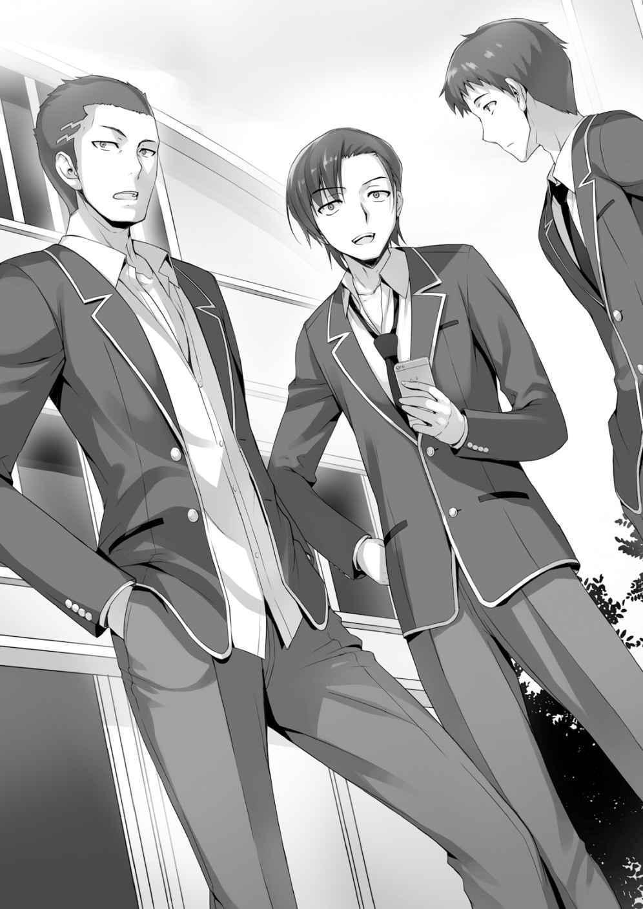
Así que era ese tipo de cosas. Tener una novia parece ser una parte esencial de la vida escolar ideal de Ike.
— Además, ese presidente del consejo estudiantil tiene un aura fuerte. Como si gobernara el lugar.
— ¿Verdad? Fue capaz de silenciar a todos.
— Sí, sí. Ayer hice un grupo de chat para los hombres. (NTI: La conversación aquí salta por todo el lugar, es bastante raro.)
Ike sacó su teléfono.
— ¿Quieres unirte? Es muy conveniente.
— Eh, ¿está bien?
— Por supuesto. después de todo, somos parte de la clase D.
No esperaba eso. Me alegra haber sido invitado a un chat en grupo.
¡Una oportunidad perfecta para hacer amigos finalmente llegó!
Cuando estaba sacando mi teléfono para intercambiar números, vi a Horikita desaparecer entre la multitud.
Me sentí preocupado por ella e involuntariamente dejé de moverme.
— ¿Qué sucede?
— No es nada. Intercambiemos números.
Recuperando mis sentidos, compartí mi información de contacto con los demás.
Horikita tiene la libertad de hacer e ir a donde quiera, y no tengo derecho a detenerla.
Sentí ganas de seguirla por un momento, pero decidí no hacerlo.
DAMAS Y CABALLEROS, GRACIAS POR LA ESPERA
— ¡Buenos días, Yamauchi!
— ¡Buenos días, Ike!
Mientras llegaba a la escuela, Ike llamó a Yamauchi con una sonrisa en la cara.
Es inusual que esos dos lleguen temprano a la escuela. Ha pasado una semana desde la ceremonia de entrada. Ike y Yamauchi siempre han llegado a la escuela justo antes de la campana.
— Wow ~ las clases son tan divertidas que no puedo dormir~.
— Sí, esta escuela es la mejor. ¡La clase de natación comenzará pronto! Digo nadar, ¡pero las chicas son la parte importante! ¡Y por las chicas me refiero a sus trajes de baño!
Ciertamente, natación se enseña a chicos y chicas. En otras palabras, Horikita, Kushida y todas las otras chicas llevan trajes de baño... y su piel se hace visible. Las chicas en el lugar se alejaron ante la emoción de Ike y Yamauchi.
Por otra parte, todavía estaba sentado en mi silla, solo. Tengo que ser proactivo en unirme a algún grupo de amigos. Afortunadamente, su conversación se detuvo, así que me levanté. Sin embargo…
— Oye, doctor. Ven aquí.
— Fufu, ¿lo has llamado?
Un chico rechoncho, que aparentemente tiene el apodo de "Doctor", caminó hacia ellos.
Creo que su nombre es Sotomura o algo así.
— Doctor, ¿puedes registrar a las chicas que llevan trajes de baño?
— Déjamelo a mí. Pretenderé estar enfermo y me saltaré la clase para observarlas.
— ¿Registrar? ¿Qué planeas hacer?
— Doctor va a clasificar los tamaños de las tetas de las chicas. Si hay una posibilidad, intentará tomar una fotografía.
— Oye, oye.
Sudou también se aparta del plan de Ike. Si las chicas lo descubren será un baño de sangre. Sin embargo, independientemente de lo que están hablando, siento envidia de su conversación. Debe ser bueno tener amigos. Quiero amigos también.
— Triste.
— ¿Estabas aquí también, Horikita?
— Hace algunos minutos. Entré mientras mirabas a esos chicos. No estarás pensando en tratar de ser su amigo, ¿verdad?
— Cállate. De todos modos es difícil para mí hacer amigos.
— Como yo lo veo, no pareces tener desorden de comunicación.
— Tengo muchas circunstancias. Haa... incluso ahora sólo puedo mantener una conversación contigo.
Incluso si puedo mandar mensajes de texto con Ike y los demás, la conversación sigue siendo difícil.
— Hey... Ya te dije que no me incluyas en tu lista de amigos, ¿verdad?
Ella me miró con un rostro disgustado mientras retrocedía unos pasos.
— Está bien. No importa lo bajo que caiga, nunca me volvería amigo tuyo.
— Ya veo. Me siento aliviada.
¿Cuánto odia tener amigos?
— Oye, Ayanokouji.
De repente, Ike me llamó. Cuando levanté la vista, vi su rostro sonriente haciéndome señas.
— ¿Qué? ¿Qué pasa?
Balbuceé un poco mientras me levantaba. Horikita ya puso su atención en otras cosas.
De todos modos, mi oportunidad de hacer un grupo de amigos ha llegado. Caminé hacia Ike.
— Para decirte la verdad, íbamos a apostar por el tamaño del pecho de las chicas.
— Incluso tenemos una tabla para los momios de las apuestas.
Doctor sacó una tableta y abrió una hoja de Excel.
Todos los nombres de las chicas de la clase estaban listados. Las apuestas también estaban adjuntas. No me interesan las apuestas, pero no dejaré que se escape esta oportunidad de hacer amigos.
— Hmm... ¿Debo unirme?
— ¡Sí! ¡Hazlo, hazlo!
En este momento, la favorita para los pechos más grandes es Hasebe. Sus probabilidades son 1 a 8.
Es un nombre que no he escuchado antes. No he memorizado los nombres de mis compañeros de clase. Eso es bastante malo.
— Esto es más detallado de lo que pensé que sería... ¿no están observando demasiado?
— Eso es porque somos hombres. ¡Sólo tenemos tetas y culos en nuestras mentes!
Incluso si eso es cierto, no tienen ninguna restricción en absoluto.
Cerca del fondo de las apuestas estaba el nombre de Horikita. Era alrededor del 30.
Bueno, en términos de tamaño del pecho, es obvio quién gana y quién pierde. Ella tiene una probabilidad muy baja de ganar.
— ¿Entonces qué vas a hacer? Son 1.000 puntos para unirse.
— Ya veo.
Sin saber los nombres y las caras de nadie, por no hablar del tamaño de su pecho, es difícil de unirse.
Después de todo, las únicas personas de las que escucho son Horikita y Kushida.
Kushida ciertamente tiene pechos grandes, pero es difícil decir que ella ganaría el primer lugar con solo esa información.
— Está bien, sólo estamos jugando. Hay mucha gente a la que elegir.
— ¡Yo lo haré!
— ¡Yo también, yo también!
— ¡He examinado el tamaño de tetas antes!
Mientras estaba pensando en ello, los chicos se reunieron y se emocionaron por los pechos. Todas las chicas de la clase miraron con expresiones disgustadas.
— Me uniré también. Mi apuesta está en Sakura.
Yamauchi interrumpió e hizo su apuesta. Sakura es una chica normal que usa gafas.
Realmente no hablo con nadie, así que realmente no lo sé.
Reflexionando sobre algo, Yamauchi tomó los hombros de Ike y Doctor y comenzó a susurrar algo.
— Sólo les estoy diciendo esto a ustedes, pero en realidad me confesé a Sakura.
— ¿¡Ah!? ¿Qué? ¿¡En serio!?
Ike fue el más sorprendido e impaciente. ¿Alguien lo derrotó en conseguir su meta?
— Sí, sí. Pero esto es sólo entre nosotros, ¿ok? Al principio pensé que era muy común. Y entonces vi su ropa. Esas cosas son enormes.
— Estúpido, ¿le estás preguntando porque es grande y no porque es linda?
— No saldría con nadie a menos que estuvieran al mismo nivel que Kushida y Hasebe. No me interesan las chicas comunes.
Yamauchi estaba siendo despiadado porque no había nadie más alrededor.
Me pregunto cuánto puedo confiar en sus palabras acerca de pedirle salir.
Al final, decidí poner mi apuesta en las chicas con mayores probabilidades.
1
— ¡Guau, es la piscina!
Después del almuerzo, la tan ansiada clase de la natación que Ike y los otros estaban esperando finalmente llegó.
Sin tratar de ocultar su lujuria, Ike se puso de pie emocionado. El grupo se dirigió a la piscina cubierta, los seguí sigilosamente desde la parte de atrás. O eso pensé.
— Vamos juntos, Ayanokouji.
— ¿Eh? Uh, seguro.
Dudé de la invitación de Ike, pero rápidamente los seguí a los vestuarios.
Sudou comenzó a cambiarse rápidamente su ropa. Su cuerpo bien formado por años de jugar baloncesto era visible. Especialmente si lo comparas con los demás de la clase, su cuerpo se ve fuerte.
Los estudiantes se envolvieron con toallas de baño, pero Sudou se quedó allí solo con su ropa interior. En ese estado semidesnudo, sacó un traje de baño de su bolsa.
Involuntariamente hablé ante esa vista.
— Sudou, ¿no te sientes avergonzado?
— No, trato de cambiarme lo más rápido posible. Si tratas de esconderte, te conviertes en el centro de atención.
Puedes decirlo otra vez. Alguien que intente cambiarse escondiéndose en un vestuario probablemente sería objeto de burla.
— Está bien, vamos.
Sudou dejó los vestuarios. También me terminé de cambiar.
— ¡Esta escuela es realmente la mejor! ¡Es incluso mejor que una ciudad piscina!
(NTI:¿supongo que es algo así como un club de piscina?) Ike, quien salió usando traje de baño, gritó después de ver la piscina de 50 metros.
El agua parecía cristalina, y no nos molestó porque era una piscina cubierta. Qué excelente instalación.
— ¿Dónde están las chicas? ¿No están aquí todavía?
Ike buscó a las chicas, olfateando el aire como un perro.
— Después de todo, se toman su tiempo al cambiarse.
— Oye, ¿qué pasaría si de repente entro al vestuario de las chicas?
— Te golpearían y presentarían cargos en tu contra.
— No arruines mis fantasías con una respuesta tan real.
Estaba temblando ante esa respuesta.
— Si miras demasiado sus trajes de baño, probablemente te odiarán.
— ¿Hay chicos que no miren fijamente? ¿Qué voy a hacer si tengo una erección?
Si eso sucediera, probablemente odiarían a Ike hasta que nos graduemos.
Espera ¿qué? Estoy hablando naturalmente con Ike y su grupo.
A pesar de que no quería y no podía unirme a su grupo, parece que fui arrastrado al grupo. Este debe ser el momento en que finalmente hago algunos amigos.
— Wow ~ Esta piscina ni siquiera se compara con la de mi secundaria.
Unos minutos después de que los chicos se terminaran de cambiar, se escuchó la voz de una chica.
— ¿Lo hicieron, finalmente llegaron?
Ike estaba en guardia, esperando. Si eres tan obvio, es natural que te odien.
Aun así, también estaba un poco curioso. Sobre Hasebe, Kushida, y más o menos, sobre Horikita.
Estaba particularmente interesado en Hasebe, no hay nada malo en echarle un vistazo.
Sin embargo, las expectativas de todos fueron traicionadas por un giro inesperado de eventos.
— ¡Hasebe no está aquí! ¿¡Qué, qué es esto!? ¡Doctor!
Doctor, que estaba nervioso, miró a su alrededor desde la plataforma de observación del segundo piso.
Ike y compañía también miraron alrededor, esperando que las chicas salieran en cualquier momento.
Incluso así. No estaban por ninguna parte.
Doctor miró a izquierda y derecha incrédulo. ¿Se sigue cambiando? O…
— ¡Doctor, d-detrás de ti!
— ¿¡Q-q-q-q-qué?!
Ike apuntó con su dedo mientras gritaba, habiendo claramente notado algo. Hasebe estaba en el piso de observación junto a Doctor.
Una por una, todas las chicas aparecieron en el segundo piso. Sakura también está allí.
— ¿Qué, qué es esto? ... ¿Qué es esta situación?
Ike enterró la cara en sus manos y se derrumbó en el sitio por el increíble giro de acontecimientos.
Hasebe parece una chica tímida. Además, es sensible a la curiosidad de los chicos.
Supongo que no le divirtieron las miradas furtivas de los chicos.
— ¡Pensé que vería grandes pechos~!
Contemplando el suicidio, Ike gritó agónicamente al alcance del oído de Hasebe.
Se extendieron murmullos entre las chicas. Como dije, esperaba que las chicas lo odiaran por ser tan descarado...
— Ike, este no es momento para estar triste. ¡Hay muchas otras chicas!
— S-sí. Cualquiera está bien. ¡No es momento para deprimirse!
— ¡Sí!
Yamauchi e Ike afirmaron su amistad y entrelazaron las manos.
— ¿Qué están haciendo? Parece divertido.
— ¿Ku-ku-kushida-chan?
Kushida interrumpió a los dos chicos.
Vistiendo el traje de baño de la escuela, el curvilíneo cuerpo de Kushida estaba a la vista.
En menos de un segundo, todos los chicos miraron a Kushida. Sus pechos eran copa D o E. No sé exactamente pero es alrededor de ese tamaño. También eran mucho más grandes de lo que pensaba. Su trasero también era mucho más grande de lo esperado. Sin embargo, inmediatamente desvíe mis ojos.
Ah, el clima es realmente bueno hoy... La paz mundial es genial.
Es un gran problema cuando cierta parte del cuerpo reacciona.
— ¿Por qué tienes una expresión extraña?
Horikita me miró a la cara sospechando.
—En este momento estoy teniendo una batalla interna.
Vi la figura de Horikita. No es una mala vista, yup, no es una mala vista.
Estaba mirando demasiado tiempo, así que traté de calmarme y ejercer autocontrol.
— ...
Por alguna razón, Horikita miró arriba y abajo mi cuerpo.
— Ayanokouji-kun, ¿haces ejercicio?
— ¿Eh? No, no particularmente. No estoy orgulloso de ello, pero formaba parte del club de irse a casa.
— Podrías decir eso, pero... claramente ejercitas los músculos del brazo y de la espalda.
— ¿Tal vez heredé buenos genes?
— No creo ese sea el caso.
— ¿Qué, tienes un fetiche con los músculos? ¿Es eso cierto? ¿Puedes apostar tu vida en eso?
— Si vas tan lejos para negarlo, te creeré...
Parece insatisfecha. Tiene un ojo bastante perspicaz.
— Horikita-san, ¿eres buena nadando?
A pesar de que Horikita tenía una extraña expresión en su cara, le respondió tranquilamente a Kushida.
— No particularmente, ni buena ni mala.
— En la secundaria, yo era muy mala en la natación. ¡Practiqué muy duro y ahora soy mucho mejor!
— Ya veo.
Horikita dio una respuesta desinteresada y se alejó de Kushida. No dejó que la conversación fuera más allá.
— Muy bien, todo el mundo reúnanse ー
Un maestro reunió a los estudiantes y comenzó la clase. Puede ser el Profesor de Educación Física, pero se ve como del tipo que atraería a las chicas.
— Ya veo, 26 personas. Esperaba más gente, pero supongo que con esto funciona—. Claramente había estudiantes que se saltaban la clase, pero a él no pareció importarle—. Es un poco repentino, pero examinaré sus habilidades después de que hayan terminado de calentar. Nadarán.
— Um, sensei, no sé nadar.
Un chico alzó la mano disculpándose.
— Como profesor, me aseguraré de que aprendas a nadar para el verano. No te preocupes.
— No hay necesidad de aprender a nadar. De todos modos no podemos ir a la playa.
— Eso es malo. No importa si eres malo en la natación ahora, me aseguraré de que todo el mundo aprenda. Aprender a nadar sin duda será útil. Lo garantizo.
¿Aprender a nadar será útil? Bueno, supongo que la natación será útil de una manera u otra.
Aun así, cuando el profesor lo dice así, me siento un poco incómodo.
Eh, probablemente siente la obligación de curar a los nadadores inútiles.
Todo el mundo comenzó los ejercicios de calentamiento. Ike se quedó mirando repetidamente a las chicas. Después, nos dieron instrucciones para comenzar el nado de 50 m. A los estudiantes que no sabían nadar se les permitió tocar el fondo de la piscina con los pies.
Desde el verano pasado no he estado en una piscina. Entré, acostumbrándome rápidamente a la piscina con temperatura regulada. Entonces comencé a nadar ligeramente.
Después de nadar los 50 metros, esperé a que los demás terminaran.
— Jejeje, una victoria completa. ¿Has visto? ¡Mi súper natación!
Nadando casualmente, Ike salió de la piscina con una mirada satisfecha. No, no eras tan diferente de los demás.
— De todos modos, parece que casi todo el mundo puede nadar.
— Lo siento, Sensei. Después de todo en la secundaria me llamaban Flying Fish.
— Ya veo. Entonces pueden empezar inmediatamente a competir unos contra otros.
50 m estilo libre, sepárense por género.
— ¿¡C-competir!? ¿En serio?
— Le daré un premio al primer lugar: 5 000 puntos. Por otro lado, el último lugar recibirá lecciones suplementarias, así que prepárense.
Los que eran buenos en la natación estaban animando, mientras que los peores nadadores no estaban emocionados en absoluto.
— Ya que no hay demasiadas chicas, las dividiré en dos grupos de 5 y le daré al mejor tiempo la victoria. Para los chicos, voy a tomar los mejores cinco tiempos y luego realizaremos una ronda final.
No esperaba que la escuela diera puntos como premio. Tal vez sea para castigar a los estudiantes que se saltaron de clase. Qué plan tan bien pensado.
Había 16 chicos y 10 chicas, excluyendo a los que no sabían nadar. Cuando las chicas comenzaron su carrera, los chicos se sentaron al margen y comenzaron a animar a...
no, a evaluar a las chicas.
— Kushida-chan Kushida-chan Kushida-chan Kushida-chan Kushida-chan. Jajajaja.
Parece que Kushida capturó completamente la mente de Ike.
— Eres aterrador, baja la voz.
— P-pero Kushida-chan es jodidamente linda. Sus pechos también son grandes.
Kushida obtuvo popularidad entre los chicos en un instante. ¿Hay alguien tan popular como ella?
Si sólo hablabas de cara, Horikita estaba definitivamente en la cima, pero su mala personalidad disminuyó su popularidad. Sin embargo, ella tiene un poco de popularidad, así que cuando estaba en la línea de salida, había algunos aplausos.
— Todo el mundo, ¡asegúrese de recordar esta vista! ¡El material erótico de hoy ha sido asegurado!
— ¡Sí!
De alguna manera, los chicos se estaban acercando unos a otros a través de la natación.
Hirata fue la única excepción, evitando mirar a las chicas.
El silbato sonó y las 5 chicas salieron. Horikita está en el carril 2. Tomando la punta al principio, mantuvo su ventaja. Confiadamente llegó en primer lugar.
— ¡Oh! ¡Horikita lo hizo!
Su tiempo fue de 28 segundos. Es bastante rápido. Sin ni siquiera respirar pesadamente, Horikita lentamente salió de la piscina.
Los chicos estaban mirando su robusto trasero cuando salió de la piscina. También miré involuntariamente a Horikita. Ya que es una chica, hay algo allí. Sí.
Luego vino la segunda carrera. Kushida estaba en el carril 4. Los chicos se agitaron y animaron con sonrisas en sus caras.
— ¡Woooooooo!
Son unos chicos agresivos. Algunos incluso trataron de mirar entre las piernas de las chicas.
Durante las presentaciones, Kushida declaró a toda la clase que quería llevarse bien con todo el mundo. Parece que su deseo se hizo realidad. Ella estaba constantemente charlando amigablemente con todos los chicos que la rodeaban. Kushida tiene una atmósfera que atrae a otras personas.
Comenzó la segunda carrera. Fue bastante unilateral. La chica conocida como Onodera ganó rotundamente la carrera. Su tiempo de 26 segundos fue claramente el mejor. Kushida tuvo un tiempo de 31 segundos, que fue bastante bueno, pero sólo consiguió el 4 º lugar.
Fui a hablar con Horikita que había salido de la piscina.
— Eso es malo. Segundo lugar. Esos miembros del club de natación parecen implacables.
— Realmente no. No me importa si pierdo o no. ¿Tienes confianza en ti mismo?
— Obviamente. Simplemente no tengo que ser el último.
— No es algo de lo que deberías estar orgulloso. Pensé que a los chicos les importa ganar y perder.
— Realmente no me gusta competir con otros. Después de todo, evito problemas.
Ya me rendí en tratar de conseguir el primer lugar. Mi único objetivo es evitar las lecciones suplementarias.
Me pusieron en el carril 2, mientras Sudou estaba en el primer carril. Igualar el ritmo de Sudou era imposible, así que ni siquiera intenté hacerlo. Tenía como objetivo permanecer en medio, así que no sería el último lugar. Teniendo esto en cuenta, me sumergí en la piscina.
Terminando el tramo de 50m con gran velocidad, Sudou levantó la vista del agua. Los chicos y chicas soltaron una voz de admiración.
— ¿Eso es posible, Sudou? Terminaste en 25 segundos.
Sólo conseguí 36 segundos. El 10mo lugar. Genial, no tengo que tomar lecciones suplementarias.
— Sudou, ¿no te unirás al club de natación? Si practicas, competirás bastante bien.
— Planeo jugar baloncesto. La natación es sólo por diversión.
Ni siquiera sudando un poco por esa pequeña cantidad de natación, Sudou calmadamente salió de la piscina.
— Ah, Sudou ciertamente tiene buenos reflejos.
Ike dio un codazo a Sudou, sintiéndose celoso.
— ¡Kya-!
Una chica lanzó un grito (de alegría).
Hirata estaba en la línea de salida.
Mientras el cuerpo de Sudou reunía la admiración de los chicos, el cuerpo de Hirata reunió la admiración de las chicas. Hirata es esbelto pero fornido. Puedes llamarle un macho delgado. Al oír los gritos de las chicas por Hirata, Ike hizo el gesto de escupir.
Sudou también hizo una cara disgustada y miró a Hirata.
— Si ganas, me aseguraré de destruirte. Te mostraré todo mi poder.
No estaba nadando solo por diversión...
Cuando el maestro sopló el silbato, Hirata saltó con gran forma. Mientras Hirata remaba con los brazos, las chicas del lado lo estaban animando. Su forma de nadar se ve inútilmente genial.
—Es sorprendentemente rápido.
Sudou calmadamente comentó. De todos modos, Hirata es un nadador bastante rápido.
Los otros 4 chicos estaban bastante lejos de Hirata. Su liderazgo incitó a las chicas a animarlo aún más.
Hirata llegó en primer lugar, superando mis expectativas. Los gritos resonaban en la gran piscina cubierta.
— Sensei, ¿Cuál fue el tiempo?— preguntó Ike con impaciencia.
— El tiempo de Hirata es... 26.13 segundos.
— De acuerdo, vamos a Sudou. ¡Si eres tú, puedes ganar! ¡Baja el martillo de la justicia!
— Déjamelo a mí. Lo derrotaré completamente y haré que su popularidad caiga al suelo.
Sudou se encendió con las palabras de Ike, pero una derrota de Hirata probablemente no causaría que su popularidad cayera.
— ¡Hirata-kun, fuiste genial! ¡No sólo eres bueno en el fútbol, sino también en la natación!
— ¿Es así? Gracias.
— Hey, ¿por qué estás mirando a Hirata-kun con amor en tus ojos?
— ¿Ah? ¡Tú eres la que se lo come con los ojos!
— Ki.
Y así. La popularidad de Hirata superó la frustración y es una cosa impactante de ver.
— Paren, chicas. No peleen por mí. Le pertenezco a todas. Quiero llevarme bien con todas. Sólo porque soy bueno en la natación no significa que deban pelear por mí.
No sé lo que estaba oyendo, pero Koenji confundió que esos aplausos eran para él.
Con una sonrisa refrescante, Koenji puso su pie en la línea de salida.
— Hey... ¿Por qué está Koenji llevando esos speedos?
— ¿Qué?
El uso de speedos estaba permitido por la escuela, pero nadie más los llevaba. Las chicas se apartaron de la zona de la entrepierna de Koenji.
Sin embargo, para la tercera carrera, Koenji fue el centro de atención. Su postura al principio parecía la de un atleta.
No sólo su postura, sino la figura de Koenji es incluso mejor que la de Sudou. Los chicos que estaban orgullosos de su físico, incluyendo Sudou, vieron a Koenji nadar mientras tragaban.
— Realmente no me importa ganar o perder, pero no me gusta perder.
Sudou murmuró para sí. Al oír el silbato, Koenji saltó a la piscina con gran forma.
— ¡Guau!
Sudou dejó salir una voz sorprendida ante la natación agresiva de Koenji. Hirata también miraba con asombro. Su velocidad es realmente impresionante. Por supuesto, Sudou también es rápido. Registrando el tiempo, el maestro volvió a mirar el cronómetro.
— El tiempo es... 23,22 segundos.
— Como de costumbre, mi musculatura abdominal, posterior y el psoas mayor están en forma. No está mal—. Después de salir de la piscina, Koenji sonrió y se cepilló el pelo.
Aun respirando uniformemente, ni siquiera parece que nadara.
— ¡Estoy entusiasmado!
Su espíritu de lucha ardía después de que su tiempo fuera batido. Para ser honesto, sólo Sudou tiene alguna oportunidad de ganar a Koenji. En lugar de las finales, esto se parece más a un uno a uno entre Sudou y Koenji.
— Debido a que Koenji-kun y Sudou-kun son rápidos, estoy esperando la final.
— Ah, sí.
Mientras esperaba la final, Kushida habló.
Debido a que una bishoujo en traje de baño estaba a mi lado, entré en estado de emergencia mientras mi corazón hacía doki.
— ¿Hmm? ¿Qué pasa? Tu rostro está un poco rojo... ¿Por casualidad te sientes mal?
— No, no es nada de eso.
— Aun así, Algo se siente extraño ¿Por qué tenemos clases de natación en abril?
— Eso es porque tenemos una gran piscina cubierta. Eso me recuerda, Kushida, eras muy rápida. Hasta el punto de que es imposible imaginarte siendo mala en la secundaria.
— Tú también, Ayanokouji... eras muy rápido.
— No, soy normal. Tampoco me gusta hacer mucho ejercicio.
— ¿Es así? Pero Ayanokouji-kun parece bastante sólido. Aunque seas delgado, pareces tan fornido como Sudou.
Kushida me miró con sorpresa. Me siento 10 veces más nervioso que cuando Horikita me miró.
— No hay razón especial, nací así. Es la verdad.
La conversación giraba en torno a mi salud física. Aunque estoy nervioso, me siento extrañamente satisfecho. Fue sólo por un corto tiempo esta vez, pero quiero hablar con Kushida solo.
— Wow, Koenji es rápido. Pensé que sería la victoria de Sudou, pero… ¡qué es esto, Ayanokouji!
Parece que Koenji venció Sudou por 5 metros. De repente, Ike, quien estaba comentando, se giró hacia mí con una cara de demonio.
— ¿Qué, por qué yo? No hice nada.
— ¡Eso no es!
Me susurró mientras pasaba el brazo sobre mis hombros.
— Estoy apuntando a Kushida-chan, así que no te interpongas en el camino.
No estoy tratando de meterme en el camino, pero hay cosas en el mundo que son posibles y cosas que no lo son. No creo que Kushida sea el tipo de chica que vaya por alguien como Ike.
Por supuesto, tampoco iría por mí.
AMIGA
— Kikyou-chan, ¿quieres pasar por un café en camino a casa?
— Umm, ¡vamos! Ah, pero espera un poco. Quiero preguntarle a una persona más.
Después de invitar a una de sus amigas, Kushida caminó hacia Horikita mientras ponía un libro en su mochila.
— Horikita-san. Voy al café con mi amiga, ¿quieres venir?
— No me interesa.
Con unas pocas palabras Horikita rápidamente rechazó la invitación de Kushida.
¿No puedes simplemente mentir diciendo que estás planeando ir de compras o que te encontrarás con alguien más? Horikita rechazó sin rodeos su invitación. Sin embargo, Kushida seguía sonriendo.
Esto no era nada nuevo. Desde la ceremonia de entrada, Kushida frecuentemente ha tratado de invitar a Horikita. Pensé que sería bueno para Horikita aceptar de vez en cuando, pero podría ser la perspectiva de un espectador. Sin embargo, nadie ha podido invitar a Horikita con éxito.
— Con que es así… Bueno, te invitaré en otra ocasión.
— Espera un momento, Kushida-san.
Horikita llamó a Kushida. Por casualidad, ¿aceptará la invitación de Kushida?
— Por favor no me invites de nuevo. Es una molestia—. Dijo con un tono frío.
Sin embargo, Kushida no se vio afectada y siguió sonriendo.
— Te invitaré en otra ocasión.
Kushida corrió hacia sus amigas, y salieron por el pasillo.
— Kikyou-chan, por favor deja de invitar a Horikita-san. La odio.
Cuando la puerta se cerraba, la voz de la chica se escuchó levemente.
Esas palabras debieron ser escuchadas por Horikita, que estaba cerca. Pero no hubo indicios de que lo hubiera hecho
— Tú no dices cosas innecesarias como esa, ¿verdad?
— No. Te entiendo lo suficientemente bien. Es inútil.
— Eso es bueno.
Horikita, que terminó de guardar sus cosas, salió del aula.
Me quedé un rato en el salón, pero me aburrí y me levanté de mi asiento. Hora de ir a casa.
— Ayanokouji-kun, ¿tienes tiempo?
Me encontré con Hirata, que todavía estaba en la escuela. En voz baja, le respondí a Hirata. Es extraño ver a Hirata hablar primero con alguien.
— Se trata de Horikita, me preguntaba si hay algún problema. Las chicas estaban hablando de ella antes. Después de todo siempre está sola.
Rechazando las invitaciones de Kushida, siempre estaba sola.
— ¿No puedes decirle que se lleve mejor con las demás?
— ¿No es cosa de ellas? Además, no está molestando a nadie.
— Por supuesto que lo entiendo. Sin embargo, también hay otras personas que están preocupadas. No quiero que surjan problemas de intimidación en la clase.
¿Acoso? Él me habló de forma inesperada, pero con esas palabras, suena como un mal presagio. ¿Me estás advirtiendo? Hirata me miraba con intenciones puras.
— Creo que es mejor que se lo digas directamente a ella, en lugar de decírselo a través de mí.
— Sí, supongo. Perdón por decir algo extraño.
Horikita está sola todos los días. Si eso continúa, en un mes, ella probablemente se convertirá en el tumor de la clase.
Sin embargo, ya que este es problema personal de Horikita, no es algo con lo que deba involucrarme.
1
Después de salir de la escuela, me dirigí a los dormitorios. Kushida, que se fue antes con una amiga, estaba esperando a alguien mientras estaba apoyada contra la pared.
Al notarme, me miró con una sonrisa en la cara.
— Eso es bueno. Estaba esperando a Ayanokouji-kun. Tengo algo de qué hablar.
¿Tienes tiempo?
— Sí, no tengo nada más que hacer.
Por casualidad, ¿es una confesión? No, hay un 1 % de probabilidad de que eso suceda.
— Te preguntaré francamente. Ayanokouji-kun, ¿has visto a Horikita-san sonreír alguna vez?
— ¿Eh? No... no recuerdo.
Parece que Kushida se acercó a mí para hablar de Horikita. Además, ahora que recuerdo, nunca he visto sonreír a Horikita. Agarrando mi mano, se acercó. ¿Es el olor de las flores? Un olor agradable entró por mi nariz.
— Sabes... Quiero hacerme amiga de Horikita-san.
— Tus sentimientos le están llegando. Al principio mucha gente trataba de hablar con ella, pero ahora eres la única que queda.
— Ayanokouji-kun, pareces conocer a Horikita-san bastante bien.
— Por supuesto que conocerías a alguien que se sienta a tu lado todos los días.
Chicas siendo chicas, estaban realmente impacientes hacer grupos desde del primer día de escuela. Son más conscientes de las facciones y grupos que los hombres, y alrededor de 4 personas tenían todo el "poder" de entre 20. Las chicas dicen que sólo están conociendo a mucha gente.
Sin embargo, la única excepción a esta regla es Kushida. Todos los grupos tienen un montón de gente, pero sólo Kushida está empezando a ser increíblemente popular. Sin renunciar nunca, siguió tratando de ser amiga de Horikita. No es algo que un estudiante común pueda hacer. Probablemente por eso es popular.
Además, es linda.
Después de todo, la lindura se correlaciona con la popularidad.
— ¿No fuiste rechazada por Horikita? No creo que lo que le digas la haga entender.
Sé que ella no es del tipo de andarse con rodeos. Si hablas con ella descuidadamente, probablemente te dirá un montón de insultos. Honestamente, no quiero ver a Kushida lastimada.
— ¿No me… ayudarías?
— Bueno…
No respondí inmediatamente. Por lo general, si una chica linda me pidiera ayuda, estaría de acuerdo sin dudarlo. Sin embargo, como me gusta evitar problemas, no podía decir que sí inmediatamente. Eso es porque no quiero ver a Horikita ofendiendo verbalmente a Kushida. Me rehusaré gentilmente.
— Entiendo tus sentimientos, pero...
— ¿No?
Linda + solicitud + ojos de cachorro = fatal.
— Bueno, no se puede evitar. Sólo esta vez, ¿de acuerdo?
— ¿¡De Verdad!? ¡Ayanokouji-kun, gracias!
Después de que accedí a ayudarla, Kushida tenía una sonrisa encantada en su rostro.
Linda. Ya que dije que la ayudaría, no puedo ser precipitado y hacer algo loco.
— Entonces, ¿qué vamos a hacer exactamente? Incluso si dices que quieres ser su amiga, no es así de simple.
Para alguien como yo que no tiene amigos, es un problema difícil al que no puedo responder fácilmente.
— Hmm... El primer paso es hacer sonreír a Horikita-san.
— Hacerla sonreír, ¿eh?
Hacerla sonreír requiere el ambiente y la atmósfera adecuados para que tengamos éxito.
Ese tipo de relación podría llamarse "amistad".
Afortunadamente, Kushida parece saber cómo hacer sonreír a la gente.
— ¿Tienes alguna idea de cómo hacerla sonreír?
— Um... creí que podíamos pensar juntos.
Con un "Teehee", golpeó ligeramente su cabeza.
Si hubiera sido una mujer fea, la habría golpeado de inmediato, pero estaba bien porque era Kushida.
— Sonreír…
Ya que Kushida me pidió ayuda, mi objetivo ahora es hacer sonreír a Horikita. ¿Esa meta es posible? Muy cuestionable.
— De todos modos, después de la escuela, trataré de invitar a Horikita. Cuando regrese a los dormitorios, probablemente no tenga brazos ni piernas. ¿Hay algún lugar al que deba invitarla?
— Hmm, ¿qué tal Pallet? Voy a Pallet con frecuencia, así que puede que nos haya escuchado hablar de ello.
Pallet es probablemente el primer o segundo café más popular en el campus.
Ciertamente, a menudo escucho hablar de Pallet cuando Kushida y sus amigas van después de la escuela.
Si yo he oído hablar de ello a menudo, Horikita inconscientemente también habría sabido sobre ello.
— ¿Crees que funcionaría si ustedes dos entran en Pallet, ordenan, y luego
“inesperadamente” nos encontramos?
— No... Creo que es demasiado simple. ¿Y si tus amigas también ayudan?
Al momento que Horikita vea a Kushida, probablemente regresará a casa inmediatamente. Si es posible, sería mejor crear una situación en la que sea difícil levantarse. Le dije a Kushida la idea que se me acababa de ocurrir.
— Oh~ ¡Ciertamente eso suena como si pudiera funcionar! ¡Ayanokouji-kun, eres inteligente!
Kushida me escuchó con ojos brillantes mientras asintió con la cabeza y dijo "Sí, sí".
— No creo que eso tenga nada que ver con mi inteligencia. De todos modos, ese es el plan.
— Ok, espero mucho, ¡Ayanokouji-kun!
No, estoy preocupado por tus expectativas.
— Si Kushida invita a Horikita, probablemente te rechazaría, así que ¿debería invitarla yo?
— Bien. Después de todo, creo que Horikita-san confía en ti.
— ¿Por qué piensas eso?
— Hmm, bueno, ¿parece que ella lo hace? Por lo menos, ella confía en ti más que en cualquier otro de la clase.
Eso no significa que yo sea la persona más apropiada para la tarea.
— Eso es porque la conocí por casualidad.
La conocí en el autobús por casualidad y me senté al lado de ella por casualidad.
Si una de esas cosas no hubiera ocurrido, probablemente no hablaría con Horikita en absoluto.
— ¿No conoces a las personas por casualidad? Luego se convierten en tus amigos, tu mejor amigo... y a veces tu pareja y tu familia.
— Ya veo.
Supongo que esa es una forma de verlo. Hablar con Kushida también fue el resultado de una coincidencia.
En otras palabras, Kushida y yo podríamos estar en una relación en poco tiempo.
2
Fue al terminar las clases. Todos los estudiantes se marcharon a su divertida vida después de la escuela, mientras hablaban de adónde ir. Miré a Kushida y le señalé que estaba comenzando el plan.
Horikita, el objetivo, había comenzado su rutina habitual de prepararse para ir a casa.
— Oye, Horikita. ¿Estás libre?
— No tengo tiempo de sobra. Tengo que volver a los dormitorios y prepararme para mañana.
¿Prepárate para mañana? Estoy bastante seguro de que sólo tiene que prepararse para la escuela.
— Quiero que vayas a un lugar conmigo.
— ¿Qué estás tratando de hacer?
— ¿Crees que te estoy invitando con un objetivo particular en mente?
— Si me invitaste repentinamente, es natural dudar de ti. Sin embargo, si hay algo concreto de lo necesitas hablar, no me importaría escuchar.
Por supuesto, no hay tal cosa.
— ¿Sabes que hay un café en el campus? Hay demasiadas chicas, así que no tengo el coraje de entrar yo solo. Se siente como si los chicos están siendo excluidos.
— Ciertamente la proporción de chicas es alta, pero ¿no pueden entrar los chicos también?
— Sí, pero ningún chico entra solo. Siempre van con otras chicas. Sólo ese tipo de chicos va al café.
Horikita trató de recordar información sobre Pallet mientras reflexionaba sobre ella.
— Eso suena correcto. Es inusual que Ayanokouji-kun tenga una opinión razonable.
— Pero aun así estoy interesado en el lugar. Así que pensé en invitarte a venir conmigo.
— Naturalmente, ya que... no tienes a nadie más a quien invitar, ¿verdad?
— Esa es una manera ruda de decirlo, pero sí.
— ¿Y si me niego?
— Entonces eso es todo. No tengo más remedio que rendirme. Después de todo no puedo forzarte a renunciar a tu tiempo privado.
— Entendido. Lo que dijiste parece ser cierto. Sin embargo, no puedo pasar demasiado tiempo. ¿Está bien?
— Sí. No estaré allí mucho tiempo.
Añadí "probablemente" en mi mente. Si sabía que Kushida estaba involucrada, seguramente me reprocharía.
Debido a que puedo hablar con Kushida y fui capaz de invitar a Horikita, comencé a pensar que tal vez podría haberme convertido en amigo de Horikita por mis propios medios.
Después de todo, a los clubs o al café, Horikita fue conmigo, a pesar de quejarse todo el tiempo. Es un milagro considerando que me resulta difícil hacer amigos.
Después de salir juntos, finalmente llegamos al café, Pallet, en el primer piso del edificio de la escuela.
Las chicas comenzaron a reunirse una por una para divertirse después de la escuela.
— Parece bastante lleno.
— ¿También es tu primera vez aquí después de la escuela? Oh, cierto. Siempre estás sola.
— ¿Era eso sarcasmo? Infantil.
Era sólo una broma, pero como de costumbre, Horikita me insultó verbalmente.
Después de pedir, nos dieron nuestras bebidas. Pedí panqueques.
— ¿Te gusta la comida dulce?
— Sólo quería comer panqueques.
No me gustaban o disgustaban especialmente, pero acabo de inventar una razón plausible.
— No hay asientos.
— Supongo que tendremos que esperar un poco. Ah, no importa, hay asientos por allí.
Después de notar que dos chicas se levantaron de sus asientos, rápidamente aseguré la mesa. Dejé que Horikita pasara al otro lado. Colocando mi mochila en el suelo, me senté y miré a mi alrededor.
— Oye, me acabo de dar cuenta. Si alguien nos mira de lejos, pareceríamos una pareja... no.
El rostro de Horikita era inexpresivo y gélido como siempre. Sintiéndome nervioso por los alrededores, mi estómago empezó a doler.
Escuché a dos chicas a nuestro lado decir "Vamos" mientras sostenían bebidas en sus manos.
E inmediatamente después, otra persona se sentó. Era Kushida.
— Ah, Horikita-san. ¡Qué casualidad! ¡Ayanokouji-kun también!
— Sí.
Kushida nos saludó, pretendiendo que nos encontramos por casualidad. Horikita miró a Kushida con los ojos entrecerrados, luego se volvió hacia mí. Por supuesto, esto era algo que habíamos planeado antes. Reservamos dos mesas con cuatro de las amigas de Kushida, y luego, cuando Horikita y yo llegamos a Pallet, les indiqué que hicieran lugar para nosotros dos. Después de un rato, las otras dos se irían para que Kushida pudiera llegar.
Como resultado, nuestra reunión parecía una coincidencia.
— ¿Ayanokouji-kun y Horikita-san vinieron juntos?
— Por pura casualidad, sí. ¿Viniste sola?
— Sí, hoy yo-
— Me voy a casa.
— O-oye, acabamos de llegar.
— No me necesitas ahora que Kushida-san está aquí, ¿verdad?
— No, no eres un problema. Después de todo Kushida y yo sólo somos compañeros de clase.
— Tú y yo también somos sólo “compañeros de clase”. Además—… Ella nos miró a mí y a Kushida fríamente—. No me gusta esto. ¿Qué estás planeando?
Parece que vio a través de nuestro plan.
— N-no, ¡es sólo una coincidencia!
Si era posible, no quería que esto sucediera.
Lo correcto habría sido hacer un pequeño encogimiento de hombros y decir, "¿Qué quieres decir?"
— Cuando estábamos sentados, las dos chicas antes de nosotros eran de la clase D. Y luego, las dos que estaban a nuestro lado también eran de la clase D. ¿Es sólo una coincidencia?
— Wow, notaste eso... yo no me di cuenta en absoluto.
— Además, vinimos directamente aquí tan pronto acabó la escuela. No importa lo rápido que las otras chicas llegaran aquí, estuvieron quizás 1, 2 minutos como máximo. Es demasiado pronto para volver a casa. ¿Me equivoco?
Horikita es una persona mucho más observadora de lo que pensaba.
No sólo recordaba los rostros de sus compañeras de clase, sino que comprendía lo que sucedía casi al instante.
— Um...
Sintiéndose perpleja, Kushida me miró en busca de ayuda.
Horikita notó que me miraba. La actuación había terminado.
— Lo siento, Horikita. Arreglamos esto.
— Ya me lo imaginaba. La situación me hizo pensar que algo era sospechoso.
— Horikita-san. ¡Por favor, se mi amiga!
Kushida le preguntó directamente, ya no intentaba ocultar nada.
— Ya lo he dicho muchas veces, déjame en paz. No tengo intención de convertirme en una molestia para la clase. ¿Eso no está permitido?
— Pasar el tiempo siempre sola conducirá a una vida escolar solitaria y triste.
Quiero llevarme bien con todos en la clase.
— No estoy tratando de negar tus deseos. Sin embargo, es malo involucrar a otras personas contra su voluntad. No me siento triste por estar sola.
— P-pero…
— También, por el bien de la discusión, ¿crees que sería feliz si me obligas a llevarme bien contigo? ¿Crees que amistad o confianza resultarán de una relación forzada?
Las palabras de Horikita no están equivocadas. No es que no quiera hacer amigos, es que siente que son innecesarios. Kushida piensa de una forma, Horikita piensa de otra manera.
— Esta vez, fue mi culpa por no decírtelo claramente. Así que no te culparé. Sin embargo, si lo intentas de nuevo, no te perdonaré la próxima vez.
Agarró su café latte intacto y se levantó.
— Quiero llevarme bien con Horikita-san por cualquier medio. Cuando te vi por primera vez, no sentí que fuera nuestro primer encuentro, creo que Horikita-san se sintió de la misma manera.
— Esto es una pérdida de tiempo. Me estás haciendo sentir incómoda.
Horikita la interrumpió mientras levantaba la voz. Kushida involuntariamente tragó saliva.
Aunque estuve de acuerdo en ayudar a Kushida, no tenía intención de interferir. Sin embargo—
— No es que no pueda entender la manera de pensar de Horikita. También he cuestionado si los amigos son necesarios en varias ocasiones.
— ¿Estás diciendo eso? Desde el primer día de clases has querido amigos.
— No estoy negando eso. Sin embargo, soy el mismo tipo de persona que tú. Al menos hasta que me gradué de la secundaria. Nunca había podido hacer amigos hasta que entré en esta escuela. Nunca había sabido la dirección de contacto de nadie, ni jugado con nadie después de la escuela. Estaba completamente solo—. Kushida se sorprendió cuando dije esas palabras—.
Creo que por eso empecé a hablar mucho contigo.
— Eso es nuevo. Sin embargo, incluso si tenemos algo en común, todo lo que viene después es diferente. No hiciste amigos aunque quisieras amigos. No hice amigos porque son innecesarios. Decir que somos similares es incorrecto. ¿Me equivoco?
— Tal vez. Pero decirle a Kushida que es incómoda es ir demasiado lejos. ¿Estás realmente bien con eso? Decir que no te llevas bien con nadie ahora significa que estarás sola los próximos 3 años. Es mucha soledad para el futuro.
— Estoy bien porque será mi noveno año consecutivo. Ah, si incluyes el jardín de niños es aún más.
¿Acaso dejó caer algo intenso? ¿Se queda sola todo el tiempo porque ha estado sola tanto como puede recordar?
— ¿Me puedo ir a casa ahora?
Horikita soltó un profundo suspiro y miró directamente a los ojos de Kushida.
— Kushida-san, si no te convences, no diré nada. Prométeme. Ya que no eres estúpida, sabes lo que estoy diciendo, ¿verdad?
Horikita salió de la tienda con un "Pues bien". Ella nos dejó a Kushida y a mí en el atestado café.
— Eso fue un fracaso. Traté de ayudar pero no sirvió. Se acostumbró demasiado a estar sola.
Kushida, que no podía decir nada, se sentó de golpe. Sin embargo, ella se recuperó inmediatamente con su habitual rostro sonriente.
— No, gracias Ayanokouji-kun. No pude ser su amiga, pero... aprendí algo importante. Estoy satisfecha con eso. Lo siento, Horikita-san podría odiarte porque me ayudaste.
— No te preocupes. También quería que Horikita supiera los beneficios de tener amigos.
Debido a que teníamos cuatro asientos para nosotros dos, me trasladé a la mesa de Kushida.
— Aun así, me sorprendió. Cuando dijiste que no tenías amigos. ¿Es eso cierto?
No parecía así en absoluto. ¿Por qué estabas solo?
— ¿Hmm? Oh, es verdad. Sudou, Ike y compañía son los primeros amigos que hice. No sé si fue mi culpa o simplemente el ambiente en el que crecí.
— ¿Estás feliz porque hiciste amigos? ¿Es divertido?
— Sí. Es molesto a veces, pero también es muy divertido.
Los ojos de Kushida brillaban mientras ella asentía con la cabeza y decía “Sí, sí”
— Horikita tiene un concepto y propósito para su manera de pensar. No hay nada que podamos hacer al respecto.
— ¿Es así? ¿Es imposible para ella hacer amigos?
— ¿Por qué estás tan desesperada? ¿No tienes ya muchos amigos? No hay razón para obsesionarse con Horikita.
A pesar de que no era capaz de llevarse bien con todos en la clase, no significa que deba tratar desesperadamente de convertirse en amiga de Horikita.
— Yo quiero ser amiga de todo el mundo. No sólo la clase D, sino también con todas las demás clases. Sin embargo, si no puedo llevarme bien con una chica de la clase, entonces ya he fallado.
— Piensa en Horikita como un ser especial. Y luego espera a que ocurra una verdadera coincidencia.
No algo forzado, sino una verdadera coincidencia.
Cuando eso sucede, hacerse amigos puede convertirse en una posibilidad.
EL FIN DE MIS DÍAS ORDINARIOS
— ¡Jajajaja! ¡Eres demasiado gracioso, estúpido!
Durante el segundo periodo, clase de matemáticas, Ike conversaba en voz alta con Yamauchi. Habían pasado tres semanas desde la ceremonia de entrada; en ese tiempo, esos dos, junto con Sudou, recibieron el nombre de "trío de idiotas".
— Oye, oye, ¿quieres ir a cantar al karaoke?
— Sí, vamos.
Cerca, un grupo de chicas hacían planes para después de la escuela.
— A pesar de que estuvieron nerviosos por un tiempo, parece que todos se han abierto rápidamente.
— Ayanokouji-kun, ¿no has hecho más amigos?
Horikita me preguntó mientras tomaba notas de la pizarra.
— Eh, un poco.
A pesar de que estaba ansioso al principio tuve la oportunidad de conocer a Sudou en el incidente de la tienda de conveniencia y a Ike y Yamauchi en el incidente de la piscina. También, de vez en cuando comemos juntos.
A pesar de estar lejos de tener amigos "cercanos", estaba feliz de tener algunos amigos.
Sin embargo, las relaciones humanas son cosas misteriosas, así que no está claro cuándo se hicieron mis amigos.
— Buenas.
A mitad de la clase, Sudou cruzó la puerta del salón con un estruendo.
Ignorando el hecho de que era mitad de la clase, se dejó caer en el asiento con un gran bostezo.
— Oye, Sudou. Ah, ¿quieres almorzar más tarde?— dijo Ike en voz alta desde el otro lado del salón.
El profesor continuó la lección sin decirle nada a Sudou. En una clase normal, un pedazo de tiza habría salido volando, pero este profesor parece ser completamente
tolerante con su comportamiento. Al principio, la clase era mucho más tranquila y reservada, pero ahora todo el mundo está demasiado relajado.
Por supuesto, hay algunas personas como Horikita que estudian diligentemente y prestan atención.
Mi bolsillo vibró, indicando que recibí un mensaje de texto. Es el chat de grupo. Parece que decidieron ir al comedor durante el almuerzo.
— Hey, Horikita. ¿Quieres que comamos el almuerzo juntos?
— No, gracias. De todos modos, ustedes son muy toscos.
— No puedo negarlo.
Después de todo, cuando los chicos están solos, de todo lo que hablan son chicas o chistes sucios. Quién es linda, quién está saliendo con quién, y todas esas cosas.
Probablemente sea malo añadir chicas a este tipo de conversación.
— Wow... ¿ya lo ha hecho con ella? Asombroso.
Por la conversación, suena como que Hirata está saliendo con Karuizawa. Mirándola, era obvio que estaba enviando miradas cariñosas a Hirata.
Ella es definitivamente linda, pero tiene un aire en ella con el cual es difícil acercarse, es indicativo de que no es una principiante en el amor. En otras palabras, ella es el tipo de chica "gal".
En la secundaria, probablemente salió con un chico apuesto al igual que HIrata. Es una suposición, pero estoy seguro de que no estoy muy lejos. ¡Vaya! Accidentalmente hablé mal de ella.
Me disculpé con ella en mi cabeza.
— Odio esa expresión en tu cara.
Horikita me miró fríamente. Parece que vio a través de mí.
¿Qué tienes que hacer para convertirte en pareja justo después de la ceremonia de entrada? Aún me cuesta trabajo hacer amigos.
Si fuera con Horikita y le dijera: “¿Saldrías conmigo?” Me daría un puñetazo inmediatamente.
Además, si tuviera una novia, me gustaría alguien más refinada y gentil.
1
Tercer período, historia. La clase de Chabashira-sensei. Entró en cuanto sonó la campana señalando el comienzo de la clase. Sin embargo, la actitud de los estudiantes no cambió.
— Todo el mundo, callados, la clase de hoy será más seria.
— ¿Qué quieres decir ~ Sae-chan-sensei~?
La clase ya le había dado un apodo.
— Es el fin de mes. Tendremos una prueba corta. Pasa estos a la parte de atrás.
Entregó los papeles a la primera fila. Eventualmente, la prueba llegó a mi escritorio. El examen tenía varias preguntas de cada uno de los 5 temas principales.
— Eh, ~ no he oído nada ~. No quiero tomarlo ~
— Cálmese. Esta prueba es sólo para referencia futura. No se reflejará en su boleta de calificaciones. No hay riesgo, así que estén tranquilos. Sin embargo, hacer trampa, naturalmente está prohibido.
Había una frase un poco extraña incluida en sus palabras. Normalmente, las notas sólo se reflejan en la boleta de calificaciones. Sin embargo, las palabras de Chabashira-sensei son un poco diferentes. Parece que ella está insinuando que estas calificaciones no serán reportadas en nuestra boleta de calificaciones, pero serán reportadas de alguna otra manera. Bueno... tal vez estoy preocupándome demasiado.
Dado que no se incluirá en la boleta, no hay nada de que ser cauteloso.
Una vez que la prueba comenzó, miré las preguntas. 20 preguntas, 4 por sección, y 5
puntos por pregunta para un total de 100 puntos. Sin embargo, las preguntas eran extraordinariamente fáciles, por lo que se sentía anticlimático
.
Las preguntas en esta prueba son alrededor de 2 niveles por debajo de las preguntas del examen de admisión. Todo aquí es demasiado simple.
Eso pensé, pero 3 preguntas en la prueba eran más difíciles que las otras. El último problema matemático probablemente no puede resolverse sin usar fórmulas complicadas.
— No... ¿Por qué estos problemas son tan difíciles?
Claramente estos no son para estudiantes de primer año de preparatoria. Las tres últimas preguntas son de naturaleza diferente; no sería sorprendente que hubieran sido puestas por error.
¿Por qué están midiendo nuestra capacidad con esta prueba?
Bueno, solo resolveré estos problemas de la misma manera que lo hice en el examen de ingreso.
Chabashira-sensei estaba monitoreando a los estudiantes mientras caminaba alrededor del aula. Eché un vistazo a Horikita, observándola llenar las respuestas a las preguntas de manera segura. Parece que obtendrá una calificación perfecta.
Seguí mirando la prueba hasta que sonó la campana final.
2
— Hey, si me dices honestamente, te perdonaré, ¿de acuerdo?
— ¿Qué quieres decir con "honestamente"?
Después de terminar el almuerzo, estaba charlando con Sudou y los otros en frente de la máquina expendedora.
De repente, Ike se acercó.
— Somos amigos, ¿verdad? ¿Amigos que se quedarán juntos durante los próximos 3 años?
— Uh... sí. Es cierto, pero…
— Entonces... nos dirás cuando tengas novia, ¿verdad?
— ¿Hah? ¿Novia? Bueno, si eso sucede alguna vez.
Ike puso su brazo en mi hombro.
— Estás saliendo con Horikita, ¿no? No te perdonaremos si te nos adelantas.
— ¿Qué? — Noté que Sudou y Yamauchi me miraban con recelo—. Estúpido, no estamos saliendo. De ningún modo. No, en serio.
— Entonces, ¿de qué estaban hablando furtivamente durante la clase? Era algo de lo que no se nos permite escuchar, ¿no? Se trataba de citas, o de citas, o de una promesa de ir a una cita, ¿no? ¡Aahh, estoy celoso!
— No, no. Horikita no es ese tipo de chica.
— No lo sé. Nunca hemos tenido la oportunidad de hablar. Si no fuera por Kushida, podríamos ni siquiera saber su nombre. No tiene presencia y no habla para nada.
¿Es así? Bueno, yo tampoco la he visto hablar con nadie más que conmigo o con Kushida.
— Ni siquiera saber su nombre, eso es cruel.
— Entonces, ¿Sabes todos los nombres de tus compañeros de clase?
Traté de recordar, pero sólo podía recordar la mitad de los nombres de mis compañeros de clase. Punto a favor.
— Su cara es linda, ¿verdad? Así que le estábamos prestando atención.
Asentían con la cabeza.
— Sin embargo, su personalidad es difícil. No me gusta ese tipo de chica—. Dijo Sudou después de tomar su café.
— Sí, su personalidad es ¿cómo debo decirlo… áspera y enérgica? Me gustaría salir con alguien con quien pueda mantener una buena conversación. Por supuesto, alguien linda. Alguien como Kushida-chan.
Por supuesto, la favorita de Ike sigue siendo Kushida.
— Ah ~ Salir con Kushida-chan ¡entonces hacer cosas ecchi!— Gritó Yamauchi.
— Estúpido, ¿crees que puedes salir con Kushida-chan? ¡Las fantasías también están prohibidas!
— También sueñas con salir con ella, ¿no Ike? En mis sueños ¡ya estoy durmiendo con Kushida-chan!
— ¡Qué! ¡En mis sueños está haciendo una atractiva pose en cosplay!
Los dos pelearon sobre sus sueños. Hey, hey. Pueden fantasear todo lo que quieran como estudiantes de preparatoria, pero son irrespetuosos con Kushida.
— Sudou, ¿quién te gusta? ¿Hay rumores de chicas lindas en el club de baloncesto?
— ¿Huh? Oh, no hay nadie. De todos modos, no hay mucho espacio para las chicas en el club.
— ¿De Verdad? Será mejor que no ocultes que estás saliendo con alguien,
¡absolutamente no!
— Sí, sí.
Solo asintió con la cabeza ante sus asquerosas palabras. Hablando de novias, me acordé de Hirata.
— Oye, ¿no está Hirata saliendo con Karuizawa?
— El otro día Hondou vio a los dos tomados de la mano.
— Maldición, esos dos realmente están saliendo. Caminando con sus hombros tocándose.
— Así que lo estaban, eh. Me pregunto si ya hicieron cosas ecchi.
— Por supuesto que sí. ¡Ah, estoy tan celoso!
Se siente increíble que los estudiantes de primer año de preparatoria ya estén siendo ecchis. Pero supongo que es verdad.
Me siento avergonzado por pensar de la misma manera que estos chicos.
— Hey, es mejor que escuches lo que voy a decir, soy el más experimentado en ese tipo de cosas.
Yamauchi se tumbó en el suelo y empezó a hablar.
— Mejor escuchémoslo de Hirata.
— ¿Crees que Hirata nos dirá sinceramente cuándo se lo pidamos? ¿Cómo están sus pechos, es virgen, te gustó eso? ¿De verdad piensas que él responderá?
¿Acerca de qué tipo de experiencias quería escuchar?
Fui a la máquina expendedora cercana para comprar una bebida. Yamauchi gritó una petición.
— Tráeme un chocolate.
— No me presiones con eso. Cómpralo tú mismo.
— No, casi he usado todos mis puntos. Me quedan unos 2.000.
— ¿Cómo demonios usaste más de 90,000 puntos en 3 semanas?
— Eso es porque compré lo que quería. Aquí, mira. ¿No es genial?
Yamauchi sacó un dispositivo de juegos portátil.
— Fui a comprar esto con Ike. Es un PS Viva, un PS Viva. Es asombroso que la escuela venda estas cosas también. (NTI: PS Vita)
— ¿Cuánto cuestan?
— Aproximadamente 20 000 puntos. Con todas las opciones incluidas, alrededor de 25 000.
Oye, no gastes tus puntos así de rápido.
— Normalmente no juego, pero como ahora vivimos en los dormitorios, puedo jugar con otros. Además, conoces a ese tipo Miyamoto de nuestra clase, ¿verdad? Es muy bueno en los juegos.
Miyamoto es el chico ligeramente gordito de nuestra clase. Nunca he hablado con él, pero parece un chico que habla de juegos y anime todo el tiempo.
— También debes comprar uno y unirte. Sudou dijo que comprará uno tan pronto como reciba la asignación del próximo mes.
Empezaron confabular contra mí. Yamauchi me entregó su consola para probarla. Es mucho más ligera de lo que pensé. En el monitor, había un soldado que llevaba una katana grande mientras acariciaba un cerdo. Qué mundo tan extraño.
— Eh, para ser honesto, no estoy realmente interesado. ¿Es esto...algún tipo de juego de pelea?
— Por casualidad, ¿nunca has oído hablar de Hunter Watch? ¡Ha vendido 4,8
millones de copias en todo el mundo! Desde que era joven, siempre he tenido un buen sentido en los juegos, así que he sido fichado por profesionales en el extranjero. Bueno, aunque he rechazado esas ofertas.
No estoy seguro de si 4.8 millones es algo increíble o no. Hay alrededor de 7 mil millones de personas en el mundo.
En otras palabras, las personas que han comprado este juego representan menos del 0.1% de la población.
— También, ¿por qué esa delicada chica lleva todo ese equipo pesado? ¿Está esa cosa hecha de plástico? Si estuviera hecha de hierro, incluso Sudou tendría problemas con ella.
— Ayanokouji, pareces querer un aspecto realista en tus juegos.
— ¿Eres extranjero? Entonces, ¿estás bien con la regeneración automática de vida?
¿Te gustan los juegos occidentales en los que disparas a alguien, te escondes en algún lugar y al instante recuperas tu vida? Esos juegos son incluso menos realistas.
No podía entender nada de lo que decía Yamauchi.
— La gente dice que ver es creer, ¿no? Cómpralo y juega con nosotros. ¿Okay?
¿Okay? Cuando comiences a jugar, juntaremos materiales contigo. Recoger la miel también es duro, ¿sabes? Por lo tanto, puedes comprarme un chocolate con antelación~.
— Qué fastidio.
Realmente no necesito la miel o lo que sea, pero acabé comprando el chocolate para apaciguarlo.
— ¡Para esto es la amistad! ¡Gracias~!
No deseaba este tipo de amistad. Lanzándole la botella, Yamauchi la cogió con el vientre.
Entonces, ¿qué debo beber? Mientras estaba dudando, me di cuenta de un botón.
— Oh, así que también hay esto aquí.
Había una opción para agua mineral, gratis.
— ¿Pasa algo malo?
— Ah, no. Oye, ¿la cafetería ofrece un menú que es gratis?
— ¿Estás hablando del menú de vegetales? Esos son gratis. Ah, no quiero una vida escolar sólo comiendo verduras y bebiendo agua~.
Mientras bebía su chocolate, Yamauchi se echó a reír.
Habiendo agotado todos sus puntos, no tenía más remedio que comer verduras y beber agua todos los días.
Sin embargo, es una situación se puede evitar fácilmente si tienes cuidado. Si no gastas todo tu dinero como Yamauchi.
— Hey, hay un buen número de personas que comen la comida gratis.
Ya que voy a la cafetería a menudo, recuerdo haber visto a muchos estudiantes comiendo verduras.
— Es probablemente porque es fin de mes.
— Si ese fuera el caso, estaría bien.
Sintiéndome ligeramente ansioso, decidí tomar leche. Tomé la botella de la ranura.
— ¿Por qué no puede llegar el próximo mes más rápido? ¡quiero mi vida escolar de ensueño de regreso!
Los tres gritaron frustrados.
3
— Hey, vamos a salir con Kushida-chan y sus amigas más tarde, ¿quieres ir también?
Durante una de las clases de la tarde, estaba distraído anotando de la pizarra cuando recibí un mensaje de texto.
Oh... ¿Es esto lo que ellos llaman una vida juvenil de estudiante? Esta es la primera vez que unos amigos me invitan a algún lugar después de la escuela. No tenía ninguna razón para rechazar, pero pregunté quién iba.
Si hay mucha gente que no conozco, probablemente no iría. Sería un poco incómodo.
Rápidamente obtuve una respuesta. Por supuesto, Ike, Yamauchi y Kushida iban.
Luego, incluyéndome a mí, otras cinco personas. Gente que no conocía particularmente. Si es eso, entonces supongo que está bien. Le respondí, diciendo que iría, y otra respuesta rápidamente llegó.
— Kushida-chan es mía ¡así que no te interpongas en el camino! - Ike-sama.
— No, no, Kushida-chan es mi objetivo, así que retrocede. – Yamauchi.
— ¿Qué? ¿Estás diciendo que también es tu objetivo? ¿Estás intentando pelear conmigo? - Ike-sama.
Ojalá se llevaran bien, pero más bien comenzaron a pelear por Kushida.
Creí que salir después de la escuela sería divertido, pero ahora parece una molestia.
Cuando terminó la clase, dejé la escuela con Ike y Yamauchi.
Debido a que el campus es tan grande, todavía no he explorado gran parte de los terrenos de la escuela.
— Estamos en la misma clase, pero no pudimos ir con Kushida.
— Ella tuvo que hablar con una de sus amigas en otra clase. Después de todo, Kushida-chan es una persona popular.
— ¿Tal vez... está hablando con un chico?
— Está bien, Ike, se confirmó. Ella está hablando con una chica.
— Bien, bien.
— ¿Ustedes en serio van por Kushida?
— Por supuesto. Ella es sinceramente el deseo de mi corazón.
Yamauchi debió de tener la misma opinión, ya que no dejaba de asentir con la cabeza.
— Bueno, tú vas por Horikita, ¿verdad? Es hermosa, te lo concederé.
— No, no pasa nada. En serio.
— ¿De Verdad? Durante la clase, ¿ustedes no se miran el uno al otro y casualmente se toman de las manos? ¿Ese tipo de evento agridulce e irritante?
Cuando Ike me presionó para buscar respuestas, vi a Kushida corriendo.
— Perdón por llegar tarde. ¡Gracias por esperar!
— ¡Oh, estábamos esperando, Kushida-chan! Espera, ¿por qué está Hirata aquí?
Ike, que estaba saltando emocionado arriba y abajo, de repente dio un paso atrás y exageradamente se cayó. Qué tipo tan extraño.
— Oh, se unió a nosotros en el camino. Me preguntó si podían venir. ¿Hay algo malo?
Kushida trajo a Hirata, (lo que parece) su novia, Karuizawa, y otras dos chicas. Las dos chicas eran Matsushita y Mori, que siempre andaban con Karuizawa.
— Hey, ¿no hay ningún método para rechazar a Hirata y enviarlo de regreso?
Ike puso sus brazos alrededor de mi hombro y me susurró al oído.
— No creo que haya ninguna razón para hacerlo.
— ¡Si ese chico guapo está allí también, nuestras existencias serán tenues! ¿Qué vas a hacer en el desafortunado caso de que Kushida-chan se enamore de Hirata? Si hacemos que el chico guapo se mantenga alejado de ella, no hay manera de que eso pueda ocurrir.
— No, yo no sabría. Además, ¿no está Hirata saliendo con Karuizawa? No te preocupes.
— Sólo porque tienes una novia no garantiza nada. Si comparas a una chica usada, sucia y llamativa como Karuizawa con el hermoso ángel Kushida-chan, cualquiera escogería a Kushida-chan!
Mientras hablaba fervorosamente, su saliva se me metió en mi oreja, se siente asqueroso. Hay algunas palabras asquerosas que también salen de su boca.
Ciertamente, Karuizawa se ve llamativa, pero sigue siendo linda.
— Pero Ike... sabes que no hay garantía de que una chica linda como Kushida-chan siga siendo virgen, ¿verdad?
Yamauchi se unió a nuestra conversación con una voz ansiosa.
— Uu, eso es... eso puede ser cierto... n-no, ¡Kushida-chan debe ser virgen!
Los muchachos seguían haciendo lo que les daba la gana mientras se entregaban a sus fantasías. Me pregunto si podríamos llamar a esto discriminación contra las mujeres. Si es posible, prefiero no participar en esta conversación.
— Um, si estamos interfiriendo, podemos ir como un grupo separado.
Hirata le dijo a Ike y a los demás en un tono reservado. Se dio cuenta de nuestros susurros.
— N-no, ¡está bien! ¿Verdad, Yamauchi?
— Sí, sí. Vamos a pasar el rato juntos. Mientras más, mejor. ¿Cierto?
¡Ustedes dos están siendo molestos! Sin embargo, no podían hacer nada, porque si intentaban sacar a Hirata y su grupo, Kushida también podría estar decepcionada de ellos.
— Wow, esa es una respuesta bastante normal. ¿Por qué susurran ustedes tres tan sigilosamente?
Las palabras de Karuizawa eran razonables, pero me sorprendió que me agrupara con ellos.
— Ok, aquí está. Estaba pensando en esto. Si excluimos a Hirata y Karuizawa, el número de chicos y chicas es el mismo. En otras palabras, esto parece una cita triple. Ayanokouji, esta es tu oportunidad también, ¿sabes?
— Yamauchi, estás bien con Matsushita, ¿verdad? Voy a hablar con Kushida-chan.
— Oye, ¿es una broma? ¡Es mi objetivo! Nos vamos a casar y dar nuestros votos bajo un gran árbol de sakura! ¡Es el destino esperando ocurrir!
— ¡Mentiras! He pensado esto por un tiempo, ¡pero todo lo que dices son mentiras!
— ¿Qué? ¡Todo es verdad!
Si creías todo lo que Yamauchi Haruki dijo, sería un videojugador muy bueno, habiendo sido fichado internacionalmente por profesionales, un jugador de ping-pong de nivel nacional en la escuela primaria, el as de su equipo de béisbol en la secundaria y sin lugar a dudas un futuro profesional . Qué hombre con tan altas especificaciones.
Sin embargo, no hay pruebas de ninguna de sus afirmaciones.
No sabía a dónde íbamos, así que me quedé en la parte trasera y los seguí en silencio.
Ike y Yamauchi estaban demasiado concentrados en sus fantasías, mientras que Hirata estaba rodeado por ambos lados.
— Déjame preguntarte francamente, Hirata. ¿Estás saliendo con Karuizawa?
Para ver si Hirata era su rival, Ike preguntó sin andarse por las ramas.
— Eh... ¿Dónde escuchaste eso?
Hirata parecía sorprendido y confundido al mismo tiempo.
— Oh, parece que se corrió la voz. Estamos saliendo.
Antes de que Hirata pudiera responder, Karuizawa se acercó y se abrazó del brazo de Hirata.
Dándose por vencido, Hirata se rascó la mejilla con el dedo avergonzado, admitiendo la verdad de su relación.
— ¿En serio? ¡Tengo tanta envidia de que consigas salir con una linda chica como Karuizawa!
Dijo Yamauchi con falsa envidia en su voz. Mentir sin ser consciente de ello es sorprendentemente difícil.
— Kushida-chan, ¿tienes novio?
Mientras estaban en ese tema, Ike le preguntó a Kushida. Inteligente.
— ¿Yo? No, no estoy saliendo con nadie.
Ike y Yamauchi se regocijaban en sus mentes, y sus expresiones se animaban. Su placer se está escapando.
Ella podría estar guardando un secreto, pero en su mayor parte Kushida fue confirmada como soltera. También estoy un poco contento.
— Oh no, ¡estoy llorando!
— ¡No llores, Yamauchi! ¡Nuestra esperanza está justo delante de nuestros ojos!
Ya no es una montaña insuperable, sino un camino realmente escarpado.
Hirata, Karuizawa, Ike y Yamauchi caminaron juntos, rodeando a Kushida. Matushita y Mori no estaban con el resto del grupo.
Estaban caminando detrás de ellos. Yo caminaba aún más atrás, solo.
— Hey, Ike ¿a dónde vas?
Una voz gritó, preguntando por el destino. Ike miró hacia atrás y respondió bruscamente.
— Ya que no ha pasado mucho tiempo desde la ceremonia de entrada, estamos revisando las instalaciones.
No hay destino claro. En otras palabras, este sentimiento incómodo probablemente continuará por un rato.
Mis expectativas fueron rotas de una manera inesperada.
— Oigan, oigan, Matsushita-san, Mori-san. ¿Tienen algo que quieran ver?
Mientras Ike y Yamauchi estaban hablando felizmente entre sí, Kushida se atrasó y habló con las dos chicas.
— ¿Eh? Oh, um, siempre he querido ir al cine por lo menos una vez.
— Sí. Ya que la escuela ha terminado, también quiero ir.
— ¡Oh, es cierto! Siempre he querido ir, pero todavía no lo he hecho. Karuizawa-san, ¿qué hay de ustedes? ¿Algún lugar al que quieran ir?
Kushida comenzó a organizar a los tres grupos. Como se esperaba de ella.
Probablemente no podría hacer lo mismo aunque lo intentara. Además, ocasionalmente se daba la vuelta y me sonreía. No lo vi venir.
Aunque traté de ignorarla, me sentí inquieto porque seguía mirándome. Traté de transmitirle que no estaba tratando de ignorarla, sino que así era mi personalidad y forma de pensar. Si Kushida no sabía leer el ambiente, y simplemente le gustaba estar en el centro de las cosas, no podría recibir mi mensaje.
Sin embargo, también hay el tipo de personas que dicen "¿Qué, no puedes leer la atmósfera?" Después de rechazar su invitación a cantar en un karaoke, aunque sólo fuiste sin tener la intención de cantar.
Después de todo, las personas egoístas, que piensan que cantar es divertido = todo el mundo quiere cantar, son estúpidas. No pueden entender que hay personas que simplemente no les gusta cantar.
Mientras estaba perdido en mi amargo monólogo interno, el entorno se puso ruidoso y concurrido.
De alguna manera, estábamos al lado de una tienda de ropa... parecemos haber llegado a una boutique elegante.
Todo el mundo parece haber estado aquí ya una o dos veces, así que también entré sin titubear. Yo sólo salía en los días entre semana para ir a la escuela y me quedaba en el dormitorio los fines de semana, así que nunca tuve la necesidad de comprar ropa casual.
Había un montón de estudiantes en el interior, aunque sólo algunos de ellos eran compañeros de clase superior y el resto eran de primer año. Tal vez es porque es mi primera vez, pero me sentí inexperto y fuera de lugar.
Después de revisar algunas ropas, el grupo caminó a la cafetería cercana.
Hirata tenía las compras de Karuizawa de la tienda. La ropa era de unos 30 000 puntos.
— ¿Ya están familiarizados con la escuela?
— Al principio estaba muy confundido, pero ahora estoy acostumbrado. Esta es la escuela de mis sueños, nunca quiero graduarme~.
— Jajaja, parece que Ike-kun está disfrutando su vida escolar, ¿eh?
— Ojalá obtengamos más puntos. ¿Alrededor de 200 000... 300 000 puntos?
Después de comprar ropa y cosméticos, mis puntos se agotaron rápidamente.
— ¿No sería extraño que un estudiante de preparatoria obtenga 300 000 puntos al mes de subvención?
— Si lo dices así, 100 000 son razonables. Estoy un poco asustado. Si mi vida en la escuela continúa así, me preocupa cómo voy a vivir después de graduarme.
— ¿Estás hablando de perder el sentido del dinero? Eso realmente suena aterrador.
Todos los estudiantes parecen tener diferentes opiniones acerca de nuestra asignación de 100 000 puntos. Karuizawa e Ike quieren más puntos, mientras que Hirata y Kushida tienen miedo de su vida después de que su experiencia de lujo en la escuela termine.
— ¿Y tú, Ayanokouji-kun? ¿Crees que 100 000 es demasiado? ¿Muy poco?
Aunque solo estaba escuchando al principio, Kushida me incluyó en la conversación haciéndome una pregunta.
— Hmm... No creo que tenga realmente una buena comprensión de ello todavía.
Realmente no lo sé.
— ¿Qué clase de respuesta es ésa?
— Sabes, puedo entender lo que está diciendo Ayanokouji-kun. Esto está lejos de la vida escolar normal de un estudiante. Me es imposible saberlo sin un buen punto de comparación.
— Bueno, es inútil preocuparse por ello. Realmente es bueno que haya entrado.
Puedo comprar lo que quiera. Incluso ayer, acabo de comprarme algo de ropa nueva.
Ike está viviendo una vida positiva, nunca mirando atrás ni siquiera una vez.
— Oh, cierto, Kushida-chan, Hirata, Ike y Karuizawa entraron, ¿verdad? ¿Cómo entraron? ¿No son bastante estúpidos?
— Yamauchi, tú tampoco te ves inteligente.
— ¿Qué? Antes obtuve 900 puntos en el APEC.
— ¿Qué es APEC?
— ¿Ni siquiera sabes lo que es eso? Es una prueba de inglés muy difícil.
— Uh, ¿no es TOEIC y no APEC?
Kushida insertó un pequeño tsukkomi. Por cierto, APEC es la Cooperación Económica Asia-Pacífico.
— S-son cosas relacionadas.
No creo que estén relacionados en absoluto.
— Bueno, el objetivo de esta escuela es nutrir a la juventud con potencial, por lo que probablemente no escogen a las personas únicamente por las calificaciones de los exámenes. Honestamente, si sólo se juzgan por puntajes, no hubiera aplicado.
— Eso, eso. La parte de "jóvenes con potencial". Esas palabras nos describen exactamente.
Ike cruzó los brazos y asintió con la cabeza.
A pesar de ser la escuela preeminente en Japón con una gran tasa de empleo, sus admisiones no se basan sólo en los resultados de las pruebas.
Pero, ¿cómo puede ver la escuela potencial en estas personas?
Esa pregunta repentinamente apareció en mi cabeza.
Bienvenido a un mundo basado en el mérito
Sonó la campana matutina del primer día escolar de mayo. Poco después, Chabashira-sensei entró sosteniendo un cartel enrollado en un tubo. Su rostro siempre es sombrío y grave. ¿Está en la menopausia? Si hiciera esa broma, creo que un bate de metal llegaría a pleno swing a mi cara.
— Sensei~, ¿estás en la menopausia?
Ike realmente lo preguntó en voz alta. Sin embargo, estoy sorprendido de que estábamos pensando lo mismo.
— Muy bien, la clase de la mañana está empezando. ¿Hay alguna pregunta antes de empezar? Si hay algo en su mente, siéntanse libres de hablar.
Chabashira-sensei ignoró completamente a Ike y siguió hablando. Hablaba como si estuviera completamente convencida de que los estudiantes tenían algo que preguntar.
Inmediatamente, varias personas levantaron sus manos.
— Um, revisé mi saldo de puntos esta mañana, y no se depositaron. ¿No se suponía que se proporcionarían el primer día del mes, todos los meses? Estaba impaciente porque no podía comprar el jugo que quería.
— Hondou, lo expliqué antes, ¿no? Los puntos se transfieren a las cuentas de los estudiantes el primer día del mes, cada mes. Fueron transferidos sin ningún problema este mes también.
— Uh, pero... no obtuve puntos.
Hondou y Yamauchi intercambiaron miradas. Ike estaba demasiado sorprendido para notar su apariencia. Ciertamente, revisé mis puntos esta mañana también, pero mi balance de puntos no había cambiado del de ayer.
Así que pensé que se depositarían más tarde.
— ¿Son realmente tan estúpidos?
¿Está enojada? ¿Maravillada? Chabashira-sensei tenía un sentimiento ominoso sobre ella.
— ¿Estúpidos? ¿Qué?
Chabashira-sensei tenía un brillo agudo en sus ojos cuando Hondou repitió sus palabras como idiota.
— Siéntate, Hondou. Lo explicaré de nuevo.
— ¿S-sae-chan sensei?
Sorprendida por su tono estricto, Hondou se dejó caer en su asiento.
— Se depositaron puntos. Sin error. La probabilidad de que esta clase haya quedado fuera es muy baja. ¿Lo entiendes?
— No, incluso si digo que entiendo, no hemos recibido nuestros puntos.
Hondou tenía una expresión de insatisfacción en su rostro.
Sin embargo, si Chabashira-sensei está diciendo la verdad…
¿No hay algún tipo de contradicción? ¿Significa esto que se han depositado cero puntos?
Tenía una débil duda, pero mis sospechas se elevaron.
— Jajaja, ya veo, con que fue así, maestra. He entendido este enigma—. Dijo Koenji en voz alta mientras reía. Poniendo los pies sobre la mesa, señaló a Hondou con su clásica actitud importante—. No recibimos ningún punto porque estamos en la clase D.
— ¿Qué? Qué se supone que significa eso. Dijeron que recibiríamos 100 000
puntos cada mes.
— No recuerdo haber oído eso. ¿Cierto?
Sonriendo, Koenji se volvió y apuntó con el dedo hacia Chabashira-sensei.
— Su actitud tiene algunos problemas, pero lo que Koenji está diciendo va por el camino correcto. No mucha gente parece haber notado mi pista. Qué triste.
El aula estalló en alboroto y confusión.
— Sensei, ¿puedo hacer una pregunta? Aun no lo entiendo.
Hirata alzó la mano. En lugar de preocuparse por sus propios puntos, parece que está preguntando para ayudar a los estudiantes preocupados en el aula. Como se esperaba del líder de la clase. Está tomando la iniciativa otra vez.
— Por favor, dígame por qué no obtuvimos puntos. Si eso no es posible, nunca entenderemos.
Después de todo, nunca nos dieron la razón de por qué no nos dieron puntos.
— Un total de 98 faltas y retardos. 391 incidentes de hablar o usar teléfonos celulares en clase. Yo conté cada infracción. En esta escuela, el rendimiento de
su clase se refleja en la cantidad de puntos recibidos. Como resultado de su comportamiento, los 100 000 puntos que podrían haber conseguido se fueron por el desagüe. Eso es todo lo que pasó.
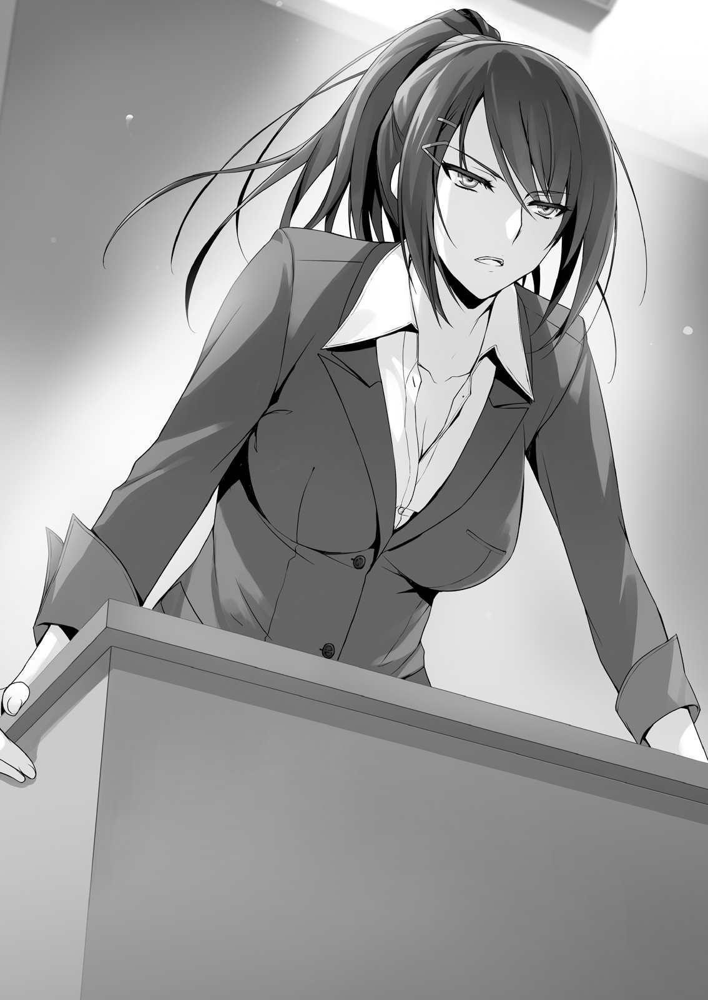
— Les expliqué todo esto el día de la ceremonia de entrada. Que esta escuela mide las habilidades de sus estudiantes. Esta vez, ustedes fueron estimados con un valor de cero. No hay nada más que eso.
Chabashira-sensei hablaba mecánicamente, sin ninguna expresión. Mis dudas iniciales después de venir a esta escuela finalmente fueron contestadas. De la peor manera posible, no obstante respondidas.
En otras palabras, a pesar de que nos dieron una gran ventaja de 100 000 puntos al principio, nuestra clase D perdió todo en un solo mes.
Escuché el sonido de un lápiz sobre el papel. Horikita trataba de comprender con calma la situación mientras anotaba el número de ausencias, retrasos e infracciones por hablar durante la clase.
— Chabashira-sensei, no recuerdo haber escuchado nunca esa explicación antes.
— ¿Qué? ¿Son personas incapaces de entender sin explicaciones?
— Naturalmente. No se mencionó la reducción de puntos transferidos al principio de cada mes. Si se hubiera explicado antes, estoy seguro de que habríamos intentado no llegar tarde y no hablar durante la clase.
— Un argumento interesante, Hirata. Tampoco recuerdo haber explicado las reglas sobre los puntos recibidos al principio de cada mes. Sin embargo, ¿no han aprendido a no hablar en clase y a llegar a tiempo desde la primaria?
— Eso es…
— Estoy segura de que han aprendido en los 9 años de educación obligatoria, siempre les han dicho que esas cosas están mal vistas. Hablar en clase y llegar tarde es malo. ¿Además, dijiste que no lo entendían porque no lo expliqué? Esa excusa no es válida. Si se comportaran como un estudiante debe, sus puntos no se hubieran reducido a 0. Es su responsabilidad.
Sin espacio para debatir, su argumento era completamente sólido. Ya que todo el mundo sabe lo que es el buen y mal comportamiento.
— Después de convertirse en estudiantes de primer año de preparatoria, ¿de verdad creían que recibirían 100 000 puntos cada mes sin restricciones? ¿En esta escuela creada por el gobierno japonés para entrenar a personas excelentes? Eso es imposible, usen su sentido común. ¿Por qué dejar las dudas como dudas?
Aunque Hirata parecía frustrado por su argumento, se recuperó e inmediatamente la miró a los ojos.
— Bueno, entonces, ¿puede al menos decirnos los detalles sobre cómo los puntos se incrementan o disminuyen? Trataremos de hacer nuestro mejor esfuerzo a partir de ahora.
— Eso no es posible. No se nos permite divulgar los detalles de cómo evaluamos el mérito de los estudiantes. Es lo mismo que el mundo real. Cuando todos ustedes entren a la sociedad y encuentren trabajo en algún tipo de negocio, probablemente no les dirán cómo son evaluados, eso depende de la compañía.
Sin embargo... no estoy tratando de ser fría, ni los odio chicos. Este es un espectáculo tan lamentable que voy a decirles a todos una cosa—. Por primera vez hoy, vi una leve sonrisa en el rostro de Chabashira-sensei—. Digamos que todo el mundo dejó de llegar tarde y dejó de hablar en clase... su deducción sería cero, pero eso no significa que obtendrán más puntos.
En otras palabras, la asignación del próximo mes también será 0 puntos.
No llegar tarde o no hablar con la clase no ayudará a regresar del fondo.
— Ténganlo en cuenta, les ayudará.
— Ughh.
El rostro de Hirata se volvió aún más oscuro. Una parte de la clase todavía no entendía; su explicación tuvo el efecto contrario. Los estudiantes que querían cambiar su mal comportamiento estaban desalentados. Ese es el objetivo de Chabashira-sensei; no, de la escuela.
La campana sonó, señalando el final de la clase.
— Parece que tuvimos demasiada charla. Espero que lo hayan entendido. De todos modos, vamos a pasar a la cuestión principal.
Extendió el cartel blanco que estaba enrollado en el tubo. Tomando un imán, lo colgó en la pizarra. Los estudiantes miraron el papel, todavía confundidos.
— ¿Son estos... los resultados de cada clase?
Horikita trató de explicar el papel, aunque solo estaba medio segura. Tal vez sea cierto.
Las clases A a D se enumeran en el papel, con números justo a su lado.
Nuestra clase D con 0. Clase C con 490. Clase B con 650. Y la clase A tenía el número más alto con 940. Supongo que 1000 puntos significarían 100 000 yenes. Todas las clases perdieron puntos de alguna manera.
— Oye, ¿no crees que esto es extraño?
— Sí... los números son demasiado limpios.
Horikita y yo notamos que había algo extraño en los puntos.
— Durante el primer mes, todos ustedes han estado haciendo lo que les place.
Ahora, la escuela no está diciendo que esto está prohibido. Sus acciones, como hablar durante la clase y llegar tarde, sólo afectan el número de puntos que obtienen. Lo mismo ocurre con el uso de puntos. Tienen la libertad de usarlos como quieran. No hemos restringido cómo usan sus puntos.
— ¡Esto no es justo! ¡No podemos llevar una vida escolar normal así!
Ike, que se había quedado quieto hasta ahora, gritó.
Yamauchi también gritaba en agonía. Ese tipo ya usó todos sus puntos.
— Miren cuidadosamente, niños estúpidos. Todas las demás clases excepto la D
obtuvieron algunos puntos. La cantidad de puntos que ustedes tienen aún debe ser suficiente para durar un mes.
— ¿Por qué las otras clases tienen puntos? Es extraño.
— Te lo diré, pero no es como si existiera una especie de fraude. En el mes pasado, todas las clases fueron juzgadas por las mismas reglas. Sin embargo, no perdieron tantos puntos como ustedes. Es un hecho.
— ¿Cómo... cómo hay tanta diferencia de puntos entre las clases?
Hirata también notó algo extraño sobre los números. Las diferencias en los puntos eran demasiado netas.
— ¿Finalmente lo entendieron? ¿Por qué los pusieron en la clase D?
— ¿La razón por la que fuimos puestos en clase D? ¿No es eso porque fuimos adecuados para esta escuela?
— ¿Eh? Así es como funciona en las clases ordinarias, ¿sabes?
Todos intercambiaron miradas.
— En esta escuela, todos los estudiantes se dividen en clases por mérito. Los mejores estudiantes son puestos en la clase A. Lo peor en la clase D. Bueno, es un sistema que se encuentra en las principales escuelas de cursos intensivos.
En otras palabras, la clase D es la acumulación de las sobras. Eso también significa que son los peores estudiantes, los productos defectuosos de esta escuela. Este realmente es un resultado digno de estudiantes defectuosos.
El rostro de Horikita se puso rígido. Parece que la razón detrás de la división de clases realmente la sorprendió.
Ciertamente, es mejor poner gente inteligente con otras personas inteligentes, y gente incapaz con otras personas incapaces. Si pones mandarinas podridas con mandarinas buenas, las mandarinas buenas se pudren más rápido. Es inevitable que la superior Horikita esté en estado de shock con este tipo de división.
Sin embargo, es probable que haya estado bien que me pusieran aquí. Sólo hay un camino que recorrer y eso es todo.
— Esta clase D es la primera en perder todos sus puntos en el primer mes. Por el contrario, les aplaudo por vivir tan lujosamente hasta ahora. ¡Qué encomiable!—
El aplauso antinatural de Chabashira-sensei resonó en el aula.
— Después de llegar a cero puntos, ¿significa que nos quedaremos en cero puntos para siempre?
— Sí. Sus puntos se mantendrán en 0 hasta la graduación. Sin embargo, estén tranquilos, ya que pueden utilizar los dormitorios, y hay comidas gratuitas en la cafetería. No morirán.
Aunque una vida estudiantil con sólo lo mínimo es posible, a muchos de los estudiantes probablemente no le gustará. Después de todo, vivieron sus vidas este mes mientras se daban cada lujo posible. De repente, tener que vivir una vida con autocontrol se ve muy difícil para muchos de los estudiantes.
— ¿Ahora vamos a ser objeto de burla de las otras clases?
Sudou dio una patada a su pupitre. Después de saber que las clases están divididas por mérito, probablemente todos se burlarán de la clase D como el grupo de idiotas.
No es irrazonable perder la esperanza.
— ¿Qué, aún te aferras a tu orgullo, Sudou? Entonces haz tu mejor esfuerzo y trata de convertir a la peor clase en la mejor.
— ¿Huh?
— Estos puntos de clase no sólo están vinculados a la cantidad de dinero que reciben cada mes. También es indicativo del rango de la clase.
Así que, en otras palabras... si, por ejemplo, la clase D se hubiera mantenido en 500
puntos, hubiera ascendido a la clase C. Esto es realmente como una evaluación de una empresa.
— De acuerdo, tengo otra mala noticia que tengo que decirles.
Puso otra hoja de papel en la pizarra. Los nombres de todos los compañeros de clase fueron listados. Junto al nombre de todos estaba un número.
— Al mirar estos números, llegué a entender que hay muchos idiotas en esta clase—. Miró a los estudiantes mientras sus tacones chocaban contra el suelo—.
Estas son las puntuaciones de la prueba hace unos días. Sensei estaba feliz después de ver su maravillosa actuación. En serio, ¿qué diablos estudiaron en la secundaria?
A excepción de los mejores estudiantes de la clase, casi todos se quedaron por debajo de 60. Ignorando la magnífica puntuación de Sudou de 14 puntos, la más baja fue la puntuación de Ike de 24. La puntuación media fue de 65.
— Si esta prueba fuera registrada, siete de ustedes tendrían que abandonar la escuela. Lo bueno es que no lo fue, ¿verdad?
— ¿A-abandonar? ¿Qué quiere decir?
— ¿Por qué, no lo he explicado? Si obtienes una calificación reprobatoria en un examen parcial o un examen final en cualquier asignatura, debes abandonar la escuela. En esta prueba, serían todos los que obtuvieron por debajo de 32. Vaya, ustedes son realmente tontos y estúpidos.
— ¿¡Queeeeeeeeeeeeeeeeé!?
Las siete personas que fallaron, o en otras palabras, Ike y su grupo, dejaron escapar una voz sorprendida.
En el papel, había una línea roja que separaba el resto de la clase y a las siete personas, la más alta de las cuales era Kikuchi con una puntuación de 31 puntos. En otras palabras, todos después de que Kikuchi fallaron.
— ¡No jodas conmigo Sae-chan-sensei! ¡No hagas bromas sobre dejar la escuela!
— Yo también estoy sin palabras. Son las reglas de la escuela, así que prepárate para lo peor.
— Como dijo la maestra, parece haber muchos tontos aquí.
Mientras pulía sus uñas con los pies sobre el escritorio, Koenji tenía una sonrisa satisfecha en su rostro.
— ¿¡Qué es eso, Koenji? ¡Tu calificación también están en el rojo!
— Ja. ¿Dónde están tus ojos mirando, muchacho? Mira cuidadosamente.
— ¿H-huh? Oye, el nombre de Koenji es... ¿eh?
Escudriñando desde abajo, sus ojos llegaron gradualmente a la cima. Y entonces...
finalmente vio el nombre Koenji Rokusuke.
Para su incredulidad, Koenji había empatado la puntuación más alta en la clase. 90
puntos. Eso significa que fue capaz de resolver uno de los problemas más difíciles.
— ¡Nunca pensé que Sudou sería un personaje estúpido como yo!
Ike dijo en voz alta con sarcasmo en su tono.
— Ah, y una cosa más. Esta escuela, que está bajo el control del país, cuenta con un alto porcentaje de alumnos que van a la educación superior y una alta tasa de empleo. Eso es un hecho bien conocido. Lo más probable es que muchas personas en esta clase pasen a la universidad o busquen trabajo en una empresa.
Eso es obvio. Como ella dijo, esta escuela tiene la tasa de aceptación de empleo y aceptación a la universidad más alta. Hay rumores de que si se gradúan exitosamente de esta escuela, será mucho más fácil de unirse a una universidad o una empresa normalmente difícil. Otros rumores dicen que graduarse de esta escuela es como recibir una recomendación para ser admitido en la Universidad de Tokio.
— Pero... las cosas no son tan fáciles en el mundo. La gente como ustedes, que son de un nivel muy bajo, probablemente tendrán problemas para entrar en la universidad o conseguir un trabajo.
Las palabras de Chabashira-sensei resonaron en el aula.
— En otras palabras, para hacer realidad nuestros sueños de conseguir un trabajo o entrar en la universidad, sobrepasar la clase C es probablemente lo mínimo.
— Eso también es un poco incorrecto, Hirata. No hay manera de lograr tus sueños excepto si superan a la clase A. La escuela no garantiza nada para todos los demás estudiantes.
— ¡E-eso es... eso es algo de lo que nunca oí hablar! ¡Esto es absurdo!
Yukimura, que llevaba gafas, se puso de pie. Él era la persona que igualó la calificación de Koenji.
— Qué vergonzoso. No hay nada tan lamentable como los niños que hacen alboroto y se asustan.
Como si sintiera algo de las palabras de Yukimura, Koenji soltó un suspiro.
— Koenji, ¿no tienes ningún resentimiento por estar en clase D?
— ¿Resentimiento? ¿Por qué sentiría resentimiento? No entiendo.
— Porque nos han dicho que nuestra clase es la acumulación de las sobras, ¡y que nuestras posibilidades de entrar en la educación superior o conseguir un trabajo son pequeñas!
— Fu. Eso es una tontería. Ni siquiera puedo responder a esa total estupidez—.
Koenji no dejó de pulirse las uñas. Ni siquiera se enfrentó a Yukimura mientras
hablaba—. Esta escuela no ha visto todavía todo mi potencial. Me valoro, respeto y considero mucho más que cualquier otra persona. Incluso si la escuela me pone en clase la D, no significa nada para mí. Si, por ejemplo, tengo que dejar la escuela, está bien. Después de todo, es la escuela la que volverá arrastrándose por mí.
Suena como algo que Koenji diría. ¿Es masculinidad o es presunción? Ciertamente, si no te importa la clasificación de la escuela, no importa en absoluto. Teniendo en cuenta su alto intelecto y capacidad física, es difícil pensar que los estudiantes de la clase A son todos mejores que Koenji. O tal vez fue asignado a la clase D por su personalidad.
— Sin embargo, no estoy buscando ir a la universidad o encontrar trabajo en algún lugar después de graduarme. Se ha decidido que voy a dirigir el Conglomerado Koenji en el futuro. No importa si estoy en la clase A o la clase D.
Para alguien cuyo futuro ha sido garantizado, ciertamente no hay necesidad de preocuparse por la clase.
Sin palabras para replicar, Yukimura volvió a sentarse.
— Parece que su estado de ánimo feliz se ha amortiguado. Si hubieran entendido el difícil ambiente en que se les puso desde el principio, no tendríamos necesidad de esta clase tan larga. El examen parcial es en tres semanas, así que por favor eviten ser echados de la escuela. Estoy segura de que todos aquí pueden sobrevivir sin tener calificaciones reprobatorias. Si es posible, desafíen su situación con el comportamiento apropiado de una persona capaz.
Cerrando la puerta para enfatizar, Chabashira-sensei salió del aula.
Los estudiantes con calificaciones rojas se quedaron atónitos. Incluso el normalmente orgulloso Sudou bajó la cabeza avergonzado.
1
— ¿Qué voy a hacer sin más puntos?
— Usé el resto de mis puntos ayer.
Después de que Chabashira-sensei salió del salón, el aula entera estaba alborotada.
— Más que los puntos, este es un problema con la clase. ¿¡Por qué me pusieron en la clase D!?
Yukimura expresó frustración. Había gotas de sudor en su frente.
— Espera, ¿eso significa que no podremos ir a la universidad que queremos ir?
Entonces, ¿en primer lugar para qué vine a esta escuela? Me pregunto si Sae-chan-sensei me odia.
Ninguno de los estudiantes puede ocultar su confusión.
— Entiendo que todo el mundo está entrando en pánico en este momento, pero cálmense.
Hirata tomó el control de la clase, tratando de calmar la sensación de crisis inminente.
— ¿Cómo podemos calmarnos en esta situación? ¿¡No estás frustrado de que somos la clase de las sobras!?
— Aunque dijera que lo estoy, ¿no es mejor trabajar juntos para salir de esta situación?
— ¿Salir de esta situación? ¡En primer lugar, ni siquiera estoy de acuerdo con esta jerarquía de clases!
— Comprendo perfectamente sus sentimientos. Sin embargo, no sirve de nada sentarse aquí y quejarse de ello.
— ¿¡Qué!?
Yukimura se acercó a Hirata y lo agarró por el cuello.
— Cálmense, ustedes dos. ¿Okay? Seguramente, Sensei debió explicarnos con severidad para animarnos, ¿verdad?
Kushida habló. Los separó y suavemente tomó el puño cerrado de Yukimura en su mano. Yukimura, como era de esperar, trató de no lastimar a Kushida e involuntariamente dio un paso atrás.
— Además, sólo ha pasado un mes desde que empezó la escuela. Como dijo Hirata-kun, creo que es mejor para todos nosotros perseverar en esta situación.
¿Creen que estoy equivocada?
— N-no, eso es... ciertamente, no creo que lo que Kushida dijo está mal, pero...
La ira de Yukimura ya había desaparecido. Kushida sinceramente miró a todos en la clase D, deseando su cooperación.
— Es verdad. No debemos ser impacientes. No hay necesidad de que Yukimura y Hirata peleen.
— Lo siento. Perdí mi compostura un poco.
— Está bien. Debería haber elegido más cuidadosamente mis palabras.
Con la ayuda de Kushida Kikyou, la pelea se resolvió de buena manera.
Saqué mi teléfono y tomé una foto de los puntos de clase. Viendo mis acciones, Horikita me miró con una expresión curiosa.
— ¿Qué estás haciendo?
— Todavía no he podido averiguar los detalles detrás de los puntos. ¿No has tomado también algunas notas?
Si puedo calcular el número exacto de deducciones por llegar tarde y hablar en clase, probablemente podamos llegar a algunas contramedidas.
— ¿No será difícil calcular los números con tan poca información? Además, incluso si logras algo, no creo que ayude a resolver este problema. Simplemente hablando, todo el mundo llega siempre tarde y habla demasiado durante la clase.
Como dijo Horikita, es difícil llegar a una conclusión con esta cantidad de información.
Parece extrañamente impaciente; su habitual actitud calmada parece estar ausente.
— ¿También estás en esta escuela para entrar a la universidad?
— ¿Por qué preguntas eso?
— Es sólo que cuando habló de la diferencia entre la clase A y D, parecías realmente sorprendida.
— Esa fue más o menos la reacción de todos en la clase, ¿no? A pesar de que nos dieron una explicación el primer día de escuela, no puedo entender este nuevo desarrollo.
Bueno, eso es razonable. Las personas en las clases B y C probablemente están murmurando descontentos igual que nosotros. Cualquier otra clase que no sea la clase A es tratada como sobras por la escuela. Tratar de aumentar nuestro rango de clase parece ser el mejor curso de acción.
— Creo que antes de pensar en la clase A o en la clase D, deberíamos trabajar para garantizar algunos puntos.
— Los puntos son sólo un subproducto de nuestros esfuerzos en clase. No tener ningún punto no obstaculizará nuestra vida escolar. Después de todo, esta escuela ofrece todo de forma gratuita.
Incluso si piensas eso, es un alivio para los que perdieron todos sus puntos.
— No obstaculizará nuestra vida escolar, eh...
No es un problema para vivir al mínimo. Sin embargo, hay un montón de cosas que sólo se pueden obtener con puntos. Por ejemplo, ocio y entretenimiento. No tener ningún medio de entretenimiento probablemente sólo nos hará daño en el futuro...
— El mes pasado, ¿cuántos puntos utilizaste Ayanokouji-kun?
— ¿Hmm? Oh, cuántos puntos usé. Utilicé unos 20 000 puntos.
Los estudiantes que gastaron todos sus puntos estaban en problemas. Como Yamauchi, que había estado aterrado durante algún tiempo.
Ike también gastó todos sus puntos.
— Aunque creo que es desafortunado, están pagando por sus errores.
Ciertamente, usar 100 000 puntos en un mes es un pequeño problema.
— Fuimos atraídos por el encanto de los puntos el primer mes.
100 000 puntos al mes. Aunque pensamos que era demasiado bueno para ser verdad, todos celebraban.
— Chicos, una vez que las clases comiencen, le pido a todo el mundo que preste atención adecuadamente. Especialmente tú, Sudou-kun.
Hirata atrajo la atención de la ruidosa aula al levantarse en el estrado.
— Tch, ¿qué pasa?
— Este mes, no obtuvimos puntos. Este es un problema que afectará enormemente nuestra futura vida estudiantil. No podemos seguir así y graduarnos con 0 puntos,
¿no?
— ¡Definitivamente no!
Una chica gritó ante las palabras de Hirata. Éste asintió con la cabeza.
— Claro que no. Por lo tanto, no tenemos otra opción que tratar de obtener algunos puntos el próximo mes. Es por eso que todos en clase tenemos que trabajar juntos para solucionar nuestro problema. Debemos evitar llegar tarde y hablar durante la clase. Naturalmente, también se prohíbe el uso de teléfonos celulares durante las clases.
— ¿Por qué tenemos que escucharte? Los puntos permanecen constantes, no hay razón para detenerse.
— Sin embargo, si seguimos llegando tarde y hablando durante clase, nuestros puntos no aumentarán. No podemos bajar más de 0 puntos, todavía cuenta como negativo.
— No lo entiendo, aunque trabajemos duro durante la clase no es como si subirán nuestros puntos.
Sintiéndose insatisfecho, Sudou resopló y cruzó los brazos, advirtiendo los sentimientos de Sudou, Kushida habló.
— ¿La escuela no dijo que no llegar tarde y no hablar durante la clase debería ser una mentalidad obvia?
— Si, también pienso igual que Kushida-san, es natural.
— Esa es una explicación para su conveniencia. Hablen después de averiguar cómo aumentar nuestros puntos.
— No creo que haya nada malo en lo que dice Sudou-kun. Lo siento por hacerte sentir incómodo—. Hirata inclinó la cabeza hacia el descontento Sudou—. No obstante Sudou-kun, es un hecho que si no cooperamos, nuestros puntos nunca aumentarán.
— No importa lo que hagas. No me involucres. ¿Entiendes?
Como si se sintiera incómodo al permanecer en el aula, Sudou salió del salón.
¿Se ha ido sólo hasta que comience la clase o nunca volverá?
— Sudou-kun realmente no puede leer el ambiente. Es el que más tarde llega.
Incluso sin Sudou-kun ¿Podemos obtener algunos puntos?
— Sí... es lo peor. ¿Por qué está en la misma clase que nosotros?
Bueno, todo el mundo estaba pasando el mejor momento de su vida hasta esta mañana. No había nadie quejándose de Sudou entonces.
Al bajar del podio, Hirata caminó hacia el frente del salón.
— Horikita-san y Ayanokouji-kun, ¿tienen tiempo después? Cuando termine la escuela, quiero hablar sobre cómo podemos aumentar nuestros puntos. Quiero que ustedes participen. ¿Pueden?
— ¿Por qué nosotros?
— Quiero escuchar los pensamientos de todos. Sin embargo, incluso si pido que todos hablen, creo que más de la mitad no escuchará en serio.
Así que por eso pensó preguntarnos a nosotros dos en particular. No creo que podamos dar ideas útiles, pero supongo que está bien participar. Aunque pensaba eso-
— Lo siento, pero ¿puedes preguntarle a alguien más? No soy muy buena para discutir cosas.
— No estás obligada a decir nada en particular. Es suficiente con estar allí.
— Lo siento, pero no tengo intención de ir a una reunión por una razón inútil.
— Creo que esta es nuestra primera prueba como una clase unida. Así que-
— Ya me he negado. No voy a participar.
Palabras tranquilas pero fuertes. A pesar de considerar el punto de vista de Hirata, Horikita lo rechazó de nuevo.
— Con que es así. Lo siento... si cambias de opinión, por favor participa.
Horikita ya dejaba de prestar atención a Hirata, que había renunciado.
— ¿Y tú, Ayanokouji-kun?
Honestamente, pensé que sería bueno participar. Después de todo, la mayoría de la clase probablemente lo haría.
Sin embargo, si Horikita era la única que no participaba, probablemente recibiría el mismo tratamiento que Sudou.
— Ah... voy a pasar. Lo siento.
— No, yo soy el que debería sentirlo, sin embargo si cambias de opinión, siéntete libre de unirte.
Hirata probablemente entendió lo que estaba pensando. No lo rechacé con contundencia como lo hizo Horikita.
Ahora que la discusión había terminado, Horikita comenzó a prepararse para la siguiente clase.
— Wow, Hirata es bastante notable. Fue capaz de poner a todos en acción. No es raro sentirse deprimido por la situación.
— Esa es una manera de verlo. Si eres bueno en resolver problemas con discusiones, no habrá ninguna dificultad. Sin embargo, si un estudiante que no es muy inteligente trata de mantener una discusión, probablemente se haga un alboroto. Además, no puedo aceptar la situación ahora mismo.
— ¿Aceptar la situación? ¿Qué quieres decir con eso?
Horikita, sin responder a mi pregunta, no dijo nada más.
2
Fue cuando terminó la escuela. Hirata estaba en el podio, usando la pizarra para prepararse para la discusión.
Debido al carisma de Hirata, parece que todos aparecieron excepto Horikita y Sudou.
Esos dos ya salieron del aula. Antes de que comience la discusión, también debo dejar el salón.
— Ayanokouji~
Desde debajo del escritorio, Yamauchi asomó la cara, todavía parecía muerto.
— ¿¡Qué demonios!? ¿Qué ocurre?
— Compra esto por 20 000 puntos~. No puedo comprar nada porque no tengo puntos~.
Yamauchi dejó la consola de juegos con la que estaba jugando el otro día. No me metas en tus problemas.
— Si me vendes esa cosa, ¿con quién jugaría?
— Cómo debería saberlo. Está bien, ¿verdad? Es un buen trato.
— Lo compraré si bajas el precio a 1000 puntos.
— ¡Ayanoukouji~! No tengo a nadie más en quien confiar~.
— ¿Por qué sólo yo? ... no puedo dar lo que no tengo.
Yamauchi me miró con ojos llorosos, pero desvié los ojos porque me sentía mal.
Se dio cuenta de que pedirme puntos no iba a funcionar, así que cambió a otro objetivo.
— ¡Hasebe! ¡Tengo un favor que pedir a mi mejor amigo! ¡Compra esta consola por 22.000 puntos!
Parece que está tratando de que Hasebe lo compre ahora. Además, aumentó descaradamente el precio.
— Debe ser difícil para todos los que han agotado sus puntos.
Dijo Kushida mientras observaba el intercambio entre Yamauchi y Hasebe.
— Kushida, ¿estás bien de puntos? Después de todo, las chicas tienen muchas necesidades.
— Hmm, bueno, por ahora. He usado la mitad de mis puntos. Usé demasiados puntos este primer mes, así que será difícil controlarme. Ayanokouji-kun, ¿qué hay de ti?
— Ciertamente es difícil para alguien que es popular vivir una vida escolar sin gastar dinero. Prácticamente no he utilizado ninguno de mis puntos. Tampoco tengo nada que necesite.
— ¿Eso es porque no tienes amigos?
— Oye.
— Jajaja, lo siento, lo siento. No quise ofenderte.
Kushida se disculpó conmigo mientras reía. Ella es tan linda cuando se ríe así.
— Um, ¿Kushida-san?
— Karuizawa-san, ¿qué pasa?
— Para ser honesta, usé todos mis puntos. Ya he recibido ayuda de las otras chicas de la clase, pero también pensé en preguntarle a Kushida-san. Somos amigas, ¿verdad? Sólo necesito unos 2 000 puntos.
Karuizawa pidió puntos a Kushida con una sonrisa falsa. Esto debe ser un rechazo instantáneo.
— Un, ok.
Grité “¿¡Ok!?” en mi mente, pero supongo que depende de la persona en cuanto a cómo deciden a sus amigos.
Sin vacilar en absoluto, Kushida decidió ayudar a Karuizawa.
— Gracias~. Los amigos son realmente útiles. Este es mi número. Bueno, entonces nos vemos más tarde~. Ah, Inogashira-san, para ser honesta, usé todos mis puntos~…
Moviéndose hacia su siguiente objetivo, Karuizawa se alejó de nosotros.
— ¿Estuvo bien? Tus puntos probablemente no volverán.
— No puedo rechazar a un amigo cuando viene a pedir ayuda. Karuizawa-san también tiene muchos amigos, así que probablemente sea difícil para ella sin demasiados puntos.
— Sin embargo, creo que haber utilizado los 100 000 puntos debe ser tu propio problema.
— Ah, pero ¿cómo puedo transferir mis puntos?
— Has recibido un trozo de papel de Karuizawa con un número, ¿verdad? Puedes transferir puntos usando tu teléfono celular.
— Wow, la escuela realmente pensó en todo para los estudiantes. Incluso crearon un sistema como éste para ayudar a gente como Karuizawa-san.
Ciertamente, es una ayuda para Karuizawa. Sin embargo, ¿era realmente necesario enviarle dinero? En su lugar, parece un montón de problemas.
— Ayanokouji-kun de la clase D. Chabashira-sensei te llama. Por favor, ven a la sala de profesores.
Después de un tintineo, una voz llegó por el altavoz.
— Parece que te llamó la profesora.
— Sí... Lo siento, Kushida. Me iré yendo.
Desde el primer día de escuela, no recuerdo haber hecho nada para que me llamaran.
Sintiendo las pesadas miradas de los otros estudiantes, salí del salón.
Llegué a la sala de profesores y tímidamente abrí la puerta. Mirando alrededor de la habitación, no vi Chabashira-sensei por ninguna parte. Llamé a la maestra que estaba revisando su cara en el espejo.
— Um, ¿Chabashira-sensei está aquí?
— ¿Qué? ¿Sae-chan? Ella estuvo aquí hasta hace un momento.
La maestra que miraba hacia atrás tenía el cabello ondulado a la altura de los hombros daba una impresión de tipo adulto. Dijo el nombre de Chabashira-sensei como si fueran cercanas. También parecen cercanas en edad.
— Parece que tenía algo que hacer. ¿Quieres esperar dentro?
— No, espero en el pasillo.
No me siento cómodo en áreas como la sala de profesores. Ya que no quería atraer la atención, decidí quedarme en el pasillo. Tan pronto como pensé eso, la maestra salió al pasillo.
— Soy Hoshinomiya Chie, responsable de la clase B. He sido la mejor amiga de Sae desde la preparatoria. Somos lo suficientemente cercanas como para llamarnos Sae-chan y Chie-chan~.
Nunca había oído hablar de ella, pero parece una información inútil.
— Oye, ¿por qué te llamó Sae-chan aquí? Oye, oye, ¿por qué?
— Quién sabe. Yo tampoco sé la razón.
— No entiendo. ¿Fuiste llamado sin razón? Fuun? ¿Cuál es tu nombre?
Una avalancha de preguntas. Me examinó de arriba abajo.
— Mi nombre es Ayanokouji.
— ¿Ayanokouji-kun? ¿No es un nombre genial~? Eres popular, ¿verdad?
¿Qué es esta maestra demasiado casual? Ella está más cerca de un estudiante que de un profesor como Chabashira-sensei. Si se tratara de una escuela solo para chicos, probablemente capturaría los corazones de cada estudiante.
— Oye, oye ¿ya tienes novia?
— No... um, no soy muy popular.
Traté de parecer ofendido y herido, pero Hoshinomiya-sensei aun se acercaba asertivamente a mí. Con movimientos suaves, ella agarró mis hombros con sus esbeltas y hermosas manos.
— ¿Fuun? Eso es extraño, yo habría ido totalmente por ti si estuviéramos en la misma clase~. ¿Es porque eres demasiado inocente? ¿O eres tsuntsun?
Me acarició las mejillas con los dedos. No sabía qué decir. Si de repente lamiera sus dedos, probablemente se detendría, pero si se plantea en una reunión de personal, probablemente sería expulsado de inmediato.
— ¿Qué estás haciendo, Hoshinomiya?
De repente, Chabashira-sensei golpeó la cabeza de Hoshinomiya-sensei con una carpeta. Hoshinomiya-sensei se agachó, sosteniendo su cabeza adolorida.
— Oww. ¿Por qué hiciste eso?
— Porque estabas haciendo cosas extrañas con un estudiante.
— ¡Estoy hablando con él mientras esperaba a que volvieras!
— Déjalo en así. Perdón por hacerte esperar, Ayanokouji. Bueno, vamos a la sala de orientación.
— No, no esperé mucho. Además, la sala de orientación... ¿hice algo? Pensé que estaba viviendo una vida escolar sin sobresalir.
— Una buena respuesta. Ven conmigo.
Seguí Chabashira-sensei mientras pensaba “¿De qué se trata?”
De repente, Hoshinomiya-sensei se acercó a mí con una sonrisa. Cuando se dio cuenta, Chabashira-sensei se volvió y la miró como un demonio.
— Tú no, te quedas atrás.
— No lo digas tan fríamente. No es gran cosa si escucho también, ¿verdad?
Además, Sae-chan no es el tipo de dar clases individuales, ¿cierto? Además, llevar Ayanokouji-kun a la sala de orientación así de repente... ¿tienes algún tipo de meta?
Respondiendo a la pregunta de Chabashira-sensei con una sonrisa, ella se puso detrás de mí y puso sus manos sobre mis hombros.
No podía ver el rostro de Hoshinomiya-sensei, pero comprendí que había electricidad en el aire.
— Por casualidad, Sae-chan, ¿estás buscando a un hombre más joven?
¿Un hombre más joven? ¿Qué quiere decir con eso?
— No digas cosas estúpidas. Eso es imposible.
— Fufu, desde luego. Es imposible para Sae-chan~.
Hoshinomiya-sensei continuaba siguiéndonos.
— ¿Cuánto tiempo nos seguirás? Este es un problema relativo a la clase D.
— ¿Eh? ¿No puedo ir contigo? ¿No está bien? Mira, yo también puedo dar consejos~.
Como Hoshinomiya-sensei nos siguió contra nuestra voluntad, una estudiante de repente se acercó a nosotros y nos bloqueó el camino.
Era una muchacha hermosa con el pelo rosado claro que nunca he visto antes.
— Hoshinomiya-sensei. ¿Tienes tiempo ahora mismo? El consejo estudiantil tiene asuntos que discutir.
Ella nos miró por un momento, pero volvió a enfrentarse a Hoshinomiya-sensei.
— Ves, ella te está buscando. Apúrate y ve.
Chabashira-sensei golpeó el trasero de Hoshinomiya-sensei con su carpeta.
— Mou~. Creo que se enojará si me quedo más tiempo, así que hasta luego, Ayanokouji-kun. Bueno, vamos a la sala de profesores, Ichinose-san.
Con eso, giró sobre sus talones y volvió a la sala de profesores con Ichinose.
Después de ver a Hoshinomiya-sensei, Chabashira-sensei se rascó ligeramente la cabeza y siguió caminando hacia la sala de orientación. Llegamos poco después, ya que estaba justo al lado de la sala de profesores.
— Entonces... ¿por qué me llamó?
— Umu, sobre eso... antes de que hable de eso, ven aquí.
Mientras miraba el reloj de la pared, abrió una puerta que estaba en la habitación.
Puso una tetera encima de la estufa en la cocina de la oficina.
— Voy a hacer un poco de té verde. ¿Estás bien con el té verde tostado?
Tomé el recipiente con polvo de té verde tostado.
— No hagas nada extra. Entra silenciosamente. Hasta que yo diga que está bien regresar, quédate aquí tranquilamente. Si no lo haces, serás expulsado.
— ¿Qué? ¿Qué quiere decir-?
Sin darme una explicación, cerró la puerta de la cocina de la oficina. ¿Qué diablos está tratando de hacer? Me quedé quieto como ella me dijo, y en poco tiempo, oí el sonido de la puerta de la sala de orientación al abrirse.
— Aquí, entra. Bueno, ¿qué tienes que decirme? Horikita.
Parece que Horikita fue llamada a la sala de orientación.
— Le preguntaré francamente. ¿Por qué me pusieron en clase D?
— ¿Estás preguntando francamente?
— Hoy, dijo que las clases estaban divididas por superioridad. Y que la clase D era la colección más baja de las sobras.
— De hecho dije eso. Parece que te consideras una persona “superior”.
Me pregunto cómo responderá Horikita a eso. Apuesto a que ella se opondrá con confianza a sus palabras.
— Creo que he resuelto casi todos los problemas en el examen de ingreso, y no tuve grandes errores durante la entrevista. Por lo menos, no creo que debería estar en la clase D.
Mira, lo tengo perfectamente claro. Horikita es del tipo que piensa en ella como la mejor. Tampoco es consciente de sí misma, y realmente cree que es superior a todos los demás. En los resultados del examen, Horikita empató en el primer lugar.
— Resolviste casi todos los problemas en el examen de ingreso, ¿verdad? Por lo general, no podemos mostrar los resultados del examen de ingreso, pero haré una excepción especial. De casualidad tengo tu hoja de respuestas aquí.
— Está bien preparada, ya veo. Parece que también sabía que vendría para protestar mi colocación.
— Soy una profesora. Por lo menos entiendo a los estudiantes hasta cierto punto.
Horikita Suzune. Como pensabas, en el examen de ingreso, fuiste el tercer lugar entre los aspirantes a primer año. Tus puntuaciones estuvieron por detrás del primero y segundo por sólo un pequeño margen. Lo hiciste muy bien. No hubo problemas particulares que observaramos durante la entrevista tampoco. Más bien, estabas muy bien calificada.
— Muchas gracias. Entonces, ¿por qué?
— Antes de eso, ¿por qué estás insatisfecha con la clase D?
— No hay nadie que sería feliz cuando no son evaluados correctamente. Además, las diferencias entre las clases también afectan en gran medida las perspectivas futuras. Es natural que sea infeliz.
— ¿Correctamente evaluado? Hey hey, tu evaluación de ti misma es demasiado alta—. Chabashira-sensei rió, o más bien, se rió abiertamente de Horikita—.
Reconozco que tu capacidad académica es alta. Definitivamente eres inteligente.
Sin embargo, ¿quién decidió que las personas inteligentes eran las que entraban en las clases superiores? Nunca dijimos eso.
— Eso es... eso sólo es sentido común.
— ¿Sentido común? ¿No creó ese “sentido común” el Japón roto en el que vivimos ahora? De hecho, solíamos separar lo inferior de lo superior usando los resultados de las pruebas. Como resultado, la gente incompetente trató desesperadamente de compensar la diferencia para derrotar a la gente verdaderamente superior. Al final, condujo a un sistema de herencia.
El sistema de herencia significa que el estatus social, el honor y el trabajo son transmitidos y heredados.
Escuchando esas palabras, involuntariamente solté un gemido. Me duele el pecho.
— Ciertamente, tienes la capacidad de estudiar. No lo negaré. Sin embargo, la meta de esta escuela es producir gente excelente. Es un gran error pensar que serás asignada a una clase superior sólo por estudiar. Eso fue lo primero que les explicamos en la ceremonia de entrada. Además, piénsalo tranquilamente.
¿Crees que alguien como Sudou lo lograría si decidimos aceptarlo sólo por inteligencia?
— Uggh
A pesar de que esta es una de las mejores escuelas en Japón, aceptan estudiantes que están interesados en otras áreas aparte de estudiar.
— También, es precipitado decir que no hay nadie que sería feliz cuando se le evalúa incorrectamente. La clase A, por ejemplo, recibe mucha presión de la escuela y mucha envidia de las clases bajas. Competir bajo una fuerte presión es más difícil de lo que piensas. Hay estudiantes que están bien con ser evaluados más bajo de lo que realmente son.
— Es una broma, ¿verdad? No puedo entender a ese tipo de gente.
— ¿De Verdad? Creo que hay algunos en la clase D. Estudiantes excéntricos que se quedan en una clase de bajo nivel con placer.
Parecía como si me estuviera hablando a través de la pared.
— Todavía no ha explicado claramente. ¿Es mi asignación en la clase D la verdad, y no hubo error en mi evaluación? Revise otra vez, por favor.
— Es una lástima, pero su colocación en la clase D no fue un error. Estás definitivamente en la clase D. Eres una estudiante solamente de ese nivel.
— Es así. Lo escucharé de la escuela en otro momento.
Parece que ella decidió que su profesora de clase no era la persona adecuada para preguntar, y no se dio por vencida.
— Obtendrás el mismo resultado si intentas hablar con alguien en una posición más alta. No hay necesidad de estar tan decepcionada. Como dije esta mañana, las clases pueden adelantarse y superarse unas a otras. Recuerda que existe la posibilidad de ascender a la clase A antes de la graduación.
— No parece un camino muy fácil. ¿Cómo la inmadura clase D obtendrá más puntos que la clase A? No importa cómo lo mire, es imposible.
Era la opinión honesta de Horikita. Esta vez hay una enorme diferencia de puntos.
— No lo sabría. Es tu decisión si quieres o no dirigirte a ese camino imprudente.
Por casualidad, ¿tienes una razón especial del por qué tienes que estar en clase A?
— Eso es... me voy a disculpar por hoy. Sin embargo, por favor recuerde que todavía no lo entiendo.
— Está bien, lo recordaré.
Oí el sonido de una silla empujada. Parece que la discusión terminó.
— Cierto. Llamé a otra persona a la sala de orientación. Es una persona que también es relevante para ti.
— ¿Relevante para mí...? De ninguna manera ... Niisa-
— Sal, Ayanokouji.
No me llame en tan mal momento. De acuerdo, no saldré.
— Si no sales, serás expulsado.
C-cruel. No debes usar injustamente la expulsión como arma.
— ¿Cuánto tiempo me harás esperar?
Mientras soltaba un suspiro, salí de la cocina de la oficina y entré en la sala de orientación. Naturalmente, Horikita se sorprendió.
— ¿Estabas... escuchándonos?
— ¿Escuchando? Sé que ustedes estaban hablando de algo, pero no oí nada. Las paredes son muy gruesas.
— Eso no es cierto. Puedes oír todo claramente desde esa cocina.
Por alguna razón, parece que Chabashira-sensei quería arrastrarme a la habitación.
— Sensei, ¿por qué haría eso?
Horikita inmediatamente se dio cuenta de que se trataba de un montaje. La ira estaba clara en su rostro.
— Porque decidí que era necesario. Bueno, entonces Ayanokouji, te diré la razón por la que te llamé.
Chabashira-sensei no le dio importancia a la pregunta de Horikita y volvió su atención hacia mí.
— Disculpe, entonces.
— Espera Horikita. Es mejor que escuches hasta el final. Esto será una pista de cómo puedes llegar hasta la clase A.
Horikita se detuvo en seco y se sentó en su silla.
— Por favor, hágalo breve.
Mirando hacia abajo a su carpeta, Chabashira-sensei se echó a reír.
— Eres un estudiante interesante, Ayanokouji.
— No soy interesante en absoluto, no tan interesante como Chabashira que tiene un apellido extraño.
— ¿Quieres postrarte frente a todos los Chabashira-san del país? ¿Hmm?
— No, incluso si buscara por todo el país a otros Chabashira, probablemente no habría nadie más que usted.
— Después de los resultados de tu examen de admisión, estaba pensando en los posibles métodos de enseñanza individual, pero después de ver los resultados de tu prueba, mi interés se despertó. Al principio me sorprendí—. Una familiar hoja de respuestas del examen de ingreso estaba en la carpeta—. 50 puntos en japonés, 50 puntos en matemáticas, 50 puntos en inglés, 50 puntos en historia, 50 puntos en ciencias... y el resultado de la prueba más reciente fue también de 50 puntos. ¿Sabes qué significa esto?
Sorprendida, Horikita miró mi formulario de prueba y luego me dirigió una mirada.
— Qué coincidencia tan espantosa.
— ¿Hou? ¿Vas a afirmar que tus resultados son una coincidencia hasta el final? Es claramente intencional.
— Es una coincidencia. No tiene pruebas. De todos modos, ¿qué beneficio obtendría al manipular mis propios resultados? Si tuviera un cerebro que pudiera obtener altas calificaciones, apuntaría a obtener puntuaciones perfectas en todos los temas.
Mirándome fingir inocencia, dejó escapar un suspiro con una mirada asombrada.
— Honestamente, eres un estudiante muy raro. ¿Estás seguro? El problema de matemáticas # 5 fue resuelto solamente por el 3% de todos los estudiantes este año. Además, incluiste una fórmula compleja y la utilizaste sin problemas. Por otro lado, la tasa de respuesta correcta de # 10 fue del 76%. Cometiste un error
¿O es eso normal?
— No sé lo que es normal en este mundo. Es una coincidencia, una coincidencia.
— Maldición. Admiro tu actitud, pero te causará problemas en el futuro.
Pensaré en eso cuando tenga que hacerlo.
Chabashira-sensei envió a Horikita una mirada que decía: “¿Cómo estuvo?”
— ¿Por qué... finges que no entiendes?
— No, como dije, es una coincidencia. No es como si estuviera escondiendo que soy un genio o algo así.
— ¿Qué piensas? Podría ser más inteligente que tú, Horikita.
Horikita se estremeció visiblemente. Sensei, por favor no diga nada innecesario.
— No me gusta estudiar, ni quiero hacer lo mejor que puedo. Por eso obtengo ese tipo de puntajes.
— No se trata de los estudiantes que eligen esta escuela. Al igual que tú y Koenji, hay otros que están bien con la clase A o la clase D.
No es sólo esta escuela, incluso los maestros no son normales. Durante su conversación anterior, Chabashira-sensei pudo molestar a Horikita con sus palabras.
Es como si tuvieran los "secretos" de todos los estudiantes.
— ¿Qué es? ¿Qué otras razones hay?
— ¿Quieres saberlo en detalle?
Noté que Chabashira-sensei tenía un brillo agudo en su ojo. De alguna manera, parece que está tratando de provocarla.
— No, me detendré aquí. Si sigo escuchando, creo que me volvería loca y destruiría todos los muebles aquí.
— Si lo haces, Ayanokouji será degradado a la clase E.
— ¿Hay una clase así?
— Ciertamente. Clase E significa expulsado. En otras palabras, abandonar la escuela. Bueno, la conversación termina aquí. Disfruta de tu vida estudiantil a partir de ahora.
Qué comentario tan sarcástico.
— También me iré. Es hora de que la reunión de profesores comience. Voy a cerrar esta habitación, así que salgamos.
Ella nos empujó a los dos fuera de la habitación. ¿Por qué Chabashira-sensei hizo que nos encontráramos? Ella no parece hacer acciones sin sentido.
— De cualquier modo... ¿volvemos?
Empecé a alejarme sin esperar que ella confirmara. Probablemente sea mejor para nosotros caminar por separado.
— Espera.
Horikita me llamó para que parara, pero seguí caminando. Si me alejo de ella hasta que lleguemos a los dormitorios, mi objetivo será un éxito.
— ¿Tu puntuación... realmente es una coincidencia?
— Ya dije que sí. ¿O tienes alguna evidencia de que lo estoy haciendo a propósito?
— No tengo ninguna evidencia, pero... Ayanokouji-kun, no entiendo. Evitas cosas molestas y no tienes ningún interés en la clase A.
— También tienes algunos pensamientos inusuales acerca de la clase A.
— ¿No debería? Estoy trabajando para que mis perspectivas futuras sean más ventajosas.
— No, es perfectamente natural.
— Ese ha sido mi objetivo desde que entré en esta escuela. En verdad, es un poco diferente. Ni siquiera estoy en la línea de salida.
Noté que Horikita aceleraba su paso y caminaba a mi lado.
— Entonces, ¿tu objetivo es la clase A?
— Primero, quiero encontrar la verdadera intención de la escuela. Por qué me pusieron en la clase D. Chabashira-sensei dijo que sólo fui juzgada como alguien apropiada para la clase D, así que... cuando lo averigüe, apuntaré a la clase A No, mi objetivo siempre es la clase A.
— Eso va a ser muy difícil. Tendrás que arreglar esos niños problemáticos. Los retrasos perpetuos de Sudou, hablar durante la clase y los resultados de las pruebas. Incluso si logras eso, sigue siendo ± 0.
— Eso ya lo sé. Todavía estoy esperando que mi colocación fuera un error de la escuela.
La anterior y desbordante confianza de Horikita se había convertido en ansiedad.
¿Realmente "ya lo sabes"?
La única conclusión que obtuve de la información de hoy es la palabra "desesperación".
Si sigues las reglas básicas de la vida escolar, las disminuciones pueden ser evitadas hasta cierto punto. Sin embargo, lo crucial es que no sabemos cómo convertir las disminuciones en aumentos. La clase superior, clase A, todavía tenía una pequeña detracción de puntos.
Incluso si encontramos una manera de aumentar nuestros puntos de manera eficiente, las otras clases también encontraran una manera de hacer lo mismo.
Además, una vez que hay una enorme diferencia de puntos, es muy difícil ser competitivo entre las clases con tiempo limitado.
— Puedo entender tus pensamientos hasta cierto punto. Sin embargo, no creo que la escuela siga observando atentamente a los estudiantes. Entonces no tendría sentido competir.
— Ya veo, también puedes pensar de esa manera.
Leí que la escuela no permite que la clase A se escape en el primer mes de admisión.
En otras palabras, Horikita creía que esta era nuestra oportunidad de hacer un gran aumento en puntos.
— ¿Estás pensando en ocuparte de esta situación con tus propias manos?
— Sí.
— Qué respuesta tan rápida.
Una mano apuñaló mis costados. Horikita me ignoró cuando hice una expresión dolorosa.
— Ay... entiendo tus sentimientos, pero no es un problema que puedas resolver por tu cuenta. Estoy hablando de Sudou. Incluso si mejoras, no hay nada que puedas hacer si el resto de la clase está en menos.
— No, es un poco diferente. Ciertamente, una persona no puede lograr nada por sí misma, pero si todos no ponen su propio esfuerzo, será un problema extraordinariamente difícil. A menos que todos lo hagan, ni siquiera podremos competir con las otras clases.
— ¿Entonces qué vas a hacer? Todo lo que has hecho es admitir que es un problema enorme.
— Hay 3 puntos clave que necesitamos arreglar para mejorar. Retardos y hablar durante la clase. Y luego asegurarse de que todo el mundo pasa el examen de mitad del trimestre.
— Los dos primeros probablemente se harán hasta cierto punto. Sin embargo, los exámenes…
La pequeña prueba de hace unos días tenía algún problema difícil, pero en general fue fácil. Hubo un montón de estudiantes que aun así fallaron en ese nivel, por lo que los exámenes parecen sombríos.
— También... quiero pedir la cooperación de Ayanokouji-kun.
— ¿Cooperación?— Horikita me miró con una expresión desagradable—.
Rechazaste a Hirata esta mañana, así que me puedo negar por la misma razón,
¿verdad?
— ¿Quieres negarte?
— ¿Si dijera que ayudaría de buena gana?
— Nunca pensé que pudieras ir tan lejos como para decir que ayudarías de buena gana, pero tampoco creo que te niegues. Si realmente no quieres ayudar, entonces no lo pediría más. No se puede evitar si te niegas de la misma manera que lo hice. Bueno, ¿puedo esperar tu ayuda o no?
Si es posible, quiero recordar las palabras que ella usó para rechazar a Hirata antes...
Sin embargo, no quiero rechazar bruscamente a alguien que está preguntando. No, no, mantén la calma. Si digo que voy a ayudar, probablemente voy a trabajar hasta la muerte hasta la graduación. Necesito tener un corazón como un demonio.
— Me niego.
— Creí que Ayanokouji-kun estaría de acuerdo en cooperar desde el principio. Te doy mi agradecimiento.
— ¡No dije eso! ¡Me he negado por completo!
— No, escuché la voz en tu mente. Dijiste que ayudarías.
De miedo, leyó mi mente.
— No creo que haya algo en lo que pueda ayudarte en particular.
Horikita es definitivamente una persona inteligente. No creo que haya necesidad de mis habilidades.
— No hay nada de qué preocuparse. No necesito tu cerebro. Deja los planes para mí, y tú puedes ser el músculo.
— ¿Qué? ¿Por qué debo ser el músculo?
— ¿No te preocupan los puntos de nuestra clase? Si sigues mis instrucciones, prometo hacer nuestros puntos positivos. Puedo garantizar eso.
— Estoy seguro de que tienes algún plan, pero puedes confiar en otras personas que no sean yo. Si haces amigos, puedes pedirles que ayuden.
— Es una lástima, pero aparte de ti no hay nadie más en la clase D que sea remotamente competente.
— No, no, hay mucha gente. Por ejemplo, Hirata. Un compañero como él tiene mucha influencia en la clase y es inteligente: es perfecto. Además, le preocupa que no tengas amigos.
Si te acercas a él, probablemente pronto se convertirán en buenos amigos.
— No es bueno. Incluso si tiene talento y habilidad, no puedo aceptarlo. Si hago una comparación, necesito una pieza de ajedrez. Lo que quiero ahora no es oro ni plata, sino más bien un peón.
¿Me estás llamando peón? ¿Es eso lo que me estás llamando?
— Un peón también puede usarse para ganar dinero.
— Una respuesta interesante, pero eres una persona que no haría mucho esfuerzo.
¿No has estado pensando, “Estoy bien con ser un peón, pero no quiero admitirlo?”
Ella disparó un tsukkomi en el acto. Si yo fuera una persona normal, mis sentimientos estarían heridos.
— Lo siento, pero no puedo ayudarte. No estoy preparado para esto.
— Bueno, puedes contactarme una vez que ordenes tus pensamientos. Esperaré hasta entonces.
Mis palabras no llegaron a Horikita.
El grupo de fracasados
Es el primer fin de semana de mayo. Ike y los demás empezaron a escuchar a los maestros en silencio. Sólo Sudou seguía durmiendo durante la clase, pero nadie intentó detenerlo. Debido nadie encuentra una manera confiable de aumentar nuestros puntos, los hábitos de Sudou no se corrigieron.
Sin embargo, Sudou recibía la ira de muchos de los compañeros de clase todos los días.
También tengo sueño. Es difícil permanecer despierto ya que es el período justo antes del almuerzo. También me quedé hasta tarde viendo una película. Sería genial si pudiera dormirme ahora.
— ¿¡W-whoah!?
Cuando me estaba quedando dormido, mi brazo derecho experimentó un dolor severo.
— ¿Qué pasa, Ayanokouji? De repente gritaste. ¿Estás en tu edad rebelde?
— N-no. Lo siento, Chabashira-sensei. Un poco de polvo entró en mi ojo.
Normalmente, los estudiantes habrían empezado a susurrar, pero se quedaron tranquilos y en su lugar me enviaron miradas, siendo cautelosos acerca de los puntos.
Frotando la parte dolorida de mi brazo, miré fijamente a mi vecina. En mi línea de visión, vi a Horikita sosteniendo un compás en su mano.
Esta no es una situación normal. ¿Por qué tiene un compás en la mano? Ni siquiera creo que haya una razón para usarlo durante la clase. Tan pronto terminó la clase, fui hacia Horikita.
— ¡Hay cosas que están bien hacer y cosas que no lo están! ¡Los compases son peligrosos!
— ¿Estás enojado conmigo?
— ¡Hiciste un agujero en mi brazo! ¡Un agujero!
— ¿De qué estás hablando? ¿Cuándo le di un pinchazo a Ayanokouji-kun con la punta del compás?
— Tienes un arma peligrosa en la mano.
— ¿Estás diciendo que te apuñalé sólo porque tengo algo en la mano?
Me desperté no por la clase, sino por el dolor.
— Ten cuidado. Si te vieran dormir, nuestros puntos disminuirán.
Horikita empezó a ser cautelosa hacia tales cosas para sacarnos de la clase D.
Protestar a la escuela no le resultó. Ah, duele. Maldita sea, si Horikita duerme durante la clase, haré lo mismo con ella.
Mientras todos se ponían de pie para ir a almorzar, Hirata empezó a hablar.
— El examen que Chabashira-sensei mencionó se aproxima. Todo el mundo entiende que tendrán que abandonar la escuela si obtienen calificaciones reprobatorias. Por lo tanto, creo que será mejor si formamos grupos de estudio.
Parece que el héroe de la clase D decidió iniciar un proyecto de caridad.
— Si descuidan sus estudios, inmediatamente reprobarán y tendrán que irse de la escuela. Quiero evitar esa situación. Estudiar no es sólo para evitar eso, también hay una alta posibilidad de que los resultados se reflejen en nuestros puntos. Si conseguimos calificaciones altas, la evaluación de nuestra clase probablemente subirá. Le pregunté a algunas de las personas que obtuvieron buenas calificaciones para que ayuden. Por lo tanto, me gustaría que las personas que están preocupadas por sus calificaciones vengan a participar en el grupo de estudio. Por supuesto, todos son bienvenidos a unirse.
Hirata miraba a Sudou mientras daba su discurso.
— Tch.
Sudou apartó los ojos, cruzó los brazos y cerró los ojos.
Desde que Sudou rechazó la invitación de Hirata a hacer las presentaciones, su relación ha sido mala.
— Desde las 5 de la mañana hasta el día de la prueba, planeo estudiar todos los días durante 2 horas en este salón. Si tienen alguna intención de participar, por favor vengan. Por supuesto, está bien si tienen que dejarlo a la mitad. Eso es todo.
Tan pronto como dijo eso, varios de los estudiantes con las calificaciones reprobatorias se levantaron y fueron hacia Hirata.
Sudou, Ike y Yamauchi fueron los únicos que no se levantaron y fueron hacia Hirata.
Ike y Yamauchi vacilaron un momento, pero al final no se acercaron a él.
No estaba seguro si temían el mal humor de Sudou, o si simplemente estaban celosos de la popularidad de Hirata.
1
— ¿Estás libre durante el almuerzo? ¿Quieres que comamos juntos?
Durante el descanso, Horikita se acercó y me preguntó.
— Una invitación tuya es inusual. Me siento asustado por alguna razón.
— No hay nada qué temer. Puedo comprarte el menú de vegetales, si estás bien con eso.
¿No es eso la comida gratis?
— Es una broma. Te compraré lo que quieras.
— Definitivamente da miedo. ¿Hay algún tipo de trampa?
Viendo cómo Horikita me invitó a comer con ella, no puedo dejar de sentir sospechas.
Sería sospechoso si me invitan de repente. Recuerdo a Horikita diciendo eso.
— Si siempre dudamos de las verdaderas intenciones de todos, la sociedad humana no funcionaría, ¿verdad?
— Bueno, eso es verdad, pero...
No tenía nada planeado, así que seguí a Horikita a la cafetería.
Elegí una de las comidas más caras, encontré un asiento y me senté con Horikita.
— Bueno, entonces, ¿itadakimasu?
Horikita me miraba como si estuviera esperando a que comiera.
— ¿Qué pasa, Ayanokouji-kun? ¿Por qué no comes?
— Oh.
Da miedo. Definitivamente hay una trampa en alguna parte. No hay manera de que esto sea gratis. Sin embargo, no puedo esperar por siempre. Sería un desperdicio si lo dejaba enfriar. Vacilante, le di un bocado de mi croqueta.
— Es repentino, pero escúchame.
— Tengo un mal presentimiento sobre esto.
Mientras pensaba en levantarme y huir, me agarró la mano.
— Ayanokouji-kun, lo diré de nuevo. ¿No me escucharás?
— Fua...
— Desde el consejo de Chabashira-sensei, el número de infracciones durante la clase ciertamente ha disminuido. No sería erróneo decir que más de la mitad de la razón de la reducción de nuestros puntos se ha erradicado.
— Sí, eso es cierto. Sin embargo, no fue un problema realmente difícil de resolver.
Puede que no dure mucho tiempo, pero al menos los últimos días son mucho mejores que antes.
— Ahora, lo siguiente que tenemos que hacer es mejorar las puntuaciones de los exámenes que habrá en dos semanas. Anteriormente, Hirata-kun también comenzó a tomar alguna acción.
— Grupos de estudio, eh. Bueno... Supongo que ayudaría. Sin embargo-
— Sin embargo, ¿qué? Suena como si estuvieras insinuando algo. ¿Tienes algún problema con los grupos de estudio?
— No, no te preocupes por eso. Aunque es extraño ver que te preocupes por otras personas.
— Originalmente, ni siquiera podía imaginar obtener un puntaje reprobatorio. Sin embargo, es cierto que hay estudiantes en el mundo que inevitablemente reprueban sus exámenes.
— ¿Estás hablando de Sudou y de sus amigos? Ya veo, palabras despiadadas como siempre.
— Sólo digo la verdad.
Como ninguno de los estudiantes podía salir de la escuela, contactar a alguien en el exterior o asistir a la escuela intensiva, no había otra opción más que te enseñaran otros estudiantes.
— Estoy un poco aliviada porque Hirata-kun inició un grupo de estudio. Sin embargo, Sudou-kun, Ike-kun, y Yamauchi-kun no se unieron, ¿verdad? Todavía me siento intranquila.
— Oh, esos chicos. No están en muy buenos términos con Hirata. No participarían.
— En otras palabras, esos chicos probablemente reprobarán. Y con el fin de llegar a la clase A, tenemos que evitar obtener puntos negativos y concentrarnos en obtener positivos, ¿verdad? También creo que hay una alta posibilidad de que los buenos resultados de los exámenes estén relacionados con la obtención de puntos positivos.
Es natural pensar que los estudiantes recibirían una recompensa proporcional al esfuerzo que ponen.
— ¿Y si también haces un grupo de estudio como Hirata? Para que podamos ayudar a Sudou, Ike y Yamauchi.
— Sí. No tengo objeciones con eso. Probablemente pienses que es sorprendente,
¿eh?
— Toda tu actitud es sorprendente para mí.
Sin embargo no estoy muy sorprendido. Ella está haciendo esto por sí misma, y
tampoco pensé que era particularmente fría.
— Bueno, entiendo que quieres llegar a la clase A. Aunque, honestamente nunca pensé que usarías un método tan ordinario como enseñarles. Después de todo, esa clase de gente odia estudiar. También, te mantuviste alejada de los otros estudiantes el primer día, ¿verdad? Es digno de elogio que alguien como tú que no quiere tener amigos se ofrezca a enseñarles.
— Es por eso que estoy hablando contigo, ¿no? Afortunadamente, son personas cercanas a ti, ¿verdad?
— ¿Qué?... Oye, ¿de verdad-?
— Será más rápido si hablas con ellos. No hay problema, ya que son tus amigos,
¿verdad? Solo tráelos a la biblioteca. Yo puedo ayudarles a estudiar.
— Dices algunas cosas poco razonables. ¿Incluso piensas que alguien como yo, que está llevando una vida inocente e inofensiva, podría hacer eso?
— "No es una cuestión de “poder hacerlo” o “no poder hacerlo”. Solo hazlo.
¿Soy tu perro o algo así?
— Estás en libertad de querer llegar a la clase A, pero no me involucres en tus planes.
— Comiste, ¿verdad? Te invité. Almuerzo. Esa maravillosa y sabrosa comida.
— Todo lo que conseguí fue la buena voluntad de otro ser humano.
— Lástima, pero eso no fue por bondad.
— No puedo oírte. Aquí, te daré algunos puntos. Estamos a mano.
— No caeré tan bajo como para recibir regalos de otras personas. Voy a rechazar tu oferta.
— Estoy empezando a sentirme enojado contigo por primera vez.
— ¿Cómo va a ser? ¿Quieres cooperar conmigo? ¿O vas a hacerme tu enemiga?
— Es como si estuvieras apuntando con un arma a mi cabeza y amenazándome.
— No es “como si”, realmente te estoy amenazando.
¿Es esto el poder de la violencia? Es muy eficaz. Bueno... Si sólo es reunirlos, supongo que no hay problema en cooperar, ¿verdad?
El punto más débil de Horikita es que no hará amigos.
Además, Sudou, Ike, y el otro son todas las personas con las que me hice amigo después de muchos problemas. No puedo dejar que abandonen la escuela tan rápido.
Cuando dudaba, Horikita me presionó aún más.
— Tampoco crees que te perdonaré por confabularte con Kushida-san para llamarme, ¿verdad?
— Dijiste que no me culparías por eso. Traer eso ahora es injusto.
— Le dije eso a Kushida-san, pero no recuerdo haberte dicho eso.
— Wow, tu pequeña…
— Si quieres que te perdone, trabaja conmigo.
Parece que no había ruta de escape desde el principio.
Pensé que ella simplemente dejaría el asunto, pero supongo que sólo es posible escuchando su petición ahora.
— No hay garantía de que vayan. ¿Estás bien con eso?
— Creo que puedes reunir a todos. Este es mi número de teléfono. Si algo sucede, ponte en contacto conmigo.
A pesar de que fue de una manera inusual, por primera vez en mi vida de preparatoria, conseguí la información de contacto de una chica.
Sin embargo, es de Horikita... bueno, no estoy particularmente feliz por eso.
2
Miré alrededor del aula. Bueno, ¿qué es lo que estoy buscando?
Si preguntará “¿Quieren que estudiemos juntos después de la escuela?”, ¿Vendría alguien?
Sudou, Ike y yo sólo éramos lo suficientemente cercanos como para comer juntos de vez en cuando. Sin embargo, se mantuvieron lejos de estudiar.
No tengo nada que perder. Sólo intentaré preguntarles una vez.
— Sudou, ¿estás libre?
Hablé con Sudou, que estaba caminando de regreso al salón de clases durante la hora del almuerzo. Estaba sudando y respiraba pesadamente.
Probablemente fue a jugar baloncesto durante el almuerzo.
— ¿Qué planeas hacer para los exámenes parciales?
— Eso, eh... No tengo idea. Nunca he estudiado seriamente.
— ¿Oh, enserio? Tengo algo justo para ti. A partir de hoy estaba pensando en estudiar después de la escuela. ¿Quieres unirte?
Sudou lo pensó durante un rato, con la boca ligeramente abierta.
— ¿Lo preguntas en serio? Si las lecciones de la escuela son problemáticas para mí, no creo que pueda estudiar después de la escuela. Además, tengo actividades del club. Es imposible, imposible. ¿Tú vas a enseñar? Tu puntuación tampoco era buena, ¿sabes?
— No, Horikita enseñará.
— ¿Horikita? No sé mucho sobre ella. Suena sospechoso, así que me niego. Me las arreglaré estudiando justo antes de la prueba. Puedes irte.
Como pensé, Sudou rechazó mi invitación. No entendió el punto. Maldición, no era bueno. Si presionaba más, podría darme un puñetazo. Bueno, no se puede evitar.
Vamos a empezar con alguien más fácil. Llamé a Ike, que estaba jugando con su teléfono.
— Hey, Ike-
— ¡Paso! Te oí hablar con Sudou. ¿Grupo de estudio? No, no es lo mío.
— Sabes que tendrás que abandonar si repruebas, ¿verdad?
— Realmente reprobé, pero ahora estoy mejor. Haré todo lo posible mientras estudio la noche anterior con Sudou.
¿De verdad está diciendo que estará bien con eso? Ni siquiera siente el peligro inminente.
— Si ese último examen no hubiera sido sorpresa, habría conseguido al menos 40
puntos.
— Sé lo que quieres decir. Pero hay cosas que no se dejan al azar, ¿sabes?
— El tiempo después de la escuela es precioso para los estudiantes de preparatoria. No voy a pasarlo estudiando.
Él agitó sus manos, diciéndome que me fuera ya. Hablando con una chica con mensajes de texto, estaba demasiado emocionado. Desde que Hirata empezó a salir con alguien, Ike también estaba desesperado por conseguir novia. Dejé caer mis hombros y volví a mi asiento. Apelando a Horikita, traté de hacerla renunciar.
— Es inútil.
— Te escuché, pero ¿qué estás diciendo?
— Dije, “es inútil”. No crees que te saldrás de esta solo con eso, ¿verdad?
Maldición ¡Qué desvergonzada al rechazar mi argumento!
— No, claro que no. Todavía me quedan 425 tácticas más.
Volví a mirar alrededor del aula. Lejos de estar nerviosa, toda la clase tenía un ambiente relajado.
Un método para hacer que los estudiantes que odian estudiar estudien. Además, una manera de hacer que los estudiantes usen su tiempo libre, en lugar de estudiar en clase. Normalmente, yo también me negaría, pero como están en peligro de reprobar...
Pensé que Sudou, quien rechazó mi oferta, participaría en la primera oportunidad que tuviera.
No tengo más remedio que establecer algún tipo de incentivo. Hacerle creer que habrá una recompensa si estudian. Y si es posible, haz que sea fácil de entender; entonces, el plan sería un éxito.
— ¡Lo tengo!
Llegándome una revelación divina de los dioses, me volví hacia Horikita con los ojos completamente abiertos.
— Aunque es tu papel ayudarles a estudiar, no es fácil invitarlos. Pero necesito tu poder para eso, ¿puedes ayudarme?
— ¿Qué poder? Voy a escuchar... pero ¿qué debo hacer?
— ¿Qué tal algo como esto? Serás su novia si obtienen una puntuación perfecta en el examen. Seguramente caerán si agregamos ese incentivo. La motivación para los chicos son siempre las chicas.
— ¿Quieres morir?
— No, me gustaría vivir.
— He escuchado porque pensé que en serio se te ocurrió algo. Soy estúpida por creer eso.
No, realmente pensé que funcionaría. Probablemente sería su mayor motivación para estudiar. Sin embargo, Horikita claramente no entiende los corazones de los chicos.
— Bien entonces. Un beso. Les darás un beso si obtienen una puntuación perfecta.
— De verdad quieres morir, ¿eh?
— Bueno, me gustaría vivir un poco más.
Una mano rápidamente me golpeó la nuca. Maldita sea, Horikita no muestra señales de aceptar la recompensa propuesta. Sería excepcionalmente eficaz. Supongo que estoy de vuelta en la línea de salida. Mientras pensaba eso, me di cuenta de una presencia notable en medio del aula. No Hirata, sino otra persona que era popular en la clase. Era Kushida Kikyou.
Parece brillante y viva, como siempre. Una figura sociable con la que tanto chicos como chicas pueden hablar libremente. De hecho, Ike estaba locamente enamorado de Kushida, mientras que Sudou y los demás no tenían una mala impresión de ella.
Además, los puntajes de sus exámenes fueron relativamente altos. Es importante para mi plan.
— Oye-
Tan pronto como le llamé para invitarla, reconsideré y renuncié.
— ¿Qué pasa?
— No es nada.
A ella no le gusta estar involucrada con otras personas. La última vez, cuando trabajé con Kushida durante la Operación Amigas, Horikita se enfureció. Para este grupo de estudio, Horikita probablemente no aceptaría a Kushida, quien no reprobó. Por ahora, esperaré hasta que Horikita regrese a los dormitorios antes de poner mi plan en acción.
3
Fue después de la escuela. Horikita salió rápidamente del aula y regresó a los dormitorios, como siempre. Es hora de poner mi plan en acción. Tengo que hacer que Kushida suba a bordo.
— ¿Estás libre?
Llamé a Kushida, que se preparaba para irse a casa. Ante la inesperada voz, volvió la cabeza.
— Es raro que Ayanokouji-kun me hable. ¿Necesitas que haga algo?
— Sí. Si te parece bien, quiero hablar contigo afuera.
— Voy a salir con mis amigos, así que no tengo mucho tiempo pero... seguro.
Sin sentimientos negativos, ella me siguió con una sonrisa. Al llegar a un rincón de un pasillo, Kushida esperó a que hablara.
— Felicitaciones, Kushida. Has sido seleccionada como embajadora. Por favor, proporciona tu ayuda por el bien de la clase.
— ¿Mmm? ¿Lo siento, qué quieres decir?
Le expliqué sobre el grupo de estudio que queríamos hacer para ayudar a Sudou. Por supuesto, también mencioné el hecho de que Horikita estaría enseñando.
— Estaba pensando que podrías usar este grupo de estudio para acercarte a Horikita.
— Quiero acercarme a ella... pero no me estoy preocupando por eso en este momento, ¿sabes? Después de todo, es natural ayudar a un amigo. Así que te ayudaré.
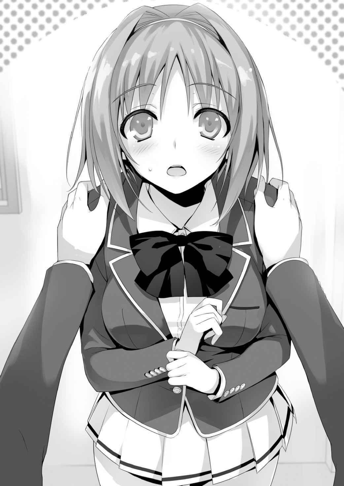
Esta chica, es demasiado linda... Parece que quería evitar que Ike, Sudou y los demás fueran expulsados.
— ¿Estás realmente bien con esto? Si no quieres, no quiero forzarte.
— Oh, lo siento. No me detuve porque no quiera ayudar. Más bien... estaba feliz—.
Kushida se apoyó contra la pared y dio una ligera patada en el suelo—. Es cruel echar a la gente por malas calificaciones. Después de que todos se hicieron amigos con grandes esfuerzos, ¿no es triste que tengamos que decir adiós?
Cuando Hirata-kun decidió iniciar un grupo de estudio, sentí gran admiración.
Pero Horikita-san ha estado observando sus alrededores mejor que yo. Después de todo ella vio a Sudou-kun y sus amigos. Parece que Horikita-san está empezando a ver a la clase como sus amigos. ¡Haré cualquier cosa para ayudar a todos!
Sosteniendo mi mano, Kushida me dio una sonrisa. ¡Uwa, ella es demasiado linda!
Pero no es una situación en la que debo estar feliz. Tratando de parecer normal, pretendo estar tranquilo.
— Entonces, confiaré en ti. Eres de gran ayuda.
No hay nadie que no se enamorara de ella después de ver su sonrisa.
— Oh, ¿pero también puedo pedir un favor? También quiero participar en el grupo de estudio.
— ¿Qué? ¿De verdad?
— Mmmm. También quiero estudiar con todos.
Todo funcionó como yo quería. Si Kushida está allí, el grupo de estudio probablemente sería reconfortado por su presencia. Sin embargo, puesto que Kushida tiene buenas calificaciones, ella no tiene ninguna razón de estar allí.
— Bueno, ¿cuándo empezamos?
— Planeamos empezar mañana, más o menos.
He añadido en mi mente “Horikita al menos”.
— ¿Es así? Entonces creo que tengo que hablar con todos hoy. Te llamaré más tarde, ¿de acuerdo?
— Oh, ¿debería decirte las direcciones de contacto de Sudou y de los demás?
— Está bien~. Ya tengo sus contactos. Las únicas direcciones de contacto que no tengo son Horikita-san y tú.
No lo sabía... quiero decir la segunda parte.
— ¿Ya están saliendo?
— ¿De dónde vino esa pregunta? Horikita y yo somos amigos... no, sólo vecinos.
— Se ha convertido en un gran rumor entre las chicas, ¿sabes? Horikita siempre está sola, ¿no? Pero sólo Ayanokouji-kun se lleva bien con ella. Después de todo, ustedes también comen juntos.
Ya veo, así que las chicas que nos vieron juntos han comenzado rumores sobre nosotros.
— Es una lástima, pero ese tipo de dulce historia entre Horikita y yo no existe.
— Entonces no hay problema, ¿verdad? Por favor, intercambia direcciones de contacto conmigo.
— Por supuesto.
Con eso, obtuve la dirección de contacto de otra chica.
4
A la medianoche, cuando estaba descansando en mi habitación, recibí un mensaje de texto. Era de Kushida.
“Yamauchi-kun e Ike-kun dijeron OK ~ (^ · ω · ^)”
— ¡Rápido!
Ike instantáneamente me rechazó agitando su mano cuando le pregunté. La presencia de una chica es claramente un gran factor con respecto a los chicos. Es como si tuvieran un poder infinito.
“Acabo de entrar en contacto con Sudou-kun también, y creo que él estará de acuerdo (^ ω ^)”
Recibí otro correo. Oh. A este ritmo, todo el mundo se presentará mañana.
Ante este desarrollo más rápido de lo esperado, me puse en contacto con Horikita con las noticias. Le envié un correo sobre cómo estaba trabajando con Kushida, que Ike y Yamauchi aceptaron venir, y cómo Kushida también estaría participando en el grupo de estudio.
— Bueno, es hora de tomar un baño.
Tan pronto como me levanté de mi cama, recibí una llamada de Horikita.
— ¿Hola?
— ...No entiendo tu mensaje.
— ¿Qué quieres decir con que no entiendes? ¿No es conciso y simple? Parece que los tres vendrán mañana.
— Eso no. La parte en la que dijiste que Kushida-san estaba ayudando. Es la primera vez que escucho eso.
— Le pregunté antes. Para alguien como Kushida que pone gran esfuerzo en ayudar a sus compañeros de clase, ella querría participar independientemente de si la invité o no. En resumen, Sudou, Ike y Yamauchi vienen. ¿De acuerdo?
— No recuerdo haber permitido eso. Ni siquiera reprobó.
— Oye, al meter a Kushida en nuestro plan, las posibilidades de éxito se incrementan. Acabo de tomar la medida más simple para aumentar la probabilidad de éxito.
— Aun así no me agrada. ¿No deberías haberlo hecho después de pedir mi aprobación?
— Sé que odias a alguien tan proactivo como Kushida. Sin embargo, es para asegurarse de que nadie reprueba. ¿O quieres tratar de reunir a todos los estudiantes que reprobaron tú misma?
— Eso es…
Parece que Horikita entendió que subir a Kushida a bordo era algo bueno.
Debido a que tiene demasiado orgullo en sí misma, le es difícil simplemente estar de acuerdo.
— Tampoco tenemos mucho tiempo hasta el examen. ¿No está bien?
Hablando de eso, Horikita no tiene mucho espacio para su plan de trabajo. Pero aun así, estaba atrapada en algo y no dijo nada. Permaneció en silencio durante un rato.
— Bien. No podemos hacer nada sin hacer un sacrificio. Sin embargo, Kushida-san solo ayudará a reunir a los estudiantes que reprobaron. No puedo aceptar que participe en el grupo de estudio.
— No, ¿por qué es eso? Esa fue su condición para ayudar. Estás siendo irrazonable.
— No la aceptaré participando en el grupo de estudio. Eso no cambiará.
— ¿Esto es sobre eso? ¿Estás tratando de vengarte de cuando te engañamos?
— Eso no tiene relación. Ella no reprobó en la prueba simulada. Tener gente adicional sólo resultará en confusión y esfuerzo extra.
Sus explicaciones son bastante razonables, pero no entiendo la razón de por qué se niega a permitir que Kushida se una al grupo de estudio.
— ¿Odias a Kushida?
— ¿No te sientes incómodo cuando estás junto a alguien que odias?
— ¿Huh?
No entendí lo que quería decir.
Kushida trató de entender y conocer a Horikita más que nadie, y trató de convertirse en su amiga.
Nunca pensé que Horikita de verdad odiara a Kushida.
— ¿Y si deciden no venir porque Kushida no viene?
— Lo siento, repasar el material del examen tarda más de lo que pensaba. Voy a terminar la llamada porque lleva mucho tiempo. Bien, buenas noches.
— ¡H-hey!
Rápidamente cortó la llamada. Un misántropo probablemente haría lo mismo. Sin embargo, para ascender a la clase A, es necesario comprometerse.
Conecté mi teléfono, lo puse sobre la mesa, y luego me acosté en mi cama.
Pensé en los días transcurridos desde la ceremonia de entrada.
— Productos defectuosos, ¿eh?
El primer día de clases, eso es lo que nos dijeron los senpais de segundo año.
En inglés, eso sería “Defective product”. (NT: En inglés en el original) Eso es lo que solían usar para ridiculizar a los estudiantes de la clase D. La impecable Horikita probablemente tiene algunos problemas también. Podría de alguna manera entender lo que decía hoy.
— Que debería hacer.
¿Debería intentar forzarla? Sin embargo, Horikita podría irse en el peor de los casos.
Si Horikita no enseñaba, el tiempo de todo el mundo se desperdiciaría.
Sintiéndome pesado, llamé al número de Kushida.
— Hola.
Al principio, podía oír el fuerte viento en el fondo. Sin embargo, se murió rápidamente.
— ¿Por casualidad, te estabas secando el pelo?
— Oh, ¿has oído eso? Acabo de terminar, así que está bien.
Kushida acaba de salir del baño, eh... espera, no es el momento de tener estos delirios.
— No, eh, tengo malas noticias... ¿Puedes hacer como si nunca te hubiera pedido que reunieras a los estudiantes reprobados?
— Um, ¿por qué?
Ella respondió después de una breve pausa. Parece que ella quiere saber la razón, en lugar de enojarse inmediatamente.
— Lo siento. No puedo hablar de ello en detalle. De todos modos, se puso un poco difícil.
— Con que es así... veo que Horikita-san realmente no me quiere.
No creí que lo impliqué en absoluto, pero parece que Kushida lo capto por el teléfono.
— No está relacionado con ella. Es mi error.
— Está bien si no intentas esconderlo~. No me enojaré. Pensé que ella me rechazaría porque parece que no me quiere. Pasó como pensé que lo haría.
Supongo que puedes llamarla intuición femenina.
— De todos modos, fue mi error pedirte que me ayudaras.
— No, no hay necesidad de que te disculpes. Pero… no creo que Horikita-san pueda reunir a Sudou y los demás por sí misma—. No podía negarlo—. Hey,
¿qué dijo Horikita-san? ¿Estaba contra de que reúna a los otros? ¿O estaba en contra de que participara en el grupo de estudio?
Lo entendió perfectamente, como si también estuviera escuchando la conversación.
— Lo último. Lo siento por estropear el estado de ánimo.
— Jajaja, sí. Sin embargo, no hay necesidad de que te disculpes. Ella tiene un aura de tipo “No te acerques a mí”. Así que esperaba que sucediera.
Aun así, eres muy perspicaz.
— Pero todos estuvieron de acuerdo en unirse porque dije que también participaría... Antes de invitarme, ¿no podrías haber mentido de que no podría participar? Si les dijeras ahora, probablemente todo el mundo odiaría a Horikita-san.
Me siento un poco asustado de Kushida. Ella entiende todo.
— ¿Puedes dejarme esto a mí?
— ¿Dejártelo?
— Mañana, llevaré a todos con Horikita-san. Por supuesto, yo también iré.
— Eso es-
— Está bien, ¿verdad? ¿O puedes resolver el problema? ¿Hay alguna manera de reunir a todos sin mí, o una manera de convencer a Horikita?
Es una lástima, pero eso es imposible.
— Entiendo. Te lo dejaré. Sin embargo, no sé qué va a pasar.
— Está bien. Después de todo, no serás responsable de nada de eso. Bueno, hasta mañana.
La llamada terminó. Nunca pensé que me cansaría más de lo que estaba después de la llamada telefónica con Horikita. Ella dijo que estaba bien, pero ¿lo estaba realmente?
Horikita insultará y se burlará de cualquier cosa con que ella no esté satisfecha, no importa de quién se trate. Está claro que esta precaria situación terminará en llamas.
Sintiéndome ansioso, me dirigí al baño.
Dejemos de pensar en mañana, sólo me deprimiré más.
No importa lo preocupado que esté, mañana vendrá y se irá. Las cosas funcionarán de alguna manera.
5
Horikita estaba taciturna por la mañana. Sería genial si lindamente inflara sus mejillas y lindamente golpeara el pecho de un chico mientras hacía una mueca.
Pero está completamente inexpresiva y silenciosa. Ni siquiera reconoce mi existencia.
Pero si le diera la espalda, podría sacar su compás. La escuela terminó.
— ¿Todos se reunieron para el grupo de estudio?
Las primeras palabras que me dijo fueron sobre el grupo de estudio. Habló de una manera que implicaba algo.
— Kushida los traerá. Me pregunto si participarán.
— Kushida los trae, eh. ¿Le dijiste debidamente que no puede participar?
Horikita se dirigió a la biblioteca con esas palabras confiadas. Cuando estaba a punto de salir del aula, miré a Kushida, quien me devolvió un lindo guiño.
Asegurando una esquina de una larga mesa cerca del fondo de la biblioteca, esperamos a los estudiantes.
— ¡Los traje~!
Kushida llegó a donde estábamos esperando. Detrás de ella estaba-
— Escuchamos sobre el grupo de estudio de Kushida-chan. No quiero que me expulsen tan rápido de la escuela. Por favor, cuida de nosotros.
Ike, Yamauchi y Sudou. Sin embargo, hubo un visitante inesperado. Un chico llamado Okitani.
— Okitani, ¿también reprobaste?
— Ah, eh, no. Estaba preocupado porque estaba justo en la frontera... ¿No puedo unirme? Es un poco difícil unirse al grupo de Hirata-kun.
Okitani me miró con las mejillas ligeramente rojas. Figura delgada, cabello azul y un peinado corto. Un chico débil ante las muchachas inmediatamente gritaría “¡Estoy enamorado!” Si no fuera un chico, sería peligroso.
— Está bien si Okitani-kun se une, ¿verdad?
Preguntó Kushida a Horikita. Después de todo, su puntuación fue un 39, por lo que es natural que esté preocupado.
— Si se trata de un estudiante preocupado por reprobar, entonces está bien. Pero tienes que ser diligente.
— O-ok.
Okitani se sentó felizmente. Kushida intentó sentarse a su lado, pero Horikita lo notó.
— Kushida-san. ¿Ayanokouji-kun no te lo dijo? No eres-
— Para ser honesta, también estoy preocupada por obtener malas notas.
— Tú... no obtuviste malas notas en esa última prueba.
— Bueno, eso fue suerte. Había un montón de preguntas de opción múltiple. Así que para la mitad de ellas, adiviné. En verdad, apenas he pasado.
Kushida se rascó suavemente la mejilla mientras decía “Ehehe”.
— Creo que estoy al mismo nivel que Okitani-kun, si no peor. Así que quiero participar en el grupo de estudio para evitar una mala nota. Está bien, ¿verdad?
No pude ocultar mi sorpresa ante el audaz e inesperado plan de Kushida. Después de confirmar que Okitani podía unirse, ella cambió la situación. Horikita no pudo evitar que se uniera.
— Bien.
— ¡Gracias!
Con una sonrisa Kushida hizo una reverencia a Horikita. Traer a Okitani era probablemente parte de su plan. Lo utilizó como justificación para unirse.
— Debajo de 32 es una calificación reprobatoria. Entonces ¿32 puntos también reprueba?
— Si es “debajo”, entonces 32 puntos es seguro. Sudou, ¿puedes incluso hacer eso?
Incluso Ike está preocupado por Sudou. Por supuesto, a estos tipos les gustaría saber si es “por debajo” o “hasta”.
— De todos modos, no importa. Mi objetivo es hacer que todos aquí obtengan al menos 50 puntos.
— Geh, ¿no es demasiado difícil para nosotros?
— Es peligroso apuntar sólo al mínimo. Ustedes, que no están ni siquiera cerca, son realmente preocupantes.
Ante el argumento de Horikita, el grupo de reprobados aceptó a regañadientes.
— Pude resumir la mayoría de los temas que serán cubiertos en este examen.
Planeo cubrir completamente estos temas en las próximas dos semanas. Si tienen alguna pregunta que no sepan, pregúntenme.
— Oye, ni siquiera entiendo el primer problema.
Sudou frunció el ceño a Horikita. También leí la pregunta.
— A, B y C tienen 2 150 yenes colectivamente. A tiene 120 yenes más que B.
Después de que C da a B 2/5 de su dinero, B ahora tiene 220 yenes más que A.
¿Cuánto dinero tenía A originalmente?
Un problema que implica sistema de ecuaciones. Para un estudiante de preparatoria, debe ser un punto gratis.
— Intenta usar tu cerebro. Si renuncias desde el principio, no llegarás a ninguna parte.
— Incluso si dices eso. Ni siquiera sé estudiar.
— Todos los demás en la escuela pasaron.
La escuela no decide las admisiones basadas únicamente en puntajes. Sudou fue aceptado probablemente debido a su alta capacidad física. Si piensas en ello, ¿no será echado de inmediato por sus malas calificaciones?
— Uf, yo tampoco sé.
Ike también se quedó perplejo mientras se rascaba la cabeza.
— Okitani-kun, ¿sabes cómo hacer esta pregunta?
— Um... A + B + C es igual a 2 150 yenes, y A es igual a B + 120.
Okitani, que de alguna manera evitó reprobar la última prueba, comenzó a escribir las ecuaciones.
Kushida estaba mirando por encima del hombro.
— Sí, sí, eso es correcto, eso es correcto. ¿Y entonces?
Kushida ciertamente es audaz. A pesar de que dijo que estaba preocupada por reprobar, estaba enseñando Okitani.
— Honestamente hablando, este problema puede ser resuelto fácilmente por estudiantes de primer y segundo año de secundaria. Si fallas aquí, no podrás hacer nada.
— ¿Entonces somos estudiantes de primaria?
— Como dijo Horikita-san, es bastante malo si no puedes resolver estos problemas.
Los primeros problemas de matemáticas en la prueba fueron así de difíciles, pero incluso yo no sabía cómo hacer el último problema.
— Puedo enseñarte cómo hacer sistemas de ecuaciones si quieres.
Horikita tomó su pluma sin vacilar. Es lamentable, pero los únicos que entendieron cómo hacer el problema fueron Kushida y Okitani.
— En primer lugar, ¿qué es esta cosa llamada “sistema de ecuaciones”?
— ¿En serio?
Wow, estos chicos realmente viven sin estudiar en absoluto. Sudou arrojó su lápiz mecánico a su escritorio.
— No, detente. Esto no va a funcionar.
Antes de empezar, Sudou ya se rindió.
Mirando su lamentable estado, Horikita estaba furiosa.
— Chicos, esperen. Vamos a intentar lo mejor posible. Si aprenden a resolver estos problemas, pueden aplicar sus conocimientos en las preguntas del examen. ¿De acuerdo?
— Bueno, si Kushida-chan lo dice, haremos todo lo posible, pero... si Kushida-chan nos enseña, probablemente trabajaría aún más duro.
— U-um...
Horikita permaneció en silencio cuando Kushida estaba a punto de preguntarle. Era incómodo que no dijera nada. Sin embargo, si ella permanecía en silencio, los otros podrían dejar de estudiar. Kushida se decidió y cogió el lápiz mecánico.
— Esto es, como dijo Horikita-san, un problema que utiliza sistemas de ecuaciones.
Escribiré lo que dije como expresiones.
Al decir eso, anotó las tres ecuaciones. Parece que están haciendo todo lo posible, pero incluso si ella escribió las ecuaciones y se las mostró, probablemente no entienden. Más bien que un grupo de estudio, esto es más como detención. No entienden su explicación.
— Así que la respuesta es 710 yenes. ¿Lo entienden?— Sintiéndose satisfecha, Kushida sonrió y miró a Sudou—. Uh, entonces ¿pueden responder esta pregunta? ¿Por qué?
— Uu.
Ella finalmente se dio cuenta. No entendieron su explicación.
— No estoy tratando de rechazarlos, pero ustedes son demasiado estúpidos e incompetentes—. La silenciosa Horikita habló—. Tengo miedo del futuro si no pueden resolver este problema.
— Y qué. Esto no tiene nada que ver contigo.
Sintiéndose irritado por las palabras de Horikita, Sudou golpeó el escritorio.
— No tiene nada que ver conmigo. No importa cuánto sufras, no me afecta. Es sólo que siento lástima por ti. Supongo que he estado huyendo de cosas dolorosas toda mi vida.
— Di lo que quieres decir con claridad. De todos modos estudiar es inútil para el futuro.
— ¿Estudiar es inútil para el futuro? Un argumento interesante. ¿Qué te hace decir eso?
— Incluso si no sé cómo resolver este tipo de ecuación, no tendré ningún problema.
Estudiar es innecesario. En lugar de apegarse a un libro de texto, el objetivo de convertirse en un jugador profesional de baloncesto es mucho más útil para el futuro.
— Eso está mal. Si aprendes a resolver ese problema, toda su vida cambiará. En otras palabras, si estudias, tendrás menos problemas. Es lo mismo para el baloncesto. Me pregunto si has estado jugando al baloncesto con tus propias reglas. ¿Huyes de cosas difíciles como haces mientras estudias? Así como se ve, no parece que practiques seriamente. Ese es el tipo de personalidad que tienes. Si yo fuera el asesor del club, no te dejaría ser titular.
— ¡Tsu!
Sudou se levantó y agarró a Horikita por el cuello.
— ¡Sudou-kun!
Incluso más rápido de lo que podía reaccionar, Kushida se levantó y agarró el brazo de Sudou.
Horikita alzó las cejas y se quedó tranquila.
— No tengo interés en ti, pero puedo entender qué tipo de persona eres. ¿Quieres convertirte en un jugador profesional? ¿Crees que ese tipo de deseo infantil puede convertirse en realidad en esta sociedad? Una persona que no se compromete como tú y que se rinde fácilmente nunca podrá convertirse en profesional. Además, incluso si te conviertes en profesional, no creo que seas capaz de obtener un ingreso anual suficiente. Eres un tonto por verte en un trabajo tan idealizado.
— ¡Tú!
Está claro que Sudou está al borde de perder el control. Si levanta el puño, también tendré que saltar y retenerlo.
— ¿Puedes renunciar a estudiar, no, a la escuela? Entonces puedes renunciar a tus sueños de convertirte en profesional y vivir una vida lamentable haciendo trabajos de medio tiempo.
— Ha... eso está bien. Tiro la toalla. No es porque sea demasiado difícil para mí.
Tomé un día libre de las actividades de mi club, pero fue una completa pérdida de tiempo. ¡Adiós!
— Estás diciendo cosas extrañas. Es difícil estudiar.
Horikita le dio un último golpe. Si Kushida no estuviera allí, Sudou probablemente habría golpeado a Horikita. Sin esconder su irritación, metió el libro en la mochila.
— Oye, ¿está bien?
— No importa. Para alguien que es indiferente... es inútil preocuparse por alguien así. Aunque la expulsión está en juego. No tiene ni una pizca de determinación para permanecer en la escuela.
— Pensé que era extraño que alguien como tú que no tiene amigos nos invitara a un grupo de estudio. En el mejor de los casos, nos trajiste aquí para llamarnos estúpidos. Si no fueras una chica, te golpearía.
— Simplemente no tienes el coraje de golpearme, ¿verdad? No utilices mi género como una razón.
El grupo de estudio comenzó hace unos momentos, pero ya se estaba desmoronando.
— También renuncio. A pesar de que una pequeña parte es porque no puedo estudiar... la mayoría es porque estoy irritado. Horikita-san puede ser inteligente, pero eso no significa que esté por encima de nosotros.
Perdiendo su paciencia, Ike también se rindió.
— No me importa si abandonas la escuela, así que haz lo que quieras.
— Bueno, voy a estudiar toda la noche anterior al examen.
— Interesante. ¿No estás aquí porque no puedes estudiar?
— Tsu...
Incluso para el normalmente optimista Ike, las palabras espinosas de Horikita lo pusieron rígido. Y entonces Yamauchi también empezó a hacer las maletas.
Finalmente, el preocupado Okitani también se puso de pie, incapaz de ir contra el flujo.
— Chicos... ¿Está realmente bien?
— Vamos, Okitani.
Ike dejó la biblioteca con el vacilante Okitani.
Los únicos que quedaban eran Kushida y yo. Incluso Kushida probablemente se iría pronto.
— Horikita-san, ¿por qué no detuviste a nadie?
— Estaba equivocada. Incluso si conseguía que estos tipos apenas pasaran, esta situación se repetiría. Y luego se rendirían de nuevo. Finalmente me di cuenta de que esto era una pérdida de tiempo y esfuerzo.
— ¿Qué quieres decir con eso?
— Estoy diciendo que es bueno tirar toda la basura innecesaria ahora.
Si los estudiantes con calificaciones bajas no estuvieran aquí, entonces no se necesitaría trabajo para enseñarles, y el promedio también aumentaría. Llegó a esa conclusión.
— Así que eso es... H-hey, Ayanokouji-kun. ¿También piensas lo mismo?
— Si Horikita concluyó eso, ¿entonces no está bien?
— A-ayanokouji-kun, ¿crees eso?
— Bueno, no quiero que renuncien, pero como no soy yo quien les enseña, no puedo hacer nada al respecto. Al final, tengo una opinión similar a Horikita.
— Ya veo.
Con una expresión oscura, Kushida cogió su bolsa y se puso de pie.
— Voy a hacer algo al respecto. No quiero que todos se separen tan rápidamente.
— Kushida-san. ¿Son tus verdaderas intenciones?
— ¿Es tan malo? No puedo abandonar Sudou-kun, Ike-kun y Yamauchi-kun.
— No importa si dices o no tus verdaderas intenciones. No creo que realmente quieras ayudarlos.
— ¿De qué estás hablando? No sé a qué te refieres. ¿Por qué no vacilas en hacer enemigos con tus frías palabras? Eso es... Eso es triste.
Kushida bajó la cabeza.
— Nos vemos mañana.
Después de esas breves palabras, Kushida también se fue. En un instante, estábamos los dos solos otra vez. La biblioteca estaba completamente en silencio.
— Eso fue preocupante. Con eso, el grupo de estudio ha terminado.
— Así parece.
El silencio de la biblioteca parecía ominoso.
— Sólo tú me entendiste. Supongo que eres un poco mejor que esos idiotas sin valor. Si necesitas que te enseñe algo ahora mismo, puedo hacerlo.
— Voy a pasar.
— ¿Volverás a casa?
— Sudou y los demás se dirigen hacia allá. Voy a charlar con ellos.
— No vale la pena hablar con personas que se irán pronto como ellos.
— Simplemente estoy tratando de hablar con mis amigos.
— Qué egoísta. Llamándoles amigos mientras te sientas y lo ves ser expulsados.
Desde mi punto de vista, eso parece lo más cruel que puedes hacer.
Bueno, no puedo negarlo. Ella no dijo nada malo.
Al final, estudiar es todo acerca de lo bien que alguien puede motivarse a sí mismo.
— No voy a decir que estás equivocada. También entiendo por qué llamarías a alguien que no le gusta estudiar como Sudou estúpido. Pero Horikita, ¿no es importante también imaginar las circunstancias de Sudou? Si sólo pretendía convertirse en un profesional, entonces no hay mucho para él en esta escuela.
¿No quieres ver por qué escogió esta escuela?
— No estoy interesada.
Desechando mis palabras, Horikita continuó mirando su libro de texto.
6
Salí de la biblioteca y perseguí a Kushida. Quería darle las gracias y disculparme con ella por el grupo de estudio. Además, quiero llevarme bien con las chicas lindas,
¿sabes?
Sacando mi teléfono con entusiasmo, busqué a través de mi libreta de direcciones el nombre de Kushida. Es sólo mi segunda vez, así que estoy nervioso de contactarla.
Escuché el teléfono sonar dos, tres veces.
Sin embargo, no hay ninguna señal de que ella conteste. ¿No se dio cuenta? ¿O me está ignorando?
No estaba a la vista, así que corrí por los alrededores, buscándola. Dentro del edificio de la escuela, vi a alguien que se parecía a Kushida por la espalda. Era alrededor de las 6, así que no había nadie más que los miembros de los clubs. Bueno, también existe la posibilidad de que Kushida se encuentre con una de sus amigas que está en un club.
La perseguiré; si se encuentra con alguien, puedo hablar con ella después. Es hora de entrar.
Cogiendo mis zapatos de interior del estante, me dirigí hacia el pasillo, pero no vi a Kushida. ¿La perdí de vista? Pensé eso, pero oí los débiles sonidos de los zapatos de alguien.
Llegué a la escalera que conducía al segundo piso. Todavía siguiéndola. Escuché los pasos por encima de mí, yendo al tercer piso. El siguiente piso es la azotea, ¿no? Está abierto durante la hora del almuerzo, pero creo que está cerrada después de la escuela. Sintiendo curiosidad, subí las escaleras. Oculté mi presencia por si se encontraba con alguien. Y luego me detuve en medio de las escaleras.
Podía ver el contorno de alguien allá arriba.
Apoyado contra el pasamanos, eché un vistazo a través de la rendija de la puerta.
Mientras miraba a través de la abertura, vi la figura de Kushida. No había nadie más.
¿Está esperando a alguien aquí?
Si está esperando a alguien en un lugar desierto... quizás, ¿Kushida se encuentra con su novio? En ese caso, existe la posibilidad de que me acorralen por ambos lados.
Mientras me preguntaba si debía o no irme, Kushida dejó su mochila en el suelo.
Y entonces-
— Ah... tan molesto.
Su voz era tan baja que no pensé que fuera Kushida.
— Es realmente molesto, irritante. Estaría bien si se muriera.
Estaba murmurando consigo misma como si estuviera diciendo algún tipo de hechizo o maldición.
— Odio a esas chicas engreídas que piensan que son lindas. ¿Por qué es tan perra?
Una chica como ella no puede enseñarme cómo estudiar.
¿Kushida está molesta con... Horikita?
— Ah... lo peor. Ella realmente es lo peor, lo peor, lo peor. ¡Horikita es molesta, molesta, tan molesta!
Siento que la imagen de la chica más popular de la clase ha sido hecha cenizas. Era una figura que ella no quería que fuera vista por nadie más. Mi cerebro me dijo que era peligroso quedarse aquí.
Sin embargo, surgió una pregunta. Independientemente del hecho de que estaba ocultando sus verdaderos sentimientos, ¿por qué estaba de acuerdo en ayudarme si odia a Horikita? Pensé que sabría lo suficiente sobre la personalidad y el carácter de Horikita. Ella podría haberse rehusado a ayudar, dejar el grupo de estudio a Horikita, o haber hecho otras innumerables acciones para no meterse en este asunto.
¿Por qué se obligaría a participar en el grupo de estudio? ¿Quería llevarse bien con Horikita? ¿O quería acercarse a alguien que participaba?
Nada de eso tiene sentido. Con tanto estrés, si no hay una razón diferente de por qué participó, no puedo explicarlo.
No... Podría haber mostrado signos de esto desde el principio.
Nunca pensé mucho en ello, pero mirando cómo se encuentra ahora, tuve una idea.
Por casualidad, están Kushida y Horikita-
De todos modos, debería salir de aquí. Kushida probablemente no querría que nadie más la viera así. Ocultando mi presencia, traté de marcharme rápidamente.
¡Thump!
En la escuela al atardecer, el sonido al patear la puerta era más fuerte de lo que pensaba. Inesperadamente fuerte. Kushida, escuchando el sonido, inmediatamente se tensó y dejó de respirar. Como si alguien la llamara, Kushida se dio la vuelta y me vio.
— ¿Qué estás haciendo aquí?
Después de un breve silencio, Kushida preguntó con voz fría.
— Me perdí, mi error, lo siento. Me iré ahora.
Kushida seguía mirándome, viendo a través de mi obvia mentira. Tenía una mirada intensa que nunca antes había visto.
— ¿Escuchaste?
— ¿Me creerías si dijera que no?
— Ya veo…
Kushida bajó rápidamente las escaleras. Puso su antebrazo izquierdo contra mi cuello y me empujó contra la pared.
Su tono de voz y comportamiento no era el de la Kushida que yo conocía.
Kushida tenía ahora un aspecto aterrador que no podía evitar comparar con el de Horikita.
— Lo que escuchaste ahora... si hablas una palabra de ello con alguien, no te perdonaré.
Eso sonaba como una amenaza.
— ¿Y si lo hiciera?
— Entonces esparciré el rumor de que me has violado aquí.
— Eso es un cargo falso, ¿sabes?
— Está bien, ya que no es una acusación falsa.
Hubo un fuerte impacto en sus palabras.
Kushida entonces agarró mi muñeca izquierda y lentamente abrió la palma de mi mano.
Me sostuvo el dorso de la mano y puso mi palma en su pecho.
La sensación de sus pechos suaves se transmitía por toda mi palma.
— ¿Qué estás haciendo?
Ante su inesperado comportamiento, traté de alejarme, pero ella empujó mi mano.
— Tus huellas dactilares están en mi ropa. Hay pruebas. Estoy siendo seria.
¿Entiendes?
— Entiendo. Lo tengo, así que suelta mi mano.
— Voy a dejar este uniforme en mi habitación sin lavarlo. Si le cuentas a alguien, voy a darle esto a la policía.
Durante un rato, miré a Kushida mientras ella mantenía mi mano sobre sus pechos.
— No lo olvides.
Asegurándose de que entendí, Kushida se alejó de mí.
De alguna manera no podía recordar la sensación aunque era la primera vez que tocaba los pechos de una chica.
— Oye, Kushida. ¿Cuál es el tu yo “real”?
— Eso no tiene nada que ver contigo."
— Cierto... Sin embargo, viéndote me hiciste dar cuenta de algo. Si odias a Horikita, entonces no hay necesidad de involucrarte con ella, ¿no?
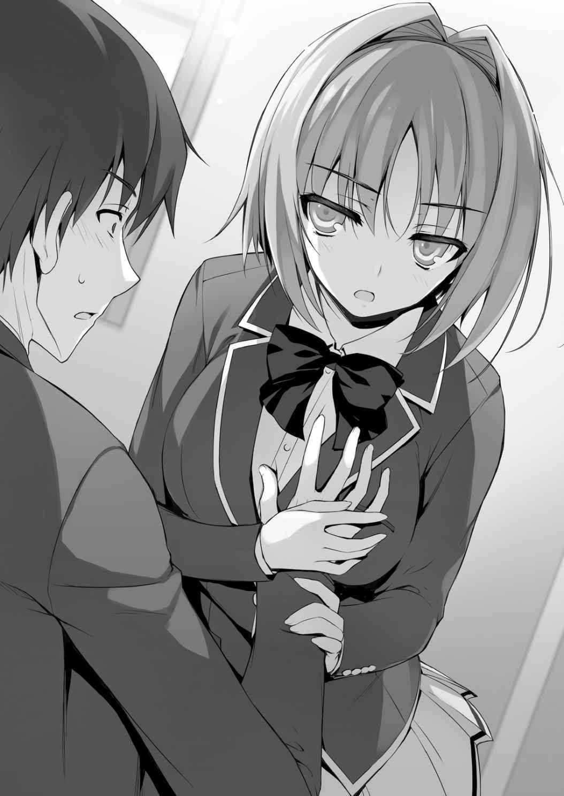
No quise preguntar eso. Sabía que probablemente no contestaría. Pero tenía curiosidad de saber por qué había ido tan lejos con ella.
— ¿Es malo tratar de ser querida por todos? ¿Entiendes lo difícil que es eso? No lo haces, ¿verdad?
— No tengo muchos amigos, así que no, no puedo decir que lo haga.
Desde el primer día, Kushida sin duda hizo un esfuerzo para hablar, intercambiar direcciones de contacto e invitar a una chica pesimista y negativa. Cualquiera puede imaginar cuánto tiempo consumiría y lo duro que sería.
— Como Horikita... Quería que por lo menos pareciera que me llevaba bien con Horikita-san.
— Pero estabas estresada, eh.
— Sí. Esa es mi forma de vida. De esa manera, puedo sentir mi verdadero significado.
Ella respondió sin vacilar. Kushida tiene sentimientos y reglas que sólo ella misma sabe. Es lo que estaba diciendo. Siguiendo sus propias reglas, intentó frenéticamente una y otra vez llevarse bien con Horikita.
— Te estoy diciendo esto por las circunstancias, pero realmente odio a los chicos melancólicos y simples como tú.
Mi imagen de la linda Kushida se ha roto, pero no estoy realmente sorprendido.
Después de todo, la gente tiende a tener imágenes públicas y privadas.
Sin embargo, la respuesta de Kushida parecía que tenía tanto verdades como mentiras.
— Esta es sólo mi intuición, pero ¿ustedes eran conocidas? Antes de venir a esta escuela.
Cuando dije eso, el hombro de Kushida se estremeció por una fracción de segundo.
— Qué dem-... No sé a qué te refieres. ¿Horikita-san dijo algo sobre mí?
— No, pensé que era la primera vez que la conocías. Pero es gracioso.
— ¿Gracioso?
Recordé la primera vez que Kushida habló conmigo.
— Cuando me presenté, instantáneamente recordaste mi nombre, ¿no?
Kushida preguntó:
— ¿Y qué?
— ¿Dónde escuchaste el nombre de Horikita? En ese momento, ella no le había dicho su nombre a nadie. El único que sabía era Sudou, pero dudo que conocieras a Sudou—. En otras palabras, ella no debería haber tenido la oportunidad de saber su nombre—. Además, probablemente te acercaste a mí para que pudieras vigilarla, ¿verdad?
— Cállate. Me molesta escucharte hablar. Sólo quiero decir una cosa. ¿Juras que no dirás ni una palabra de lo que has visto aquí?
— Lo prometo. Incluso si le dijera a alguien, nadie me creería, ¿verdad?
La clase realmente confía en Kushida. Una diferencia como el cielo y la tierra entre nosotros.
— Okay. Te creo.
Aunque no cambió su expresión, Kushida cerró los ojos y exhaló profundamente.
— ¿Hay alguien que me crea?
Accidentalmente dejé escapar esas palabras.
— Horikita-san es un poco rara, ¿verdad?
— Bueno, diría que es muy rara.
— No la afecta nadie, ni se involucra con otras personas. Exactamente lo contrario de mí.
Kushida y Horikita son verdaderamente polos opuestos.
— Sabes, ella sólo se abre contigo.
— Espera. Permíteme hacer una revisión rápida. Ella no se abre. Absolutamente no.
— Probablemente. Aun así, eres en quien más confía. De todos los que conozco, ella tiene la mayor confianza en sí misma y la mayor cautela hacia los demás.
No confiaría en nadie que fuera inútil y estúpido.
— Estás diciendo que ella tiene un buen ojo para la gente, ¿verdad?
— Esa es la razón por la que dije que te creía. Después de todo, eres bastante apático con los demás, ¿verdad?
No recuerdo haberle mostrado a Kushida ese tipo de comportamiento, pero parecía tener confianza en sus palabras.
— No es como si fuera tan extraño decirlo. No mostraste ninguna señal de que le cedieras tu asiento a la anciana, ¿no?
Ya veo, eso es de lo que está hablando. Nos vio en el autobús. Y entonces se dio cuenta de que ni siquiera pensábamos en ceder nuestros asientos.
— Si me crees, entonces no difundas rumores sin sentido.
— Si antes tuvieras tanta confianza, no hubieras tenido la oportunidad de sentir mis pechos.
— Eso… yo estaba realmente confundido. Me asusté—. Su expresión facial se suavizó y cambió a una de impaciencia—. Entonces, ¿puedo pensar en ti como una perra que permitiría a los chicos tocar sus pechos sin ninguna vacilación?
Pateó mi muslo con todas sus fuerzas. Aterrado, me agarré a la barandilla.
— ¡Peligroso! ¡Podría haberme lastimado!
— ¡Eso es porque dijiste algo estúpido!
Con un rostro enrojecido (de rabia, no de timidez), Kushida me respondió.
— Oye, espera un poco.
Incliné un poco la cabeza.
Subiendo otra vez las escaleras, Kushida cogió rápidamente su mochila y volvió. Ella tenía una amplia sonrisa en su rostro.
— ¿Volvemos juntos?
— S-seguro.
Me pregunté si esto era un mal sueño ya que su actitud hizo un giro completo de 180°.
Era la Kushida habitual. Al final, no podía decir cuál era la verdadera.
7
Me pregunto cómo empezará la clase D a partir de mañana. Me sentí como si estuviera viendo algún tipo de programa de variedades. Apareció un mensaje del chat de grupo.
Leí, “Satou se ha unido al grupo”. Ella es una de las chicas hiperactivas en nuestra clase.
— Yahoo~ Ike-kun me invitó mientras hablaba antes con él.
Sin tener nada que decir, no hice nada y seguí mirando la charla.
— He oído lo que pasó hoy~. ¿No es Horikita realmente molesta?
— Estaba enojado con ella. Sudou también estaba muy enojado con ella. Parecía que la golpearía.
— Si la veo mañana, voy a golpearla. Estaba realmente enojado hoy.
— Jajajaja, se convertirá en un gran problema si la golpeas, LOL, eso es exagerado.
— Hey, ya que estamos en el tema. ¿Quieres ignorarla a partir de mañana?
— Nah, siempre la hemos ignorado (jajaja).
— Necesito regresársela de alguna manera. Podemos intimidarla y hacerla llorar.
Como esconder sus zapatos.
— Me reiría si fuera un niño, pero realmente quiero verla sufrir.
De alguna manera, Horikita se convirtió en el tema principal de la charla del grupo.
— Ayanakouji-kun, ¿quieres unirte también? A su acoso, jaja.
— No, se ha enamorado demasiado de ella.
— Hey, ¿de qué lado estás?
Era bastante obvio que todo el mundo se irritaría con Horikita. Sus experiencias con ella siempre han sido negativas. Sin embargo, no puedo estar de acuerdo con golpearla o intimidarla. Ambas cosas estarían igualmente desprovistas de buenas intenciones.
— Estás leyendo esto, ¿verdad? Hey, te hice una pregunta: ¿de qué lado estás?
— No estoy del lado de nadie. Realmente no los detendré.
— Mantenerse neutral. La respuesta más astuta posible, lol.
— Puedes pensar en ello como quieras, pero si lo piensas, es tu derrota. Si la escuela sabe de este asunto, se convertirá en problema para ti. Solo ten eso en cuenta.
— ¿Estás tratando de protegerla? Jaja.
Debido a que no puedo ver sus caras en el chat, los hace más agresivos que de costumbre. Si Ike estuviera delante de mí, probablemente no habría dicho esas palabras.
Sin embargo, todo el mundo quiere una sensación de seguridad y solidaridad usando a Horikita.
Sería una pérdida de tiempo si continuara charlando. Es hora de terminar esta conversación.
— Si Kushida supiera esto, te odiaría. Jajaja.
Después de enviar ese mensaje, cerré mi teléfono. Sonó, pero lo dejé en paz.
Probablemente no harán nada estúpido. Satou no haría nada estúpido sin la cooperación de los demás.
Moviéndome a un extremo de la habitación, abrí la ventana. Podía oír los insectos de los árboles cercanos. ¿Son los Kubikirigisu los que hacen ese ruido? La brisa nocturna
sacudió la ventana de un lado al otro. (NT: El traductor no supo el nombre del insecto en inglés, así que lo dejó en japonés).
Conocí a Horikita el primer día de escuela, me pusieron en la misma clase, y obtuve el asiento a su lado. Me hice amigo de Sudou e Ike. Además, caí en la trampa de la escuela y nuestra clase fue catalogada como la peor. Horikita, que trató de arreglar nuestra situación, se ganó la ira de los demás estudiantes por su personalidad.
Soy el más cercano a esta situación, pero en su lugar siento que estoy flotando.
No, esa es una mala elección de palabras. No es una sensación cómoda. Sin embargo, siento que estoy observando desde el exterior. Como no sentía la misma urgencia que Sudou y los demás, pensé que la situación actual no se relacionaba conmigo y en su lugar la ignoraba.
— Sólo un tonto no usaría el poder que tiene.
No quería recordar sus palabras, pero estaban adheridas a mi cabeza.
— Un tonto... ¿Me pregunto si eso es lo que soy?
Cerrando la ventana, oí una fuerte risa que venía de la televisión.
8
Parecía que no podía dormir, así que me levanté y salí de mi habitación.
En el vestíbulo, compré un poco de jugo de la máquina expendedora y volví al ascensor.
— ¿Hmm?
El ascensor estaba en el 7o piso. Sintiendo curiosidad, miré el monitor CCTV del interior del ascensor. Era Horikita con su uniforme escolar.
— Bueno, no hay necesidad de ocultarme, pero...
No quería enfrentarme con ella, así que me escondí detrás de la máquina expendedora. El ascensor llegó al primer piso.
Mientras era cautelosa con su entorno, Horikita salió del edificio. Después de que desapareció en la oscuridad, la seguí.
Sin embargo, involuntariamente me oculté de nuevo después de girar la esquina.
Horikita dejó de moverse. Había la figura de otra persona.
— Suzune. No pensé que me seguirías hasta aquí.
¿Se fue a esta hora para reunirse con un chico?
— Mou, soy diferente de la inútil yo que conoces, Nii-san. He venido aquí para alcanzarte.
— Alcanzarme, ¿eh?
¿Nii-san? No podía ver a la persona con la que estaba hablando, pero parece que es el hermano mayor de Horikita.
— Escuché que estás en la clase D, parece que nada ha cambiado en los últimos 3
años. Debido a que siempre has estado mirando mi espalda, nunca has sido capaz de ver tus propios defectos. Elegir venir a esta escuela fue otro de tus errores.
— Eso... eso no es cierto. Voy a subir a la clase A. Y luego...
— Eso es imposible. Nunca llegarás a la clase A. Más bien, tu clase se desmoronará antes de eso. Esta escuela no es tan fácil como crees que es.
— Yo definitivamente, definitivamente alcanzaré la clase A.
— Ya dije que es imposible. Eres una hermana poco razonable.
El hermano mayor de Horikita dio un paso adelante. Desde mi escondite, pude ver su forma más claramente.
Era el presidente del consejo estudiantil.
No había emoción en su expresión, como si estuviera mirando una existencia que no le interesaba en absoluto.
Agarró la muñeca de su hermana menor y la empujó contra la pared.
— No importa cuánto te evité, sigues siendo mi hermana menor. Si la gente comienza a saber de ti, soy yo el será deshonrado. Deja esta escuela inmediatamente.
— N-no... ughh. Lo haré, ¡absolutamente subiré a la clase A!
— Necia, de verdad. ¿Quieres revivir las dolorosas experiencias del pasado?
— Nii-san, yo lo…
— No tienes ni el poder ni las cualidades para apuntar a la clase A. Entiende eso.
El cuerpo de Horikita se acercó, como si él estuviera a punto de tomar acción. La situación parece peligrosa.
Resignándome a su ira, salí de mi escondite y me acerqué al hermano mayor.
Antes de darme cuenta, agarré su brazo derecho.
— ¿Qué? ¿Quién eres?
Mirando su propio brazo, me miró con un brillo agudo en los ojos.
— ¿¡A-ayanokouji-kun!?
— Tú, estabas tratando de arrojarla al suelo, ¿verdad? Es concreto, sabes. El hecho de que son hermanos no significa que puedas hacer lo que quieras.
— No es admirable escuchar a escondidas.
— Solo suelta su mano.
— Eso es lo que debería estar diciendo.
El lugar estaba en silencio mientras nos miramos.
— Detente, Ayanokouji-kun...
Ella lo dijo con una voz tensa. Nunca la había visto así.
De mala gana, solté su brazo. En ese momento, apuntó hacia mi cara con un rápido revés.
Sintiendo peligro, instintivamente me incliné hacia atrás. Un ataque desagradable con un cuerpo delgado. Además, apuntó a mis signos vitales con una fuerte patada.
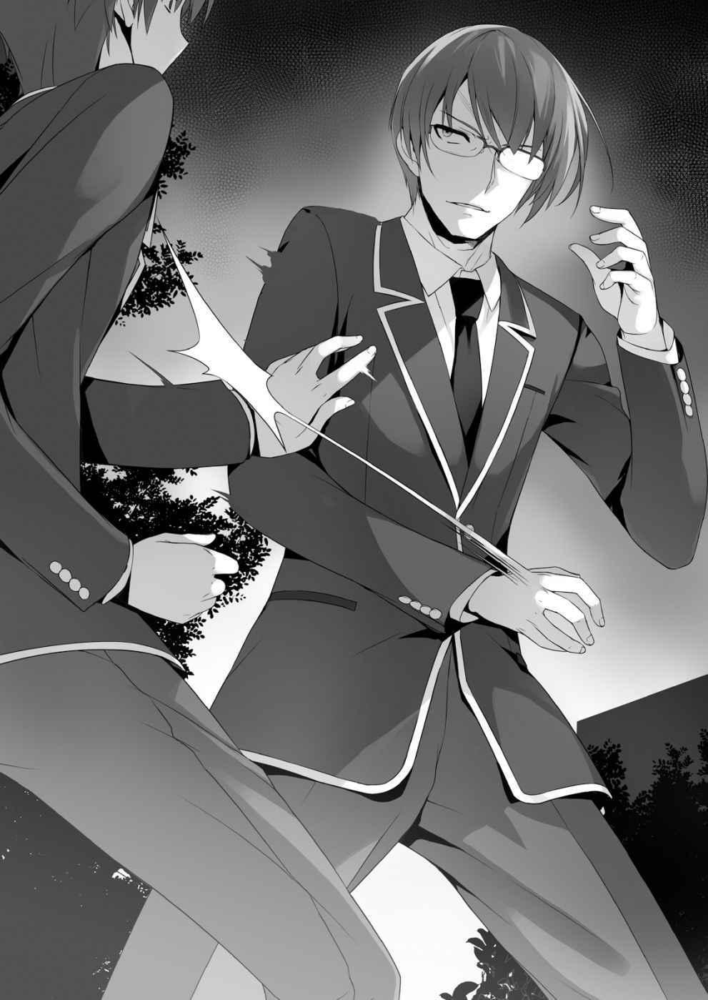
— ¡Ha!
Comprendí que tenía poder como para hacerme perder la conciencia en un solo golpe.
Con una mirada confundida, exhaló y extendió su brazo derecho hacia mí.
Si le cogía la mano, probablemente me tiraría al suelo. En su lugar, le di un golpe en el brazo con la mano izquierda.
— Buenos reflejos. No pensé que evitarías cada uno. También entendiste lo que estaba tratando de hacer. ¿Te enseñaron de alguna manera?
Finalmente deteniendo sus ataques, me preguntó.
— Sí, toqué piano e hice caligrafía. En la primaria, incluso conseguí el campeonato en un concurso de música.
— ¿También eres de la clase D? Qué muchacho tan único. Suzune.
Soltando el brazo de Horikita, lentamente me miró de frente.
— Suzune, ¿tienes un amigo? Estoy francamente sorprendido.
— Él es... él no es mi amigo. Sólo es un compañero de clase.
Miró a su hermano mientras negaba esas palabras.
— Como siempre, estás confundiendo la soledad con el aislamiento. Y tú, Ayanokouji. Contigo, parece que las cosas se van a poner interesantes.
Pasando a mi lado, desapareció en la noche. El confiado presidente del consejo estudiantil. Parece que Horikita estaba actuando extraña porque se encontró a su hermano.
— Voy a llegar a la clase A, incluso si muero. Esa es la única manera.
Después de que él se fuera, la noche fue envuelta en silencio. Horikita se sentó contra la pared, con la cabeza colgando de vergüenza. Me pregunto si hice algo innecesario.
Cuando me volví para volver a los dormitorios, Horikita me llamó.
— ¿Has oído todo? ¿O fue coincidencia?
— No, fue como 50% suerte. Te vi mientras iba a comprar jugo a la máquina expendedora. Te seguí simplemente porque tenía curiosidad. Sin embargo, realmente no quería entrometerme.
Horikita volvió a hundirse en silencio.
— Tu hermano mayor es muy fuerte. No dudó en atacar.
— Él es... 5to dan en karate y 4to dan en aikido.
— Oho, así que él es tan fuerte. Si no hubiera retrocedido, habría sido un desastre.
— Ayanokouji-kun, también haces algo, ¿verdad? Tú también eres poseedor de un rango.
— Ya lo dije, ¿no? Tocaba el piano y hacía ceremonias de té.
— Antes has dicho caligrafía.
— También hice la caligrafía.
— Obtuviste intencionalmente puntuaciones bajas en tu examen, y dices que tocaste piano e hiciste caligrafía. Todavía no te entiendo muy bien.
— Conseguir esos resultados fue sólo una coincidencia, y realmente toqué piano e hice ceremonias de té y caligrafía.
Si hubiera un piano aquí, podría tocar al menos Fur Elise.
— Te dejé ver un lado extraño de mí.
— Más bien, siempre pensé que eras una chica normal, no.
Ella me frunció el ceño.
— Volvamos. Si alguien nos ve aquí, seguramente habrá un malentendido.
Ciertamente. Absolutamente habría rumores extraños sobre una chica y un chico solos a altas horas de la noche.
Sin mencionar, que nuestra relación todavía es incierta.
Lentamente, Horikita caminó hacia la entrada de los dormitorios.
— Hey... ¿Estás realmente bien con la forma en que sucedieron las cosas en el grupo de estudio?
Pensando que no tendría otra oportunidad, la llamé con decisión.
— ¿Por qué preguntas eso? Fui quien propuso el grupo de estudio en primer lugar.
No es que te preocuparas por ello. ¿Me equivoco?
— Tengo un mal presentimiento. O debería decir, los otros estudiantes parecen estar tramando algo.
— No me importa. Ya estoy acostumbrada. Además, la mayoría de los estudiantes que reprobaron están con Hirata-kun. Es bueno estudiando, se lleva bien con la gente, y a diferencia de mí, puede enseñar bien a otras personas. Esta vez, deben ser capaces de apenas pasar el examen. Sin embargo, juzgué que era una pérdida de tiempo que yo los ayudara. Hasta la graduación, tendrán que intentar una y otra vez no reprobar. Sería realmente estúpido seguir tratando de cubrirlos cada vez.
— Sudou y su grupo se alejaron un poco de Hirata. No creo que vayan a participar en su grupo de estudio.
— Eso es lo que decidieron, no tiene nada que ver conmigo. Si no se acercan a Hirata-kun, simplemente dejaran sus estudios pronto. Por supuesto, mi objetivo es llegar a la clase A. Sin embargo, eso es por mi propio bien, y no por nadie más. No me importa lo que hagan los demás. Más bien, si se saca a esa gente en este próximo examen, sólo quedaran las personas que son necesarias. Será más fácil llegar a la clase A. Una situación en la que todos ganamos.
No creo que esté equivocada. En primer lugar, esta crisis es mala para los estudiantes que reprobaron. Sin embargo, no pude evitar continuar la conversación con Horikita, que extrañamente estaba hablando mucho.
— Horikita, ¿no es esa forma de pensar incorrecta?
— ¿Incorrecta? Dime qué parte está mal. No estás tratando de decir que no hay futuro para una persona que abandona a sus compañeros, ¿verdad?
— Cálmate. Te conozco lo suficiente como para que no entiendas lo que estoy diciendo.
— ¿Entonces por qué? No hay mérito en salvar a los fracasados.
— Ciertamente no hay mucho mérito. Sin embargo, ayuda a prevenir deméritos.
— ¿Deméritos?
— ¿Crees que la escuela no ha pensado ya en eso? Son estudiantes que acumulan puntos negativos por hablar durante la clase o siempre llegar tarde.
Digamos que reprueban porque nadie les ayudó. ¿Cuántos puntos negativos crees que conseguiremos?
— Eso es-
— Por supuesto, antes de que obtengamos cualquier información, nada es seguro.
Sin embargo, ¿no crees que hay una posibilidad bastante alta? ¿Un centenar?
¿Mil? Incluso existe la posibilidad de que se deduzcan 10 000 o 100 000 puntos.
Si ese es el caso, tendrás dificultades para llegar a la clase A.
— Nuestros puntos negativos por llegar tarde y hablar durante la clase ahora mismo no pueden ir por debajo de 0. Mientras estamos en 0 puntos, sería mejor eliminar a todos los estudiantes que no pueden estudiar. ¿No es lo mismo que no recibir daño?
— No hay garantía de que así sea. Podría haber algunos puntos negativos de los que aún no sabemos. ¿Realmente crees que está bien ignorar un riesgo tan grande? Bueno... para alguien tan inteligente como tú, no hay manera de que no hubieras pensado en eso. Si ese no fuera el caso, no hay razón para que hagas un grupo de estudio. Los hubieras abandonado desde el principio.
Estaba empezando a emocionarme. Eso podría ser porque empecé a considerarla como una amiga. No quería que lamentara su decisión.
— Incluso si hay puntos negativos que no vemos, es mejor para la clase si nos deshacemos de los fracasados. Cuando empecemos a aumentar nuestros puntos, será malo si nos arrepentimos por no haberlos sacado. En este momento, este es un riesgo que debe tomarse.
— ¿De verdad crees eso?
— Sí, en serio. Más bien, estoy preocupada por ti, que intentas salvarlos desesperadamente—. Agarré la muñeca de Horikita mientras ella estaba a punto de subir al ascensor—. ¿Qué? ¿Tienes una réplica? Este problema no es algo que podamos resolver nosotros dos. La única que sabe la respuesta es la escuela, así que nos quedaremos aquí discutiendo para siempre. Lo interpretaré a mi gusto, y tú harás lo mismo. Sólo será eso, ¿no?
— Estás muy habladora. Nunca pensé que fueras el tipo de persona que hablara tanto.
— Eso es... porque estás siendo muy insistente.
La Horikita normal nunca me escucharía.
Si la detuviera así, no sería extraño recibir un golpe. Sin embargo, al no hacerlo, es evidencia de que Horikita también piensa de la misma manera. Por eso no sacudió la mano. Por supuesto, ella misma probablemente no se da cuenta.
— El día que nos conocimos. ¿Recuerdas lo que pasó en el autobús?
— ¿Te refieres al momento en que nos negamos a dar nuestro asiento a la anciana?
— Sí. En ese momento, pensé en el significado detrás de ceder mi asiento. Ceder mi asiento, o no ceder mi asiento. ¿Cuál es la respuesta correcta?
— Ya he dado mi respuesta. No cedí mi asiento porque sentí que era inútil. No hay mérito en ceder mi asiento, sino más bien una pérdida de tiempo y esfuerzo.
— ¿Mérito? Todo en lo que piensas es ganancia y pérdida.
— ¿Es tan malo? Los seres humanos son criaturas calculadoras. Si vendes mercancías, consigues dinero, y si haces un favor a alguien, éste será devuelto.
Voy a recibir esta cosa llamada “alegría” por mi contribución a la sociedad si cedo mi asiento. ¿No?
— No, eso no está mal. También creo que eso es natural.
— Entonces-
— Con esa mentalidad, asegúrate de tener una visión amplia de la vida. En este momento, estás demasiado cegada por la ira y la infelicidad que no puedes ver nada.
— ¿Eres alguien importante? ¿Incluso tienes la capacidad de encontrar fallos en mí?
— Sea cual sea mi capacidad, solo puedo ver una cosa que tú no. Este es el único defecto en la, de otra manera, perfecta persona conocida como Horikita Suzune.
Ella resopló, como si estuviera diciendo: “Dime si tienes una cuenta pendiente conmigo”.
— Déjame decirte tus defectos. Encuentras a otras personas un estorbo y no dejas que nadie se acerque a ti. ¿No estás en la clase D porque siempre piensas que eres superior a todos los demás?
— Parece que estás tratando de decir que soy igual que Sudou-kun y su grupo.
— Entonces, ¿estás tratando de decir que eres superior a esos tipos?
— Es obvio si miras los resultados de los exámenes. Esa es una clara evidencia de que sólo son una carga para la clase.
— Ciertamente, si mides por calificaciones, están dos, tres veces por debajo de tu nivel. Incluso si lo intentaran realmente duro, no podrían sobrepasarte. Sin embargo, eso es sólo cierto sobre la superficie. La escuela no sólo mira la inteligencia. Esta vez, si la escuela hiciera algún tipo de examen físico, los resultados no serían los mismos. ¿Es incorrecto?
— Eso es-
— Tu capacidad física también es buena. Después de verte nadar, eres definitivamente una de las mejores chicas. Sin embargo, tanto tú como yo sabemos que las habilidades físicas de Sudou superan las tuyas. Ike tiene habilidades de comunicación que tú no tienes. Si hubiera una prueba basada en habilidades de comunicación, Ike sin duda sería útil. Más bien, probablemente serías una carga para la clase. Bueno, entonces, ¿eres incompetente? No, no es eso. Cada uno tiene sus puntos fuertes y débiles. Eso es lo que es un ser humano.
Horikita trató de replicar, pero no pudo decir nada.
— No tienes base para tus palabras. Todas tus palabras son sólo puras conjeturas.
— Si no hay fundamento, entonces tenemos que llegar a una conjetura con lo que tenemos. Piensa cuidadosamente en las palabras de Chabashira-sensei. En la sala de orientación, dijo, “¿Quién decidió que las personas inteligentes son las que entran en las clases superiores?”. Por lo tanto, la conclusión es que hay algún factor distinto de la capacidad académica que afecta las clasificaciones.
Rápidamente bloqueé el camino de salida de Horikita mientras miraba a izquierda y derecha para salirse de la discusión. Si no lo hiciera, nuestra discusión habría sido ridícula.
— Dices que no lamentarías el abandono de los estudiantes que reprobaron, pero eso no es cierto. Habrá muchos días en los que sentirás arrepentimiento si se van.
Miré directamente a los ojos de Horikita. No sólo comprendía la realidad de la situación, sino que también la vinculó con su conciencia. Tuve esa impresión de ella.
— Tú también estás muy hablador hoy. No encaja con tu principio de evitar problemas.
— Sí, probablemente.
— Es realmente frustrante, pero tus palabras son correctas. Tenías suficiente poder persuasivo para hacerme pensar eso. Lo reconoceré. Sin embargo, todavía no puedo entender una cosa. Es decir, tus verdaderas intenciones. ¿Qué es esta escuela para ti? ¿Por qué tratas desesperadamente de persuadirme?
— Ya veo, eso es lo que estás pensando.
— Si alguien no tiene poder persuasivo, sus teorías no tendrán validez.
Ella quiere saber por qué estoy tratando de persuadirla de que dejar que Sudou y los demás se vayan es algo malo.
— Sin fachadas, quiero saber la verdadera razón. ¿Por puntos? ¿Para subir a la clase A? ¿O para ayudar a tus amigos?
— Porque quiero saber. ¿Qué es una persona con mérito? ¿Qué es la igualdad?
— Mérito, igualdad...
— Vine a esta escuela para buscar la respuesta a estas preguntas.
Aunque no estaba bien organizado en mi cabeza, lo dije claramente en palabras.
— Tu mano, ¿la puedes soltar?
— Ah, lo siento.
Después de soltar mi mano, Horikita se dio la vuelta y me miró.
— No podría haber caído por tu persuasión, ¿verdad?
Diciendo eso, Horikita extendió su brazo hacia mí.
— Me ocuparé de Sudou-kun y de los demás por mi propio bien. A partir de ahora, me aseguraré de que no se retiren como una inversión para el futuro. ¿Eso está bien?
— No te preocupes. No creo que vayas a actuar de otra manera. Ese es el tipo de persona que eres.
— Es una promesa, entonces.
Tomé la mano de Horikita.
Sin embargo, no fue hasta más tarde que me di cuenta de que era un pacto con el diablo.
El grupo de Fracasados, intento 2
La fragancia del primer té de la temporada está en el aire. Espero que todos ustedes lo estén haciendo bien.
Ha pasado un mes y medio desde el comienzo de la escuela, pasé cada día sin preocupaciones.
— Disculpa, ¿puedes oírme? ¿Tu cabeza está bien?— Ella me golpeó la frente con la palma de la mano y la froté con dolor—. No tienes fiebre, ¿eh?
— ¡No! Estaba perdido en mis pensamientos.
Recordé cómo llegamos a esta situación e involuntariamente suspiré. Tal vez no debería haber acordado cooperar con ella.
Oh, bien, no hay necesidad de arrepentirse de lo que ya está hecho.
En ese momento, estuve de acuerdo en ayudar a animarla, pero al pensar en ello, en realidad no es típico de mí aceptar.
— Entonces, Sr. Estratega, ¿qué debo hacer?
— Bueno... por supuesto, tenemos que persuadir Sudou-kun y los demás a participar en el grupo de estudio otra vez. Para hacerlo, tendrás que arrastrarte a sus pies, rogándoles que se unan.
— ¿Por qué tengo que hacer eso? En primer lugar, tú eres la razón por la que hubo una pelea.
— La verdadera razón es que no querían estudiar, no confundas eso—. Esta chica...
¿En verdad quiere ayudarlos?— Es imposible volver a reunirlos sin la ayuda de Kushida, también sabes eso, ¿verdad?
— Lo sé, supongo que tendremos que hacer algunos sacrificios.
Parece que no se quiere involucrar con Kushida en cualquier manera posible, aunque no estaba contenta con eso, estuvo de acuerdo ya que era una emergencia.
Este es el mejor compromiso posible para alguien como Horikita quien no la quiere cerca.
— Muy bien, ve y apúrate para que trabaje con nosotros.
— ¿Yo?
— Por supuesto, hiciste un contrato conmigo, ya que aceptaste ser mi caballo de batalla hasta que lleguemos a la clase A, tienes que cumplir—. No recuerdo haber hecho ese tipo de contrato—. Mira este contrato escrito.
Wow. Tenía mi nombre e incluso mi sello.
— Te multarán por la falsificación de documentos, ¿sabes?
Dándome por vencido, me alejé de ella. Horikita ordenó su escritorio y miró a Kushida.
— Kushida-san. Quiero hablar contigo. Si es posible, ¿quieres que comamos el almuerzo juntas?
— ¿El almuerzo? Es extraño ser invitada por Horikita-san, pero seguro.
Aunque estaba cerca, Kushida no vacilaba en absoluto. Ella rápidamente accedió.
Kushida entonces caminó hacia el popular café Pallet.
Es el lugar donde Horikita se enojó con nosotros porque inventamos una mentira y la llamamos.
Horikita pagó por la bebida de Kushida. Por supuesto, pagué por la mía.
Tomando la bebida con una sonrisa, Kushida se sentó en un asiento. También nos sentamos frente a ella.
— Gracias. ¿De qué tenías que hablar?
— Estoy haciendo un grupo de estudio para ayudar a Sudou-kun. ¿Nos puedes ayudar una vez más?
— ¿Para quién estás haciendo esto? ¿Es por el bien de Sudou-kun?
Kushida también reconoció que su petición no era puramente altruista.
— No, esto es por mí.
— Es así. Horikita-san, como siempre, actúas para ti misma, ¿eh?
— ¿No ayudarás a las personas que no actúan por sus amigos?
— Creo que eres libre de pensar como quieras. Sin embargo, quería asegurarme de que no mentías, así que estoy feliz de que respondiste honestamente. Ok, te ayudaré. Después de todo, somos compañeros de clase, ¿verdad? Ayanokouji-kun.
— S-sí. Por favor, ayúdanos.
— Pero quiero preguntarte directamente. No es por tus amigos, no es por puntos, sino más bien, quieres que ayude para que podamos alcanzar la clase A,
¿verdad?
— Sí.
— Eso es increíble... ¿no es imposible? Oh, no estoy tratando de llamarte estúpida.
Pero ¿cómo debo decirlo? más de la mitad de la clase ya se ha rendido, ¿sabes?
— ¿Es porque la diferencia entre nuestra clase y la clase A es demasiado grande?
— Sí... sinceramente, no sé si podemos alcanzarlos. Ni siquiera sé si podemos conseguir puntos el próximo mes. Me siento desalentada.
Horikita golpeó la mesa con un chasquido.
— Definitivamente lo haré.
— Ayanokouji-kun, ¿también estás apuntando a la clase A?
— Sí. Él es mi asistente para llegar a la clase A.
Me hiciste asistente sin mi consentimiento.
— Mmm, ok. Déjame ayudar.
— Por supuesto, es por eso que estamos preguntando.
— No es eso, quiero unirme a ustedes para llegar a la clase A. No sólo el grupo de estudio, quiero ayudar con todo lo que harán desde ahora.
— ¿E-eh? Pero…
— Entonces, ¿no quieres que te ayude?
Kushida miró a Horikita con los ojos muy abiertos.
— Bien. Pediré formalmente tu ayuda de nuevo si este grupo de estudio sale bien.
Esa fue su respuesta. Aunque Kushida probablemente tenía algo en mente, Horikita decidió dejarlo pasar por alguna razón y dejó que se uniera.
Después de recibir una respuesta afirmativa de la generalmente obstinada Horikita, Kushida se levantó emocionada.
— ¿¡De Verdad!? ¡Hurra!
Parecía verdaderamente feliz, aplaudió con deleite. Esta apariencia suya también es linda.
— Saludos de nuevo, ¡Horikita-san! ¡Ayanokouji-kun!
Ella extendió sus brazos izquierdo y derecho hacia nosotros dos.
Sintiéndonos un poco confundidos, Horikita y yo le estrechamos la mano.
— Sin embargo, no sé si Sudou-kun y sus amigos estén de acuerdo en volver a unirse.
— Sí. En la situación actual, ciertamente parece difícil.
— Bueno, entonces, ¿puedes dejármelo a mí una vez más? Es lo menos que puedo hacer después de unirme a ustedes. ¿De acuerdo?
Me sentí abrumado por el paso al que se estaban moviendo Horikita y Kushida.
Como si estuviera a punto de entrar en acción inmediatamente, sacó su teléfono. Poco después, Ike y Yamauchi se acercaron con expresiones extáticas. Tan pronto como me vieron a mí y a Horikita, me miraron como si estuvieran diciendo: “¿De verdad le hablaste del chat?”. Bueno, es conveniente, así que me quedé en silencio. Sus sentimientos de culpa probablemente serán eficaces para lograr que estén de acuerdo.
— Perdón por llamarlos a los dos. Tengo, o mejor dicho, Horikita tiene algo que pedirles a ustedes dos.
— ¿Q-q-qué, qué es? ¿Qué tienes que ver con nosotros?
Qué reacción exagerada. Retrocedieron con nerviosismo.
— ¿Tienen planes de unirse al grupo de estudio de Hirata-kun?
— ¿Eh? ¿G-grupo de estudio? No, no queríamos unirnos porque él es demasiado popular. Vamos a estudiar el día antes del examen. Ha funcionado desde la secundaria.
A las palabras de Ike, Yamauchi asintió dos, tres veces. Parece que de alguna manera se las han arreglado en el último momento por los últimos años.
— Ese tipo de pensamiento le queda bien a ustedes dos. Sin embargo, ahora mismo la probabilidad de ser expulsados de la escuela es bastante alta.
— Eres la misma de siempre, sea lo que sea.
Sudou apareció mientras fruncía el ceño a Horikita. Parece que Sudou también fue capturado en la trampa de Kushida.
— El que debería estar más preocupado eres tú, Sudou-kun. Parece que no tienes absolutamente ninguna preocupación por abandonar la escuela.
— Ya lo sabes. Si no tienes cuidado, te golpearé. Estoy ocupado con el baloncesto ahora mismo. Será suficiente estudiar justo antes de la prueba.
— C-cálmate, Sudou.
Ike trató de calmar a Sudou, como si no supiera lo que dijo en el chat.
— Oye, Sudou-kun. ¿No intentarás estudiar una vez más? probablemente puedas pasar el examen estudiando en el último momento. Sin embargo, si no funciona, ya no podrás jugar baloncesto, ¿sabes?
— Eso es... pero no quiero recibir “caridad” de esta chica. No he olvidado las palabras que me dijiste el otro día. Si vas a preguntar, discúlpate primero. Con sinceridad.
Sudou declaró eso, mostrando hostilidad contra Horikita. Personalmente, creo que a pesar de que siente que es peligroso no estudiar, se sintió más insultado por sus palabras sobre el baloncesto.
Por supuesto, Horikita no se disculparía tan fácilmente. No hay nadie que se jactaría abiertamente de haber estado equivocado con su propia boca.
— Creo que estás equivocado, Sudou-kun.
— ¿¡Qué!?
En vez de disculparse, añadió más leña al fuego.
— Sin embargo, nuestra antipatía por el otro es trivial en esta situación. Yo te enseñaré por mi bien. Tú estudiarás por tu bien. ¿Es tan malo?
— ¿Realmente quieres subir a la clase A? Como para ir tan lejos e invitarme.
— Sí. De lo contrario, ¿quién elegiría preocuparse por ti?
A las palabras contundentes de Horikita, Sudou se enfureció más.
— Estoy ocupado con el baloncesto. Incluso antes de un examen, los demás no toman un descanso para estudiar. No puedo permitirme quedarme atrás mientras estoy estudiando.
Habiendo predicho que Sudou diría tales palabras, Horikita sacó un trozo de papel y se lo mostró. Era un programa detallado hasta el día de la prueba.
— En la última sesión de estudio, aprendí que el método regular de estudio no funciona con ustedes. Ninguno entiende los conceptos básicos de los temas. Es como tomar una rana e meterla en el océano. La rana no sabe por dónde empezar. Además, entiendo que tomar tiempo de sus aficiones aumenta su estrés. Por lo tanto, pensé en un plan para abordar ese problema.
— ¿Qué clase de brujería es esta? Si hay un plan así, dímelo.
Ambos, estudiar para los exámenes y las actividades del club pueden coexistir.
Creyendo que no había manera de que eso fuera cierto, Sudou rió con su nariz.
— Tenemos dos semanas a partir de ahora. Comenzarás a estudiar todos los días durante clase como si fueras a morir mañana—. Al principio, no entendí lo que estaba diciendo. Todo el mundo estaba confundido—. Normalmente, ustedes tres no trabajan seriamente durante clase, ¿verdad?
— No lo decidas por tu cuenta.
Ike se opuso.
— Entonces, ¿eres diligente durante la clase?
— No, no lo somos. No hago nada hasta que termina la clase.
— ¿Verdad? En otras palabras, pasan seis horas al día sin hacer nada. Incluso una, dos horas disponibles después de la escuela, hay un montón de tiempo precioso que se desperdicia. Debemos aprovechar ese tiempo.
— Ciertamente... en teoría eso funcionaría, pero... ¿no es eso absurdo?
Las preocupaciones de Kushida dieron en el blanco. Es porque no pueden estudiar que todo el tiempo durante la clase se desperdicia.
Si ni siquiera pueden evitar hablar durante la clase, no creo que sean capaces de entender ninguno de los problemas por sí mismos.
— No puedo seguir el paso al material cubierto durante la clase.
— Eso ya lo sé. Por lo tanto, vamos a utilizar todo el tiempo libre que tenemos y tener una pequeña sesión de estudio.
Horikita pasó a la siguiente página. Tenía una descripción completa de lo que haríamos.
En resumen, es así. Después del primer período, todos se reunirán y discutirán lo que no entendieron. En los diez minutos de descanso, Horikita enseñará lo que no sabían.
Y entonces todo el proceso se repetiría para el siguiente período. Por supuesto que no es tan simple como suena.
Sin embargo, ya que no pueden seguir la lección, puede ser difícil para ellos ser capaces de entender en tan poco tiempo.
— E-espera. Estoy confundido. ¿Es posible?
Ike también reconoció que esto sería una tarea difícil.
— Sí, ¿no es irrazonable pensar que puedas enseñarnos en sólo 10 minutos?
— No te preocupes. Durante la clase, me aseguraré de obtener todas las respuestas a las preguntas. Y luego Ayanokouji-kun y Kushida-san les enseñarán uno a uno.
Si es así, supongo que hay una posibilidad de que todo el mundo pueda entender en sólo 10 minutos.
— Ustedes dos, si sólo es explicar las respuestas, pueden hacerlo, ¿verdad?
— Pero... todavía no creo que sea posible en esa cantidad de tiempo. Estudiar es difícil, así que no sé...
— El contenido cubierto en un solo período es sorprendentemente pequeño. Es sólo 1 página de notas, o como máximo, alrededor de 2. Y el material para el examen sólo ocupa la mitad de la página. De todos modos, si el tiempo no es suficiente, siempre podemos usar la hora del almuerzo. No estoy diciendo que quiero que entiendas el material. Sólo quiero asegurarme de que está en tu cabeza. Lo importante es asegurarse de que prestes atención a la voz del profesor y las letras en la pizarra. Olvídate de tomar notas.
— ¿Estás diciéndonos que no tomemos notas?
— Tratar de memorizar la pregunta y la respuesta es sorprendentemente difícil mientras toma notas.
Ciertamente, eso podría ser cierto. Al concentrarse en tomar notas, se pierde tiempo valioso.
En cualquier caso, parece que Horikita no quiere usar ninguna después del horario escolar.
— Sólo inténtalo. Puedes intentarlo antes de que te niegues.
— Aun así no quiero hacerlo. Quiero pasar mi tiempo de forma diferente a alguien que estudia 24/7. Además, no creo que pueda estudiar con un truco barato como este.
Horikita pensó en el plan mientras consideraba a los tres, pero Sudou todavía no estaba de acuerdo.
— Parece que estás malentendiendo el concepto fundamental aquí. ¿Trucos baratos? No hay tal cosa. No hay manera sino pasar tu tiempo estudiando cuidadosamente. Eso no es sólo para estudiar, sino también para todo lo demás.
¿O está diciendo que hay trucos baratos y atajos para el baloncesto?
— Por supuesto que no hay tal cosa. Sólo después de practicar y practicar te sientes bien.
Al darse cuenta de lo que dijo, Sudou inhaló bruscamente de sorpresa.
— Es absolutamente imposible para las personas que no tienen la capacidad de concentrarse. Sin embargo, viertes toda tu energía con el fin de mejorar en el baloncesto. Incluso si es sólo una fracción, utiliza parte de esa energía para estudiar. Para seguir jugando baloncesto en esta escuela. Para que no te echen a patadas.
Era muy pequeño, pero Horikita sin lugar a dudas ofreció a Sudou un pequeño arreglo.
Él dudó.
Sin embargo, su orgullo se interpuso en el camino. No importaba, él no estaría de acuerdo.
— Aun así no voy a participar. Gracias por ser más cortés, pero todavía no estoy de acuerdo.
Sudou intentó marcharse sin haberse sentado, pero Horikita lo detuvo.
Si dejaba pasar esta oportunidad, probablemente no habría otra para formar el grupo de estudio. Normalmente, no habría dicho nada, pero supongo que tengo que intervenir y ayudar.
— Oye, Kushida. ¿Ya tienes novio?
— ¿Eh? ¿Ehh? No tengo, ¿por qué me preguntas de repente?
— Entonces, si consigo 50 puntos en la próxima prueba, ¿saldrías conmigo?
Levanté la mano.
— ¿Qué? ¿¡Qué estás diciendo, Ayanokouji!? ¡Sal conmigo! ¡Voy a obtener 51
puntos!
— ¡No, no, yo! ¡Sal conmigo! ¡Voy a obtener 52 puntos!
Ike respondió rápidamente. Y luego Yamauchi. Kushida rápidamente reconoció lo que estaba tratando de hacer.
— V-vergonzoso... Yo no juzgo a la gente por sus resultados de los exámenes,
¿sabes?
— Pero quieren una recompensa por hacerlo bien. Mira su entusiasmo. Si hay tal recompensa, probablemente intentarán incluso más duramente.
— B-bien, ¿qué hay de esto? Voy a ir a una cita con la persona que obtenga la puntuación más alta en la prueba... Me gusta la gente que trabaja duro para lograr algo que ni siquiera les gusta.
— ¡Woahhhhh! ¡Lo haré! ¡Lo haré!
Todos estaban respirando pesadamente en excitación. Llamé a Sudou.
— Hey, Sudou. ¿Vas a hacerlo? Esta es tu oportunidad.
Es un poco diferente de decir “¿Quieres salir con Kushida?”
Tengo una idea aproximada del carácter de Sudou. En una situación como esta, es difícil conseguir que participe. Por lo tanto, tengo que encontrar un arreglo para conseguir que se una.
— Una cita, eh. Supongo que no está mal. En serio, no puedo evitarlo... también participaré.
Sudou se volvió y respondió en voz baja. Kushida soltó un suspiro de alivio.
— Ten en cuenta, los chicos son criaturas más simples de lo que podrías pensar.
Le di la bienvenida a Sudou al grupo después de decirle eso a Horikita.
1
El grupo de estudio comenzó, y lo hizo muy bien.
Por supuesto, realmente nadie encontró divertido estudiar o estaba encantado de estar estudiando, pero todos trabajaron duro para que no tuvieran que abandonar la escuela.
El trío de idiotas, a diferencia de su yo habitual, frenéticamente repitió los problemas en la pizarra, torciendo el cuello mientras trataban de entender. Sudou de vez en cuando estaba al borde de dormirse, pero para convertirse en profesional, apenas se quedó despierto durante la clase. Estaba persiguiendo fervientemente un sueño extravagante del cual algunas personas se reirían. La mayoría de nosotros, los de primer año, que acabamos de salir de la secundaria, todavía no teníamos sueños.
Muchos sólo han pensado brevemente, “¿Qué voy a ser cuando crezca?”, Pero nada más. En comparación, Sudou, que ya está trabajando por su sueño, es una persona loable.
De todos modos, ¿cómo define y mide esta escuela la capacidad?
Por lo menos, no se mide sólo por la capacidad académica.
Eso es obvio cuando ves que Ike, Sudou y yo fuimos aceptados.
Sin embargo, si eres admitido por algo que no sea tu capacidad académica, tienes que asegurarte de no reprobar nunca. O al menos, eso es lo que me pareció.
Si el sistema en sí no es una mentira, entonces no hay muchas respuestas posibles.
¿O están creando situaciones difíciles para que Ike y Sudou puedan superarlas?
Esta pregunta surgió en mi mente. Bueno, probablemente no tiene una respuesta tan simple. Tanto las lecciones como la prueba son más difíciles que lo que Sudou y los otros pueden resolver.
Después de que las clases de la mañana terminaran, Horikita miró las notas con un pequeño asentimiento. Parece que está satisfecha con las notas que tomó.
Incluso si está enseñando al trío de idiotas, Horikita definitivamente hará todo lo posible para crear los mejores resultados. Es natural porque quiere mejorar la puntuación de la clase y aumentar la capacidad de los estudiantes.
Sin embargo, no estamos apuntando a calificaciones perfectas. Todo lo que queremos es que Ike y los demás pasen.
Tan pronto como la campana sonó para el almuerzo, Ike y los otros corrieron por sus vidas. El almuerzo dura 45 minutos. Después de comer, se prometió que todos se reunirían en la biblioteca durante 20 minutos para estudiar.
Al principio, planeamos estudiar en el aula, pero como era ruidoso, se decidió que estudiaríamos en la biblioteca para poder concentrarnos mejor.
Sin embargo, creo que la verdadera razón era para que Horikita pudiera evitar a Hirata.
El grupo de Hirata generalmente discute métodos de estudio para después de la escuela durante el almuerzo. Si estuviéramos cerca, probablemente podríamos escuchar todo lo que dicen. Ella probablemente no quiere eso.
— Horikita, ¿qué haces para el almuerzo?
— Bueno-
— Ayanakouji-kun. ¿Quieres que comamos juntos? Hoy no tengo otros planes.
Kushida de repente entró a mi campo de visión.
— Oh, por supuesto. Entonces, ¿quieres comer también con Kushida?
— Nos vemos más tarde. Ya tengo planes, así que discúlpenme.
Levantándose rápidamente, dejó el salón sola.
— Lo siento, Ayanakouji-kun. ¿Fui... una molestia?
— No, no, está bien.
Kushida miró a la espalda de Horikita y agitó la mano “Bye bye ~”.
¿Fue planeado? Después de descubrir su secreto el otro día, siento como que Kushida está tratando de mantener un registro de mí más descaradamente. Aunque ella dijo que me creyó, cualquier persona tendría miedo de que pudiera decirle a alguien.
Al final, terminamos yendo al café para conseguir el almuerzo. Cuando llegamos, estaba abrumado por el número de chicas allí.
— ¿Qué es esto? Hay tantas chicas.
Más del 80% de los estudiantes eran chicas.
— No es realmente un lugar donde los chicos coman.
El menú estaba lleno de cosas como pasta y tortitas, lo que las chicas quieren, pero gente atlética como Sudou sólo se quejan de que las raciones eran demasiado pequeñas. Los únicos chicos aquí eran riajuus y playboys. Ellos estaban sentados con una o varias chicas.
— Creo que la cafetería de la escuela es mejor después de todo. Me siento incómodo.
— Te acostumbrarás. Koenji-kun viene aquí todos los días, ¿sabes? Mira, está allí.
Kushida señaló hacia una gran mesa con muchos asientos a su alrededor. Pude ver la figura de Koenji rodeado de chicas.
Tiene su actitud egoísta habitual.
Parecía nunca verlo a la hora del almuerzo; ¿Es aquí donde siempre estaba?
— Se ve popular. Esas chicas son todas de tercer año.
Kushida también se sorprende. Podía escuchar algo de la conversación entre Koenji y las senpais.
— Koenji-kun, di “aah~”
— ¡Jaja~! Las chicas mayores definitivamente son mejores~.
Sin sentirse tímido en presencia de las de tercer año, comió su comida prácticamente pegado a las chicas.
— Ese tipo, realmente es algo...
— Parece que su nombre ha sido mencionado aquí y allá.
Ya veo, ¿esas chicas lo hacen por el dinero?
— Qué mundo tan triste en el que vivimos.
— Esas chicas solo son prácticas. No puedes permitirte comer solo con tus sueños.
— ¿Lo harías tú también?
— Me gusta soñar más. ¿Sabes, alguien como un caballero en armadura brillante?
— Un caballero en armadura brillante, ¿eh?
Encontramos asientos lo más lejos posible de Koenji.
— ¿Qué hay de ti, Ayanokouji-kun? ¿Te gusta alguien como Horikita-san?
— ¿Por qué has sacado a Horikita?
— Siempre estás con ella. ¿No es linda?
Bueno, creo que es linda. Aunque solo el exterior.
— ¿Lo sabías? Has estado llamando la atención de las chicas por un tiempo.
Incluso estabas en la lista de clasificación que crearon las chicas de primer año.
— Atención. ¿Yo? ¿Y qué tipo de clasificación?
Parece que las chicas me calificaron mientras no estaba al tanto.
¿Es el mismo tipo de ranking que hicieron los chicos con los senos de las chicas?
— ¿Cuántos tipos de ranking habría? ¿El ranking de chicos guapos? ¿El de la riqueza? ¿El de la asquerosidad? Y el-
— Puedes parar. Ya no quiero saber más.
— Está bien, está bien. Estuviste en el quinto puesto en el ranking de chicos guapos. ¡Felicitaciones! Por cierto, el primer lugar fue Satonaka-kun de la clase A. El segundo fue Hirata-kun, y el tercero y cuarto fueron chicos de la clase A.
Siento como que Hirata-kun obtuvo muchos puntos debido a su apariencia y su carácter.
Como era de esperar de la estrella de la clase D. También lo notaron las chicas de las otras clases.
— ¿Está bien que sea feliz con esto?
— Por supuesto. Oh, pero también estabas bastante alto en la clasificación de la melancolía.
— Veamos…
Miré el teléfono. Había varias listas de innumerables chicos.
También hubo un ranking inquietante titulado “Ranking de chicos que deberían morir”.
Digamos que no vi eso.
— ¿No estás feliz? Estás en el quinto puesto.
— Sería diferente si me importara ser popular, pero realmente no siento nada.
De hecho, no recuerdo haber recibido nunca una carta con un sello de corazón de una chica.
— ¿Hay mucha gente participando?
— Sí. Hay mucha gente que participa, pero no sé la cantidad total de votos. Las personas que comentan también son anónimas~—. En otras palabras, no es muy confiable—. De todos modos, creo que estás en desventaja. Creo que definitivamente eres alguien digno de ser un chico guapo, pero no destacas como Hirata-kun. No eres particularmente inteligente, atlético o bien hablado, así que te falta algo, ¿sabes?
— Eso, eso me mató.
Eso es decir que no tengo nada atractivo en mí.
— S-lo siento. Probablemente debería haberme detenido.
Kushida reflexionó sobre sus duras palabras.
— Um, durante la secundaria, ¿tenías novia?
— ¿Es malo si no?
— Entonces no tenías. Jajaja, no es particularmente malo.
— Rankings, huh. Si los chicos hicieran lo mismo, ¿qué pensarían las chicas?
— ¿Pensar en ellos como seres humanos horribles?
Aunque ella estaba sonriendo, sus ojos no lo estaban. Bueno, eso es de esperar. Si los chicos clasificaran a las chicas en lindura o fealdad, definitivamente se opondrían. Eso ya es un doble estándar entre chicas y chicos. De todos modos, Kushida ha estado interactuando conmigo normalmente. Pensé que actuaría de manera diferente después de encontrarla en la azotea.
— Oye. No tienes que forzarte a hablar conmigo, ¿sabes?
— No, no, no es forzado. Encuentro que hablar contigo es divertido.
— Bueno, ¿no dijiste que odiabas hablar conmigo?
— Jajaja, lo hice, ¿no? Lo siento, lo siento, esos son mis verdaderos sentimientos.
No, estoy herido porque esos son tus verdaderos sentimientos. Aunque está haciendo esa sonrisa, ella me odia. Eso es lo peor.
— En realidad, la razón por la que te invité a almorzar conmigo fue para vigilarte.
Solo estoy preguntando, pero si tuvieras que elegir entre Horikita-san y yo para ser tu aliado, ¿a quién elegirías? ¿Me elegirías?
— No soy el aliado o el oponente de nadie. Soy neutral.
— Creo que hay cuestiones que no se pueden evitar simplemente siendo neutral.
Está bien y todo para oponerse a la guerra, por ejemplo, pero estarás envuelto en eso en algún momento, ¿sabes? Si Horikita-san y yo peleamos, estaría bien si cooperaras.
— Incluso si dices eso.
— Mantenlo en mente. Espero que me ayudes.
— Espera, huh. Si me pides ayuda, creo que lo primero que debes hacer es explicar la situación.
Aun sonriendo, Kushida negó con la cabeza.
— No, lo primero es asegurarse de que confiamos el uno en el otro.
— Sí, supongo.
Tanto Kushida como yo no nos entendemos muy bien.
Algún momento en el futuro, cuando confiemos más en el otro, tal vez pueda comprender mejor a Kushida.
2
Un minuto después de lo prometido, todos nos reunimos en la biblioteca.
Todos estaban listos para tomar notas y estaban a la espera de comenzar. También había muchos otros estudiantes que estaban en la biblioteca. Desde primer año hasta tercer año, todos estaban haciendo un esfuerzo por estudiar.
Podría decir con una mirada.
— Llegan tarde.
— Lo sentimos, llegamos un poco tarde porque estaba muy lleno.
— ¿Comieron juntos?
Ike nos preguntó, sintiendo sospechas porque llegamos juntos.
De hecho, comimos juntos, pero no creo que debamos decir nada aquí.
— Sí, lo hicimos. Almorzamos juntos.
Como dije, no tenías que decir que... con una expresión de descontento, Ike me fulminó con la mirada. Como si me viera como su rival. Sin mirarme, Horikita continuó hablando.
— Dense prisa.
— Okay.
Me senté en silencio y saqué mis notas.
— Pensé que necesitaría más ayuda, pero la geografía es sorprendentemente fácil.
— La química también es más fácil de lo que pensaba.
Ike y Yamauchi hablaron.
— Eso es porque hay muchos problemas de memorización. Temas como matemáticas o inglés tienen preguntas que no puedes responder si no tienes lo básico.
— No dejes bajar tu guardia. Puede haber eventos actuales en el examen.
— ¿Eventos actuales?
— Eventos actuales. Eventos en política o economía que pueden haber ocurrido en los últimos años. En otras palabras, puede haber preguntas que cubran material que no está en el libro de texto.
— ¡Uf, eso es juego sucio! ¿¡Eso no hace que el alcance del examen sea inútil!?
— Es por eso que tienes que estudiar todo.
— De repente odio la geografía.
Por supuesto, las preguntas sobre eventos actuales pueden aparecer en la prueba, pero creo que es algo que podemos ignorar por ahora.
Si te preocupas demasiado por cosas que podrían no estar en la prueba, te perderás las partes importantes.
— ¿No deberíamos apurarnos?
A medida que la conversación sigue yendo por otro camino, se pierde un tiempo precioso.
— Sí. De hecho estamos atrasados porque cierta persona llegó tarde.
— ¿Sigues con eso?
— Es un problema para todos. Bueno, entonces, ¿quién es la persona que ideó razonamientos inductivos?
— Um... es ese tipo que aprendimos en la última clase, ¿verdad? Uh...
Mientras pensaba en la respuesta, Ike giró su bolígrafo.
— Oh, es ese tipo. Su nombre me hizo sentir mucha hambre, así que lo recordé.
— ¡Francis Xavier! ... o algo por el estilo, ¿verdad?
Sudou no pudo recordar el nombre correcto.
— Recordé. ¡Fue Francis Bacon!
— Correcto.
— ¡Sí! ¡Definitivamente, este es un puntaje perfecto!
— No, en absoluto.
Si continuamos a este ritmo durante la próxima semana, estudiando desesperadamente, probablemente todos pasen.
— Chicos, cuiden su salud. No tenemos mucho tiempo para estudiar.
Kushida también comprende que esta vez no había prácticamente margen de error.
— Está bien, estarán bien si son estos tres.
— Como se esperaba de Horikita-chan. ¡Se siente como si estuvieras confiando en nosotros!
Creo que estaba tratando de decir que "los idiotas no se resfrían", pero lo que sea.
— Oye, silencio por allí. Tu charla es demasiado fuerte.
Un estudiante cercano hizo una pausa para estudiar y nos miró.
— Lo siento, lo siento, era demasiado fuerte. Estaba contento porque tengo un problema bien. La persona que ideó razonamiento inductivo es Francis Bacon,
¿sabes? No lo olvidaré ya que lo aprendí una vez~.
Ike dijo mientras se reía de alegría.
— ¿Huh?... Por casualidad, ¿están ustedes en la clase D?
Un grupo de chicos cercanos nos miraba a todos de una vez. Ante su reacción, Sudou se irritó.
— ¿Y qué? Entonces, ¿qué pasa si estamos en clase D? ¿Tienes algún problema con eso?
— No, no, no tenemos ningún problema con eso. Soy Yamawaki, de la clase C.
Encantado de conocerte.
Yamawaki nos miró mientras se reía.
— Bueno, ¿cómo debería decirlo?... Supongo que es bueno que esta escuela divida las clases por habilidad. De esa manera no tengo que estudiar con personas como ustedes.
— ¿¡Qué!?
El que explotó con ira fue, obviamente, Sudou.
— Estás enojado por la verdad. Si peleamos dentro de la escuela, me pregunto qué clase de puntos se deducirán. Oh, espera, para empezar no tienen puntos. La cosa es que probablemente te expulsen, ¿sabes?
— ¿Quieres pelear? ¡Vamos!
El arrebato de Sudou atrajo la atención de los demás en la tranquila biblioteca.
Si esta situación empeora, probablemente los maestros se enteren.
— Él tiene razón. Si provocas un altercado, no sabemos qué pasará. Debes tener en cuenta que ser expulsado es realmente posible. Y no me importa que nos estés maldiciendo, pero estás en la clase C, ¿verdad? Realmente no es una clase de la que deberías presumir.
— Parece haber habido algún tipo de error de cálculo entre las clases A a C. Pero ustedes están en un nivel completamente diferente.
— Qué buena forma de ponerlo. La forma en que lo veo, todas las clases, excepto la clase A, se agrupan juntas.
Yamawaki dejó de reír y fulminó con la mirada a Horikita.
— Para ser un producto inferior que no tiene un solo punto, estás diciendo algunas cosas impertinentes. ¿Crees que puedes decir algo solo porque te ves linda?
— Gracias por tus palabras que no tienen conexión lógica con el tema. Nunca fui consciente de mi apariencia hasta ahora, pero me siento incómoda de ser alabada por ti.
— ¡Tsu!
Golpeando la mesa, Yamawaki se puso de pie.
— H-hey. Es peligroso que empieces ya que otros lo sabrán.
Los otros estudiantes de la clase C intentaron contener a Yamawaki, tirando de sus mangas.
— Para la próxima prueba, si reprueban, sabes que debes irte, ¿no? Estoy ansioso por ver cuántas personas se irán de tu grupo.
— Demasiado malo para ti, pero nadie será expulsado en la clase D. Antes de preocuparte por nosotros, ¿por qué no te preocupas por ti primero? Si no tienes cuidado, podrías reprobar, ¿sabes?
— Jajaja ¿reprobar? Para con los chistes. No estudiamos para evitar reprobar.
Estamos estudiando para obtener mejores calificaciones. No nos junten con ustedes. Además, estar feliz por saber quién es Francis Bacon; ¿estás cuerdo?
¿Por qué estás estudiando cosas que ni siquiera están en el examen?
— ¿Huh?
— De casualidad, ¿ni siquiera saben qué se va a cubrir en el examen? Es por eso que son la clase inferior.
— Es suficiente.
Sudou perdió los estribos y agarró a Yamawaki por el cuello.
— H-hey, ¿realmente vas a usar la violencia? Se les descontarán puntos. ¿Estás bien con eso?
— ¡Ni siquiera tenemos puntos que perder~!
Sudou echó hacia atrás su brazo. Ah, hombre, ¿él realmente lo va a noquear?
Realmente debería detenerlo. Retrocedí la silla para levantarme.
— Ok, ¡deténte, deténte!
Una chica gritó.
Sudou se detuvo ante el nuevo e inesperado personaje.
— Oye, no eres parte de esto; no interfieras.
— ¿No soy parte de esto? Estoy tratando de usar esta biblioteca, no puedo pasar por alto este altercado. Si realmente quieres golpearlo, ¿no puedes hacer eso afuera?
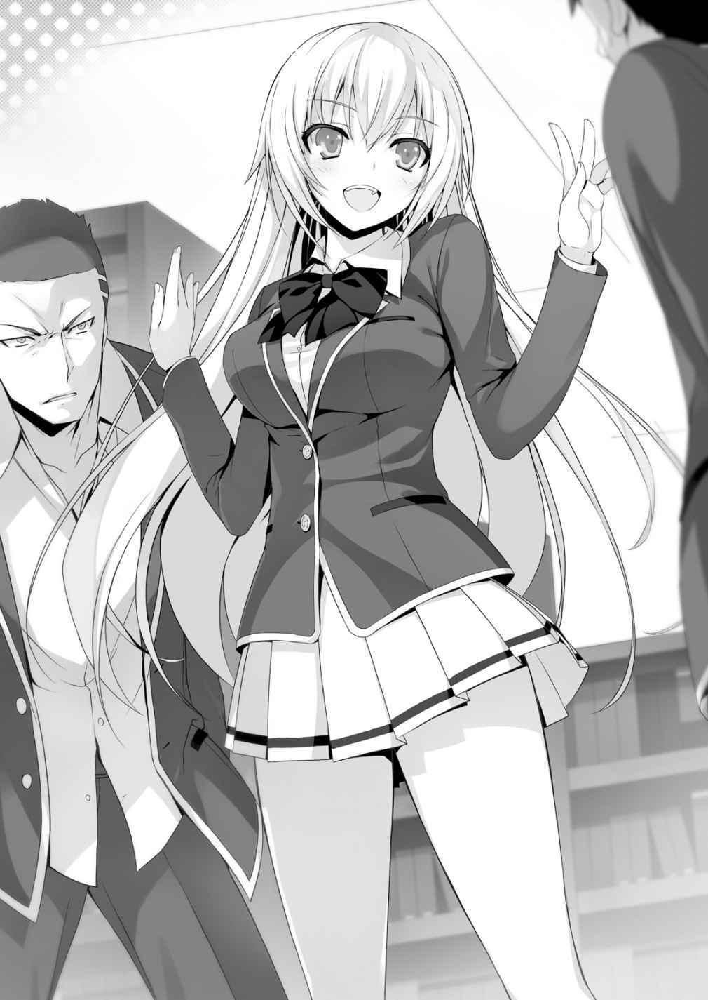
Ante las palabras razonables de la chica rubia, Sudou soltó a Yamawaki.
— ¿Y ustedes, no lo están provocando demasiado? Si esto continua, ¿crees que estaría bien si la escuela supiera esto?
— L-lo siento. No queríamos hacer eso, Ichinose.
Ichinose. Recuerdo haber escuchado ese nombre antes.
Oh, fue la alumna de la clase B quien estaba hablando con Hoshinomiya-sensei.
— Hey, vámonos. Si estudiamos aquí, también nos volveremos estúpidos.
— Sí.
Yamawaki y su grupo de amigos abandonaron el área.
— Si ustedes van a seguir estudiando aquí, manténganse en silencio.
Ante esas palabras, asentí levemente, sintiendo admiración por su forma galante.
— A diferencia de Horikita, ella mantiene el orden en este lugar, ¿eh?
— No estaba tratando de crear una disputa. Solo estaba diciendo la verdad.
Sin embargo, decir la verdad causó la disputa.
— Hey... ese tipo dijo que esto no estaba en la prueba... ¿verdad?
— ¿Qué significa esto?
Intercambiamos miradas
El material de Chabashira-sensei que estaría en la prueba era la Edad de la Exploración.
Todos definitivamente nos aseguramos de escribir eso.
— ¿No significa que cada clase tiene una prueba diferente?
— Es poco probable... la prueba debe ser igual para todos en el grado.
Como dijo Horikita, todos los problemas en el examen deben ser iguales para los cinco temas principales.
De lo contrario, el efecto de nuestras calificaciones en los puntos queda poco claro.
Por casualidad, ¿se informó a la clase C de un cambio en la prueba antes que otra persona?
O era la clase D la única que no estaba informada.
De la nueva información, no pudimos evitar confundirnos.
¿Qué sucede si se probaron diferentes temas en la parte de historia de la prueba entre las clases?
No... si solo la parte de historia fuera diferente, sería realmente raro.
Pero si toda la prueba fuera diferente.
Toda esta semana de estudio se convertiría en tiempo perdido.
3
Eran diez minutos antes del final del almuerzo. Todos los miembros del grupo de estudio guardaron sus cosas y se dirigieron a la sala de profesores. En cualquier caso, no podemos continuar hasta que nos aseguremos de que sabemos lo que cubrirá el examen.
— Sensei. Tenemos algo que queremos confirmar rápidamente.
— Esa fue toda una entrada. Todos los demás maestros están sorprendidos.
— Perdón.
— Está bien, pero estamos en medio de algo. Que sea breve.
Ella siguió escribiendo en su cuaderno, continuando su trabajo.
— La semana pasada, cuando nos dijo qué estaba cubierto en la prueba, ¿cometió un error? Hace poco, los estudiantes de la clase C nos dijeron que su prueba era diferente.
Sin pestañear, Chabashira-sensei escuchó a Horikita. Entonces Sensei, que estaba escuchando en silencio, de repente dejó de mover su pluma.
— Los temas cubiertos en el examen se cambiaron el viernes pasado. Perdón, olvidé decirles chicos.
— ¿¡Qué-!?
Después de escribir el alcance del examen en un papel, ella rasgó la página y se la entregó a Horikita. Las páginas del libro de texto en el papel eran todo el material que ya habíamos cubierto, y Sudou y los demás no habían aprendido ese material.
— Horikita, gracias a ti, noté mi error. Gracias al resto de ustedes también.
Entonces, hasta luego.
— E-espere un poco, ¿¡Sae-chan-sensei!? ¿No es demasiado tarde?
— No, no lo creo. Si estudian para la próxima semana, todo estará bien, ¿no?
Sin un segundo pensamiento Chabashira-sensei trató de sacarnos de la sala de profesores. Sin embargo, nadie se movió.
— Incluso si se niegan a irse, nada cambiará. ¿Lo entienden, verdad?
— Vámonos.
— ¡P-pero Horikita-chan! ¡No puedo estar de acuerdo con esto!
— Como dijo Sensei, quedarse aquí sería una pérdida de tiempo. Deberíamos comenzar de nuevo y estudiar el material revisado.
— ¡Pero aun así!
Girando los talones, Horikita salió de la habitación. Sudou, Ike y Yamauchi la siguieron, aunque a regañadientes. Chabashira-sensei ni siquiera nos miró mientras nos marchábamos. Ella ni siquiera dijo perdón por su error. Sobre todo, pensé que los otros maestros habrían dicho algo después de ese incidente.
A pesar de que fue un error bastante grave que cometió un maestro encargado de un griupo, no hubo respuesta de nadie más. Mis ojos se encontraron con Hoshinomiya-sensei por un momento. Con una pequeña sonrisa, me saludó con la mano.
Bueno, supongo que es una respuesta. Sin embargo, no creo que simplemente “se haya olvidado” de contarnos sobre el examen.
Al salir al pasillo, sonó el timbre de las clases de la tarde.
— Kushida-san. Tengo un favor para pedirte.
— ¿Hmm? ¿Qué es?
— Quiero que le digas al resto de la clase D sobre los cambios en la prueba.
Con eso, Horikita le entregó a Kushida un trozo de papel.
— Estoy bien con eso, pero... ¿está bien que lo haga?
— Eres la mejor persona para pedírselo. Además, es imposible realizar la prueba sin saber de qué se trata.
— Ok, informaré a todos sobre el cambio.
— Para mañana, me aseguraré de revisar nuestro plan de estudio también.
Aunque Horikita fingía estar tranquila, sabía que se sentía algo ansiosa. Nuestro frenético estudio de los últimos días ahora es inútil. Además, solo nos queda una semana para el examen.
Sin embargo, la mayor preocupación fue la motivación de Sudou, Ike y Yamauchi.
— Horikita. Sé que será difícil, pero confiaré en ti—. Sudou hizo una reverencia a Horikita—. Yo... a partir de mañana, tomaré un descanso de las actividades del club durante una semana. ¿Eso funcionará?
— Eso es…
Teniendo en cuenta que solo nos queda una semana, es una decisión muy razonable.
A pesar de que era lo mejor que podía pedir, Horikita no podía aceptar de inmediato.
— ¿Está realmente bien? Será difícil, ¿sabes?
— Estudiar es difícil, ¿verdad?
Sonriendo ampliamente, Sudou le dio unas palmaditas en el hombro.
— Sudou, ¿hablas en serio?
— Sí. Estoy realmente molesto ahora mismo. Tanto con nuestra maestra como con esos patanes de la clase C.
Supongo que podrías llamar a esto una bendición disfrazada. Debido a esta situación difícil, Sudou está comenzando a darle una oportunidad al estudio. Probablemente sintió que no pasaría si no se esforzaba más. La nueva motivación de Sudou parece haber provocado algo en Ike y Yamauchi.
— No puedo evitarlo, supongo que también lo intentaremos más duro.
— Bien. Si ustedes se han preparado para ello, entonces cooperen conmigo. Sin embargo, Sudou-kun-Horikita le quitó la mano a Sudou de su hombro.
— No me toques. Si lo haces nuevamente, no mostraré ninguna piedad.
— No eres linda, mujer.
— ¡Definitivamente lo haremos bien!
— ¡Yo también!
Kushida, también motivada, levantó su puño.
— Ayanokouji-kun, ¡tú también!
— ¿Huh? No, yo...
— Por casualidad... ¿te rendiste?
— Estoy pensando en ello.
— Prometiste trabajar conmigo. ¿Lo has olvidado?
Horikita me vigiló después de escucharme.
— No soy bueno enseñando. La gente es buena y mala en algunas cosas, ¿verdad?
Honestamente, en términos de enseñar a otros, Horikita y Kushida son mejores que yo.
Además, no soy alguien hecho para enseñar.
— No, los resultados de tus exámenes no son tan buenos, ¿verdad?
— No hay mucho tiempo, así que creo que es mejor que Horikita y Kushida enseñen juntas, en lugar de hacer sesiones individuales separadas. Además, hay algo de lo que estoy preocupado.
— ¿Preocupado?
Los eventos que sucedieron en la sala de profesores son demasiado serios para pasar por alto.
4
Cuando era la hora del almuerzo, me levanté de mi asiento con una meta en mente.
Luego me dirigí a la cafetería.
— ¿A dónde vas?
Después de notar que salí de la clase, Kushida me siguió. Parándose frente a mí, se inclinó y me miró.
— Ya que es el almuerzo, pensé en ir a la cafetería.
— Fuun. ¿Está bien si voy contigo?
— Está bien, pero puedes pedírselo a muchas otras personas, ¿sabes?
— Aunque tengo muchos amigos con los que puedo comer, tú no tienes a nadie.
Además, aunque normalmente hablas con Horikita-san primero, no dijiste nada hoy. ¿No dijiste ayer que estabas preocupado por algo en la sala de profesores?
¿Qué fue eso?
Como de costumbre, Kushida estaba escuchando los alrededores; o más bien, observando su entorno. Honestamente, pensé que sería molesto si alguien estaba siempre, pero creo que está bien si es Kushida. Solo descubrí su secreto por casualidad. No haré nada malo.
— Puedo decirte, ¿pero prometes no decirle a nadie más?
— ¡Mantener secretos es mi punto fuerte!
Nos dirigimos a la cafetería. En poco tiempo, entramos en la confusión del lugar y llegamos a la máquina de boletos de comida. Después de comprar un boleto para dos
porciones, me alejé de la máquina expendedora y no me puse en fila en el mostrador.
Desde allí, miré las puntas de los dedos de los estudiantes que estaban comprando su comida.
— ¿Qué pasa?
Kushida me miró con curiosidad.
— Existe la posibilidad de que esto responda a lo que estaba preocupado.
Miré a todos los estudiantes que estaban comprando el almuerzo. Después de unos 20
estudiantes, encontré a mi alumno objetivo. El estudiante compró la comida y caminó hacia el mostrador con pasos pesados.
— Bien, vamos.
— ¿Qué? De acuerdo.
Intercambiando rápidamente nuestros boletos por las comidas, caminé hacia el estudiante y me senté.
— Um, perdón. Eres... un senpai, ¿verdad?
— ¿Eh? ¿Quién eres tú?
Mirando en silencio, me miró, desinteresado.
— ¿Eres de segundo año? ¿Tercer año?
— Tercer año. Eres de primer año, ¿eh?
— Soy Ayanakouji-kun de la clase D. Senpai, también estás en la clase D, ¿verdad?
— ¿Qué tiene que ver eso contigo?
Kushida me miró sorprendida, preguntando “¿Cómo lo supiste?”
— Porque está restringido a la comida gratis. No es muy sabroso, ¿verdad?
Senpai estaba comiendo los vegetales gratis.
— Qué diablos, haciéndome sentir molesto.
Trató de levantarse, pero lo detuve.
— Tengo algo que preguntarte. Si me escuchas, mostraría mi gratitud.
— ¿Gratitud?
Mi pequeña voz se perdió en la confusión de la cafetería.
Los estudiantes cercanos también estaban absortos en sus conversaciones con amigos.
— ¿Aún tienes los problemas del examen parcial de tu primer semestre? O si conoces a alguien que tiene todos los problemas de los exámenes anteriores,
¿puedes decirnos quién es?
— Oye, ¿entiendes lo que estás diciendo?
— No es nada sorprendente. No creo que sea contra la política de la escuela usar viejos problemas para estudiar.
— ¿Por qué me estás preguntando?
— Eso es fácil. Pensé que sería más fácil llegar a un acuerdo con alguien sin puntos. Sinceramente, la comida vegetariana gratis no es tan sabrosa. Por supuesto, las cosas son diferentes si realmente te gusta comer esa comida.
¿Qué dices?
— ¿Cuánto?
— 10 000 puntos. Eso es todo lo que puedo ofrecer.
— No tengo ninguno de los problemas, pero... conozco a alguien que sí los tiene. Si quieres pedirle ayuda, necesitas al menos 30 000 puntos.
— 30 000 es demasiado. No tengo tanto dinero.
— ¿Cuánto tienes entonces?
— 20 000 puntos.
— Entonces 20 000 puntos... No, 15 000 puntos lo harán. Nada menos.
— 15,000 puntos, ¿eh?
— Si llegas tan lejos como para preguntar a un completo desconocido sobre problemas pasados, debes estar realmente desesperado. Después de todo, la escuela expulsa a todos los que reprueban. Ya he perdido a muchos de mis amigos.
— Ya veo. De acuerdo. Pagaré 15 000 puntos.
— Entonces es un trato. Por supuesto, tendrás que pagar por adelantado.
— No me importa, pero si no cumples tu palabra, no te perdonaré. Me aseguraré de que te expulsen.
— Bien. No quiero ningún registro negativo. Si aparecen rumores de que robé a un kouhai, probablemente no me perdonarán.
— Ahora bien, senpai, ya que te pagaré 15 000 puntos, ¿puedes darme un regalo?
Quiero ver las respuestas de la prueba simulada.
— Bien, incluiré eso. Bueno, creo que lo que sea que intentes hacer es inútil, pero seguro.
Parece que senpai entendió lo que estaba pensando.
— Gracias.
El senpai rápidamente dejó su asiento. Supongo que no quería ser notado.
— H-hey, Ayanokouji-kun... ¿Eso... estuvo realmente bien?
— No hay problema en absoluto. La transferencia de puntos está permitida por las reglas de la escuela, por lo que no hay ninguna violación.
— Está bien, pero ¿no es deshonesto pasar las preguntas del año pasado?
— ¿Deshonesto? No lo creo. Si la escuela no lo permitiera, habría algo en las reglas. Además, confirmé otra cosa cuando estaba hablando con el senpai de tercer año. Parece que este tipo de transacciones no son tan extrañas.
— ¿Eh...?
— No estaba particularmente sorprendido, y rápidamente aceptó escuchar mi propuesta. Probablemente no sea la primera vez que negocia. No solo tiene las respuestas de los parciales, sino también de la prueba simulada. No hay error.
Sus ojos estaban girando con asombro.
— Ayanokouji-kun, estabas muy diferente. Me sorprendió.
— Es solo un seguro para garantizar de que Sudou y los demás no sean expulsados.
— Pero esto podría resultar inútil. Las preguntas pasadas son preguntas pasadas,
¿verdad? La prueba de este año puede no tener ninguna relación.
— Los problemas pueden no ser exactamente iguales, pero definitivamente habrá algunas similitudes. El último examen simulado me dio esa pista.
— ¿Pista?
— Te has dado cuenta de que hubo problemas realmente difíciles junto con problemas fáciles, ¿verdad?
— Bueno, sí. Esos fueron los últimos problemas de cada sección. No entendí esas preguntas en absoluto.
— Cuando lo busqué, esos eran problemas que los estudiantes de segundo y tercer año estaban aprendiendo. En otras palabras, no esperan que los de primer año puedan resolver esos problemas. ¿No es inútil poner ese tipo de problemas? Probablemente estén allí por una razón que no sea para probarnos.
Si los problemas en el examen simulado fueran exactamente los mismos que los exámenes simulados anteriores, ¿qué sucedería?
— Si viera esos problemas, sería capaz de resolver la prueba.
Lo mismo es aplicable al examen parcial.
Poco después, recibí un mensaje del senpai de tercer año con un archivo adjunto.
Eran los anteriores exámenes.
Primero, comprobé la prueba simulada. La pregunta clave es: ¿son los tres últimos los mismos?
Kushida también intentó mirar mi teléfono.
— ¿Son? ¿Son los mismos?
— Es completamente idéntico. Los problemas, las oraciones y todas las palabras son las mismas.
— ¡Eso es increíble! Si mostramos esto a todos, ¡sería un éxito fácil! ¡No lo muestres solo a Sudou-kun, sino a todos los demás!
— No, no lo mostraremos a Sudou, Ike y Yamauchi todavía.
— ¿P-por qué? Llegaste tan lejos como para usar tantos puntos.
— Si escuchan que estas son las preguntas del examen, perderán toda motivación y enfoque. Sobre todo, el exceso de confianza es el mayor problema. El examen parcial puede no ser lo mismo que el examen simulado; existe la posibilidad de que los problemas sean diferentes en el parcial.
Es esencial tener en cuenta que estas viejas pruebas son como seguro.
— Entonces, ¿para qué los vas a usar?
— Enseña estos problemas el día antes del examen. Luego les decimos a todos que estos problemas son más o menos lo mismo que la prueba de este año.
¿Qué harían todos entonces?
— ¡Esa noche, todos tratarían de memorizar los problemas!
— Así es como es.
Los estudiantes que no comprenden los conceptos básicos probablemente no puedan memorizar todos los problemas en un solo día. Pero, no es difícil entender los problemas de antemano. No estamos tratando de obtener el puntaje más alto posible en esta próxima prueba. Estamos tratando de evitar reprobar. Si pedimos demasiado, el plan podría fallar.
Pero con esto, probablemente podamos lograr que todos pasen en la clase D.
— Oye... ¿Cuándo pensaste en obtener estos viejos exámenes?
— Desde que supimos que la prueba era diferente. Sin embargo, tuve la sospecha de que los viejos exámenes podrían ser similares desde que se mencionó el examen parcial.
— ¿¡Eh !? ¿¡D-desde entonces!?
— Cuando Chabashira-sensei mencionó por primera vez el parcial, estaba hablando de manera inusual. Aunque conocía las calificaciones y actitudes de Sudou y los otros, hablaba con absoluta confianza. En otras palabras, ella confirmó que había una manera segura de salvarlos.
— ¿Eso es... los viejos exámenes?
La razón por la cual Sudou, Ike y Yamauchi fueron admitidos en esta escuela, a pesar de su habilidad académica, debe estar conectada a esto de alguna manera. Si no
pueden obtener buenas calificaciones estudiando mucho, esta es una especie de ruta de escape para ellos. En otras palabras, es posible que todos obtengan calificaciones cercanas a lo perfecto al obtener los exámenes anteriores. Al menos así es como lo entendí.
— Ayanokouji-kun, eres realmente observador, ¿verdad?
— Solo estoy siendo astuto. De todos modos, no pensé que pudiera pasar el parcial sin ayuda. Estaba buscando una manera de pasar de manera confiable.
— Fuun.
Como si tuviera algo en la cabeza, Kushida tenía una sonrisa traviesa.
— Tengo un favor que pedir. ¿Podrías decir que obtuviste las preguntas anteriores?
Di que recibiste los exámenes de un senpai de tercer año con quien te llevas bien.
— Por mi está bien, pero... ¿estás realmente bien con eso?
— Me gusta evitar problemas, después de todo. No quiero destacar. Además, nuestros compañeros confían en ti. Sería mucho mejor que tú les cuentes a todos los demás.
— De acuerdo. Si tú lo dices.
— Gracias. No debo destacarme innecesariamente.
— Bueno, entonces mantengamos esto en secreto.
— Sí, eso suena bien.
— ¿No sientes que hay algún tipo de confianza entre nosotros cuando compartimos este tipo de secreto?
— Bueno, no lo sé. Eso espero.
— Gracias.
Kushida respondió cortésmente. No sé exactamente por qué fue su agradecimiento.
EL EXAMEN PARCIAL
Hoy es jueves después de la escuela. El día anterior al examen.
Después de que Chabashira-sensei terminó la clase y salió del salón, Kushida rápidamente tomó acción.
Tomó las copias impresas del antiguo examen parcial que copié en la tienda de conveniencia el otro día y las llevó con ella al estrado.
— Lo siento, pero ¿pueden escucharme antes de ir a casa?
Sudou también se detuvo y escuchó.
No podía dejar este papel a nadie más que a Kushida.
— Espero que todos hayan estado estudiando mucho para la prueba de mañana.
Tengo algo que puede ayudar en una última sesión de estudio de esta noche.
Las repartiré ahora.
Ella repartió las preguntas y la hoja de respuestas a todos en la primera fila.
— ¿Preguntas… del examen? ¿Las hiciste tú, Kushida-san?
Horikita también se sorprendió.
— En realidad, estos son problemas de un antiguo examen. Los recibí de un senpai de tercer año anoche.
— ¿ problemas de un antiguo examen? ¿Eh? ¿Son estas preguntas realmente válidas?
— Sí. Hace dos años, el examen parcial tenía casi las mismas preguntas que el de este conjunto de problemas. Entonces, si practican, creo que lo haremos mejor.
— ¡Woah! ¿De verdad? ¡Kushida-chan, gracias!
Ike abrazó su prueba con felicidad. Todos los demás estudiantes tampoco pudieron contener sus emociones.
— ¿Qué demonios, si tenemos estos problemas, ¿todos nuestros estudios no se vuelven inútiles?
Mientras se reía, Yamauchi se estaba quejando. Mi predicción fue completamente correcta.
— Sudou-kun, haz lo mejor que puedas mientras estudias hoy.
— Sí. Gracias.
Sudou también recibió los problemas felizmente.
— ¡Este es un secreto para todas las otras clases! ¡Hagámoslo bien y tengamos éxito!
Ike gritó en voz alta con determinación, pero tenía que estar de acuerdo. No hay necesidad de ayudar a las otras clases. Todos volvieron a casa de muy buen humor.
— Kushida-san. Buen trabajo.
Horikita se acercó a Kushida y la elogió inusualmente.
— Jajaja, ¿es así?
— Nunca pensé en usar las viejas pruebas. También estoy agradecida de que fuiste a ver si estas preguntas todavía eran válidas.
Parece que Horikita, que no tiene amigos, no se le ocurrió la idea.
— No es nada especial. Después de todo, estoy haciendo esto por mis amigos.
— Además, creo que fue correcto decirlo hoy después de la escuela. Si lo hubieras dicho antes, probablemente todos hubieran perdido la motivación.
— Es solo porque conseguí los problemas bastante tarde. Si los mismos problemas están en la prueba de mañana... todos probablemente obtengan buenas calificaciones.
— Sí. Además, nuestras últimas dos semanas de estudio no fueron en vano.
A pesar de que fueron probablemente dos semanas muy largas para los estudiantes que reprobaron, pero creo que todos obtuvieron el hábito de estudiar.
— Fue difícil, pero también divertido.
— No creo que ese trío haya tenido nada de diversión mientras estudiaba.
Bueno, hemos hecho todo lo que pudimos. Depende de cuánto esfuerzo pusieron los otros tres en estudiar.
— Solo espero que no me quede en blanco durante la prueba.
No hay mucho que se pueda hacer al respecto. No importa qué tan bien lo hagamos mientras estudiamos, todo lo que importa es qué tan bien lo hacemos en el examen real. Solo la práctica con los problemas del antiguo examen puede ayudar con esta situación.
— Bueno, también me voy a casa.
Horikita miró en silencio a Kushida, que estaba poniendo su libro de texto y notas en su mochila.
— Kushida-san.
— ¿Hmm?
— Muchas gracias por todo hasta ahora. Si no estuvieras aquí, el grupo de estudio no habría tenido éxito.
— No te preocupes por eso~. Solo quiero llegar a las clases más altas junto con todos los demás. Por eso acepté ayudar. Te ayudaré en cualquier momento.
Con una sonrisa, Kushida se levantó y agarró su mochila.
— Espera. Solo quiero confirmar una cosa.
— ¿Confirmar?
— Necesito confirmar algo porque dijiste que querías seguir cooperando conmigo—.
Horikita miró directamente a la sonriente Kushida y preguntó—. Me odias,
¿verdad?
— Oye, oye...
Me preguntaba qué quería preguntar, pero eso fue inesperado.
— ¿Por qué piensas eso?
— No respondes porque es verdad... ¿estoy en lo cierto?
— Jajaja, me atrapaste.
Se puso la mochila y lentamente bajó la mano. Luego se puso de frente a Horikita mientras sonreía.
— Sí. Realmente te odio—. Ella respondió directamente, sin tratar de ocultarlo—.
¿Debería decirte la razón?
— No. No es necesario. Es lo suficientemente bueno solo saberlo. Simplemente significa que ahora puedo hablar contigo sin ninguna duda.
Aunque le dijo directamente que la odiaba, Horikita respondió tranquilamente a Kushida.
1
— No hay ausencias; Parece que todos están aquí—. Por la mañana, Chabashira-sensei entró al aula con una sonrisa—. Este es el primer obstáculo para poder permanecer en la escuela. ¿Alguien tiene alguna pregunta?
— Hemos estado estudiando diligentemente durante las últimas semanas. No creo que nadie repruebe en esta clase, ¿sabe?
— Tienes mucha confianza, Hirata.
Todos los estudiantes también tenían una mirada de confianza. Acomodando los exámenes golpeándolos contra el escritorio, ella los pasó. El primer período es estudios sociales. Creo que puedes llamarlo la prueba más fácil entre todos los temas.
Si alguien falla aquí, honestamente, todas los otros exámenes serán difíciles.
— Si nadie reprueba en este parcial y los finales en julio, todos tendrán vacaciones de verano.
— ¿Vacaciones?
— Sí, es cierto... Estarán en unas vacaciones de ensueño en una isla rodeada por el mar azul.
El verano y la playa significa... podremos ver los trajes de baño de la chicas...
— Q-qué es esta extraña presión.
Chabashira-sensei dio un paso atrás ante la presión que sentía de los estudiantes (principalmente los chicos).
— Chicos... ¡Hagamos nuestro mejor esfuerzo!
— ¡Síííííííííííííííííííííííííííííí!
Ike gritó en voz alta expresando su acuerdo. También grité, mezclándome con la confusión y el ruido.
— Pervertido.
Horikita me miró. No salió más sonido de mi garganta.
En poco tiempo, el examen se entregó a todos. Y con la señal de la maestra, todos comenzaron al mismo tiempo.
Mirando los problemas, escudriñé rápidamente todo el examen. ¿Puede el trío pasar la prueba? Verifiqué si las preguntas eran similares a las preguntas de la prueba anterior.
— Bien.
Hice una pequeña pose triunfante. Todas las preguntas son similares. No miré las preguntas con mucho cuidado, pero no pude ver ninguna diferencia.
Era obvio que podría obtener una puntuación casi perfecta si memorizaba todas las respuestas.
Mirando alrededor del aula, no vi a ningún estudiante que pareciera confundido o impaciente. Parece que la mayoría estudiaron en el último momento.
También pasé lentamente por cada uno de los problemas.
Durante el segundo y tercer período, la prueba continuó con las secciones de química y japonés. Mientras resolvía los problemas, me di cuenta de otra cosa. Los temas que enseñó Horikita son bastante consistentes con lo que cubre el examen. A partir de las clases, pudo predecir con precisión el tipo de preguntas que aparecerían. La chica silenciosa que siguió anotando respuestas en el asiento de al lado era más impresionante de lo que pensaba.
Y luego fue el cuarto período. Matemáticas. Todos los problemas anormalmente difíciles que se encontraban al final de la prueba simulada están en esta prueba.
Probablemente no entiendan lo que significa, pero deberían hacerlo bien si memorizaron la respuesta.
Y luego fue hora de descanso.
Algunos de los miembros del grupo de estudio, como Ike, Yamauchi, Kushida y Horikita, se juntaron.
— ¡Pasaré fácilmente!
— ¡Esta vez siento que obtendré 120 puntos!
Ike estaba bastante relajado. Por la sonrisa en su rostro, Yamauchi también se veía bastante aliviado.
Mientras sonreían, tenían las preguntas del examen pasado para una revisión final.
— Sudou-kun, ¿cómo lo estás haciendo?
Kushida llamó a Sudou, que estaba revisando en su asiento.
Pero Sudou parecía sombrío y estaba mirando las preguntas con gran concentración.
— ¿Sudou-kun?
— ¿Eh? Oh, lo siento, estoy un poco ocupado.
Estaba mirando las preguntas de inglés. Tenía una fina capa de sudor en la frente.
— Sudou, por casualidad... ¿No estudiaste las preguntas?
— Hice todo menos el inglés. Me dormí a la mitad.
Sudou se estaba irritando. En otras palabras, esta es la primera ocasión que ve estas preguntas.
— ¿¡Qué!?
Sudou solo tenía unos 10 minutos de descanso para repasar estos problemas.
— Maldita sea, ninguna de estas respuestas se me está pegando en la cabeza.
El inglés es diferente de las pruebas anteriores y no es fácil de memorizar. En primer lugar, tratar de memorizar todas las respuestas en los próximos 10 minutos es prácticamente imposible.
— Sudou-kun, memoriza las respuestas que son más cortas y valen más.
Levantándose de su asiento, Horikita se movió al lado de Sudou.
— O-ok.
Y luego comenzó a estudiar lo más fácil de memorizar y que valía más, como dijo Horikita.
— ¿Estás bien?
Tratando de no interponerse, Kushida preguntó desde un lado, mirando ansiosa.
— A diferencia del japonés, no conozco los conceptos básicos, por lo que para mí esto parece un hechizo mágico. Memorizar esto llevará tiempo.
— S-sí. También tengo problemas con el inglés.
Pasaron 10 minutos rápidamente, y sonó el implacable timbre.
— Hice lo que pude. Antes de que me olvide, trataré de hacer todas las preguntas que estudié.
— Sí…
Y luego comenzó el examen. Mientras que todos los demás estudiantes comenzaron a resolver las preguntas, Sudou estaba teniendo problemas. De vez en cuando, golpeaba el bolígrafo en su cabeza mientras pensaba y se detenía mientras escribía.
Pero nadie puede ayudarlo ahora. La única manera de pasar la prueba ahora es que Sudou trabaje solo.
2
Después de que terminó el último examen, todos nos reunimos alrededor de Sudou una vez más.
— E-hey, ¿cómo te fue?
Ike pregunto ansiosamente. Sudou también parecía un poco incómodo.
— No sé... Hice lo que pude, pero no sé lo bien que lo hice.
— Estará bien. Ya que has estudiado mucho, las cosas saldrán bien.
— Maldita sea, ¿por qué me quedé dormido?
Estaba golpeando los dedos contra el pupitre con irritación. Horikita estaba justo enfrente de Sudou.
— Sudou-kun.
— Qué pasa. ¿Me estás sermoneando de nuevo?
— De hecho, fue tu culpa que no repasaras la última parte. Sin embargo, como dijiste, hiciste tu mejor esfuerzo cuando estudiamos. No tiraste la toalla incluso cuando era difícil. Con el esfuerzo que pusiste, creo que deberías sentirte orgulloso de lo que hiciste.
— ¿Qué es esto, estás tratando de consolarme?
— ¿Consolar? Solo estaba diciendo la verdad. Cuando miro a Sudou-kun, entiendo que estudiar es difícil para ti.
Horikita estaba alabando a Sudou. Ninguno de nosotros podía creer que esto realmente estuviera sucediendo.
— Esperemos los resultados.
— Sí.
— Entonces... una cosa más. Tengo algo que corregir.
— ¿De verdad?
— Antes, dije que tus esperanzas de convertirte en profesional en el baloncesto eran insensatas.
— ¿Por qué me lo recuerdas?
— Miré cómo podría uno convertirse en profesional de baloncesto en este mundo.
Supe que era un camino muy difícil entrar en la escena profesional.
— ¿No es por eso que me dijiste que renunciara? Porque es un sueño tan temerario.
— No es así. Sé que tienes pasión por el baloncesto. Sé que probablemente comprendas lo difícil que es llegar a ser profesional—. Era su actitud habitual, pero ésta era claramente la disculpa incómoda de Horikita—. En Japón, hay muchas personas que quieren convertirse en profesionales. Entre esas personas, también hay personas que quieren ser conocidas internacionalmente. Eres parte del último grupo, ¿verdad?
— Sí. El increíblemente tonto está tratando de convertirse en profesional de baloncesto. A pesar de que podría estar estancado viviendo una triste vida como trabajador a tiempo parcial, voy a tener éxito.
— Siempre pensé que no había necesidad de entender a nadie más que a mí misma. Pero cuando dijiste que querías ser profesional, te insulté de inmediato.
Mirando hacia atrás, lo lamento. Alguien que no sabe lo duro y difícil que es lograrlo, no tiene derecho a llamarte estúpido y tonto. Sudou-kun, no te olvides
del trabajo duro que pones en estudiar y utilízalo para el baloncesto. Podrás convertirte en un profesional con ese tipo de esfuerzo. Al menos, eso es lo que pienso—. La expresión de Horikita era la misma que siempre, pero bajó la cabeza ante Sudou—. Lo siento por lo que dije en aquel entonces. Bueno, adiós.
Dejando atrás sus palabras de disculpa, Horikita salió del salón.
— H-hey, ¿viste eso? ¿¡Horikita se disculpó!? ¿Y agradablemente?
— ¡No puedo creerlo!
Ike y Yamauchi estaban en completo estado de shock. También me sorprendió un poco. Kushida también. Horikita admitió que Sudou hizo todo lo posible.
Sentado en su silla aturdido, Sudou miró a Horikita mientras salía del aula.
Poco después, puso su mano derecha sobre su corazón y miró hacia atrás.
— E-esto es malo... yo... creo que me estoy enamorando.
EL COMIENZO
Al entrar en el aula, Chabashira-sensei miró sorprendida a su alrededor. Todos esperaban en suspenso los resultados de los exámenes parciales.
— Sensei. Escuché que los resultados serán publicados hoy, pero ¿cuándo exactamente?
— No hay necesidad de que estés tan emocionado por eso, Hirata. Probablemente pasaste.
— ¿Cuándo se darán a conocer?
— Bueno, ahora es un buen momento. No hay mucho tiempo para ciertos procedimientos si lo hacemos después de clases.
Con las palabras “ciertos procedimientos”, algunos estudiantes tuvieron una reacción visible.
— ¿Qué? ¿Qué quiere decir?
— No te confundas. Lo explicaré ahora.
Después de todo, a esta escuela le gusta explicar todos los detalles al mismo tiempo.
Pegó un papel con los nombres y puntuaciones de todos en el pizarrón.
— Honestamente, buen trabajo. No pensé que esta clase lo haría bien. En matemáticas, japonés y estudios sociales, hubo más de 10 calificaciones perfectas.
Mirando la fila de los 100’s, los estudiantes estaban se estaban animando. Sin embargo, un grupo de estudiantes no sonreía.
La única calificación es el puntaje de Sudou en inglés.
Y entonces-
Cuatro de las calificaciones de Sudou fueron sólidos 60 puntos. Su puntaje en inglés fue de 39.
— ¡¡Woohoo!!
Sudou se puso de pie y gritó aliviado. Ike y Yamauchi se levantaron al mismo tiempo y vitorearon.
No había una línea roja en el papel. Kushida y yo nos miramos y suspiramos aliviados.
Horikita... no sonreía ni aplaudía, pero parecía aliviada por dentro.
— Lo vio, ¿verdad, Sensei? ¡Cuando nos lo proponemos, podemos hacerlo!
Ike tenía una sonrisa triunfante.
— Sí, lo reconozco. Lo hiciste bien. Sin embargo-Chabashira-sensei tenía una pluma roja en la mano.
— ¿Eh...?
Sudou soltó una voz preocupada.
Dibujó una línea roja justo encima del nombre de Sudou.
— ¿Q-qué diablos? ¿Qué significa esto?
— Has reprobado, Sudou.
— ¿Qué? Eso es mentira, ¿verdad? ¡No se burle de mí!, ¿¡por qué reprobé!?
Por supuesto, Sudou fue el primero en protestar.
El aula dio un giro de 180° de animar a un escándalo furioso en una fracción de segundo.
— Sudou. Has reprobado en el examen de inglés.
— ¡No me mienta! ¡la calificación aprobatoria es 32! ¡Pasé!
— ¿Cuándo dijo alguien que la calificación aprobatoria es de 32?
— No, no, ¡Sensei lo dijo! ¿¡Cierto, chicos!?
Ike gritó apoyando a Sudou.
— Nada de lo que digan ayudará. Esta es la verdad ineludible. En este examen parcial, la calificación aprobatoria fue de 40. En otras palabras, estuviste un punto corto. Casi, pero no lo suficiente.
— ¡C-cuarenta!? ¡Nunca oí hablar de ello! ¡No puedo estar de acuerdo con esto!
— Entonces, ¿debería decirte cómo decidimos cuál es la calificación aprobatoria?
Chabashira-sensei escribió una fórmula en el pizarrón.
Ella escribió: “79.6 / 2 = 39.8”.
— La última prueba, y esta prueba también, cada clase tiene una calificación aprobatoria establecida. Y esa calificación era la mitad del promedio.
En otras palabras, cualquier cosa menor que 39.8 reprobaba.
— Bien, entonces, eso muestra cómo reprobaste. Tienes una puntuación más baja.
— Imposible... ¿Eso significa que estoy expulsado?
— Aunque fue poco tiempo, lo hiciste bien. Después de la escuela, se te pedirá que completes un formulario de abandono escolar, pero necesitarás un tutor legal.
Los contactaré luego por ti.
Al ver que todo progresaba tan casualmente, todos los estudiantes sabían que en realidad estaba sucediendo.
— El resto de ustedes, buen trabajo al pasar. En el examen final, trabajen duro para hacer lo mismo y pasarlo. Bueno, entonces, en el siguiente tema:
— S-sensei. ¿Sudou-kun realmente está expulsado? ¿No hay forma de salvarlo?
Hirata fue el primero en llegar a Sudou.
Aunque Sudou lo odiaba y lo insultaba verbalmente.
— Es la verdad. Obtuvo una calificación reprobatoria, por lo que tendrá que irse.
— ¿Podemos ver la hoja de respuestas de Sudou-kun?
— Incluso si lo miras, no encontrarás ningún error en la calificación. Bueno, esperaba que ustedes hagan un alboroto al respecto.
Tomando la hoja de respuestas del examen de inglés de Sudou, se la pasó a Hirata.
Hirata miró todas las preguntas con una expresión sombría.
— No hay... errores.
— Bueno, si eso es todo, la clase ha terminado.
Sin ninguna simpatía ni segunda oportunidad, Chabashira-sensei anunció sin piedad su expulsión. Sabiendo que cualquier palabra reconfortante tendría el efecto contrario, Ike y Yamauchi permanecieron en silencio. Hirata también era lo mismo. Y, lamentablemente, parece que una parte de la clase estaba aliviada. ¿Están contentos de que un estorbo para la clase finalmente haya sido echado?
— Sudou, ven a la sala de profesores después de clases.
— Chabashira-sensei. ¿Tiene un poco de tiempo?
Aunque ella se había quedado en silencio hasta entonces, Horikita levantó rápidamente su mano.
En su vida escolar, Horikita nunca había hecho comentarios durante la clase voluntariamente.
Ante esta nueva vista, tanto Chabashira-sensei como toda la clase se sorprendieron.
— Eso es inusual, Horikita. Estás levantando la mano ¿Cuál es tu pregunta?
— Anteriormente, Sensei dijo que la prueba anterior tenía una calificación aprobatoria de 32 puntos, que fue calculada por la fórmula que escribió anteriormente. ¿No hay ningún error al calcular la calificación aprobatoria de la última prueba?
— Sí, no hay error.
— Entonces, tengo una pregunta más. Calculé el promedio de la prueba simulada en 64.4. Dividiéndolo en dos, obtienes 32.2. En otras palabras, más alto que un 32. A pesar de eso, la calificación aprobatoria fue 32 al quitar el punto decimal.
Eso es contradictorio a partir de este momento.
— S-sí. ¡La calificación aprobatoria debería ser 39 entonces!
En otras palabras, la calificación de 39 de Sudou debería haber pasado apenas.
— Ya veo. Esperabas que la calificación de Sudou apenas pasara. Después de todo, solo tu nivel de inglés era bajo.
— Horikita, tú...
Sudou se dio cuenta de algo. Los otros estudiantes, sorprendidos, miraron el papel una vez más. A pesar de que cuatro de sus cinco calificaciones eran perfectas, obtuvo un 51 en inglés.
— Tú, en verdad-
Sudou se dio cuenta de lo que hizo.
Sin ningún error, para disminuir la calificación promedio, bajó a propósito sus propias notas.
— Si cree que mi opinión es incorrecta, dígame por qué el cálculo difiere entre la última prueba y esta prueba.
El ultimo rayo de luz. El último pedazo de esperanza.
— Ya veo. Bueno, déjame decirte una cosa más. Lamentablemente, hay un error en tu fórmula. En lugar de quitar el punto decimal, redondeamos las pruebas. La última prueba redondeada a 32, esta prueba redondeada a 40.
— Tsk...
— En tu mente, probablemente notaste que el puntaje fue redondeado. Pero aferrándote a esa posibilidad... bueno, es una lástima. El primer período comenzará pronto, así que me iré ahora.
Horikita no tenía más formas de replicar y se quedó en silencio. No fue capaz de contradecir sus palabras, y su última esperanza fue derribada. Después de abandonar el aula, la puerta se cerró de golpe y toda la clase se quedó en silencio.
Al tratar de enfrentar la realidad de tener que irse, Sudou miró a Horikita, quien trató de evitar que reprobara dejando caer sus propias notas.
— Lo siento. Debería haber dejado caer mis notas aún más.
Horikita lentamente bajó la mano.
Incluso 51 puntos fue considerablemente bajo.
Si bajara su calificación a los 40, ella misma estaría en riesgo de ser expulsada.
— ¿Por qué?... dijiste que me odiabas, ¿no?
— Estoy haciendo esto por mi bien, no lo malinterpretes. Aunque fue en vano.
Lentamente dejé mi asiento.
— ¿A dónde vas, Ayanokouji?
— Al baño.
Salí del aula y caminé rápidamente hacia la sala de profesores. Mientras me preguntaba si Chabashira-sensei ya habría llegado, la vi mirando por la ventana, inmóvil en el pasillo. Como si estuviera esperando a alguien.
— Ayanokouji, la clase comenzará pronto.
— Sensei. ¿Está bien si le hago una pregunta?
— …¿Una pregunta? ¿Es por eso que corriste detrás de mí?
— Tengo algo que preguntarle.
— Comenzando con Horikita, e incluso tú. ¿Qué es?
— ¿Cree que la sociedad japonesa de hoy es justa?
— Qué cambio repentino en el tema. ¿Obtienes algo incluso si respondo?
— Es muy importante.
— En mi opinión, entonces no, no es justa. Ni un poco.
— Sí, también pienso de la misma manera. La igualdad y equidad son mentiras.
— ¿Me perseguiste para hacer esa pregunta? Si eso es todo, me voy.
— Hace una semana, cuando nos comunicó que el material del examen había cambiado, dijo algo como esto: “Olvidé decirles”. Por eso, el aviso nos llegó aproximadamente una semana después de que las otras clases fueran informadas al respecto.
— Dije eso en la sala de profesores. ¿Y qué?
— A pesar de que todas las preguntas, nuestros puntos y la amenaza de expulsión son las mismas entre todas las clases, solo la clase D es tratada injustamente.
— ¿Estás diciendo que no puedes aceptar eso? Pero es un buen ejemplo.
Supongo que podrías llamarlo un micro ejemplo de nuestra sociedad injusta de hoy.
— Por supuesto, no importa qué tan positivo lo mire, el mundo es un lugar injusto.
Sin embargo, somos humanos que podemos pensar y actuar.
— ¿Qué estás tratando de decir?
— Estoy tratando de decir que al menos debería parecer igual.
— Ya veo.
— No importa si que “olvidó” decirnos fue a propósito. Sin embargo, es un hecho que una persona ahora se ve obligada a abandonar la escuela debido a esas condiciones desiguales.
— ¿Qué quieres que haga?
— Es por eso que vine a usted. Quiero reunirme con el que perpetúa esta desigualdad en la escuela.
— ¿Para decir que no estás de acuerdo?
— Solo quiero confirmar las decisiones de la escuela con las personas adecuadas.
— Tristemente, aunque no estés equivocado, no puedo permitirlo. Sudou se irá.
Será muy difícil anular ese fallo en este momento. Ríndete.
Ella ignoró mi argumento. Pero eso no quiere decir que no haya significado en sus palabras.
Como era de esperar, esta persona es alguien que siempre tiene una implicación oculta en sus palabras.
— Difícil de ser revocado en este momento. En otras palabras, hay una manera de cambiar el resultado.
— Ayanokouji, personalmente tengo una alta opinión de ti. Ciertamente, obtener las preguntas de un antiguo examen fue una solución correcta. Además, tener esa idea incluso va más allá del sentido común. Distribuiste las preguntas a la clase y elevó el puntaje promedio de la prueba. Creo que hay mérito en llegar a esa idea.
— Kushida también me ayudó a obtener esas preguntas, así que no hice nada especial.
— Sé que no lo admitiste abiertamente, pero también hay estudiantes de último año.
También sé que recibiste las preguntas de un alumno de tercer año—. De alguna manera, mis acciones fueron descubiertas—. Sin embargo, a pesar de tener un sólido comienzo al obtener las preguntas de la prueba, cometiste un error al final. Por eso tu plan no funcionó. Si los hubiera memorizado más a fondo, probablemente Sudou no habría obtenido una calificación reprobatoria en inglés. ¿Por qué no te rindes y dejas que Sudou se vaya? ¿No será más cómodo su futuro?
— Para ser honesto... probablemente. Sin embargo, decidí ayudar esta vez. O
mejor dicho, debería decir que no me rendiré todavía. Tengo un último intento.
De mi bolsillo, saqué mi tarjeta de estudiante.
— ¿Qué quieres decir?
— Véndame un punto de la prueba de inglés de Sudou.
— ... — Mirándome con asombro, ella se echó a reír a carcajadas—. Jajajajajajaja.
Esa es una propuesta interesante. Como pensaba, eres diferente. Nunca imaginé que tratarías de comprar puntos.
— Sensei, lo dijo el primer día. No hay nada que no se pueda comprar con puntos en esta escuela. El examen parcial es una de esas cosas en esta escuela.
— Ya veo, ya veo. Ciertamente, podrías pensar de esa manera. ¿Incluso tienes dinero para pagarme?
— Bueno, ¿cuánto cuesta un punto?
— De hecho, una pregunta muy difícil. Nadie ha pedido comprar un punto antes.
Veamos... te daré un punto por 100 000 puntos.
— Sensei, es usted cruel.
No hay una sola persona en la escuela que no haya usado un punto en absoluto.
En otras palabras, no hay nadie que tenga 100 000 puntos.
— También pagaré.
Una voz vino detrás de mí. Al girar, vi a Horikita parada allí.
— Horikita...
— Kuku. Como pensaba, ustedes dos son interesantes.
Chabashira-sensei tomó nuestras dos tarjetas de estudiante.
— Muy bien, aceptaré venderles un punto. Tomaré un total de 100 000 puntos de los dos. Dile al resto de la clase que la expulsión de Sudou ha sido cancelada.
— ¿Eso está bien?
— Prometiste pagar 100 000 puntos, así que no se puede evitar.
Chabashira-sensei habló con un tono divertido mientras continuaba mirándonos con asombro.
— Horikita, también entiendes, ¿verdad? La habilidad de Ayanokouji.
— … Bueno... solo veo a un estudiante desagradable.
— ¿Qué quieres decir con desagradable?
— Sacas a propósito calificaciones bajas en los examenes, pensaste en obtener las preguntas del antiguo examen y das crédito a Kushida-san, y se te ocurrió la idea de comprar puntos del examen. No creo que seas particularmente especial, simplemente eres desagradable.
De alguna manera, parece que también se enteró de las preguntas del examen.
— Si son ustedes, es posible que puedan mover hacia arriba a su clase.
— No sé él, pero yo definitivamente ascenderé.
— En el pasado, nunca ha habido un caso en el que se haya promovido a una clase D. Es porque la escuela inmediatamente los etiqueta como inferiores y los hace a un lado. ¿Cómo vas a lograr eso?
— Sensei—. Sin vacilar, Horikita devolvió la mirada de Chabashira-sensei—.
Honestamente, muchos de los estudiantes de la clase D son inferiores. Sin embargo, eso no significa que sean basura.
— ¿Cuál es la diferencia entre los bienes inferiores y la basura?
— Hay una diferencia sutil en el papel. Creo que con un poco de ayuda, existe la posibilidad de mejorar un bien inferior al de uno de calidad superior.
— Ya veo. Cuando lo dices, suena extrañamente persuasivo.
Tenía que estar de acuerdo con sus palabras también. Sus palabras fueron ciertamente importantes...
Horikita, que anteriormente consideraba a otros estudiantes y personas como un obstáculo, estaba cambiando lentamente.
Por supuesto, no es tan simple. Aunque es una pequeña muestra de su cambio, es un gran cambio. Como si también se hubiera dado cuenta, Chabashira-sensei sonrió débilmente.
— Bien, lo espero con ansias. Como su maestra encargada, me aseguraré de mirar atentamente los eventos futuros.
Chabashira-sensei se alejó hacia la sala de profesores.
Nos dejó atrás en el pasillo.
— ¿Deberíamos volver también? La clase empezará pronto.
— Ayanokouji-kun.
— ¿Hmm? ¡Ay!
Ella golpeó mi costado con su mano.
— ¡Hey! ¿¡por qué diablos fue por eso!?
— Me dieron ganas.
Con eso, ella me dejó atrás y se alejó.
Maldición, qué molestia... La miré mientras se alejaba.
Mientras pensaba en eso, decidí perseguirla.
LA CELEBRACIÓN DE LA VICTORIA
— ¡Salud!
Sosteniendo una lata de jugo, Ike exclamó entusiasmado.
Una vez que se anunciaron los resultados del parcial, todos los miembros del grupo de estudio se reunieron por la noche. Todos, menos Horikita, sonreían porque nadie fue expulsado.
Con nuestros amigos, todos logramos superar las dificultades. ¿Es esto lo que es la juventud?
Supongo que no está mal.
— ¿Qué hay con esa cara sombría? Sudou no fue expulsado, así que todo terminó,
¿verdad?
— No me molesta la celebración, pero ¿por qué es en mi habitación?
— Mi habitación está sucia, y también las de Sudou y Yamauchi. Tampoco podemos ir a las habitaciones de las chicas, ¿verdad? No, por supuesto, me encantaría que estuviéramos en la habitación de Kushida-chan. Es por eso que tu habitación maravillosa y completamente vacía es la mejor, Ayanokouji.
— Han pasado solo dos meses desde el comienzo de la escuela. Más bien, es extraño tener muchas cosas.
Aparte de mis necesidades diarias, no hay nada más que realmente necesite.
— ¿Qué te parece, Kushida-chan?
— Creo que está bien. Se siente limpio, fresco y simple.
— ¿Verdad? Debe ser bueno ser alabado por Kushida-chan. Jajaja.
Ike, que parecía tener un rencor personal contra mí, me empujó ligeramente (pero no realmente).
— Aunque considerando todas las cosas, este parcial fue bastante peligroso. Si no hubiéramos hecho ese grupo de estudio, Ike y Sudou definitivamente hubieran sido expulsados.
— ¿Hah? Estabas casi en el borde, ¿sabes?
— No, no, podría obtener una calificación perfecta si lo intentara. En serio.
— Todo es gracias al esfuerzo de Horikita-san. Después de todo, también enseñó a Ike-kun, Sudou-kun y Yamauchi-kun.
Horikita se quedó fuera del círculo y estaba leyendo su novela sola. Cuando dijimos su nombre, sin embargo, alzó la cabeza mientras volvía a poner el marcador en el libro.
— Solo estoy actuando por mi bien. Si alguien es expulsado, los puntos de clase D
también caerán.
— Incluso si es una mentira, di que lo hiciste por nosotros. Pensaremos mejor ti.
— Está bien si no piensas mejor de mí.
Bueno, su actitud es la misma de siempre, pero su participación en este grupo es una mejora en sí misma.
Si fuera la vieja Horikita, definitivamente no habría venido.
— Bueno, pero... Horikita es sorprendentemente agradable.
Siguiendo el comentario de Horikita, Sudou respondió.
Desde que Horikita se disculpó, Sudou dejó de ser tan hostil hacia ella. Antes, él declaró que no era amable, pero parece que las personas cambian.
— De todos modos, ¿por qué decidió Sensei cancelar la expulsión de Sudou?
— También me preguntaba eso. ¿Qué brujería usaste, Horikita-chan?
— Eh, no me acuerdo.
— Uwa, ¿un secreto?
Ike se cayó de forma exagerada.
— Solo porque logramos superar el parcial, no debemos celebrar salvajemente.
Nuestro próximo obstáculo es el examen final. Obviamente, los problemas en el examen final probablemente serán más difíciles que este examen. Además, todavía tenemos que buscar una forma de aumentar nuestros puntos.
— Tenemos que comenzar ese infernal estudio de nuevo... Eso es lo peor.
Ike enterró su cabeza entre sus manos.
— ¿No crees que deberíamos comenzar ahora para que no sea tan malo?
— ¡No!
Supongo que no.
— No entiendo nada sobre la escuela, como la división entre clases y el sistema de puntos.
— Ah~ mis puntos~. Quiero puntos~. La pobreza es realmente lo peor~.
Habiendo consumido todos sus puntos, Ike y Yamauchi vivían solo con cosas gratuitas.
— Hey, Horikita-san. ¿Todavía es muy difícil obtener puntos?
— Lo hicimos bien en el examen, así que deberíamos poder obtener algunos puntos, ¿verdad?
— ¿Has visto nuestro promedio? Entre todas las clases, somos, con mucho, el más bajo. Si crees que podemos obtener puntos así, debes cambiar tu forma de pensar.
Como siempre, Horikita dijo la verdad sin remilgos.
— Entonces no recibiremos puntos el mes próximo tampoco... no...
— Solo vive una vida con moderación y renuncia a tu lujoso estilo de vida.
— Está bien, Ike-kun. Es posible que no obtengamos ningún punto en este momento, pero obtendremos algunos puntos en el futuro cercano. ¿Cierto?
Horikita-san.
— Eso me pregunto.
— ¿Puedo decir algo? Todos somos amigos, después de todo. Horikita-san, Ayanokouji-kun y yo estamos trabajando juntos para tratar de llegar a la clase A.
Si está bien, quiero que nos ayuden.
— ¿Llegar a... la clase A? ¿Hablas en serio?
— Sí. Por supuesto. Intentar aumentar nuestros puntos, obviamente, es una parte importante de eso también.
— ¿Pero no es eso súper descabellado? Son un grupo inteligente, ¿verdad? Ya que son mucho más inteligentes, ¿no es prácticamente imposible?
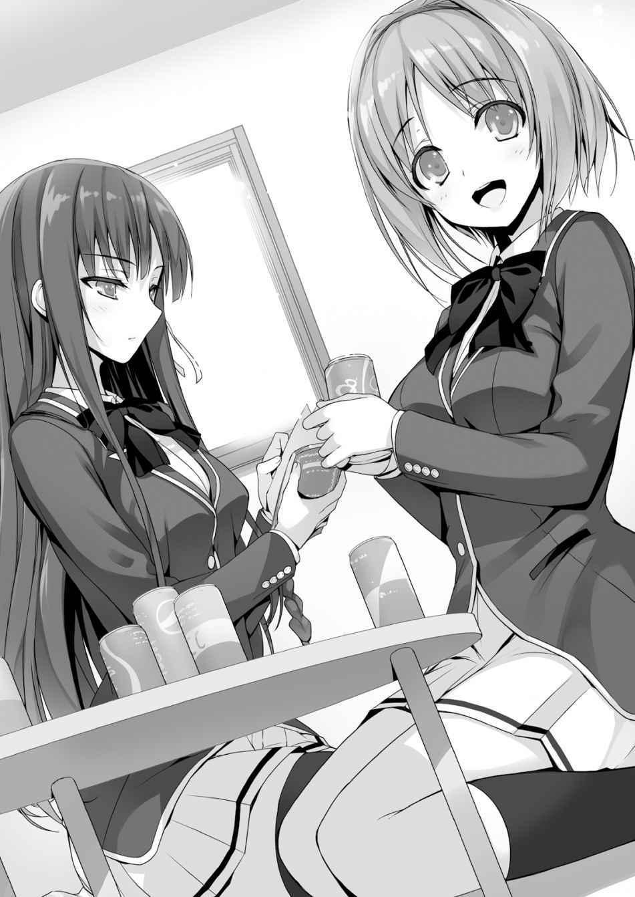
Si solo piensas en sus calificaciones, todo un grupo de personas como Horikita da miedo.
— Sin embargo, estudiar no es lo único que decide las clases. ¿Verdad?
— Sí, pero si no puedes estudiar, está descartado.
Las tres personas silbaron y desviaron sus ojos.
— Todavía estamos muy lejos de nuestro objetivo, pero si trabajamos juntos, llegaremos allí. Seguro.
— ¿Dónde está la evidencia de eso?
— Evidencia... Bueno, tres personas trabajando juntas no fallarán tan fácilmente como solo una, ¿verdad?
— No creo que realmente eso se aplique a estos tres.
— B-bueno... ¡Oh, eso es todo! ¡Tres cabezas son mejores que una! Algo como eso.
— Bueno, si sumas los resultados de sus exámenes, es como el puntaje de una persona.
Kushida intentó que los tres resultaran útiles, pero Horikita desmanteló por completo sus intentos. Qué par tan increíble.
— Si peleamos, no se hará nada, ¿verdad? Llevarse bien definitivamente es mejor.
— Si lo piensas, creo que eso es correcto.
— ¿Cierto?
Horikita no intentó negar sus palabras.
En cualquier caso, si estamos intentando avanzar la clase, probablemente sea mejor llevarse bien con tantos compañeros de clase como sea posible. Si peleamos en esta etapa, nada resultará de nuestros esfuerzos.
— Es por eso que quiero pedirles ayuda a ustedes tres nuevamente.
— ¡Encantados!
Ike y Yamauchi respondieron de inmediato.
— Bueno, si Horikita me pide ayuda, entonces...
Sudou trató de ocultar su vergüenza.
— Nunca pensé en confiar en ti, Sudou-kun, y tampoco quería ayudarte. En primer lugar, no serías muy útil.
— Guh... estaba tratando de ser amable, ¿sabes?
— ¿Tratando de ser amable? Estoy sorprendida.
No es sorprendente que Sudou se estremeciera de ira, pero no levantó el puño.
Parece que él también está mejorando.
— Eres molesta.
— Gracias por tus amables palabras.
— No eres linda en absoluto.
— Dices eso, pero ¿qué quieres decir realmente?
Ike se burló de él. Sudou envió una feroz mirada hacia Ike, y le aplicó una llave de lucha al cuello.
— ¡Ay! ¡D-detente!
— Si dices algo innecesario voy a estrangularte.
— ¡Ya me estás estrangulando! ¡Me doy por vencido!
Al ver algo parecido a la “amistad entre hombres”, Horikita soltó un profundo suspiro.
— Esta escuela está regida por nuestra habilidad. Solo nos aguardan duras competencias. No es algo que puedas hacer a medias. Si dices que vas a ayudar y luego te rindes, solo serás un obstáculo.
— Déjame cualquier cosa física a mí. Tengo confianza en mis habilidades de baloncesto y lucha.
— ... Después de todo no puedo esperar nada de ti.
Regida por nuestra habilidad, eh. Siento que mi pecho se aprieta. Básicamente, nos hemos distanciado del resto del mundo. Antes de notarlo, puse mucho esfuerzo en nuestro trabajo en conjunto. Bueno, supongo que también podrías llamarlo una especie de maldición.
Horikita ha puesto su mirada en la clase A. Ella está decidida a hacerlo. Sin embargo, el camino para salir de la clase D será difícil.
Con la forma en que nos estamos desempeñando en este momento, será difícil llegar a la clase C.
Si ese es el caso, ¿qué debo hacer de ahora en adelante? Me centraré en dar lo mejor de mí por ahora.
Al menos... quiero ver a Horikita sonreír una vez.
HISTORIAS CORTAS
Horikita Historia Corta
Una cierta mañana en la piscina
Algo que ocurrió cierta mañana. Escuché un profundo suspiro.
— Hah - nadar....
Casi todos los chicos estaban encantados, pero sólo Hondo estaba desanimado.
— ¿Qué pasa?
— ¿Eh? No, nada...
Hondo parecía preocupado por algo.
— Hablando de eso, siempre estuviste observando. No me digas que no sabes nadar.
— No es que sea un experto, tengo un nivel normal. Es sólo que, verás, hay muchas cosas, si nado.
No entendía nada acerca de lo que Hondo quería decir.
— No me entusiasma. Esta cosa de nadar es realmente aburrida.
Hondo había regresado a su asiento muy pronto.
— ¿Qué le pasa a este tipo?
Ike inclinó la cabeza, sin entenderlo.
— Ah, así que es eso. Así que es por eso.
Sudo parecía haber entendido el pensamiento de Hondo y se echó a reír.
— ¿Qué pasa?
— También había estudiantes como Hondo en la secundaria. Debe estar preocupado por eso, por el tamaño de sus partes inferiores.
— ¿Qué?
La respuesta de Sudo fue realmente inesperada.
— No puede ser, ¿verdad?
— No, los que adoptan esta actitud probablemente lo hagan por eso. Si fuera por otras razones, su vientre estaría expuesto o tendría un vello corporal grueso. ¿Cumple Hondo alguno de estos dos criterios?
De hecho, Hondo tiene un cuerpo muy común que se puede encontrar en todas partes.
— Los hombres determinan al ganador por el tamaño de la parte inferior. Por lo general, esa parte tiende a ser muy grande en los hombres que normalmente no tienen restricciones. Esto es como la miniatura de uno mismo para la sociedad. Si la parte inferior de un joven sano es pequeña, su evaluación también sufrirá cambios, ¿no es así?
— ¡Pfjajajajajajajaja! ¡Ese tipo, así que sus partes inferiores son pequeñas!
Ike parecía haber entendido el pensamiento de Hondo y se rió a carcajadas.
Qué sociedad tan molesta.
— Ese tipo debe estar holgazaneando, mira de cerca.
Sudo dijo que con una cara sonriente llena de confianza.
Luego comenzó la clase de natación. Hoy, Ike y Yamauchi también estaban entusiasmados con los trajes de baño de las chicas.
Sudo miró al Hondo que creía que estaba holgazaneando, mientras sonreía.
Es gracias a gente como tú que incluso los adultos han vetado los trajes de baño de competición, y hay una tendencia de chicos y chicas que usan trajes de baño con cada vez menos exposición, ¿no es así?
— ¿De qué se ríe Sudo? ¿Algo gracioso?
Kushida, que había terminado de cambiarse de ropa, mostraba una cara incapaz de entender y me preguntó. Como siempre, no sabía dónde debía colocar mi mirada.
— Un asunto trivial.
— ¿Qué quieres decir con asunto trivial?
Basta, ser observado tan tiernamente también es perturbador. Los trajes de baño de las chicas son extraordinariamente eróticos, me excitaré, ¿sabes?
Si dijera esas palabras, creo que Kushida nunca volvería a hablarme.
— ¡Vamos a nadar! Hay muchos chicos descansando.
Siendo impreciso, dije eso mientras observaba a su alrededor a los que sólo miraban. Kushida también miró conmigo a los estudiantes que estaban en el segundo piso con una expresión que implicaba que estaba de acuerdo.
— Las chicas tienen una variedad de circunstancias, pero los chicos también tienen muchas. ¿Verdad que sí? A nadar.
— Hay tipos a los que simplemente no les gusta, y hay tipos que no son buenos en esto.
— Aunque no sean buenos en esto, si se dan por vencidos al principio por estas circunstancias, jamás podrán superarlo, no importa cuánto tiempo pase.
Hablando como una profesora, Horikita ha llegado. Bueno, la apariencia de los trajes de baño es realmente demasiado deslumbrante.
Para no verme como si estuviera mirando en exceso, aparté la mirada sin dejar rastro.
— De hecho, creo que deberíamos dejarlos en paz. El valor de nadar, ¿cómo debería decirlo? No hay complicaciones diarias para los que no saben nadar. Para los que viven en una ciudad, la necesidad de nadar es completamente inexistente, ¿no?
— ¿Y si hay un accidente? Si hay un terremoto, también habrá un tsunami.
Para aumentar la tasa de supervivencia en un 1%, no hay nada mejor que haber aprendido a nadar previamente.
Naturalmente, es imposible negar esta cuestión de supervivencia una vez que se ha llegado a esta palabra del 1%.
— Jaja, la relación entre ustedes dos sigue siendo tan buena como siempre.
— Ni en lo más mínimo.
Horikita ni lo afirma ni lo niega. Odia hablar con Kushida.
— ¡Kushida-chan---! ¡Hagamos lo mejor posible juntos!
Ike vino saltando cuando se dio cuenta de la existencia de Kushida.
Su boca hablaba, pero en su mente estaba pensando en grabar la imagen del traje de baño de Kushida en su retina.
Kushida se rió y empezó a hablar con Ike, sin darse cuenta en lo más mínimo de sus perversos pensamientos.
— Así es, ¿de qué se ríe?
— ¿Eh?
Horikita miró a Sudo, que estaba ridiculizando a Hondo.
— Ah, no. Hay varias circunstancias. Los hombres también tienen preocupaciones de hombres.
— No lo entiendo muy bien.
— Hagamos una analogía. Hay mujeres que tienen sentimientos complicados sobre el tamaño de su busto, ¿verdad?
Me miró asombrada como si dijera: “¿De qué estás hablando tan repentinamente?” Que te miren así se siente como una tortura.
— En otras palabras, los hombres también tienen preocupaciones similares.
Por favor, trata de sentir empatía en el futuro.
Si lo dijera en palabras más concretas, no hay duda de que se trata de acoso sexual. Era difícil decir si iba a ser golpeado por Horikita.
— ... Entonces es así. Tan absurdo.
— Tu habilidad para captar ideas es realmente buena.
— Después de escuchar tus sucias palabras, aunque de mala gana, fue suficiente para imaginar.
— Si me piden que explique eso, me limitaré a decir los hechos. No me trates como al villano.
— Oye, Ayanokouji-kun. ¿Ike está bien?
Kushida, que estaba hablando con Ike, se nos acercó bastante cuando nos dimos cuenta. Sobre Ike, estaba agachado mientras presionaba su vientre.
— Parece que le duele el estómago.
Kushida le miró preocupada a la distancia.
Ike, siendo el objetivo de su preocupación, de hecho estaba presionando su estómago, pero no parecía que estuviera sufriendo.
En otras palabras, debe ser que miraba demasiado a Kushida y ahora está pagando el precio.
Este tipo nunca aprenderá, siempre vive siguiendo sus instintos.
Horikita observó a Ike con una mirada implacable y llena de desprecio.
Ah -juventud.
Pensé esto a pesar de que no hice nada.
Horikita Historia Corta
Feliz. ¿Infeliz?
Eso fue algo que sucedió en un día normal.
Eso sucedió poco después de que me matriculé en esta escuela y no se podía decir que estuviera acostumbrado a la vida escolar todavía.
Siempre estoy tenso cuando un compañero me habla de repente y no puedo hablar con normalidad.
En resumen, para mí, que pertenezco al grupo de los más desfavorecidos de la clase, ya es agotador poder ponerle un nombre a un rostro.
Personas con altas habilidades de comunicación como Hirata y Kushida ya han empezado a hablar con personas de otras clases.
— Qué realidad tan molesta...
Entramos a esta escuela bajo las mismas circunstancias, pero ahora mismo somos diferentes como el día y la noche.
Aunque entiendo que todo el mundo tiene diferentes habilidades, pero por el momento me arrepiento.
En esta atmósfera, la vecina de mi pupitre pasa todos los días sin prestarle atención.
Nunca llega tarde ni ha tenido ninguna ausencia, tiene calificaciones sobresalientes, escucha atentamente durante las clases. Entra y sale del aula con mucha rapidez.
Sin embargo, nadie interactúa con ella. Para decirlo claramente, no tiene amigos.
— Te ves muy relajada, parece que no tener preocupaciones es realmente genial.
— ¿Qué estás diciendo tan repentinamente?
Horikita, que se estaba preparando para la siguiente clase, me miró molesta.
— Nada. No puedo evitar pensar en estas cosas.
— Sigo mis normas para poder tomarme en serio mis estudios, ¿sabes?
— No estaba diciendo esas cosas....bueno, no hagas caso. Estaba equivocado.
— Aunque admitir que te equivocas es algo bueno, siento que no puedo aceptarlo.
Horikita en verdad piensa que no necesita amigos.
Aunque discutiera con ella, no tendría grandes probabilidades de éxito, y no habría ningún beneficio.
— Bueno, vamos a estudiar duro hoy también.
— Pero nunca te he visto estudiar mucho.
Suspiré después de escuchar sus comentarios sarcásticos.
PARTE 1
Al día siguiente. Me desperté más temprano de lo habitual y llegué 10 minutos antes de que comenzara la clase. No había muchos estudiantes y el aula estaba básicamente vacía.
— He llegado antes que Horikita.
Después de todo, como ya era esta hora, pensé que ya había llegado a la clase, pero hasta la persona de primera categoría parece que va a llegar tarde.
— Buenos días a todos.
Un momento después, Kushida, la moderadora del ambiente de la clase, entró en el aula.
El sombrío (estoy exagerando) salón de clase de repente se volvió brillante y alegre.
Aunque sólo vea a Kushida por la mañana, sigo pensando que es muy linda.
Probablemente sentiría lo mismo si la viera por la noche.
No sabía en qué estaba pensando Kushida. Cuando se volteó hacia mí, nuestros ojos se encontraron accidentalmente.
Normalmente, se supone que la saludara agitando mi mano, pero subconscientemente aparté mis ojos, típico de un inútil como yo.
Hoy también he estado continuamente correteando en el fondo.
Mientras miraba fijamente al exterior de la ventana, sonaron las campanas y la clase comenzó. Incluso en este momento, todavía no veía a Horikita.
No sabía si Chabashira-sensei se había dado cuenta o no de que Horikita no estaba aquí. No tocó el tema, terminó de pasar lista y se fue del salón de clases.
— ¿Llega tarde? Es tan raro...
Sólo podía adivinar...
— ¡Buenos días Ayanokouji-kun!
— ¿¡Waah!?
Mientras miraba fijamente al asiento de Horikita, Kushida apareció sigilosamente en mi campo de visión.
— Lo siento, ¿te asusté?
— ...Un poco. ¿Necesitas algo?
— Sí. En realidad, estoy preocupada por algo. ¿Puedo molestarte un poco?
No digas nada, puedes usar mi tiempo como lo desees.
— Horikita-san no ha venido... a la escuela, ¿verdad?
Miró al asiento que estaba a mi lado.
— Eso parece.
— Ni siquiera su mochila está, sin duda no ha venido.
— ¿Qué quieres decir preguntando esto?
Tenía alguna pista, así que asintió lentamente.
— Verás, vi a Horikita-san salir de su habitación esta mañana.
— ¿Eh?
En otras palabras, ¿ella vino a la escuela esta mañana?
— No fue porque estaba poco dispuesta a venir...
— No lo parece... así que estaba un poco preocupada. Normalmente sería yo quien hablaría con Horikita-san, pero ella me odia.
— Ella no te odia, simplemente odia las relaciones humanas.
Siento que no odia particularmente a Kushida. Probablemente
— Si te parece bien, ¿puedo pedirte que te pongas en contacto con ella?
Así que es así, por eso me hablaste.
— Aunque quieras que me ponga en contacto con ella.... No sé el número de teléfono de Horikita.
— Eh, ¿es así?
— Sí, lo siento mucho. Supongo que el resto de la gente está en la misma situación.
— ¿Qué.... qué hacemos entonces?
— ¿No está bien dejarla tranquila?
— Pero-
Kushida es una persona muy amable, incluso está excesivamente preocupada por Horikita.
— Revisaré su situación.
— Dices que la situación... ¿no empieza pronto la próxima clase?
— ¿Pero esto no preocupa a la gente? ¿Crees que Horikita faltaría a clases?
— Eso es algo... difícil de imaginar.
Da la sensación de ser alguien que vendría a clase a pesar de estar resfriada.
— Aunque no queda mucho tiempo antes de que empiece la primera lección, si corro rápido podré volver a tiempo.
Kushida, al igual que Horikita, es una estudiante modelo que nunca llega tarde ni falta.
Aunque lo haga porque está preocupada por Horikita, aún así dejará un registro de tardanzas.
— Ah, espera un momento.
Elevé mi pesada cintura y lentamente me levanté.
No puedo dejar que Kushida llegue tarde, así que sólo puedo ser decidido.
Definitivamente no estoy fingiendo ser genial. De verdad.
— ¿Ayanokouji-kun?
— En resumen, iré a investigar la situación de Horikita.
— ¿Eh?
— No puedo dejar que Kushida falte a clases. Y si corro, es más probable que vuelva a tiempo para la clase. Así que ahora vuelvo.
— Pero, pero, esto es algo que quería hacer por mi cuenta. No puedo pedirte que lo hagas.
— No hay problema, ya que la clase me entra por un oído y sale por el otro.
... Probablemente.
— Lo siento... gracias
— No es nada. Por cierto, ¿cuál es el número de habitación de Horikita?
Si hubiera corrido despavorido ahora mismo, acabaría sin saber dónde está su habitación.
Necesito preguntarle esto.
— Déjame pensar, es 1201.
Ya que Kushida me ha dado las gracias, entonces esto puede ser algo que me dé puntos.
En su corazón, mis puntos probablemente se han elevado.
Hay aproximadamente 8 minutos hasta que empiece la primera clase.
Correr a los dormitorios requiere de 2 a 3 minutos, así que hay una oportunidad de volver a tiempo.
PARTE 2
Inmediatamente dejé el aula y corrí como el viento por el pasillo.
Parece que estoy un poco motivado.
Sintiéndome ligeramente avergonzado, corrí por el patio vacío y llegué a la entrada de los dormitorios. Gracias a los estudiantes que iban a clase, los dos ascensores se detuvieron en el primer piso. Inmediatamente entré en el ascensor para ir al piso 12.
Como no podía evitar sentirme ansioso, seguí presionando el botón del piso objetivo.
— Los pisos superiores son el área de las chicas...
Llegué al pasillo del piso 12 en un instante y busqué la habitación número 1201.
Sólo por pensar que este es el lugar donde viven las chicas, mi corazón empezó a latir más rápido. Peligroso, este no es el momento de pensar en estas cosas.
Si es como Kushida vio, Horikita debería estar dentro de su habitación.
Después de llegar al frente de la habitación, primero recobré el aliento. Luego presioné el timbre.
— ...
Sin embargo, después de esperar un rato, no escuché una respuesta de la habitación. ¿Ya te fuiste a la escuela?
No, sólo hay un camino a la escuela. Si ese fuera el caso, seguramente nos habríamos encontrado. Y no tomó el otro ascensor.
O no está en su habitación, o tal vez se ha desmayado dentro.
Para confirmar la situación, agarré el pomo de la puerta de entrada.
— ¿Debería llamar a la puerta de nuevo?
Aunque sea Horikita, sin duda es una chica.
Así que presioné el timbre, llamé a la puerta y esperé la respuesta desde el interior.
Esta vez esperé un poco más. Pero al final fue lo mismo. Ninguna reacción.
— Maldición, no hay otra manera.
Habiendo tomado una firme decisión de entrar, giré la perilla de la puerta.
A continuación, el pomo de la puerta se giró fácilmente, abriendo así la puerta.
Lo que significa que la probabilidad de que Horikita esté dentro era muy alta.
— Hola Horikita, ¿estás aquí?
Como se trata de una habitación, bastaba con mirar dentro para descubrir la situación.
Entonces—
— Eh...
Horikita estaba dentro.
No se desmayó ni sentía dolor.
Estaba en proceso de cambiarse de ropa.
No gritó de repente a causa de la visita inesperada, sino que me observó tranquilamente con una mirada aguda.
— ...¿Qué estás haciendo?
No se sintió avergonzada, Horikita detuvo sus movimientos y me preguntó.
Esta podría ser considerada una de las maneras en que Horikita titubea.
¿Es que no está tratando de ocultarse porque su cerebro no ha reconocido que ha sido vista desnuda?
Estaba un poco preocupado por cómo responder a su pregunta, desconcertado sobre dónde debería mirar, mientras miraba su piel suave y brillante. Después de todo, no tenía elección, ¿verdad? El cuerpo desnudo de una chica es difícil de ver.
Aunque lo que estoy viendo es similar a lo que vi durante las clases de natación, sigue siendo totalmente diferente.
— Esto, de hecho, me lo pidió Kushida. Quería que investigara sobre la situación de Horikita. ¿No te empeñas en no llegar tarde ni ausentarte?
Normalmente vas a la escuela muy temprano. Kushida dijo que te vio esta mañana saliendo de tu habitación, y sin embargo no llegaste a la clase, se preguntaba si tenías una razón y quería venir aquí a buscarte. Pero si una chica viene tomaría mucho trabajo, como resultado, me adelanté y llegué aquí.
Ni siquiera yo creía que estaba recitando tan bien mis líneas para justificarme.
Incluso si esto fuera cierto, no sería aceptable justificar el hecho de ser vista mientras se cambia de ropa.
— ¿Sólo eso?
— ...Sólo eso.
Esto se parece exactamente a las últimas palabras de un prisionero del corredor de la muerte.
Me preparé con calma para el castigo que iba a recibir a continuación.
— Ya veo...
Parece que ha resuelto las cosas dentro de su corazón. Se puso la falda, se abotonó la blusa y se transformó en la mujer que suele llevar el uniforme escolar.
— En otras palabras, ¿viniste a ver mi situación porque estabas preocupado?
— Así es. Porque no es natural que la Horikita Superior llegue tarde.
— No lo pude evitar. Surgió algo.
Horikita dijo eso mientras se cambiaba de ropa, y recogió un uniforme que estaba en su cama.
— Planeaba ir a la escuela con esta ropa, pero hubo problemas.
— ¿Problemas?
Horikita desplegó su uniforme y me mostró el lado derecho del abdomen.
Había unos centímetros de marcas de rasguños. Haciendo un agujero.
— ¿Sabes que hay una estantería de libros en la entrada? Había clavos que sobresalían y se engancharon en mi uniforme. Este es un tema muy embarazoso.
Por eso había un corte tan grande. Claro que era difícil ir a la escuela en esta situación.
Así que regresó a su habitación apresuradamente y se puso su uniforme de repuesto.
— De todos modos, es bueno que estés bien. Ya casi se acaba el tiempo.
La hora en el teléfono mostró que no faltaba mucho para que empezara la primera clase.
Si corremos ahora mismo, llegaremos a tiempo.
Quiero escapar de Horikita.... Para no llegar tarde, giré mi cuerpo.
— Ayanokouji-kun.
Quise salir de la habitación, pero me llamaron sin piedad.
— ¿Puedo preguntar qué pasa?
— ¿Puedes mirarme?
— ¿Debo mirarte?
— Aunque puedes elegir el no mirarme, eso hará que te arrepientas aún más,
¿sabes?
— ¿Puedo preguntarte qué necesitas?
Horrorizado, me di la vuelta, pero fui atacado por una Horikita que se acercaba.
Seguido de una mano en forma de cuchillo que me apuñaló en el abdomen.
Toda la comida que ingerí por la mañana salió con fuerza.
Después de que me caí en el acto, me apuñaló en el cuello con su mano de cuchillo.
— ¡Wagu!
Me tiraron al suelo de esta manera.
— Independientemente de la razón que tuvieras, ¿te has preparado para aceptar el castigo?
— ¡Nunca pensé que las cosas serían así...!
Aunque me he preparado para aceptar el castigo, pero su poder es realmente aterrador.
No puedo creer que este ataque fue hecho con ese espléndido cuerpo.
— El hecho de que no llamé a la policía puede ser considerado misericordia.
Sin embargo, me pregunto por qué no me he calmado con esto.
— He sufrido una experiencia bastante dolorosa. Si es posible, desearía que pudieras parar aquí...
Le pedí a Horikita para no sufrir más ataques.
— ...Ah...
No debería haber levantado la cabeza en el momento en que estaba tirado en el suelo.
No era mi intención, pero eché un vistazo a la existencia de color blanco bajo la falda.
Junto con lo que vi antes, es otro sentimiento seductor.
¿Por qué miré cuando sabía perfectamente bien que no debía mirar?
— Espera, esto es...
La parte de atrás de mi cabeza sufrió un dolor agudo. Inmediatamente después de eso, perdí la conciencia un par de segundos.
— ¿Y si hubiera muerto allí?
— No hay problema. He estado dirigiendo mis ataques para que eso no ocurra.
Dijo algo que no sabía si eran palabras de preocupación.
— Soy realmente miserable...
— ¿Puedes darte prisa y salir de mi habitación? Me molesta porque no puedo cerrar la puerta.
— Ojalá pudieras ser un poco más considerada conmigo....
— Déjame pensar.... Si quieres desmayarte, te pido que salgas al pasillo.
— ¡Eso no es ser considerada!
Me arrastré por el pasillo como si fuera echado.
— Entonces nos vemos.
Aunque esto debería ser obvio, Horikita me ignoró, a mí, que no podía ejercer fuerza sobre mis piernas y no podía correr.
No necesito mencionar que al final llegué tarde.
En lo más profundo de mi corazón decidí que al menos grabaría en mi cerebro la imagen de Horikita en ropa interior.
Horikita Historia Corta
Sin título
— Oye, ¿a veces sientes que eres indiferente sin importar en qué se convierta el mundo?
— ¿Por qué de repente me preguntas esto? Lástima, nunca he sido pesimista sobre mi vida.
— No estoy diciendo sobre ser pesimista sobre la vida de uno... parece que esto no tiene nada que ver con Horikita.
Horikita adoptó descaradamente una mirada disgustada, o probablemente molesta, y suspiró profundamente.
— Entonces, ¿qué estás tratando de decir?
— Estaba pensando, ¿qué significa que la gente se esfuerce tanto en un mundo de meritocracia?
— Por supuesto que es para uno mismo, ¿eres estúpido?
— Ir tan lejos como para llamarme estúpido... así que específicamente, ¿a qué se refiere este “para uno mismo”?
— ¿No es esto precisamente promover las cualidades internas de uno mismo, y buscar trabajos que posean un alto estatus en la sociedad?
Horikita contestó esto como si fuera natural. Por supuesto, no es que no pueda entenderla.
La razón principal para estudiar en la preparatoria, universidad o escuela de postgrado es encontrar un mejor trabajo en el futuro.
Por supuesto, los sueños que uno no ha dejado de perseguir desde la infancia también se incluyen entre ellos. Sin embargo, se trata de una pequeña minoría, y tal vez también haya objetivos ambiciosos que no se pueden alcanzar con sólo intentarlo.
— Entonces, Horikita, ¿qué quieres ser en el futuro?
— Aún no lo he decidido, porque escondo una infinita variedad de posibilidades.
No creo que haya nadie que pueda halagarse tanto como ella.
No dejar que nadie piense que fue sólo una declaración para ocultar el hecho de que aún no lo ha considerado, quizás también podría considerarse uno de sus puntos fuertes.
— ¿Qué quieres hacer tú en el futuro? Estoy segura de que no has pensado en ello.
— No lo afirmes por mí. ¿Quizás inesperadamente tengo una meta específica?
— ...Tienes razón. Aunque las probabilidades son bastante bajas, te preguntaré por ahora. ¿Qué planeas hacer en el futuro? ¿Tienes un plan?
— Quiero ser el Primer Ministro.
— ... Fui una estúpida por preguntarte.
Horikita hizo una mueca como si estuviera sosteniendo su frente, y giró su cuerpo.
— Oye, escúchame. Estaba bromeando sobre convertirme en el Primer Ministro. Lo que quiero ser es eso, algo así como un funcionario.
— Para alguien que quiere evitar cosas problemáticas como tú, ese es un camino estable.... pero ¿puedes convertirte en uno?
Con esta afirmación, se lamentaba claramente de mi falta de capacidad.
— Este asunto de los funcionarios, es algo en lo que puedes convertirte accidentalmente si quieres serlo.
— Alguien que piensa así no podrá llegar a serlo. Te aconsejo que seas empleado de una tienda el resto de tu vida.
— Estás siendo grosera con todos los dependientes que trabajan en las tiendas de conveniencia de todo el país.
— Por supuesto, respetaré a los trabajadores que tienen convicción. Es simplemente que creo que te estás auto-degenerando. Probablemente te
convertirás en un vendedor perezoso. Creo que esto está más allá de la salvación.
— De repente siento que quiero llorar.
— Si realmente tienes una meta que quieres perseguir, entonces necesitas aprovechar el tiempo cuando todavía eres estudiante para avanzar a grandes pasos. Porque aunque te arrepientas después, no puedes retroceder el tiempo. Finalmente, lo que aparecerá ante tus ojos será la inmutable realidad.
— ... Lo recordaré.
Aunque claramente tenemos la misma edad, no puedo evitar pensar que estoy siendo reprendido por una profesora.
Ichinose Historia Corta
La cotidianidad de Ichinose Honami
— La profesora llega tarde.
Después de sonar la campana, la maestra aún no ha llegado.
Aunque nuestra maestra a menudo llega tarde, nunca había llegado tan tarde como hoy.
— ¿Estará enferma?
— Si ese fuera el caso, ¿no debería venir un profesor sustituto?
Mientras todo tipo de especulaciones salían a la luz, la puerta del aula se abrió.
— Buenos días a todos. ¿También están de buen humor hoy? Fuwa...
La clase de la mañana ya había empezado hacía varios minutos cuando la maestra llegó a la clase bostezando.
— Pareces muy adormilada, Hoshinomiya-sensei.
— Sí, tenía algunas cosas. Ayer bebí demasiado....hafu
— ¡Uwa, apestas a alcohol! ¡Apestas a alcohol, profesora!
Chihiro-chan, que estaba sentada en la parte delantera, se lamentó mientras se apretaba la nariz.
— No es nada, no es nada. Probablemente no huela a mediodía.
Siento que ese no es el tema... ella es una profesora un poco impresentable.
Sin embargo, tal vez es precisamente debido a este tipo de profesora que la Clase B tiene esta atmósfera tranquila.
— Ah, ya es esta hora. El flujo de tiempo de hoy ha comenzado muy temprano.
Creo que es porque llegaste tarde. Estoy segura de que la mayoría de los estudiantes de la clase estaban pensando esto.
— Anunciaré los resultados del examen simulado que se hizo hace tiempo.
Después de eso, les explicaré en detalle las cosas que sucederán en el futuro, así que escuchen atentamente.
Hoshinomiya-sensei, mientras relajaba la atmósfera, pegó los resultados del examen simulado en la pizarra.
Los resultados de todos los exámenes estaban allí.
Al margen de la nota aprobatoria, si alguien reprueba en los exámenes parciales, será expulsado inmediatamente.
Los resultados de las pruebas también pueden influir en los puntos de la clase, etc.
Explicó este sistema escolar único. Después de que la explicación terminó, probablemente debido a la influencia de la resaca, la maestra dijo "'Tengo náuseas' y se fue.
Después de esperar un rato, volvió. Tenía una mirada refrescante.
— Maestra. ¿Puedo hacerte algunas preguntas?
Decidí hacerle las preguntas que pensé mientras no estaba.
— Por supuesto, por supuesto. ¿Qué pasa, Ichinose-san?
— Entiendo que esta escuela se basa en la meritocracia, así que también entiendo que los exámenes influirán en la evaluación de la clase más tarde.
Como resultado, quiero preguntar los resultados de las otras clases. Al principio pensé que no podíamos pedir puntuaciones individuales, pero en realidad las puntuaciones de la clase B se hicieron públicas. Si es así, para competir en lo que parece ser un sistema de escuelas intensivas promovido en esta institución, todos deben ser hechos públicos.
— Tienes muy buenos ojos... pero desafortunadamente, Ichinose-san, lo has entendido mal. Por supuesto, los resultados de las otras clases también se hacen públicos. No las puntuaciones individuales, sino las puntuaciones medias.
Mientras decía esto, Hoshinomiya-sensei sonrió un poco y puso otro pequeño trozo de papel.
Aparte de nuestra clase B, todas las puntuaciones medias de las clases en las que se encuentran incluidas.
— No me digas, ¿puedes decirme eso si otras personas no lo escuchan?
— Sí. Porque no hay ninguna regla que diga que debo decirte esto. Si me preguntas y puedo responderte, te lo diré, es este tipo de sentimiento.
La forma en que respondió sin expresión indicaba que era muy común.
Parece que esta escuela es más compleja de lo que pensaba, y no puedo decir con seguridad si es más problemática.
No revelar las pautas de la competencia, no decir nada más que la información necesaria y mínima.
Parece que uno tiene que sacar personalmente las respuestas, preguntando una por una.
— Pero, pero, somos una clase muy fuerte. Aunque sea la Clase B.
El lector de la atmósfera de la clase, Shibata-kun, dijo esto al comparar las puntuaciones medias.
De hecho, si nos fijamos en los resultados del examen simulado, el promedio de esta clase no varía mucho de la clase A.
La diferencia era de sólo 2 puntos aproximadamente. Teniendo en cuenta que se trataba de una prueba sorpresa, básicamente no debería haber más diferencias en cuanto a la disparidad entre las habilidades académicas.
Si para prepararnos para los exámenes parciales, consideramos una buena solución, podríamos superar su puntuación.
Después de que la maestra dejó el salón, los estudiantes, que tenían sus propias ideas, comenzaron a discutir varios temas.
— Volviendo a nuestro tema principal. Las otras clases debajo de nosotros son realmente idiotas. Los puntos de la clase D son cero y sus notas medias en este examen de prueba también son muy bajas.
Parte de los estudiantes expresaron su conformidad con la opinión de Shibata-kun.
Confiando sólo en el comunicado de la escuela, no podemos entender demasiado.
Pero creo que esta idea mía no debería ser mencionada ahora mismo.
Sin embargo, los compañeros de clase que miraban la puntuación media muy alta empezaron a hacer ruido.
— De hecho, tal vez ahora mismo sólo podamos decidir así. ¿Pero es sólo esto y nada más?
Teniendo la conciencia de causar una ondulación, lancé la primera piedra.
— ¿Ah? Ichinose, ¿qué significa eso?
— Si la división de clases se basara realmente en las habilidades académicas,
¿no serían inexistentes las posibilidades de revertir la situación para las clases más bajas? Incluso si todo se reduce a un esfuerzo personal, también tienen que soportar muchas circunstancias desfavorables. Si todas las personas destacadas se reunieron en la Clase A, entonces básicamente significa que no tenemos ninguna posibilidad de revertir la situación. Aunque no hay necesidad de ser pesimista, tampoco es bueno sentirse aliviado por este resultado.
— Yo también tengo la misma sensación. Hay una clara diferencia entre la clase D y la A. Sin embargo, no creo que se base únicamente en las habilidades académicas. En realidad, Ichinose fue la primera en los exámenes de ingreso. Si usaran las notas para determinar las clases, ella estaría indudablemente en la clase A.
— Ya veo... en efecto.
— Si estoy en la clase B es porque tengo algunos defectos o he cometido errores, entonces tiene que haber muchos estudiantes con calificaciones tan altas como las mías que son de la clase D o C porque también tienen problemas.
En otras palabras, si las habilidades académicas no son las que determinan la distribución de las clases, sino la competitividad, basada en los resultados de los exámenes, no sería extraño que las clases más bajas resurgieran. Mientras tengan talentos sobresalientes, los estudiantes que en este momento no pueden estudiar, basados en los métodos de enseñanza, también podría extenderse a ellos.
Aunque esta larga batalla dura 3 años, ya que en estos momentos todavía no sabemos cómo aumentar los puntos de la clase, deberíamos aprovechar esta oportunidad y empezar a controlarnos un poco y hacer todo lo posible para gastar menos puntos.
— En este momento, no creo que haya en esta clase personas que puedan ser expulsadas por no aprobar los exámenes. Creo que todos deberían estudiar juntos para los exámenes parciales y tener como objetivo el aumento de nuestra puntuación media. ¿Qué les parece?
— ¡Estoy de acuerdo! También estamos un poco preocupados.... Ichinose-san, ¿puedes enseñarnos?
— Por supuesto.
Después de responder, los participantes se reunieron uno detrás de otro.
— Wawa. Mucha más gente de la que esperaba. Esperen un momento.
Conté 15 personas. Si estoy solo, realmente tendré las manos llenas....
Mientras pensaba en a quién pedir ayuda, usé mi mirada para enviar una señal solicitando ayuda.
— Te ayudaré.
El que respondió a mi señal fue Kanzaki-kun, con quien no he tenido mucho contacto hasta ahora.
— Kanzaki-kun, ¿está bien?
— Jaja. Como alguien que tiene como objetivo la clase A, necesito ayudar con lo que puedo hacer mejor.
Habitualmente callado, en realidad da una impresión positiva, y por lo general está solo, tranquilo y bien educado.
Ante la petición de Kanzaki-kun, la acepté sin rodeos.
Mirando las calificaciones simuladas de los exámenes que se anunciaron, por el hecho de que él y yo obtuvimos calificaciones similares, se puede ver claramente que sus habilidades académicas son altas. No hay nada que le impida ser tutor.
— Gracias. Te lo agradezco.
— Gracias. Por favor, cuida de mí.
Después de eso, nos volvimos a reunir para ir a la biblioteca.
Incluso con la cooperación de Kanzaki-kun, 15 personas eran todavía demasiado, primero tuvimos que dividir a los participantes en dos grupos de estudio, uno al mediodía y otro después de la escuela. Los participantes del mediodía eran 7 personas.
Evitar reprobar es un hecho, nuestro objetivo era derrocar la Clase A. Nuestro ambicioso objetivo era un poco más alto.
— Ichinose-san, tuviste las mejores notas durante los exámenes de ingreso,
¿verdad? Y eres muy sincera, también eres buena cuidando a la gente...
¿por qué estás en la clase B? No puedo imaginar la razón.
— ¿Por qué? Nunca he pensado en esas cosas.
— No me digas que la escuela cometió un error.
— No creo que la escuela cometa este tipo de errores. Además, ahora mismo me gustan todos en la clase B. Comparado con estar en la clase A, prefiero más estar en esta clase.
Esas fueron mis palabras sinceras. Encontrarse por casualidad y sólo ha pasado un par de meses, por lo que a mí respecta, todos en la Clase B ya son mis amigos y camaradas importantes. No quiero considerar cosas como ser la única en la clase A.
— Ichinose-san.... ¡eres la persona que más me gusta!
Extendiendo sus brazos, Chihiro-chan me abrazó. Tratándola como a una hermana pequeña, accidentalmente le acaricié la cabeza. Chihiro-chan no parecía odiarlo, ya que cerró los ojos con un aspecto muy cómodo.
— ¡Es genial que esté en la clase B!
— ¡Yo también yo!
Mako-chan quería abrazarnos a Chihiro-chan y a mí, así que se lanzó sobre nosotras.
— Tratemos de lanzarnos a ellas también.
— No hagas estupideces. El aire en la atmósfera se congelaría en un instante.
Al Shibata-kun que quería unirse al círculo de chicas, Kanzaki-kun le agarró del cuello y lo controló.
— Hay mucha gente...
La biblioteca estaba más variada de lo que se esperaba, con sólo una mirada se podía ver a muchos grupos estudiando duro. A juzgar por el hecho de que no sólo había alumnos de primer año, los exámenes realmente tienen una gran importancia.
Conseguimos nuestros asientos en un espacio vacío y empezamos a revisar lo que la maestra nos enseñó. Como eran estudiantes con una buena base, no había ningún problema.
Estudiando en silencio, contestando preguntas de vez en cuando. De repente, los alrededores armaron un escándalo. Parece que otros grupos que estaban lejos de nosotros, empezaron una pelea.
Pensé que se calmaría rápidamente, pero no esperaba que el alboroto se hiciera cada vez más fuerte.
Aunque no sabía lo que pasaba, ¿no se le ocurrió a alguien una solución?
— Ichinose-san, vamos a estudiar en otro lugar. No puedo concentrarme porque los chicos de allí son muy ruidosos.
Al principio quería ser un poco indulgente, pero los otros estudiantes parecían haber llegado a su límite.
— Es realmente un gran problema.
La concentración de hace un momento parecía una mentira, todo el mundo mostraba una expresión exhausta.
— Iré a llamar su atención un poco.
Me levanté y me preparé para ir hacia los tipos que estaban discutiendo.
— Espera un minuto. Es muy peligroso, Ichinose-san. Los que están allí son Sudo-kun y Yamawaki-kun?
Aunque no conocía Yamawaki-kun, recuerdo el nombre de Sudo-kun.
No sabía desde dónde se propagaban los rumores, pero parecía tener una personalidad extremadamente violenta.
— Iré allí en tu lugar.
— No es nada Kanzaki-kun. Deja que yo me encargue de esto.
Si Kanzaki-kun iba allí para mediar, había una probabilidad de que la situación empeorara.
Los chicos tienen un ego muy alto, si se les provocara, las cosas se pondrían feas.
— Ok, ¡Alto, alto, alto!
Me metí por la fuerza entre los dos bandos en disputa.
— ¿Quién eres? No tienes nada que ver, piérdete.
El muchacho que parecía querer sujetar a alguien miró hacia aquí con una fuerte mirada.
Porque estaba irritado estaba tenso y tenía la cara un poco roja. Este tipo probablemente sea un Sudo-Kun.
Como era de esperar de alguien con rumores, una presión tan fuerte, pero yo no podía actuar de acuerdo a sus palabras.
— ¿Nada que ver? Siendo una de las estudiantes que usa esta biblioteca, no puedo fingir que no he visto este alboroto. Si realmente quieres empezar una pelea, ¿puedes hacerlo afuera?
Muchos estudiantes estaban preocupados porque no podían concentrarse.
Aparte de otras personas, también tengo muchos amigos. No puedo fingir que no he visto esto.
— Y ustedes también, ¿no lo han provocado demasiado? Si quieren continuar con esto, tendré que informar a la escuela. Incluso si es así, ¿está bien para ti?
Advertí a Yamawaki-kun y a los demás sujetos que estaban presionando a Sudo-kun, y se quedaron en silencio.
Al destacar el hecho de que esto podría influir en sus puntos, también se retirarían obedientemente.
— Lo... lo siento. No planeamos hacer eso, Ichinose.
Yamawaki-kun parecía conocerme y se disculpó. Ser directa es realmente genial.
— Vámonos. Si seguimos estudiando en un lugar como éste, nos infectaremos por su estupidez.
— S-sí.
Pareciera que odian que los demás piensen que se están retirando, así que dejaron atrás esa última frase.
Definitivamente es por ese tipo de cosas que las peleas nunca terminan.
Con todo, ahora el oponente de Sudokun no está aquí, así que se ha solucionado por el momento.
Aunque siguieran queriendo pelearse, tendría que reportarlo a la escuela, aunque odie hacer eso.
— Si ustedes también quieren seguir estudiando aquí, háganlo en silencio.
Creí que no harían nada exagerado, así que sólo les dije eso.
Sudo-kun probablemente esté furioso, pero sus amigos parecían muy tranquilos.
Estoy seguro de que estará bien.
Cuando me iba, un chico apareció en mi campo de visión por un instante.
En aquel entonces recuerdo haberlo visto frente a la sala de profesores...
Mientras pensaba eso, volví a mi asiento. Los ojos de Chihiro-chan brillaban.
— Como se esperaba de Ichinose-san. ¡Tan valiente!
— ¿En serio? Fue una advertencia muy ordinaria, ¿no?
— Fue porque Yamawaki-kun corrió con la cola entre las patas cuando se dio cuenta de que era Ichinose-san.
— ¿Por qué es eso?
Nunca he conocido a Yamawaki-kun.
— Verás, la última vez que la clase C tuvo una disputa con nosotros, Ichinose-san la resolvió, ¿verdad? Estoy segura de que fue por eso. Los chicos de la clase C te tienen mucho miedo.
— Hacer enojar a Ichinose es algo muy aterrador.
— Wu, así que fue así...
Así que he hecho que los chicos me teman... como chica estaba sufriendo un duro golpe.
Desafortunadamente, no pude sacarme esta cosa de la cabeza, lo que me llevó a no poder estudiar adecuadamente durante toda la pausa del almuerzo.


VISÍTANOS EN NUESTROS
DIFERENTES SITIOS
http://gladheimtranslations.blogspot.mx/
https://twitter.com/GladheimT
https://mastodon.social/@GladheimT
Si alguien desea hacer una donación
https://ko-fi.com/gladheimtranslation
https://www.buymeacoffee.com/gladheimtls
https://patreon.com/GladheimT